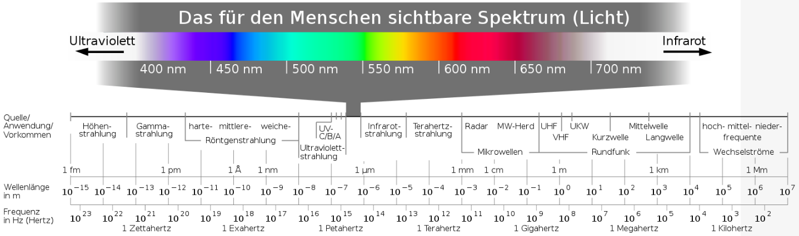

| Zeichen | Bedeutung |
|---|---|
| \(\Delta\) | Differenz, Unterschied |
| \(\gg\) | ist viel größer als |
| \(\sim\) | ist proportional zu |
| \(\in\) | ist Element aus |
| \(A \Rightarrow B\) | aus \(A\) folgt \(B\) |
| \(A \Leftrightarrow B\) | \(A\) ist äquivalent zu \(B\) |
| \(\perp\) | ist senkrecht zu |
| \([\si{\volt}]\) | in der Einheit (hier:) \(\si{\volt}\) gemessen |
Die Herleitungen von allen Formeln sind im Anhang aufgelistet (siehe [sec:herleitungen]). Wurden einfache Herleitungen von zentralen Formeln jedoch auch ausführlich im Unterricht behandelt, müssen sie trotzdem in der Abitur-Klausur reproduzierbar sein.
Inhalte, die im Folgenden aufgeführt sind, aber nicht für die schriftlichen Abiturprüfungen 2021 relevant sind, sind grau geschrieben.1
Inhalte, die bekannt sein sollten, aber nicht Kern einer Aufgabe sein werden, sind violett geschrieben. Trotz fehlender Markierung zählt hierzu wahrscheinlich auch die SRT, weil nach Herrn Kralemann ein gescheiter Lehrer eher keine Aufgaben zu Themen stellt, die er zum Zeitpunkt des Aufgabenschreibens noch nicht behandelt hat.
Wichtige Informationen oder Inhalte, die häufig vergessen werden könnten, sind rot geschrieben.
Die Kinematik beschäftigt sich mit dem zeitlichen Verlauf von Bewegungen, d.h. es wird beschrieben, wie sich ein Objekt bewegt.
Eine Übersicht über die Bewegungsformen ist in [fig:wiederholung_bewegungsformen] dargestellt.
Ein Zeit-Ort-Diagramm (\(t\)-\(x\)-Diagramm) beschreibt einen Bewegungsablauf, indem der Ort \(x\) (auch: \(s\)) als Funktion der Zeit \(t\) dargestellt wird. Dazu wird im Diagramm jedem Zeitpunkt ein Wert zugeordnet, der die Position des Gegenstandes zu dem jeweiligen Zeitpunkt beschreibt. Der Graph entspricht demnach einer Menge von einander zugeordneten Paaren von Zeit- und Ortswerten. Diese Paare lassen sich in einer Tabelle darstellen.
Die Geschwindigkeit \[v = \frac{\Delta x}{\Delta t}\] ist die Veränderungsrate des Ortes \(x\). Sie beschreibt, um welche Strecke \(\Delta x\) sich der Ort eines Gegenstandes im Zeitintervall \(\Delta t\) verändert. Durch ihr Vorzeichen gibt sie an, in welche Richtung der Ort verändert wurde: Bewegt sich der Gegenstand in Richtung der x-Achse, dann ist der Ortsunterschied \(\Delta x\) positiv und die Geschwindigkeit daher auch. Bewegt sich der Gegenstand hingegen entgegen der Richtung der x-Achse, dann ist der Ortsunterschied \(\Delta x\) negativ und so auch die Geschwindigkeit.
Mathematisch wird die Geschwindigkeit als Ableitung des Ortes nach der Zeit definiert. Graphisch entspricht dies der Steigung des Graphen im jeweiligen Punkt.
Es sind Momentan- und Durchschnittsgeschwindigkeit zu unterscheiden.
Ein Zeit-Geschwindigkeit-Diagramm (\(t\)-\(v\)-Diagramm) beschreibt einen Bewegungsablauf, indem die Geschwindigkeit als Funktion der Zeit dargestellt wird. Dazu wird im Diagramm jedem Zeitpunkt ein Wert zugeordnet, der die Geschwindigkeit des Gegenstandes zu dem jeweiligen Zeitpunkt beschreibt.
Die Beschleunigung \[a = \frac{\Delta v}{\Delta t}\] ist die Veränderungsrate der Geschwindigkeit \(v\). Sie beschreibt, um welchen Betrag \(\Delta v\) sich die Geschwindigkeit eines Gegenstandes im Zeitintervall \(\Delta t\) ändert. Sie gibt dabei – analog zur Geschwindigkeit – durch ihr Vorzeichen an, in welche Richtung die Geschwindigkeit verändert wurde. Genauso analog wird wird die Beschleunigung mathematisch als Ableitung der Geschwindigkeit nach der Zeit definiert.
Ein Zeit-Beschleunigung-Diagramm (\(t\)-\(a\)-Diagramm) beschreibt einen Bewegungsablauf, indem die Beschleunigung als Funktion der Zeit dargestellt wird. Dazu wird im Diagramm jedem Zeitpunkt ein Wert zugeordnet, der die Beschleunigung des Gegenstandes zu dem jeweiligen Zeitpunkt beschreibt.
Sind Messwerte für den Ort bzw. die Geschwindigkeit gegeben, kann näherungsweise durch die numerische Ableitung die Geschwindigkeit bzw. Beschleunigung bestimmt werden:
Mathematisch wird die Geschwindigkeit als Ableitung des Ortes nach der Zeit definiert. Graphisch entspricht dies der Steigung des Graphen im jeweiligen Punkt. Um diese (graphisch) zu ermitteln, wird durch den Punkt eine Tangente gezeichnet. Die Steigung dieser Tangente kann durch ein Steigungsdreieck bestimmt werden. Sind Messwerte gegeben, kann die näherungsweise Steigung unmittelbar durch die numerische Ableitung mit \[v(t_n) = \frac{x(t_{n+1})-x(t_{n-1})}{t_{n+1}-t_{n-1}}\] zu einem Zeitpunkt \(t_n\) berechnet werden.
Für die numerische Ableitung der Geschwindigkeit gilt analog \[a(t_n) = \frac{v(t_{n+1})-v(t_{n-1})}{t_{n+1}-t_{n-1}} .\]
Bei der graphischen Auswertung von Videomaterial können Zusammenhänge zwischen den Bewegungsdiagrammen (siehe [fig:konstant_beschleunigte_bewegung]) hergestellt werden:
Die konstant beschleunigte Bewegung ist durch \[a(t) = \text{konst.} \neq 0\] charakterisiert. Aus der Definition der Beschleunigung \(a = \frac{\Delta v}{\Delta t}\) folgt daher \[v(t) = a \cdot t + v_0 ,\] wobei die Konstante \(v_0\) die Geschwindigkeit zum Zeitpunkt \(t = \SI{0}{\second}\) bezeichnet. Daraus resultiert für die Bewegungsgleichung zur Beschreibung der zeitlichen Entwicklung des Ortes dann \[x(t) = \frac{a}{2}\cdot t^2 + v_0\cdot t + x_0 ,\] wobei die Konstante \(x_0\) die zum Zeitpunkt \(t = \SI{0}{\second}\) bereits zurückgelegte Strecke (und im Zeit-Orts-Diagramm die Nullpunktsverschiebung) bezeichnet.
Aus dem Zeit-Geschwindigkeit-Diagramm (siehe [fig:konstant_beschleunigte_bewegung]) kann der Zusammenhang \(x(t)=\frac{a}{2}\cdot t^2\) (in dem Fall, dass \(v_0=0\) und \(x_0=0\) gilt) graphisch hergeleitet werden: Die zurückgelegte Strecke entspricht der orange gefärbten Fläche; für sie gilt \[x(t_0) = \frac{v(t_0)\cdot t_0}{2} .\] Setzt man \(v(t_0) = a \cdot t_0\) ein, erhält man den obigen Zusammenhang \[x(t_0) = \frac{a}{2}\cdot t_0^2\].
Die Bremsbewegung ist ein Spezialfall der gleichförmig beschleunigten Bewegung (siehe [sec:konstant_beschleunigte_bewegung]). Bei Bremsbewegungen ist die Beschleunigung negativ, d.h. aus \(a\) wird \(-a\). Häufig gilt auch \(x_0=0\), d.h. der Zeitpunkt \(t=0\) entspricht dem Zeitpunkt des ersten Bremsen; davon gehen wir im Folgenden aus. Daher gilt für die Bewegungsgleichungen: \[\begin{aligned} x(t) &= -\frac{a}{2}\cdot t^2 + v_0\cdot t \\ v(t) &= -a\cdot t + v_0 \\ a(t) &= -a = \text{konst.} \neq 0\end{aligned}\]
Es gilt für den Zeitpunkt \(t_B\), an dem die Geschwindigkeit \(v(t_B) = 0\) ist (für die ausführliche Herleitung siehe [sec:herleitung_bremsbewegung_tb]), \[t_B = \frac{v_0}{a}\] und für den Bremsweg \(x_B\) entsprechend (für die ausführliche Herleitung siehe [sec:herleitung_bremsbewegung_xb]) \[x_B = \frac{v_0^2}{2a} .\]
Die gleichförmige Bewegung ist ein Spezialfall der konstant beschleunigten Bewegung; es gilt hier \(a=0\). So vereinfachen sich die Bewegungsgleichungen: \[\begin{aligned} x(t) &= v_0\cdot t + x_0 \\ v(t) &= v_0 = \text{konst.} \neq 0 \\ a(t) &= 0\end{aligned}\]
Die Bewegungsdiagramme der gleichförmigen Bewegung sind in [fig:gleichfoermige_bewegung] abgebildet.
Zunächst wird als Beispiel eine gleichförmige Bewegung mit konstanter Geschwindigkeit \(v_0\) untersucht: Bewegt sich ein Gegenstand für eine Zeitspanne \(\Delta t\) mit der konstanten Geschwindigkeit \(v_0\), so verändert er seinen Ort um die Strecke \[\Delta x = v_0 \cdot \Delta t .\] Ist die Position \(x_0\) zum Zeitpunkt \(t=0\) zusätzlich bekannt, kann das Zeit-Weg-Gesetzt \[x(t) = v_0 \cdot t + x_0\] bestimmt werden.
Dieses Beispiel ist in [fig:gleichfoermige_bewegung] dargestellt: In der Mitte ist das \(t\)-\(v\)-Diagramm einer gleichförmigen Bewegung dargestellt; die konstante Geschwindigkeit entspricht einer Geraden, die parallel zur x-Achse verläuft. Der Zeitabschnitt \(\Delta t\) ist in der Grafik die Breite des orangen Rechtecks. Die Positionsveränderung \(\Delta x\) entspricht dann anschaulich der Fläche dieses Rechtecks.
Berechnet man auf diese Weise für alle Zeiträume \(\Delta t = [0,1,\dots]\) die Fläche unter dem Graphen durch \(\Delta x = v_0 \cdot \Delta t\) und trägt diese Werte als Funktion über den jeweiligen Werten für \(t\) in ein Diagramm ein, erhält man die obere Graphik, also das entsprechende Zeit-Weg-Gesetz, wobei angenommen wird, dass die Nullpunktsverschiebung \(x_0 = 0\) ist.
Zwei zentrale Ergebnisse dieses Falls lassen sich nun verwenden, um die Zeit-Weg-Gesetze aus beliebigen Zeit-Geschwindigkeit-Funktionen \(v(t)\) bzw. \(t\)-\(v\)-Diagrammen zu bestimmten:
Wird der Zeitraum \(\Delta t\) so klein gewählt, dass die Geschwindigkeit \(v(\Delta t)\) trotz ihrer Veränderung näherungsweise als konstant gelten kann, kann die Veränderung des Ortes \(\Delta x\) in diesem Zeitraum näherungsweise über \[\Delta x = v(\Delta t) \cdot \Delta t\] berechnet werden. Dies entspricht der Näherung der numerischen Ableitung, denn dort wurde angenommen, dass die Steigung in den Zeitintervallen näherungsweise konstant ist.
Die in dem Zeitraum \(\Delta x\) zurückgelegte Strecke \(\Delta x\) entspricht der in diesem Zeitraum unter der Zeit-Geschwindigkeit-Funktion \(v(t)\) eingeschlossenen Fläche. Dies entspricht der Definition des Integrals.
Ein mögliches Verfahren zur numerischen Integration ist das Euler-Verfahren: Die Zeit wird dazu in gleichgroße Intervalle \(\Delta t\) zerlegt, um im Abstand der Intervalle die folgende Position zu bestimmen. Dabei wird angenommen, dass die Geschwindigkeit im Intervall näherungsweise konstant ist, sodass jedem Zeitintervall die Positionsveränderung \(\Delta x = v(\Delta t) \cdot \Delta t\) entspricht. Dieses Verfahren lässt sich in Form einer Tabelle darstellen (siehe [tab:euler-verfahren]).
| Zeit \(t\) | Position \(x(t)\) | Positionsveränderung \(\Delta x\) |
|---|---|---|
| \(t=\SI{0}{\second}\) | \(x_0\) | \(\Delta x(0) = v(0)\cdot\Delta t\) |
| \(t=1\cdot\Delta t\) | \(x_0 + \Delta x(0)\) | \(\Delta x(1\cdot\Delta x) = v(1\cdot\Delta x)\cdot\Delta t\) |
| \(t=2\cdot\Delta t\) | \(x_0 + \Delta x(0) + \Delta x(1\cdot\Delta t)\) | \(\Delta x(2\cdot\Delta x) = v(2\cdot\Delta x)\cdot\Delta t\) |
| \(t=3\cdot\Delta t\) | \(x_0 + \Delta x(0) + \Delta x(1\cdot\Delta t) + \Delta x(2\cdot\Delta t)\) | \(\Delta x(3\cdot\Delta x) = v(3\cdot\Delta x)\cdot\Delta t\) |
| \(\vdots\) | \(\vdots\) | \(\vdots\) |
[tab:euler-verfahren]
Graphisch ist dieses Verfahren so zu verstehen, dass die Fläche unter der Zeit-Geschwindigkeit-Funktion \(v(t)\) in Rechtecke der Breite \(\Delta t\) und der jeweiligen Höhe \(v(t)\) unterteilt wird, sodass sie nur mit der linken oberen Ecke die Funktion \(v(t)\) berühren. Die in einem Zeitintervall unter \(v(t)\) eingeschlossene Fläche und somit die Positionsveränderung \(\Delta x\) in diesem Zeitintervall ist dann die Summe aller Rechteckflächen im Zeitintervall.
Da die Geschwindigkeit und der Ort im gleichen Verhältnis zueinander stehen wie Beschleunigung und Geschwindigkeit, können alle Erkenntnisse auf letzteren Fall übertragen werden.
Als freier Fall werden Bewegungen bezeichnet, in denen Objekte durch die Erdbeschleunigung konstant beschleunigt auf die Erde fallen (zunächst wird dabei die Luftreibung vernachlässigt). Es gilt daher \(a=-g\), wobei mit \(g\approx\SI{9,81}{\meter\per\square\second}\) die Fallbeschleunigung bezeichnet wird.
Für die Bewegungsgleichungen gilt daher: \[\begin{aligned} x(t) &= -\frac{g}{2}\cdot t^2+v_0\cdot t+x_0 \\ v(t) &= -g\cdot t + v_0 \\ a(t) &= -g\end{aligned}\]
Zudem kann die bremsende Beschleunigung durch die Luftreibungskraft \[a_\text{Reibung} \approx \frac{c_w}{m}\cdot v^2\] beschrieben werden, wobei die Masse \(m\) des fallenden Objekts benötigt und wird. Mit \(c_w\) wird der Strömungswiderstandskoeffizient, also die Windschlüpfigkeit des Objekts beschrieben (bei einem Fallschirmspringer mit \(m = \SI{80}{\kg}\) gilt \(c_w \approx \SI{0,31}{\kg\per\meter}\)). Trotz konstanter Erdbeschleunigung tritt ab einem gewissen Zeitpunkt eine Grenzgeschwindigkeit \(v_\text{Grenz}\) auf, die nicht überschritten wird. Sie ist erreicht, wenn \[g = a_\text{Reibung}\] gilt; durch Einsetzen und Umformen (für die ausführliche Herleitung siehe [sec:herleitung_freier_fall_vgrenz]) erhält man \[v_\text{Grenz} \approx \sqrt{\frac{g\cdot m}{c_w}} .\]
Der senkrechte Wurf bezeichnet eine Wurfbewegung vertikal nach oben, sodass das entsprechende Objekt nach Erreichen eines höchsten Punkts durch die Erdbeschleunigung \(g\) wieder nach unten fällt. Es gilt also wieder \(a=-g\). Für die Bewegungsgleichungen ergibt sich daher: \[\begin{aligned} x(t) &= -\frac{g}{2}\cdot t^2+v_0\cdot t+x_0 \\ v(t) &= -g\cdot t + v_0 \\ a(t) &= -g\end{aligned}\]
Für die Steigzeit \(t_\text{max}\) des Objektes gilt \(v(t_\text{max})= 0\) (für die ausführliche Herleitung siehe [sec:herleitung_senkrechter_wurf_tmax]) und daher \[t_\text{max} = \frac{v_0}{g} .\] Für die maximale Höhe \(x_\text{max}\) gilt \(x_\text{max} = x(t_\text{max})\) (für die ausführliche Herleitung siehe [sec:herleitung_senkrechter_wurf_xmax]) und daher \[x_\text{max} = \frac{v_0^2}{2g}+x_0 .\]
Anders als beim freien Fall oder senkrechten Wurf gibt es beim waagerechten Wurf zwei Dimensionen, in denen sich ein Objekt bewegen kann: horizontal längs der x-Achse und vertikal längs der y-Achse. Daher gibt es neben einem Zeit-Weg-Diagramm in x-Achsenrichtung (x-t-Diagramm) auch ein Zeit-Weg-Diagramm in y-Achsenrichtung (y-t-Diagramm) und ein Diagramm zur Darstellung der Bewegung in der x-y-Ebene (x-y-Diagramm). Ein Beispiel dafür ist ein Skateboarder, der eine Treppe herunterfährt.
Zur Beschreibung muss der Koordinatenursprung festgelegt werden: Der Zeitpunkt \(t=0\) soll dem Zeitpunkt des Abwurfs entsprechen; es sollen \(x(0)=0\) und \(y(0)=y_0=H_0\) (\(\widehat{=}\) Höhe bis zum Aufprall) gelten.
Die Startgeschwindigkeit des Wurfs in x-Richtung wird als \(v_{x,0}\) bezeichnet, die konstante Erdbeschleunigung in y-Richtung ist \(g\). Für die Bewegungsgleichungen gilt daher: \[\begin{aligned} x(t) &= v_{x,0}\cdot t & y(t) &= -\frac{g}{2}\cdot t^2+y_0 \\ v_x(t) &= v_{x,0} & v_y(t) &= -g\cdot t \\ a_x(t) &= 0 & a_y(t) &= -g\end{aligned}\]
Für die Aufprallzeit \(t_A\) (die Zeit bis zum Aufprall) gilt \(y(t_A)=0\) (für die ausführliche Herleitung siehe [sec:herleitung_waagerechter_wurf_ta]) und daher \[t_A = \sqrt{\frac{2y_0}{g}} .\] Für die Wurfweite \(x_A\) (den Ort des Aufpralls) gilt (für die ausführliche Herleitung siehe [sec:herleitung_waagerechter_wurf_xa]) \[x_A = x(t_A) = v_{x,0}\cdot\sqrt{\frac{2y_0}{g}} .\]
Die Bahnkurve des Objekts in der x-y-Ebene wird als Wurfparabel bezeichnet. Die dazugehörige Gleichung \[y(x) = -\frac{g}{2v_{x,0}^2}\cdot x^2 + y_0\] erhält man, indem man das Weg-Zeit-Gesetz in x-Richtung nach \(t\) auflöst und diesen Wert in das Weg-Zeit-Gesetz in y-Richtung einsetzt.
Im Gegensatz zum senkrechten bzw. waagerechten Wurf wird beim schiefen Wurf nicht vertikal nach oben bzw. parallel zum Boden geworfen, sondern es wird schräg abgeworfen.
Auch hier wird der Zeitpunkt \(t=0\) so gewählt, dass \(x(0)=0\) dem Punkt des Abwurfs und \(y(0)=H_0\) der Höhe bis zum Aufprall entspricht. Auch hier muss der Verlauf der Bewegung in zwei Dimensionen beschrieben werden; als gleichförmige Bewegung in x-Richtung und als konstant beschleunigte Bewegung in y-Richtung.
Die Anfangsgeschwindigkeit \(v_0\) kann über den Winkel \(\alpha\) zur Horizontalen in die Komponenten \(v_{x,0}\) und \(v_{y,0}\) zerlegt werden. Es gelten dann \[v_{x,0}=v_0 \cdot\cos{\alpha} \textrm{, } \quad v_{y,0}=v_0 \cdot\sin{\alpha} \quad \textrm{ und } \quad v_0^2 = v_{x,0}^2 + v_{y,0}^2 .\] Diese Zusammenhänge können in alle Zusammenhänge für den schiefen Wurf eingesetzt werden.
Für die Bewegungsgleichungen gilt: \[\begin{aligned} x(t) &= v_{x,0}\cdot t & &= v_0 \cdot\cos{\alpha}\cdot t \\ v_x(t) &= v_{x,0} & &= v_0 \cdot\cos{\alpha} \\ a_x(t) &= 0 & \\ y(t) &= -\frac{g}{2}\cdot t^2+v_{y,0}\cdot t+H_0 & &= -\frac{g}{2}\cdot t^2+v_0 \cdot\sin{\alpha}\cdot t+H_0 \\ v_y(t) &= -g\cdot t+v_{y,0} & &= -g\cdot t+v_0 \cdot\sin{\alpha} \\ a_y(t) &= -g &\end{aligned}\]
Für die Wurfdauer \(t_A\), die Zeitspanne bis zum Aufprall, gilt \(y(t_A)=0\) und daraus ergibt sich (für die ausführliche Herleitung siehe [sec:herleitung_schiefer_wurf_ta]) \[t_A = \frac{v_{y,0}}{g} + \sqrt{\left( \frac{v_{y,0}}{g}\right)^2 + \frac{2H_0}{g}} .\] Für die Wurfweite \(x_A\), der horizontalen Strecke bis zum Aufprall, gilt \(x_A=x(t_A)\) und daher (für die ausführliche Herleitung siehe [sec:herleitung_schiefer_wurf_xa]) \[x_A = v_{x,0} \cdot \left( \frac{v_{y,0}}{g} + \sqrt{\left( \frac{v_{y,0}}{g}\right)^2 + \frac{2H_0}{g}} \,\right) .\]
Die Gleichung der Wurfparabel \[y(x) = -\frac{g}{2v_0^2\cdot\cos^2{(\alpha)}}\cdot x^2 + \tan{(\alpha)}\cdot x + H_0\] erhält man, indem man das Weg-Zeit-Gesetz in x-Richtung nach \(t\) auflöst und diesen Wert in das Weg-Zeit-Gesetz in y-Richtung einsetzt (für die ausführliche Herleitung siehe [sec:herleitung_schiefer_wurf_yx]). Mithilfe der Ableitung (für die ausführliche Herleitung siehe [sec:herleitung_schiefer_wurf_xmax]) ergibt sich für den höchsten Punkt der Wurfparabel \[x_\text{max} = \frac{\sin{(2\alpha)}\cdot v_0^2}{2g} ,\] durch Einsetzen in die Wurfparabel (für die ausführliche Herleitung siehe [sec:herleitung_schiefer_wurf_ymax]) erhält man schließlich für die maximale Höhe \[y_\text{max} = \frac{v_0^2\cdot\sin^2{(\alpha)}}{2g} + H_0 = \frac{v_{y,0}^2}{2g} + H_0 .\]
Es können mehrere Spezialfälle untersucht werden:
Der Fall \(v_{y,0}=0\) entspricht dem waagerechten Wurf (siehe [sec:waagerechter_wurf]).
Entspricht die Abwurfhöhe der Aufschlagshöhe \(H_0 = 0\), dann gilt für die Wurfdauer (für die ausführliche Herleitung siehe [sec:herleitung_schiefer_wurf_ta_h0=0]) \[t_A = \frac{2v_{y,0}}{g}\] und für die Wurfweite (für die ausführliche Herleitung siehe [sec:herleitung_schiefer_wurf_xa_h0=0]) \[x_A = \frac{2\cdot v_{x,0}\cdot v_{y,0}}{g} = \frac{v_0^2\cdot\sin{(2\alpha)}}{g} .\] Aus der letzten Formel resultiert der Winkel \[\alpha_\text{max} = \SI{45}{\degree}\] für die maximale Wurfweite in diesem Fall (für die ausführliche Herleitung siehe [sec:herleitung_schiefer_wurf_alphamax_h0=0]).
Die Dynamik beschäftigt sich mit den Gründen und Ursachen von Bewegung.
Die Ursache für Bewegungen ist immer eine Kraft. Das Formelzeichen für Kraft ist \[F \quad \textrm{(engl. \glqq force\grqq)} ,\] die Einheit ist nach ihrem Entdecker Isaac Newton (1642 – 1727) \[\si{\newton} = \text{Newton} .\]
Die Gravitationskraft der Erde (auf der Erdoberfläche) lässt sich mit \[F_G = m\cdot g \qquad\textrm{(mit der \textbf{Erdbeschleunigung} $\textstyle g \approx \SI{9,81}{\meter\per\square\second}$)}\] berechnen; die Gravitationskraft zwischen zwei Körpern allgemein (mit dem Abstand \(r\) und den Massen \(m_1\) und \(m_2\)) ist \[F_G = G\cdot\frac{m_1\cdot m_2}{r^2} \qquad\textrm{(mit der \textbf{Gravitationskonstante} $\textstyle G\approx\SI{6,67e-11}{\cubic\meter\per\kg\per\square\second}$)} .\]
Um den Begriff Kraft zu definieren und seinen Zusammenhang mit der Veränderung von Bewegungszuständen über die Beschleunigung zu klären, stellt Newton drei Prinzipien auf:
Trägheitsprinzip: Ein Körper verharrt im Zustand der Ruhe oder der gleichförmig gradlinigen Bewegung, sofern er nicht durch einwirkende Kräfte zur Änderung seines Zustands gezwungen wird.
Aktionsprinzip (Grundgleichung der Mechanik): Die Änderung der Bewegung ist der bewegenden Kraft proportional und geschieht in der Richtung, in der die Kraft wirkt.
Die Proportionalitätskonstante ist die Masse \(m\): \[F=m \cdot a\]
Die Einheit der Kraft ist \[\si{\newton} = \si{\kg}\cdot\si{\m\per\square\second} ,\] da eine Kraft von \(\SI{1}{\newton}\) vorliegt, wenn ein Körper der Masse \(\SI{1}{\m}\) eine Beschleunigung von \(\SI{1}{\m\per\square\second}\) erfährt.
Prinzip der Wechselwirkung: Die Kraft \(F_{1,2}\), die ein Körper auf einen anderen Lörper ausübt, ist entgegengesetzt gleich der Kraft \(f_{2,1}\), die der zweite Körper auf den ersten ausübt. \[F_{1,2} = -F_{2,1}\]
Kräfte wirken immer zwischen zwei Körpern.
Die Kraft \(F=m \cdot a\) heißt allgemein auch Trägheitskraft.
Damit die Grundgleichung der Mechanik \[F=m \cdot a\] überhaupt sinnvoll ist, muss die wirkende Kraft nachgewiesen werden:
Bei der dynamischen Kraftmessung wird die Kraft \(F\) aus der Beschleunigung \(a\) bestimmt.
Bei der statischen Kraftmessung werden Kräfte unabhängig von ihrer beschleunigenden Wirkung nachgewiesen. Dies ist möglich, da man die Wirkung bzw. das Aufbringen von Kraft (körperlich, z.B. beim Armdrücken) spüren kann, selbst wenn keine Beschleunigung zu beobachten ist.
Physikalisch nutzt man zur statischen Kraftmessung, dass Kräfte auch zu elastischen Verformungen von Körpern führen, d.h. zu vorübergehenden Verformungen, die sich nach dem Beenden der Krafteinwirkung zurückbilden. Dies ist z.B. bei einer Metallfeder der Fall: Wird eine Kraft auf die Feder ausgeübt, dehnt sie sich aus bis die Dehnung eine Kraft erzeugt, die der wirkenden Kraft entspricht. In diesem Zustand des Kräftegleichgewichts verändert sich die Dehnung der Feder nicht weiter. Die Kraft der Feder ist dabei ihrer Auslenkung \(\Delta x\) proportional, was als Hooke’sches Gesetz \[F_\text{Hook} = D \cdot \Delta x\] bezeichnet wird. Die Proportionalitätskonstante, die Federkonstante \(D\) gibt die Stärke der Feder an und ist eine spezifische Konstante, die für jede Feder durch Messung bestimmt werden muss.
Eine Feder mit bekannter Federkonstante kann daher als statischer Kraftmesser verwendet werden, da sich aus der Auslenkung \(\Delta x\) über die Federkonstante die Kraft, die auf die Feder wirkt, bestimmen lässt, ohne dass eine Beschleunigung beobachtet werden muss. Eine solche Messung wird mit einem Federkraftmesser durchgeführt.
Die Grundgleichung der Mechanik lässt sich daher experimentell überprüfen, indem eine Kraft sowohl dynamisch über ihre beschleunigende Wirkung als auch statisch über ihre verformende Wirkung gemessen wird, um dann die Ergebnisse zu vergleichen.
Aufbau. Ein Wagen mit variabler Masse \(m_W\) wird durch die konstante Gewichtskraft \[F_G = g \cdot m_M\] eines Massestücks der variablen Masse \(m_M\) beschleunigt. Dazu wird das Massestück an einen Faden gehängt, der über eine Rolle umgeleitet und an dem Wagen befestigt wird.
Durchführung. Die Gewichtskraft des Massestücks kann dann statisch durch einen Federkraftmesser und dynamisch durch die Beschleunigung des Wagens gemessen werden.
Beobachtung. Die statische Kraft ist proportional zu der gemessenen Beschleunigung.
Deutung. Daraus resultiert, dass die Grundgleichung der Mechanik wahr ist, weil sie genau dies aussagt.
Kräfte sind gerichtete Größen: Ihre Wirkung hängt von ihrem Betrag und ihrer Richtung ab. Mathematisch gesehen sind Kräfte daher Vektoren: \[\vv{F}\]
Mehrere Kräfte, die am selben Punkt wirken, können addiert und durch eine einzige Kraft ersetzt werden. Diese resultierende Kraft – die Gesamtkraft oder Ersatzkraft – hat die gleiche Wirkung wie die Ausgangskräfte zusammen. Gleichermaßen ist des möglich, jede Kraft in Teilkräfte zu zerlegen durch diese zu ersetzten, die am selben Punkt angreifen und dieselbe Wirkung haben wie die ursprüngliche Kraft.
Diese Kräfte müssen dabei als Vektoren addiert bzw. zerlegt werden. Für zwei Kräfte wird folgendes, als Kräfteparallelogramm (siehe [fig:kraeftezerlegung]) bezeichnetes Verfahren verwendet. Es lässt sich analog für beliebig viele Kräfte erweitern und es gilt für alle gerichtete Größen.
Sind die Kräfte \(\vv{F_1}\) und \(\vv{F_2}\) gegeben, dann lässt sich die resultierende Gesamtkraft \(\vv{F_R}\) bestimmen, indem der Vektor \(\vv{F_2}\) ohne Veränderung von Länge und Richtung so verschoben wird, dass er an der Spitze des Vektors \(\vv{F_1}\) beginnt. Der Vektor vom Beginn von \(\vv{F_1}\) zum Ende von \(\vv{F_2}\) ist dann die resultierende Gesamtkraft \(\vv{F_R}\) (analog kann auch \(\vv{F_1}\) verschoben werden).
Bei der Vektoraddition sind die Kräfte \(\vv{F_1}\) und \(\vv{F_2}\) gegeben und der Vektor \(\vv{F_R}\) gesucht. Seine Länge ist dann der Betrag der Ersatzkraft und seine Richtung die Richtung der Ersatzkraft und damit die der resultierenden Beschleunigung. Im Fall der Zerlegung einer Kraft ist der Vektor \(\vv{F_R}\) gegeben und es werden zwei Vektoren \(\vv{F_1}\) und \(\vv{F_2}\) gesucht, die in einem Kräfteparallelogramm \(\vv{F_R}\) ergeben. Ohne weitere Angaben ist die Zerlegung einer Kraft nicht eindeutig, sie kann auf beliebig viele Weisen in zwei oder mehr Kräfte zerlegt werden.
In einem häufigen Spezialfall stehen die Kräfte senkrecht aufeinander. Dann kann der Betrag der resultierenden Kraft über \[\left\vert\vv{F_R}\right\vert = \sqrt{ \left\vert\vv{F_1}\right\vert^2 + \left\vert\vv{F_2}\right\vert^2 }\] bestimmt werden. Ist \(\alpha\) der Winkel zwischen \(\vv{F_1}\) und \(\vv{F_R}\), dann gilt \[\left\vert\vv{F_2}\right\vert = \left\vert\vv{F_R}\right\vert \cdot \sin{\alpha} \qquad \textrm{ und} \qquad \left\vert\vv{F_1}\right\vert = \left\vert\vv{F_R}\right\vert \cdot \cos{\alpha} .\]
Eine schiefe Ebene (siehe [fig:kraefte_schiefe_ebene]) ist im normalen Sprachgebrauch eine Rampe. Die Kraft \(F_{G,\parallel}\) entlang ihrer Richtung ist kleiner als die Gewichtskraft \(F_G\).
Die Kraft \(F_{G,\parallel}\) wird auch Hangabtriebskraft \(F_A\) genannt.
Die Kraft \(F_{G,\perp}\) wird auch Normalkraft \(F_N\) genannt, da sie senkrecht zur schiefen Ebene steht. Ihr Betrag ist v.a. für die Reibung maßgebend.
Da das Kräftedreieck und der Querschnitt der schiefen Ebene zueinander ähnlich sind, lassen sich viele Verhältnisse zwischen den Kräften und den Maßen der schiefen Ebene aufstellen: \[\begin{aligned} \frac{F_A}{F_G} &= \frac{h}{l} = \sin{\alpha} \\ \frac{F_N}{F_G} &= \frac{b}{l} = \cos{\alpha} \\ \frac{F_A}{F_N} &= \frac{h}{b} = \tan{\alpha}\end{aligned}\] Durch den Satz des Pythagoras gilt: \[\begin{aligned} l^2 &= b^2 + h^2 \\ F_G^2 &= F_A^2 + F_N^2\end{aligned}\]
Die Länge \(l\) der Rampe wird manchmal \(s\) genannt.
Die Energie ist die wohl wichtigste und universellste physikalische Größe. Der Begriff stammt aus dem Griechischen und bedeutet so viel wie der Akt und die Fähigkeit der Veränderung bzw. Verwirklichung. Da eine solche Fähigkeit nur dann notwendig ist, wenn sich die jeweiligen Zustände nicht von selbst verändern oder verwirklichen, bedeutet Energie demnach genauer die Fähigkeit, Zustände gegen einen Widerstand verändern bzw. verwirklichen zu können.
Das physikalische Konzept, das die Veränderung gegen einen Widerstand beschreibt, ist die Arbeit. Energie lässt sich so physikalisch als die Fähigkeit verstehen, Arbeit verrichten zu können. Andererseits wird einem Objekt Energie zugeführt, wenn Arbeit geleistet wird: Daher kann Energie auch als gespeicherte Arbeit aufgefasst werden. Arbeit wird daher als Prozessgröße, die Energie als Zustandsgröße bezeichnet.
Arbeit wird mit dem Formelzeichen \[W\] bezeichnet. Mechanische Arbeit wird geleistet, wenn ein Körper eine Strecke \(\Delta x\) gegen eine Kraft \(F\) verschoben wird. Ist die Kraft konstant und wirkt in Richtung des Weges, dann die Arbeit das Produkt von Kraft und Strecke \[W = F \cdot\Delta x .\] Die Einheit von Energie und Arbeit ist daher \[\si{\joule} = \text{Joule} = \si{\newton\meter} .\]
Allgemein entspricht die Arbeit der unter der Kraft-Funktion \(F(x)\) zwischen den Punkten der Verschiebung \(a\) und \(b\) eingeschlossenen Fläche \[W = \int\limits_a^b F(x)\,\mathrm{d}x .\]
| Arbeit | potentielle Energie | kinetische Energie | thermische Energie, Wärme | |
|---|---|---|---|---|
| Prozessgröße | Arbeit \(W\) \([J]\) (Verschiebung gegen eine Kraft) \(\displaystyle W = \int\limits_a^b F(x)\,\mathrm{d}x\) \(F(x) = \text{konst.}\): \(W=F\cdot\Delta x\) |
Wärme \(Q\) | ||
| Zustandsgröße | potentielle Energie \(E_\text{pot}\) \([J]\) (in der Position eines Kraftfelds gespeicherte Arbeit) Gravitationsfeld der Erde: \(E_\text{pot}(\Delta h) = m\cdot g \cdot \Delta h\) Kraftfeld einer Feder: \(\displaystyle E_\text{pot}(\Delta x) = \frac12 \cdot D \cdot (\Delta x)^2 = \frac12 \cdot\frac{F^2}{D}\) |
kinetische Energie \(E_\text{kin}\) \([J]\) (in Bewegung gespeicherte Arbeit) \(\displaystyle E_\text{kin}= \frac12 m\cdot v^2\) |
thermische Energie \(E_\text{therm}\) \([J]\) (durchschnittliche Energie pro Teilchen) |
[tab:energie_arbeit]
Eine Übersicht über Energie und Arbeit ist in [tab:energie_arbeit] dargestellt.
Die physikalisch wichtigste Eigenschaft der Energie ist, dass Energie eine Erhaltungsgröße ist:
Prinzip der Energieerhaltung: Der Energieerhaltungssatz drückt aus, dass die Energie eine Erhaltungsgröße ist. Die Gesamtenergie eines abgeschlossenen Systems kann sich nicht mit der Zeit ändern. Energie kann zwischen verschiedenen Energieformen umgewandelt werden oder aus einem System in ein anderes transportiert werden. Es ist aber nicht möglich, Energie zu erzeugen oder zu vernichten. Ein abgeschlossenes System ist dabei eine Menge von Objekten, die untereinander in Weechselwirkung stehen können, auf die aber keine Kraft von einem Objekt außerhalb des Systems wirkt.
Der Energieerhaltungssatz ermöglicht also das Aufstellen von Energiebilanzen, wodurch eine Vielzahl physikalischer Probleme lösbar wird.
Energieentwertung bezeichnet den Übergang in thermische Energie bzw. Wärme (siehe [sec:energieformen]).
Es werden drei fundamental unterschiedliche Energieformen unterschieden – also drei unterschiedliche Weisen, wie bzw. worin Arbeit in einem System gespeichert wird:
potentielle Energie (Lageenergie): Durch Arbeit wird die Lage eines Objekts in einem Kraftfeld verschoben. In der neuen Position im Feld ist dann im Vergleich mit der ursprünglichen Position die Arbeit gespeichert. Wird Arbeit geleistet, indem z.B. ein Gegenstand gegen die Gravitationskraft in den 1. Stock getragen wird, ist diese Arbeit in seiner neuen Position im Schwerefeld der Erde gespeichert. Dies lässt sich daran erkennen, dass man dem Gegenstand aus dem Fenster werfen kann und die gespeicherte Arbeit – seine potentielle Energie – in Form von Bewegungsenergie wieder frei wird.
Potentielle Energie wird als \(E_\text{pot}(x)\) bezeichnet, die Variable \(x\) ist die Lage oder Position im Kraftfeld und soll ausdrücken, dass die potentielle Energie immer von der Position im Kraftfeld abhängt.
Da potentielle Energie in jedem permanent wirkenden Kraftfeld auftritt, gibt es je nach Art des Kraftfeldes unterschiedliche Formen potentieller Energie:
potentielle Energie im Schwerefeld/Gravitationsfeld der Erde2: Auf jeden Körper wirkt die Erdanziehungskraft \(F_G = m \cdot g\) (siehe [sec:kraft]). Wird ein Körper um die Höhendifferenz \(\Delta h\) angehoben, wird er gegen die Erdanziehungskraft \(F_G\) verschoben: Es wird Arbeit geleistet, die danach in Form von potentieller Energie gespeichert ist.
Es gilt für die potentielle Energie im Gravitationsfeld der Erde nach der Definition von Energie bzw. Arbeit (für die ausführliche Herleitung siehe [sec:herleitung_energie_epot_erde]) \[E_\text{pot}(\Delta h) = F_G \cdot \Delta h = m\cdot g \cdot \Delta h .\]
potentielle Energie einer Feder (Spannenergie): Durch die Spannung einer Feder wirkt nach dem Hooke’schen Gesetz (siehe [sec:kraftmessung]) permanent eine Rückstellkraft \(F_\text{Feder} = D \cdot \Delta x\) auf das Gewicht an einer Feder oder einem Gummiband: Es befindet sich daher an einem Ort im Kraftfeld der Feder. Bewegt man das Gewicht eine Strecke gegen die Kraft der Feder, wird einerseits Arbeit geleistet und andererseits die Lage im Kraftfeld verändert. Diese Arbeit ist dann in Form von potentieller Energie gespeichert.
Für die potentielle Energie im Kraftfeld einer Feder gilt nach der Definition von Energie bzw. Arbeit (für die ausführliche Herleitung siehe [sec:herleitung_energie_epot_feder]) \[E_\text{pot}(\Delta x) = \frac12 \cdot D \cdot (\Delta x)^2 = \frac12 \cdot\frac{F^2}{D} .\]
kinetische Energie (Bewegungsenergie): Um einen Körper zu beschleunigen, muss man nach den Newtonschen Axiomen (siehe [sec:newton_axiome]) gegen seine Trägheit die Kraft \(F=m\cdot a\) wirken lassen. Da der Körper dabei über eine Strecke verschoben wird, wird Beschleunigungsarbeit geleistet. Diese ist danach in seinem Bewegungszustand – umgangssprachlich in seiner Geschwindigkeit – als kinetische Energie gespeichert.
Für die kinetische Energie eines Körpers gilt nach der Definition von Energie bzw. Arbeit (für die ausführliche Herleitung siehe [sec:herleitung_energie_ekin]) \[E_\text{kin}= \frac12 m\cdot v^2 = \frac{p^2}{2m} .\] Die kinetische Energie hängt also nur von der erreichten Geschwindigkeit und der Masse des beschleunigten Gegenstandes ab. Sie und somit auch die Arbeit, die zum Erreichen einer Geschwindigkeit \(v\) geleistet werden muss, nimmt dabei mit dem Quadrat der Geschwindigkeit der Masse des Gegenstandes zu.
thermische Energie/Wärme: Thermische Energie ist eine Form der kinetischen Energie, nämlich der kinetischen Energie einer sehr großen Anzahl von Teilchen (Größenordnung \(10^{23}\) Teilchen), die sich ungeordnet bewegen. Gase, Flüssigkeiten oder Festkörper bestehen aus einer großen Anzahl von unterschiedlich stark gebundenen Atomen bzw. Molekülen, die je nach Aggregatzustand entweder freie oder in Atomgittern gebundene, ungeordnete Zitterbewegungen ausführen. Die durchschnittliche Energie \[\overline{E_\text{kin}} = \frac32 k_B \cdot T\] der Zitterbewegung aller Teilchen entspricht idealisiert der Temperatur \(T\) (in Kelvin), wobei \[k_B \approx \SI{1,38e-23}{\joule\per\kelvin}\] die Boltzmann-Konstante bezeichnet. Die thermische Energie eines Körpers ist dann sie Summe der durchschnittlichen kinetischen Energie aller Teilchen. Ist die Anzahl der Teilchen \(N\), dann ist \[E_\text{therm} = N \cdot \overline{E_\text{kin}} = \frac32 N \cdot k_B \cdot T\] die thermische Energie eines Körpers.
Thermische Energie strömt von selbst von Gegenständen höherer Temperatur zu Gegenständen niedriger Temperatur, aber niemals von selbst in die umgekehrte Richtung, da beim Zusammenstoß von Teilchen im Durchschnitt kinetische Energie immer vom energiereicheren Teilchen auf das energieärmere übertragen wird. Während die thermische Energie den Zustand eines Systems beschreibt, wird die bei einem Prozess übertragene thermische Energie als Wärme bezeichnet. Thermische Energie ist eine Zustandsgröße, Wärme die entsprechende Prozessgröße.
Da die Bewegung der einzelnen Teilchen ungeordnet ist, kompensieren sich nach außen hin ihre Effekte gegenseitig, sodass der gesamte Körper aus einer makroskopischen Perspektive unbewegt ist. Diese ungeordnete kinetische Energie kann daher auch nicht direkt genutzt werden, um Arbeit zu verrichten. Man bezeichnet thermische Energie bzw. Wärme daher auch als entwertete Energie. Beim Leisten von Arbeit durch potentielle oder kinetische Energie entsteht durch Reibung zwar immer von selbst thermische Energie, sie wandelt sich aber niemals von selbst direkt in Arbeit und so in kinetische bzw. potentielle Energie um.
Als innere Energie wird nicht durch den Körper als ganzes gespeicherte (potentielle oder kinetische), sondern in der Beziehung der Teile eines Körpers (z.B. Verformung bei makroskopischen Teilchen, Wechsel des Energieniveaus bei Atomen) gespeicherte Energie bezeichnet.
Der Impuls \[\vv{p} = m \cdot\vv{v}\] beschreibt (wie die kinetische Energie) den Bewegungsablauf eines Körpers. Die Einheit des Impulses ist \[\si{\kg\m\per\s} .\] Insbesondere wird der Impuls verwendet, um die Veränderung der Bewegung beim Zusammenstoß von Körpern zu verstehen. Umgangssprachlich könnte der Impuls als Schwung bezeichnet werden.
Auch der Impuls ist eine Erhaltungsgröße, d.h. in einem abgeschlossenen System ist der Gesamtimpuls konstant (siehe [sec:impulserhaltung]).
Die ursprüngliche Formulierung von Newtons Aktionsprinzip (siehe [sec:newton_axiome]) basiert auf dem Impuls:
Die Kraft \[\vv{F} = \frac{\Delta\vv{p}}{\Delta t} = \frac{\Delta(m\cdot\vv{v})}{\Delta t}\] entspricht nach dem Aktionsprinzip der Impulsänderung pro Zeit, mathematisch also der zeitlichen Ableitung des Impulses. Mithilfe der Produktregel folgt daraus \[\vv{F} = \frac{\Delta(m\cdot\vv{v})}{\Delta t} = \frac{\Delta m}{\Delta t}\cdot\vv{v} + \frac{\Delta\vv{v}}{\Delta t}\cdot m .\] Es gibt demnach zwei Möglichkeiten, den Impuls durch eine Kraft zu verändern; entweder indem bei konstanter Geschwindigkeit die Masse verändert wird oder indem bei konstanter Masse die Geschwindigkeit verändert wird. Die Impulsänderung durch eine Veränderung der Masse ist selten (z.B. bei Raketen, die ihren Treibstoff verbrennen); häufig bleibt die Masse zeitlich konstant. In diesem Fall gilt \[\vv{F} = 0\cdot\vv{v} + \frac{\Delta\vv{v}}{\Delta t}\cdot m = \frac{\Delta\vv{v}}{\Delta t}\cdot m = \vv{a}\cdot m ,\] woraus sich die bereits eingeführte Grundgleichung der Mechanik (siehe [sec:newton_axiome]) ergibt.
Wie die Energie ist der Impuls eine Erhaltungsgröße:
Prinzip der Impulserhaltung: In einem abgeschlossenen System ist die Summe aller Impulse zeitlich konstant. In abgeschlossenen Systemen kann Impuls nicht entstehen oder vernichtet werden. Ein abgeschlossenes System ist eine Menge von Objekten, die untereinander in Wechselwirkung stehen können, auf die aber keine Kraft von einem Objekt außerhalb des Systems wirkt.
Dieses Prinzip lässt sich folgendermaßen begründen:
In einem abgeschlossenen System sind nur Kräfte zwischen Elemente des Systems möglich. Wirkt von einem Objekt eine Kraft \(\vv{F_{1,2}}\) auf ein zweites Objekt, folgt nach Newtons Prinzip der Wechselwirkung (siehe [sec:newton_axiome]), dass eine gleichgroße entgegengesetzte Kraft von dem zweiten Objekt auf das erste wirkt. Für die Veränderung des Gesamtimpulses \(\vv{p_\text{ges}}\) folgt mithilfe der Definition der Kraft durch Impuls \[\frac{\Delta \vv{p_\text{ges}}}{\Delta t} = \frac{\Delta\vv{p_1}}{\Delta t} + \frac{\Delta\vv{p_2}}{\Delta t} = \vv{F_{1,2}} + \vv{F_{2,1}} .\] Da die Kräfte nach dem Prinzip der Wechselwirkung entgegengesetzt gleich sind, folgt daraus \[\frac{\Delta \vv{p_\text{ges}}}{\Delta t} = \vv{F_{1,2}} + \vv{F_{2,1}} = \vv{F_{1,2}} + \left( -\vv{F_{1,2}} \right) = 0 .\] Der Gesamtimpuls ändert sich daher nicht, wenn Kräfte nur innerhalb eines abgeschlossenen Systems wirken.
Stoßen zwei Körper (z.B. zwei Autos) derartig miteinander zusammen, sodass sie sich nach dem Stoß wie ein Objekt mit derselben Geschwindigkeit fortbewegen, spricht man von einem unelastischen Stoß. Bei einem zentralen Stoß spielt sich die Bewegung längs einer Geraden ab, sodass man Impuls und Geschwindigkeit nicht als Vektoren behandeln muss – es kann daher einfach mit den Beträgen gerechnet werden.
Vor dem Stoß sei \(m_1\) die Masse und \(v_1\) die Geschwindigkeit des ersten Objekts, analog sei \(m_2\) die Masse und \(v_1\) die Geschwindigkeit des zweiten Objekts vor dem Stoß. Der Gesamtimpuls ist daher \[p_\text{ges}^\text{vor} = m_1\cdot v_1 + m_2\cdot v_2 .\] Die Geschwindigkeit der beiden Objekte nach dem Stoß sei \(v_\text{nach}\), dann ist der Gesamtimpuls nach dem Stoß \[p_\text{ges}^\text{nach} = (m_1+m_2)\cdot v_\text{nach} .\]
Aus dem Prinzip der Impulserhaltung (siehe [sec:impulserhaltung]) resultiert (für die ausführliche Herleitung siehe [sec:herleitung_unelastischer_stoss_vnach]) \[v_\text{nach} = \frac{m_1\cdot v_1 + m_2\cdot v_2}{m_1+m_2}\] für die Geschwindigkeit nach dem Stoß. Gilt \(m_1=m_2\), dann vereinfacht sich die Formel zu \[v_\text{nach} = \frac{v_1 + v_2}{2}\] (für die ausführliche Herleitung siehe [sec:herleitung_unelastischer_stoss_vnach_m1=m2]), bei gleicher Masse ist die Endgeschwindigkeit also der Durchschnitt der Geschwindigkeiten vor dem Stoß.
Aus der Impulserhaltung resultiert weiterhin der Zusammenhang (für die ausführliche Herleitung siehe [sec:herleitung_unelastischer_stoss_zusammenhangvm]) \[m_1\cdot(v_1-v_\text{nach})=m_2\cdot(v_\text{nach}-v_2) \qquad\textrm{bzw.}\qquad \frac{\Delta v_1}{\Delta v_2} = \frac{m_2}{m_1} .\]
Beim unelastischen Stoß gilt das Prinzip der Energieerhaltung (siehe [sec:energieerhaltung]) nicht, weil ein Teil der kinetischen Energie durch Verformungsarbeit verloren gehen kann.
Beim elastischen Stoß gilt nicht nur das Prinzip der Impulserhaltung, sondern (im Gegensatz zum unelastischen Stoß) auch das der Energieerhaltung. Die Objekte bewegen sich nach dem Stoß unabhängig mit verschiedenen Geschwindigkeiten weiter.
Vor dem Stoß sei \(m_1\) die Masse und \(v_{1,\text{vor}}\) die Geschwindigkeit des ersten Objekts, analog sei \(m_2\) die Masse und \(v_{2,\text{vor}}\) die Geschwindigkeit des zweiten Objekts vor dem Stoß. Die Geschwindigkeit der beiden Objekte nach dem Stoß seien \(v_{1,\text{nach}}\) bzw. \(v_{2,\text{nach}}\). Daraus können die entsprechenden Energien bzw. Impulse für die Objekte berechnet werden.
Durch die beiden Erhaltungssätze können so zwei Gleichungen aufgestellt werden, die beide Sätze repräsentieren. Daraus lassen sich die Zusammenhänge \[v_{1,\text{nach}} = 2\cdot\frac{m_1\cdot v_{1,\text{vor}} + m_2\cdot v_{2,\text{vor}}}{m_1+m_2} - v_{1,\text{vor}}\] und \[v_{2,\text{nach}} = 2\cdot\frac{m_1\cdot v_{1,\text{vor}} + m_2\cdot v_{2,\text{vor}}}{m_1+m_2} - v_{2,\text{vor}}\] ableiten (für die ausführliche Herleitung siehe [sec:herleitung_elastischer_stoss_vnach]), sodass die Geschwindigkeiten der Objekte nach dem Stoß berechnet werden kann, wenn deren Massen und Anfangsgeschwindigkeiten bekannt sind.
Es können mehrere Spezialfälle untersucht werden:
Die Massen sind gleich (\(m_1 = m_2\)):
In diesem Fall lassen sich die Formeln für die Endgeschwindigkeiten zu \[v_{1,\text{nach}} = -v_{2,\text{vor}} \qquad\textrm{ und }\qquad v_{2,\text{nach}} = -v_{1,\text{vor}}\] vereinfachen (für die ausführliche Herleitung siehe [sec:herleitung_elastischer_stoss_vnach_m1=m2]), die Objekte tauschen quasi ihre Geschwindigkeiten aus.
Stoß mit fester Wand (\(m_2 \gg m_1\), \(v_{2,\text{vor}} = 0\)):
In diesem Fall lassen sich die Formeln für die Endgeschwindigkeiten zu \[v_{1,\text{nach}} = -v_{1,\text{vor}} \qquad\textrm{ und }\qquad v_{2,\text{nach}} = 0\] vereinfachen (für die ausführliche Herleitung siehe [sec:herleitung_elastischer_stoss_vnach_wand]), das Objekt mit der geringeren Masse wird quasi am anderen Objekt reflektiert.
Aus der Impulserhaltung resultiert weiterhin der Zusammenhang \[m_1\cdot(v_{1,\text{vor}}-v_{1,\text{nach}})=m_2\cdot(v_{2,\text{nach}}-v_{2,\text{vor}}) \qquad\textrm{bzw.}\qquad \frac{\Delta v_1}{\Delta v_2} = \frac{m_2}{m_1} .\]
Die Winkelgeschwindigkeit \[\omega = \frac{\alpha}{t} = \frac{2\pi}{T}\] beschreibt, um welchen (in Bogenmaß angegebenen) Winkel \(\alpha\) sich ein Objekt auf einer Kreisbahn pro Zeit in Bezug auf das Rotationszentrum gedreht hat (im Fall einer vollen Umdrehung sind \(\alpha = 2\pi\) und \(t=T\)). Dabei bezeichnet \(T\) die Dauer einer Umdrehung.
Die Bahngeschwindigkeit \[v = \omega\cdot r = \frac{2\pi}{T}\cdot r\] (für die ausführliche Herleitung siehe [sec:herleitung_rotation_v]) beschreibt, welche Strecke pro Zeit auf dem Kreisbogen zurückgelegt wird. Die Bahngeschwindigkeit ist eigentlich ein Vektor, dessen Richtung in jedem Punkt der Bahn senkrecht zum Radius steht.
Da kräftefreie Körper eine gradlinige Bewegung mit konstanter Geschwindigkeit vollziehen, muss bei Kreisbewegungen permanent eine Kraft wirken, die den Körper auf eine Kreisbahn zwingt. Es handelt sich bei einer Rotation per Definition also um eine beschleunigte Bewegung. Die Kraft, die den Körper auf der Kreisbahn hält, wird als Zentripetalkraft \(F_{ZP}\) bezeichnet und ist eine sog. Trägheitskraft, weil sei auf der Trägheit von Körpern (siehe [sec:newton_axiome]) beruht. Sie zeigt vom Körper immer in Richtung des Radius, senkrecht zum Vektor der Bahngeschwindigkeit.
Da nach den Newtonschen Axiomen jede Kraft nur mit einer ihr betragsgleichen, aber entgegengerichteten Kraft auftritt, tritt neben der Zentripetalkraft, die Objekte auf Kreisbahnen nach innen zieht, immer auch eine entgegengesetzte Kraft auf, die Das Zentrum der Kreisbewegung (den Ansatz der Zentripetalkraft nach außen zieht. Dies ist die Zentrifugalkraft \(F_{ZF}\) oder auch Fliehkraft.
Wenn nur der Betrag der Zentripetal- bzw. Zentrifugalkraft entscheidend ist oder nicht genau festgelegt ist, welche der beiden Kräfte bestimmt werden soll (da sie ja gleich groß sind), kann als Formelzeichen \(F_Z\) verwendet werden.
Bei einem Hammerwerfer z.B. ist es die Kraft des Seils auf die Kugel, die die Kugel als Zentripetalkraft auf ihre Kreisbahn zwingt, während der Hammerwerfer im Zentrum der Kreisbewegung die betragsgleiche entgegengesetzte Kraft als Zentrifugalkraft spürt, die ihn nach außen zieht.
Für den Betrag der Zentripetalkraft gilt \[F_{ZP} = m\cdot r\cdot\omega^2 = m \cdot\frac{v^2}{r}\] (für die ausführliche Herleitung siehe [sec:herleitung_rotation_fz]). Da Zentripetal- und Zentrifugalkraft entgegengesetzt gleich sind, gilt dieser Zusammenhang auch für die Zentrifugalkraft \(F_{ZF}\).
Anwendung 1. Geht es in Aufgaben zur Zentripetal- bzw. Zentrifugalkraft um Autos, kann die maximale Haftreibung \[F_H = \mu_H \cdot m\cdot g\] mit dem Haftreibungskoeffizienten \(\mu_H\) vorkommen. Für Reifen auf trockenem Asphalt gilt \(\mu_{H} \approx 0,5\), für Reifen auf nassem Asphalt \(\mu_{H} \approx 0,2\).
Anwendung 2. Ein anderes beliebtes Anwendungsbeispiel sind geostationäre Satelliten, die immer über derselben Position auf der Erde stehen, indem ihre Zentrifugalkraft ihrer Erdanziehungskraft entspricht.
(Idealisiert) sind Schwingungen Prozesse, bei denen ein Objekt zeitlich periodisch dieselben Zustände immer wieder durchläuft – bei denen also dieselben Werte von Messgrößen nach einer bestimmten Zeitspanne immer wieder auftreten. In der Realität verlieren schwingende Systeme aber durch Reibung an Energie oder es kommt durch andere Einflüsse zu Schwankungen, sodass die wiederkehrenden Zustände dann nicht mehr identisch, sondern nur noch ähnlich sind.
Um die Schwingungen \(x(t)\) einer physikalischen Größe zu beschreiben, werden folgende Grundgrößen verwendet:
Die Ruhelage \(X_0\) ist die Mitte zwischen den beiden Wendepunkten der Bewegung und entspricht dem Zustand, in dem eine Schwingung endet, wenn sie durch Reibung kontinuierlich Energie verliert und zur Ruhe kommt. Besitzen Maximum und Minimum der schwingenden Größe den selben Betrag, dann entspricht die Ruhelage dem Wert \(X_0 = 0\); dies ist in der Schulphysik fast immer der Fall.
Die Amplitude \[A = \vert \max{x(t)} \vert = \vert \min{x(t)} \vert\] (oder \(Amp\) bzw. \(\hat{A}\)) ist der Betrag des maximalen und minimalen Wertes, den die schwingende Größe \(x(t)\) annimmt. (Diese Definition ist nur gültig, wenn \(X_0 = 0\) gilt.)
Die schwingende Größe \(x(t)\) wird auch als Auslenkung (oder Elongation) bezeichnet, weil sie zu jedem Zeitpunkt den momentanen Abstand zu bzw. die Abweichung von der Ruhelage angibt. Die Amplitude wird daher auch als maximale Auslenkung bezeichnet. Die Auslenkung wird in der Einheit der schwingenden Größe gemessen.
Die Schwingungsdauer \(T\) gibt den zeitlichen Abstand zwischen den periodisch wiederkehrenden identischen Zuständen an. Sie gibt also an, wie lange es dauert, bis das schwingende System wieder im gleichen Zustand ist (und in die gleiche Richtung verläuft, mit Zustand ist nicht nur der gleiche Wert für \(x(t)\) gemeint). Die Schwingungsdauer wird in der Basiseinheit Sekunden gemessen.
Die Frequenz \[f = \frac{1}{T} \qquad\left[ \si{\hertz} = \text{Hertz} = \si{\per\second} \right]\] ist der Kehrwert der Schwingungsdauer und gibt an, wie oft die Zustandsmenge pro Sekunde zyklisch durchlaufen wird (quasi die Schwingungen pro Zeit).
Da zur mathematischen Darstellung von harmonischen Schwingungen Sinus-Funktionen \(f(\varphi)=\sin{\varphi}\) verwendet werden, entspricht eine Schwingung dem Durchlaufen eines Wertebereichs von \(\Delta\varphi = 2\pi\) (in Radiant/Bogenmaß gemessen). Bei einer Frequenz \(f\) wird dann ein Winkel \(2\pi\cdot f\) pro Sekunde durchlaufen: Die Kreisfrequenz (auch Winkelgeschwindigkeit) \[\omega = 2\pi\cdot f = \frac{2\pi}{T}\] gibt dann die Anzahl der pro Sekunde durchlaufenen Zyklen als Vielfache bzw. Bruchteile der Zahl \(2\pi\) an. Eine Kreisfrequenz von \(\omega = 2\pi\) bedeutet also eine Schwingung pro Sekunde.
Eine harmonische Schwingung kann man als Projektion eines gleichförmig rotierenden Zeigers auf eine Achse, also einer Rotation, auffassen (siehe [fig:zeigerdarstellung_schwingung], der Winkel \(\alpha\) heißt in der Abbildung \(\varphi\)). Der Zeiger rotiert dabei stets gleichförmig in mathematisch positivem Sinn, also entgegen der Uhrzeigerrichtung. Die Länge des Zeigers \(r = A_x\) ist gleich der Amplitude; die Projektion des Zeigers auf eine vertikale Achse ist gleich der jeweiligen Auslenkung. Eine vollständige Schwingung entspricht somit einer vollständigen Drehung des Zeigers. Zwischen dem Drehwinkel \(\alpha\) und der Zeit \(t\) besteht damit (wie bei der Rotation) der Zusammenhang \[\alpha = \omega\cdot t .\]
Eine Schwingung tritt auf, wenn dieselben Zustände immer wieder zyklisch durchlaufen werden. Dies ist nur dann möglich, wenn die Beschleunigung immer wieder abgebremst und umgekehrt wird, was dann geschieht, wenn die Beschleunigung der Auslenkung entgegenwirkt: Die Ursache des Auftretens von Schwingungen sind rücktreibende Beschleunigungen also, Beschleunigungen, die der Auslenkung entgegengerichtet sind.
Im Fall der harmonischen Schwingung ist dieses rücktreibende Verhältnis von Auslenkung und Beschleunigung durch den linearen Zusammenhang \[a=-k\cdot x ,\] die Grundgleichung harmonischer Schwingungen, gegeben. Das bedeutet, dass das Auslenkung-Beschleunigung-Diagramm einer harmonischen Schwingung einer Geraden der Form \[a(t) = -k\cdot x(t)\] entspricht, wobei \(k\) die (negative) Steigung der Geraden bzw. die Stärke der Beschleunigung ist.
Aus der obigen Differentialgleichung (\(x^{\prime\prime}(t)=-k\cdot x(t)\), siehe [sec:differentialgleichungen]) ergeben sich folgende Bewegungsgleichungen (siehe [fig:bewegungsdiagramme_harmonische_schwingungen]), mit denen harmonische Schwingungen beschrieben werden können: \[\begin{aligned} x(t) &= A_x\cdot \sin{(\omega\cdot t)} \\ v(t) &= A_x\cdot\omega\cdot \cos{(\omega\cdot t)} & A_v &= A_x\cdot\omega \\ a(t) &= -A_x\cdot\omega^2\cdot \sin{(\omega\cdot t)} & A_a &= A_x\cdot\omega^2\end{aligned}\] Setzt man diese Gleichungen in die obige Differentialgleichung ein, so erhält man den Zusammenhang \[k=\omega^2\] zwischen der Konstanten \(k\) und der Winkelfrequenz \(\omega\) (für die ausführliche Herleitung siehe [sec:herleitung_schwingungen_k=omega^2]).
In Schwingungen ist über die Geschwindigkeit sowohl kinetische als auch über die Lage in einem Kraftfeld – z.B. dem Gravitationsfeld oder der Kraft einer Feder – potentielle Energie gespeichert. Die kinetische Energie lässt sich mit \[E_\text{kin}= \frac12 m\cdot A_x^2\cdot\omega^2 \cdot\cos^2{(\omega\cdot t)}\] (für die ausführliche Herleitung siehe [sec:herleitung_schwingungen_ekin]) berechnen, wobei \(m\) die Masse des schwingenden Körpers ist. Für die potentielle Energie einer Schwingung gilt hingegen \[E_\text{pot}= \frac12 m\cdot A_x^2\cdot\omega^2 \cdot\sin^2{(\omega\cdot t)}\] (für die ausführliche Herleitung siehe [sec:herleitung_schwingungen_epot]). Die Gesamtenergie lässt sich folglich mit \[E_\text{ges} = E_\text{kin}+ E_\text{pot}= \frac12 m\cdot A_x^2\cdot\omega^2\] berechnen (für die ausführliche Herleitung siehe [sec:herleitung_schwingungen_eges]), sie ist konstant, da es sich um ein abgeschlossenes System handelt. Es gilt zudem \[E_\text{kin}= E_\text{ges} \cdot\cos^2{(\omega\cdot t)} \qquad\textrm{ und }\qquad E_\text{pot}= E_\text{ges} \cdot\sin^2{(\omega\cdot t)} .\] Eine Schwingung kann daher auch über die periodische Umwandlung von potentieller und kinetischer Energie charakterisiert werden.
Erstellt man das Auslenkung-Geschwindigkeit-Diagramm (die Auslenkung in x- und die Geschwindigkeit in y-Richtung), dann ergibt sich als Graph ein Kreis mit dem Mittelpunkt im Ursprung. Bezeichnet man den Winkel zwischen Radius zu einem Punkt auf dem Kreis, einem Schwingungszustand, und x-Achse \(\alpha\), lassen sich die Gleichungen \[x = \cos{(\alpha)} = \cos{(\omega\cdot t)} \qquad\textrm{ und }\qquad v = \sin{(\alpha)} = \sin{(\omega\cdot t)}\] aufstellen3. Damit ist es so möglich, einen Schwingungszustand über nur eine Größe zu definieren, obwohl es bisher nur mithilfe der Geschwindigkeit und Auslenkung möglich war: Diese Möglichkeit ist der Winkel \(\alpha = \omega\cdot t\), in ihm sind Auslenkung und Ort ausgedrückt (siehe [sec:zeigerdarstellung_schwingungen]).
Erstellt man ein Auslenkung-Beschleunigung-Diagramm (mit der Beschleunigung in y-Richtung), so erhält man eine Gerade der Form \[a=-k\cdot x \qquad\textrm{ (mit $k=\omega^2$)}\] als Graphen. Dies entspricht der Grundgleichung der harmonischen Schwingung, die besagt, dass die Beschleunigung der Auslenkung entgegengerichtet ist (siehe [sec:grundgleichung_harmonischer_schwingungen]).
Das charakteristische Verhalten von harmonischen Schwingungen basiert auf der Grundgleichung der harmonischen Schwingungen (\(a=-k\cdot x\)), wobei die Stärke der Beschleunigung durch \(k=\omega^2\) festgelegt ist. Diese Zusammenhänge gelten unabhängig vom jeweiligen Mechanismus, der zur Schwingung führt, z.B. Federpendel oder Fadenpendel:
Bei einem Federpendel schwingt eine Feder um ihre Ruhelage. Ihre rücktreibende Kraft ist durch das Hooke’sche Gesetz (siehe [sec:kraftmessung]) \[F_\text{Hook} = D \cdot x\] bestimmt, das die Kraft \(F\) einer Feder als Funktion ihrer Auslenkung \(x\) beschreibt.
Es gilt daher (für die ausführliche Herleitung siehe [sec:herleitung_schwingungen_kreisfrequenz_federpendel]) \[\omega=\sqrt{\frac{D}{m}}\] für die Kreisfrequenz eines Federpendels; es folgt daraus (für die ausführliche Herleitung siehe [sec:herleitung_schwingungen_schwingungsdauer_federpendel]) \[T = 2\pi\sqrt{\frac{m}{D}}\] für die Schwingungsdauer \(T\) eines Federpendels.
Bei einem Fadenpendel schwingt ein Objekt, das über einen Faden aufgehängt ist, hin und her. Es wirkt die Gewichtskraft \(F_G=m\cdot g\), wobei für die rücktreibende Kraft nur die Komponente längs der Kreisbahn \[F_R = -m\cdot g\cdot\sin{\alpha}\] verantwortlich ist (siehe [fig:fadenpendel]). Außerdem gilt für die Auslenkung \(x\) und die Länge \(l\) \[\sin{\alpha} = \frac{x}{l} .\] Diese beiden Gleichungen lassen sich zu der Gleichung für die rücktreibende Kraft eines Fadenpendels \[F_R = -m\cdot g\cdot\frac{x}{l}\] zusammenfassen.
Durch Vergleich der rücktreibenden Kraft mit der Trägheitskraft \(F=m\cdot a\) (für die ausführliche Herleitung siehe [sec:herleitung_schwingungen_kreisfrequenz_fadenpendel]) erhält man \[\omega=\sqrt{\frac{g}{l}}\] für die Kreisfrequenz eines Fadenpendels; daraus folgt ((für die ausführliche Herleitung siehe [sec:herleitung_schwingungen_schwingungsdauer_fadenpendel])) \[T = 2\pi\sqrt{\frac{l}{g}}\] für die Schwingungsdauer \(T\) eines Fadenpendels.
Wird ein schwingungsfähiges System (z.B. ein Federpendel) mit einer Eigenfrequenz \(\omega\) durch eine äußere Kraft periodisch beschleunigt, nimmt es unter bestimmten Bedingungen Energie auf oder ab. Die sinusförmige, treibende Beschleunigung hat dabei die Amplitude \(A_{Tr}\) und die Kreisfrequenz \(\omega_{Tr}\).
Die maximale Energieaufnahme einer Schwingung wird als Resonanz bezeichnet. Der Resonanzfall, den Fall der maximalen Energieaufnahme, tritt auf, wenn \(\omega_{Tr} \approx \omega\) gilt. Der Effekt wird gestärkt, wenn die Amplitude \(A_{Tr}\) möglichst groß ist.
Ist ein Diagramm gegeben, in dem die Geschwindigkeit einer Schwingung und die treibende Frequenz, lässt sich allgemein sagen, dass Energie aufgenommen wird, wenn Geschwindigkeit und treibende Beschleunigung in die gleiche Richtung zeigen (das gleiche Vorzeichen haben). Haben Geschwindigkeit und treibende Beschleunigung entgegengesetzte Richtungen, wird im Allgemeinen Energie abgegeben.4
Daraus resultiert, dass bei einer Resonanz Geschwindigkeit und treibenden Beschleunigung stets in die gleiche Richtung zeigen.
Eine Welle allgemein ist eine sich räumlich ausbreitende Schwingung einer ort- und zeitabhängigen physikalischen Größe. Mechanische Wellen sind an ein schwingungsfähiges Medium gebunden. In Medien wird die Ausbreitung einer örtlichen Schwingung durch die Kopplung benachbarter Oszillatoren (schwingungsfähige physikalische Elemente) vermittelt. Eine Welle transportiert Energie, aber keine Materie. Die benachbarten Oszillatoren transportieren die Schwingung durch den Raum, ohne sich selbst im zeitlichen Mittel fortzubewegen.
Das Entstehen mechanischer Wellen veranschaulicht [fig:welle_gekoppelte_pendel]. Dabei kann zwischen Transversalwellen (Querwellen, Amplitude senkrecht zur Ausbreitungsrichtung) und Longitudinalwellen (Amplitude in Ausbreitungsrichtung) unterschieden werden.
Zudem können auch Kreiswellen und ebenen Wellen unterschieden werden ([fig:kreiswelle_ebene_welle]).
Eine graphische Darstellung von Wellen muss immer den zeitlichen Verlauf der Verschiebung der Amplitude sichtbar machen (vgl. [fig:ausbreitung_harmonische_welle]).
Eine harmonische Welle entsteht, wenn eine Kette von Oszillatoren eine harmonische Schwingung zugefügt wird. Diese breitet sich dann über die Oszillatoren aus; so bildet sich ein räumlich und zeitlich periodisches Muster (siehe [fig:ausbreitung_harmonische_welle]).
Anwendung. In ist sowohl die Momentaufnahme als auch der Verlauf der Schwingung eines Oszillators bei einer Transversalwelle zu sehen. Anhand der Beschriftung der x-Achse kann die Zuordnung der beiden Diagramme erfolgen.
Viele Grundgrößen können von denen der Schwingungen ([sec:harmonische_schwingungen]) übernommen werden, aber aufgrund der räumlichen Ausbreitung werden auch neue Größen definiert:
Die Schwingungsdauer \(T\) (in [fig:ausbreitung_harmonische_welle] grün eingezeichnet) ist die zeitliche Periode. Sie ist der zeitliche Abstand zwischen zwei gleichen Schwingungszuständen am selben Ort. Der Kehrwert der Schwingungsdauer ist die Frequenz \[f = \frac1T .\]
Die Wellenlänge \(\lambda\) (lambda, in [fig:ausbreitung_harmonische_welle] rot eingezeichnet) ist die räumliche Periode. Dies ist der kürzeste räumliche Abstand zwischen zwei Oszillatoren mit gleichen Schwingungszuständen zum selben Zeitpunkt.
Die Geschwindigkeit, mit der sich die Schwingungszustände über die Oszillatoren bewegen, ist die Ausbreitungsgeschwindigkeit \[v = \frac{\lambda}{T} = \lambda \cdot f ,\] in [fig:ausbreitung_harmonische_welle] die Steigung der orangen Strecke) der Welle.
Licht mit gleicher Frequenz bzw. Wellenlänge nennt man monochromatisch.
Jeder einzelne Oszillator eines Wellenmediums lässt sich als als Schwingung durch \(\delta x = A \cdot\sin{(\omega\cdot t)}\) beschreiben. Da die Welle sich erst über das Medium ausbreiten muss, treten gleiche Schwingungszustände an unterschiedlichen Orten zu unterschiedlichen Zeiten auf. Ihre Schwingungszustände sind gegenüber dem 1. Oszillator (\(x = \SI{0}{\metre}\)) immer um eine Zeitspanne \(\Delta t\) versetzt. Der allgemeine Ausdruck für alle Oszillatoren ist daher \[\delta x = A \cdot\sin{(\omega\cdot (t-\Delta t))} .\] Die Zeitspanne \(\Delta t\) hängt dabei von der Entfernung \(\Delta x\) zum 1. Oszillator (\(x = \SI{0}{\metre}\)) ab. Wenn man die Zeitspanne \(\Delta t\) kennt, kann die Schwingung jedes Oszillators des Mediums über diese Zeitverzögerung durch die Schwingung des 1. Oszillator (\(x = \SI{0}{\metre}\)) beschrieben werden.
Aus diesen Überlegungen lässt sich die Wellengleichung \[\delta x(x,t) = A\cdot\sin{\left(2\pi\cdot \left(\frac{t}{T}- \frac{x}{\lambda}\right)\right)}\] für die raum-zeitliche Verteilung von Schwingungszuständen ableiten (für die ausführliche Herleitung siehe [sec:herleitung_wellen_wellengleichung]).
Als Superposition bezeichnet man die ungestörte Überlagerung von Wellen: Treffen an einem Ort eines Wellenträgers mehrere Wellen aufeinander, so addieren sich – ohne gegenseitige Beeinflussung – dort die Auslenkungen der Schwingungen zu einer resultierenden Welle (Superpositionsprinzip).
Nach dem Zusammentreffen laufen die Wellen ungestört weiter. Diese ungestörte Überlagerung von Wellen gleicher Frequenz und Wellenlänge wird als Interferenz bezeichnet. Interferenz kann durch Transmission (die Welle breitet sich durch ein Hindernis, z.B. einen Spalt, aus) oder durch Reflexion (z.B. bei Kristallen wie bei dem Experiment zur Elektronenbeugung, siehe [sec:elektronenbeugung]) entstehen.
Für jeden einzelnen Ort eines schwingungsfähigen Mediums entspricht diese additive Überlagerung von Wellen der Summe der Auslenkungen an diesem Ort für jeden Zeitpunkt. Die Spezialfälle (konstruktive und destruktive Interferenz), welche durch spezifische Werte des Laufzeitunterschieds, der Phasenverschiebung (siehe [sec:phasenverschiebung]) oder des Gangunterschieds (siehe [sec:gangunterschied]) bestimmt sind, sind in [tab:spezialfaelle_interferenz] gegenübergestellt. Natürlich führen aber auch alle anderen Fälle zu je spezifischen Amplituden der resultierenden Welle, die zwischen dem Maximalwert der konstruktiven und dem Minimalwert der destruktiven Interferenz liegen.
| konstruktive | destruktive |
|---|---|
| maximale Verstärkung | maximale Auslöschung |
| \(\Delta t = 0\) | \(\Delta t= \frac{T}{2}\) |
| \(\Delta x = k\cdot\lambda \textrm{ mit } k\in\mathbb{Z}\) | \(\Delta x = \left(k+\frac12\right)\cdot\lambda \textrm{ mit } k\in\mathbb{Z}\) |
| \(\Delta\varphi = k\cdot 2\pi \textrm{ mit } k\in\mathbb{Z}\) | \(\Delta\varphi = \left(k+\frac12 \right)\cdot 2\pi \textrm{ mit } k\in\mathbb{Z}\) |
[tab:spezialfaelle_interferenz]
Interferenz meint nicht das Gleiche wie der Begriff Beugung: Mit Beugung ist die Ablenkung (die nicht durch Brechung, Streuung oder Reflexion verursacht wird) einer Welle an einem Hindernis gemeint. Das kann aber z.B. durch Interferenz entstehen. Beugung von Wellen wird immer dann besonders deutlich, wenn die Dimension einer Öffnung oder eines Hindernisses in der Größenordnung der Wellenlänge liegt oder kleiner als diese ist.
Vergleicht man den Schwingungszustand von zwei Wellen gleicher Wellenlänge bzw. Frequenz am selben Ort, kann man die zeitliche Differenz zwischen identischen Schwingungszuständen \(\Delta t\), den Laufzeitunterschied, bestimmen. Ist \(\Delta t \neq 0\), dann sagt man, die Wellen seien phasenverschoben. Ihre Phasenverschiebung \(\Delta\varphi\) (auch: Phasendifferenz) ist dann definiert als \[\Delta\varphi = 2\pi\cdot\frac{\Delta t}{T} = \omega\cdot\Delta t .\] Zwei Wellen an einem Ort sind also dann gegeneinander phasenverschoben, wenn ihre Schwingungsdauern identisch sind, nicht aber die Zeitpunkte ihrer Nulldurchgänge.
Die Phasenverschiebung ermöglicht es, den Schwingungszustand der einen Welle aus dem der anderen zu berechnen: Am fraglichen Ort sei die Schwingung der ersten Welle durch \[x_1(t) = A\cdot\sin{(\omega\cdot t)}\] gegeben, dann ist die um \(\Delta\varphi\) voreilende Welle im Schwingungszustand \[x_2(t) = A\cdot\sin{(\omega\cdot t + \Delta\varphi)}\] (für die ausführliche Herleitung siehe [sec:herleitung_wellen_wellengleichung_phasenverschiebung]). Der entsprechende Schwingungszustand der zweiten Welle wird also bei einer positiven Phasenverschiebung bereits zu einem früheren Zeitpunkt erreicht – also weiter links im x-t-Diagramm.
Die Interferenz von Wellen hängt nur von der Phasenverschiebung (bzw. vergleichbaren Größen) ab (siehe [tab:spezialfaelle_interferenz]).
Die Amplitude und die Phasenverschiebung der resultierenden Welle gegenüber den Ursprungswellen lässt sich grafisch mit dem folgenden Verfahren bestimmen, das als Zeigerdarstellung von Wellen bezeichnet wird. Da nun nur das Schwingungsverhalten an einem Ort betrachtet wird, können für diesen Ort die Wellen nur über ihre Zeitabhängigkeit – also als Schwingungen – dargestellt werden. Dies wird – wie in der folgenden Abbildung zu sehen – in Form eines rotierenden Zeigers getan. Dessen Länge entspricht der Amplitude \(A\), während der Winkel zur horizontalen Achse mit \[\alpha = \omega\cdot t\] während der Rotation zunimmt. Die Auslenkung der Welle entspricht dann der Projektion des Zeigers auf die vertikale Achse \[\delta x = A\cdot\sin{(\omega\cdot t)}.\]
In [fig:zeigerdarstellung_zwei_wellen] sind zwei Wellen dargestellt, die die Amplituden \(A_1\) und \(A_2\) besitzen und mit derselben Winkelgschwindigkeit \(\omega\) schwingen bzw. rotieren. Welle 2 eilt dabei Welle 1 um die Phasenverschiebung \(\Delta\varphi\) voraus – die beiden Wellen sind also phasenverschoben. Um die resultierende Wellen durch ihre Addition zu bestimmen, werden zunächst beide Wellen bzw. Zeiger in einem Diagramm dargestellt (siehe [fig:zeigerdarstellung_resultierende_welle]). Da beide mit derselben Winkelgeschwindigkeit rotieren, bewegen sich sich synchron mit einer konstanten Winkeldifferenz, ihrer Phasenverschiebung \(\Delta\varphi\).
Die resultierende Welle ergibt sich aus der Vektoraddition der beiden Zeiger in Form eines Parallelogramms. Dies resultierende Welle entspricht dann dem resultierenden Vektor – der gestrichelten Linie in der Grafik mit der Länge bzw. Amplitde \(A_\textrm{ges}\). Da die Phasenverschiebung konstant ist, rotiert die resultierende Welle mit derselben Winkelgeschwindigkeit \(\omega\), ist aber gegenüber beiden ursprünglichen Wellen phasenverschoben: Gegenüber Welle 1 ist sie laut Grafik um \(\Delta\varphi_\textrm{ges}\) phasenverschoben.
Der Gangunterschied \(\Delta x\) an einem bestimmten Ort ist die Wegdifferenz zweier synchroner Wellen gleicher Frequenz bzw. Wellenlänge. Hat der betreffende Ort vom Ausgangspunkt von Welle 1 einen Abstand \(x_1\) und vom Ausgangspunkt von Welle 2 einen Abstand \(x_2\), dann ist der Gangunterschied der beiden Welle an dieser Position definiert durch \[\Delta x = x_1 - x_2 .\] Dem Gangunterschied entspricht ein Laufzeitunterschied von \[\Delta t = \frac{\Delta x}{v} = \frac{\Delta x}{\lambda}\cdot T .\] Hieraus folgt für die Phasenverschiebung \[\Delta\varphi = 2\pi\cdot\frac{\Delta t}{T} = 2\pi\cdot\frac{\Delta x}{\lambda} .\]
Das Huygenssche Prinzip (auch: Huygens-Prinzip) besagt, dass jeder Punkt einer Wellenfront als Ausgangspunkt einer neuen, kreisförmigen Welle, der so genannten Elementarwelle, betrachtet werden kann. Die neue Lage der Wellenfront ergibt sich dann durch Überlagerung (Superposition) sämtlicher Elementarwellen. Demnach ist jeder Punkt, der von einer Wellenfront erreicht wird, Ausgangspunkt für eine kreisförmige Elementarwelle, welche sich mit gleicher Geschwindigkeit ausbreitet wie die ursprüngliche Welle. Die sich weiter ausbreitende Wellenfront ergibt sich dann als äußere Einhüllende der Elementarwellen. Dieser Zusammenhang ist in der [fig:huygenssches_prinzip] für (a) ebene Wellen und (b) Kreiswellen dargestellt.
Die über das Konzept des Gangunterschied erzielten Ergebnisse lassen sich auch formal aus der Wellengleichung herleiten. Dazu geht man – wie [fig:eindimensional_entgegenkommende_wellen] zeigt – davon aus, dass zwei Wellen gleicher Frequenz bzw. Wellenlänge von unterschiedlichen Ausgangpunkten mit dem Abstand \(\Delta x = a\) ausgehen. Der Ursprung des Koordinatensystems \(x = 0\) wird in die Mitte zwischen die beiden Ausgangspunkte gelegt. Dann haben die Ausgangspunkte der Wellen die Koordinaten \[x_1 = -\frac{a}{2} \quad \textrm{ und } \quad x_2 = \frac{a}{2} .\] Da sich die Wellen in entgegengesetzter Richtung ausbreiten, wird die Koordinate von Welle 1 positiv, die der entgegenlaufenden Welle 2 aber negativ gemessen. Aus Sicht der beiden Ausgangspunkte der Wellen muss jeder Punkt des Mediums daher in unterschiedlichen Koordinatensystemen angegeben werden (Welle 1: \(x-\frac{a}{2}\); Welle 2: \(\frac{a}{2}-x\)). Daher werden die beiden Wellen \(\delta x_1(x,t)\) und \(\delta x_2(x,t)\) durch die beiden Wellengleichungen \[\delta x_1(x,t) = A\cdot\sin{\left( 2\pi\cdot\left( \frac{t}{T} - \frac{x-\frac{a}{2}}{\lambda} \right) \right)} \textrm{ und } \delta x_2(x,t) = A\cdot\sin{\left( 2\pi\cdot\left( \frac{t}{T} - \frac{\frac{a}{2}-x}{\lambda} \right) \right)}\] beschrieben. Für die resultierende Welle gilt (für die ausführliche Herleitung siehe [sec:herleitung_wellen_wellengleichung_eindimensional]) \[\delta x_\textrm{res}(x,t) = 2A\cdot\cos{\left( 2\pi\cdot\frac{x-\frac{a}{2}}{\lambda} \right)} \cdot \sin{(\omega\cdot t)} .\]
In der resultierenden Welle sind nun die zeitliche und räumliche Abhängigkeit unabhängige Faktoren eines Produktes. Sie lässt sich als eine synchrone Schwingung aller Punkte des Mediums \[\tilde{A}\cdot \sin{(\omega\cdot t)}\] mit der allein ortsabhängigen Amplitude \[\tilde{A} = 2A\cdot\cos{\left( 2\pi\cdot\frac{x-\frac{a}{2}}{\lambda} \right)}\] interpretieren. Diese Amplitude \(\tilde{A}\) ist in den Abständen \(\frac{\lambda}{2}\cdot n \textrm{ für } n=1,2,3,\dots\) null; dazwischen erreicht sie ein Maximum von \(2A\). Diese Maxima werden als Schwingungsbäuche, die Minima als Schwingungsknoten bezeichnet (vgl. stehende Wellen, siehe [sec:stehende_wellen]). Hier handelt es sich nicht mehr um eine Welle, sondern um unabhängig nebeneinander stattfindende Schwingungen. Somit wird keine Energie ausgebreitet und das Resultat ist keine Welle im eigentlichen Sinn mehr.
Von zwei Zentren gehen zwei Kreiswellen aus. Die durchgezogenen Kreise markieren jeweils Entfernungen ganzer Wellenlängen, die gestrichelten Kreise halber Wellenlängen. Werden alle Schnittpunkte dieser Kreise mit konstruktiver Interferenz mit X und alle Schnittpunkte mit destruktiver Interferenz mit O markiert ergibt sich das Bild, welches auf [fig:interferenz_kreiswellen] zu sehen ist. Auf der senkrechten Linie in der Mitte liegen alle Punkte für \(\Delta x = 0\), nach außen hin nimmt der Gangunterschied zu.
Würde man einen Spalt, hinter dem ein ein Schirm steht, mit kleinen Kugeln beschießen, würde man einen Schatten des Spalts auf dem Schirm vermuten. Eine Welle, die auf den Spalt trifft, breitet sich jedoch hinter dem Schirm auch nach unten und oben aus, wie in [fig:interferenz_spalt] zu sehen.
Anhand der Intensitätsverteilung rechts in [fig:interferenz_spalt] lässt sich ein Interferenzmuster hinter den Spalt vermuten. Das Auftreten von Interferenzmuster folgt aber aus der Überlagerung mehrerer Wellen; es traf aber nur eine Welle auf den Spalt.
Mit dem Huygensschen Prinzip (siehe [sec:huygenssches_prinzip]) sind diese beiden Probleme zu erklären: Jeder Punkt der Wellenfront ist Ausgangspunkt einer kreisförmigen, neuen Welle. So gibt es neue Wellenzentren; daher kann die ursprüngliche Welle zusätzliche Punkte erreichen und Interferenzmuster bilden.
Für den Gangunterschied der äußersten Teilwellen ergibt sich bei den Maxima bzw. Minima \[\Delta x_\textrm{max} = \left( k+\frac12 \right) \cdot\lambda \qquad\textrm{bzw.}\qquad \Delta x_\textrm{min} = k\cdot\lambda \qquad\textrm{(mit $k=1,2,3,\dots$)}\] (für die ausführliche Herleitung siehe [sec:herleitung_spalt_gangunterschied]). Aus \[\sin{(\varphi)} = \frac{\Delta x}{b}\] (graphische Herleitung aus [fig:interferenz_spalt_erklaerung]) mit der Spaltbreite \(b\) folgen die Bedingungen \[\sin{(\varphi_\textrm{max})} = \frac{\left( 2k+1 \right) \cdot\lambda}{2b} \qquad\textrm{bzw.}\qquad \sin{(\varphi_\textrm{min})} = \frac{k\cdot\lambda}{b} \qquad\textrm{(mit $k=1,2,3,\dots$)}\] für die Winkel der Maxima bzw. Minima des Interferenzmusters.
Für Anwendungen siehe die Anwendungen aus [sec:interferenz_doppelspalt_gitter].
Auch wenn Wellen auf einen Doppelspalt bzw. auf ein Gitter treffen, bildet sich auf einem dahinter liegenden Schirm ein charakteristisches Interferenzmuster. Diese Intensitätsverteilung beschreibt die ortsabhängige Amplitude der Welle. Sie ergibt sich aus der Überlagerung der Wellen, die von den einzelnen Spalten ausgehen.
Mithilfe von [fig:interferenz_doppelspalt_erklaerung] (andere Variablenbezeichnungen!) sollen auch hier mathematische Zusammenhänge hergeleitet werden: Graphisch lässt sich der Zusammenhang \[\sin{(\varphi)} = \frac{\Delta x}{g}\] zwischen dem Gangunterschied \(\Delta x\) und dem Spaltmittenabstand bzw. der Gitterkonstanten \(g\) herleiten. Setzt man die Bedingungen für konstruktive bzw. destruktive Interferenz aus [tab:spezialfaelle_interferenz] ein, erhält man die Bedingungen \[\sin{(\varphi_\textrm{max})} = \frac{k\cdot\lambda}{g} \qquad\textrm{bzw.}\qquad \sin{(\varphi_\textrm{min})} = \frac{(k+\frac12)\cdot\lambda}{g} \qquad\textrm{(mit $k=1,2,3,\dots$)} \] für die Winkel der Maxima bzw. Minima des Interferenzmusters.
Der Spaltmittenabstand bzw. die Gitterkonstante sind charakteristisch für jeden Doppelspalt bzw. für jedes Gitter und geben den Abstand zwischen den beiden Spaltmitten bzw. zwei benachbarten Einzelspalten an.
Es ist zu beachten, dass ein Doppelspalt bzw. Gitter aus mehreren Einzelspalten besteht: Fällt ein Maximum des Interferenzmusters eines Doppelspalts oder Gitters zufällig auf ein Minimum eines Einzelspalts, ist kein Maximum zu erkennen, obwohl es rechnerisch auftreten sollte. Genauer fällt genau dann jedes \(n\)-te Maximum des Gitters aus, wenn \[n = \frac{g}{b}\] gilt (für die ausführliche Herleitung siehe [sec:herleitung_zusammenhang_gitter_fehlende_maxima]).
Anwendung. Bei Experimenten oder Aufgaben zur Interferenz von Wellen am (Doppel-)Spalt bzw. Gitter kann der Winkel \(\varphi\) häufig auch durch andere Größen, die aus der Makrobetrachtung des Aufbaus gewonnen werden, (z.B. Abstand des Spalts zum Schirm, Abstand des Maximums/Minimums zum 0. Maximum des Interferenzmusters) beschrieben werden, weil der Winkel \(\varphi\) in der Praxis schwer zu messen ist.
Anwendung. Eine beliebte Klausurfrage ist, ob Interferenzerscheinungen auftreten können, wenn die Wellenlänge der auftreffenden Strahlung größer ist als der Spaltmittenabstand \(h\). Das ist aber wegen der Definition des Sinus durch \[\sin{\varphi} = \frac{\Delta d}{b} = \frac{k\cdot\lambda}{h} \leq 1\] nicht möglich. Genauso können auch Bedingungen abgeleitet werden, unter denen z.B. mindestens 10 Maxima zu erkennen sind.
Anwendung. Wird ein (Doppel-)Spalt bzw. Gitter gleichzeitig mit Strahlung mehrerer Wellenlängen bestrahlt, sind auf dem Schirm auch einzelne, aber dennoch nebeneinanderliegende Maxima für jede Wellenlänge zu sehen (außer beim 0. Maximum). Bei gleicher Ordnung vergrößert sich der Abstand eines Maximums zum 0. Maximum, wenn die Wellenlänge erhöht wird. Soll gezeigt werden, dass z.B. die 2. und 3. Maxima sich nicht überschneiden, genügt es daher zu zeigen, dass das Maximum 2. Ordnung vom Licht der höchsten Wellenlänge einen kleineren Abstand als das Maximum 3. Ordnung vom Licht der niedrigsten Wellenlänge zum 0. Maximum hat.
Anwendung. Wird der Spalt so gedreht, dass sich die Ausrichtung zum Schirm ändert, dann ist die Formel für die Maxima bzw. Minima nicht mehr verwendbar, weil der Abstand zum Schirm bei den verschiedenen Maxima nicht konstant ist. Wird der Spalt hingegen so gedreht, dass er parallel zum Schirm bleibt, dann dreht sich nur das bekannte Interferenzmuster mit ihm.
Überlagern sich unterschiedliche Wellen, addieren sich ihre jeweiligen Auslenkungen und es ergibt sich aus der Überlagerung eine neue Welle, wobei es zu Interferenz kommen kann. Ein besonderer Fall von Interferenz – eine sogenannte stehende Welle – ergibt sich, wenn eine Welle mit sich selbst überlagert wird. Dies tritt auf, wenn die Welle am Rand des schwingenden Mediums reflektiert wird und die reflektierte Welle die ursprüngliche Welle überlagert. So sind z.B. die Enden einer Gitarrensaite unbeweglich, so dass sich die Schwingungen auf der Saite dort nicht weiter ausbreiten können und in die entgegengesetzte Richtung reflektiert werden bzw. zurücklaufen.
Bei der Reflexion am Ende des Mediums werden zwei Fälle unterschieden; in beiden Fällen ergibt sich die resultierende Wellenfunktion aus der Addition der beiden Wellengleichungen:
Reflexion am festen (unbeweglichen) Ende (mit Phasensprung, für die ausführliche Herleitung siehe [sec:herleitung_stehende_wellen_yres_festes_ende]): \[y_\textrm{res} = \colorbox{lightgray}{$\displaystyle -2A\cdot \sin{\left( \frac{2\pi}{\lambda}\cdot x \right)}$} \cdot \cos{\left( \frac{2\pi}{T}\cdot t \right)}\]
Reflexion am losen (beweglichen) Ende (ohne Phasensprung, für die ausführliche Herleitung siehe [sec:herleitung_stehende_wellen_yres_loses_ende]): \[y_\textrm{res} = \colorbox{lightgray}{$\displaystyle 2A\cdot \cos{\left( \frac{2\pi}{\lambda}\cdot x \right)}$} \cdot \sin{\left( \frac{2\pi}{T}\cdot t \right)}\]
Durch die Reflexion einer Welle ergeben sich demnach durch ihre Superposition und die daraus resultierende Interferenz zwei unterschiedliche neue Wellen. Dieser neue Wellentyp weist in beiden Fällen die gleichen Eigenschaften auf:
Die zeitlich und die räumliche Abhängigkeit der Welle sind nun unabhängige Faktoren eines Produkts. Der grau unterlegte Faktor lässt sich nun als eine positionsabhängige Amplitude verstehen, die in den Abständen \(\frac{\lambda}{2}\cdot n \textrm{ für } n=1,2,3,\dots\) null ist und dazwischen immer Maximum von \(2\lambda\) erreicht. Diese Minima werden als Schwingungsknoten bezeichnet, die Maxima als Schwingungsbäuche (vgl. Eindimensional sich entgegenkommende Wellen, siehe [sec:eindimensional_entgegenkommende_wellen]). Der jeweilige zeitabhängige Faktor beschreibt dann eine synchrone Schwingung aller Punkte des Mediums mit der jeweiligen ortsabhängigen Amplitude. Es handelt sich also nicht mehr um eine Welle, sondern um nebeneinander stattfindende Schwingungen. Der Begriff stehende Welle ist daher sachlich falsch. So gibt es hier keine Ausbreitung der Schwingung über das Medium und somit keine Ausbreitung von Energie.
Bisher sind wir nur von der Reflexion der Welle an der einen Seite des Mediums ausgegangen. Von einer stehenden Welle spricht man aber erst, wenn das Medium auf beiden Seiten begrenzt ist, sodass es auf beiden Seiten zu Reflexionen kommt. Nehmen wir an, dass die zweite Begrenzung bzw. Reflexion an der Position \(x=-a\) stattfindet, d.h. das Medium ist zwischen den Punkten \(x=-a\) und \(x=0\) begrenzt und besitzt somit eine Länge von \(L=a\).
Auch hier muss wieder unterschieden werden, ob an den Stellen \(x=-a\) und \(x=0\) ein offenes oder geschlossenes Ende vorliegt. Durch Vergleich mit den resultierenden Wellenfunktionen erhält man dabei folgende Bedingungen (für die ausführliche Herleitung siehe [sec:herleitung_stehende_wellen_zusammenhaenge_lambda_a]):
Sind die beiden Enden des Mediums gleich – fest-fest oder lose-lose –, gilt: \[a = \frac{\lambda}{2}\cdot(n+1) \qquad\textrm{bzw.}\qquad \lambda = \frac{2a}{n+1} \qquad\textrm{für } n=0,1,2,\dots\]
Sind die beiden Enden verschieden – fest-lose oder lose-fest –, gilt: \[a = \frac{\lambda}{4}\cdot(2n+1) \qquad\textrm{bzw.}\qquad \lambda = \frac{4a}{2n+1} \qquad\textrm{für } n=0,1,2,\dots\]
Für bestimmte Wellenlängen bzw. Frequenzen entstehen Eigenschwingungen eines linearen Wellenträgers der Länge \(l\), wenn beide Enden des Wellenträgers fest bleiben:
An einem festen Ende muss die Addition von einlaufender und reflektierter Welle immer null ergeben, weil das Medium nicht ausschwingen kann. Bei der Reflexion muss daher ein Phasensprung von \(\Delta\varphi = \pi\) stattfinden.
Startet eine Welle beliebiger Wellenlänge \(\lambda\) auf dem Wellenträger, wird sie immer wieder an den festen Enden reflektiert und mit sich selbst überlagert. Da die Welle bis zu jeder der Reflexionen die Strecke \(l\) durchlaufen muss, kommt es bei zweifachem Durchlaufen der Strecke bis zum ursprünglichen Ausgangspunkt zu einer Phasenverschiebung von \(\Delta x =2\pi\cdot\frac{2l}{\lambda}\) aufgrund der Strecke \(l\) und durch zwei Reflexionen am festen Ende zu einer weiteren Phasenverschiebung von \(\Delta\varphi = 2\pi\). Insgesamt wird die welle also, wenn sie wieder erneut startet und sich mit sich selbst überlagert, eine Phasenverschiebung von \[\Delta\varphi_\textrm{ges}=2\pi + 2\pi\cdot\frac{2l}{\lambda}\] aufweisen.
Wenn diese Phasenverschiebung kein Vielfaches von \(2\pi\) ist, entstehen mit der Zeit sehr viele Wellen, die alle gegeneinander phasenverschoben sind und sich daher auslöschen. Die Welle eliminiert sich durch die Reflexionen selbst.
Damit eine Welle auf dem Medium überlebensfähig ist, muss sie sich durch die Überlagerung mit sich selbst verstärken – also nur konstruktiv mit sich interferieren. Dies ist nur dann möglich, wenn die Phasenverschiebung durch die Reflexion ein ganzzahliges Vielfaches von \(2\pi\) ist: Es muss \[2\pi + 2\pi\cdot\frac{2l}{\lambda} = 2\pi\cdot n \textrm{ für } n=0,1,2\dots\] gelten. Dies ist nur der Fall, wenn für die Wellenlängen \[\lambda_n = \frac{2l}{n+1} \textrm{ für } n=0,1,2\dots\] gilt.
Der Fall \(n=0\) bezeichnet die Grundschwingung mit der längst-möglichen Wellenlänge, die anderen Schwingungen heißen Oberschwingungen. Über die Wellenlängen lassen sich aber auch die Frequenzen dieses Spektrums, die Eigenfrequenzen \[f_n = \frac{v}{\lambda_n} = \frac{v}{2l}\cdot (n+1) \textrm{ für } n=0,1,2\dots ,\] bestimmten. Aufeinanderfolgende Eigenschwingungen haben dabei immer den Abstand der Grundschwingung \[f_{n+1} - f_n = \frac{v}{2l}\cdot (n+2) - \frac{v}{2l}\cdot (n+1) = \frac{v}{2l} = \frac{v}{2l}\cdot (0+1) = f_0 .\]

In [fig:stehende_wellen] sind Beispiele für stehende Wellen abgebildet.
Anwendung. Stehende Wellen findet man sowohl bei Saiten - z.B. dem Monochord - als auch bei Blasinstrumenten - z.B. der Flöte.
Im Folgenden wird - trotz Verwechslungsgefahr mit der konstanten Lichtgeschwindigkeit \(c\) - die Ausbreitungsgeschwindigkeit der Welle mit \(c\) bezeichnet, damit die Geschwindigkeit des Senders bzw. Empfängers mit \(v\) bezeichnet werden kann.
Der Doppler-Effekt beschreibt die auftretenden Effekte der Fälle, bei denen Sender oder Empfänger sich im Medium der Welle bewegen. Dazu werden drei Fälle unterschieden; für die beim Empfänger wahrnehmbare Frequenz \(f_B\) gilt jeweils (für die ausführliche Herleitung siehe [sec:herleitung_doppler-effekt_fb]):
Der Sender bewegt sich in Richtung der Wellenausbreitung: \[f_B = \frac{f_Q}{1 - \frac{v_Q}{c}}\]
Der Empfänger bewegt sich auf die im Medium ruhende Quelle zu: \[f_B = f_Q \cdot \left( 1 + \frac{v_B}{c_Q} \right)\]
Empfänger und Quelle bewegen sich im Medium aufeinander zu: \[f_B = f_Q \cdot \frac{1+\frac{v_B}{c}}{1-\frac{v_B}{c}} = f_Q \cdot \frac{c+v_B}{c-v_Q}\]
Anwendung. Bewegt sich ein Sender (z.B. ein Rettungswagen) mit konstanter Geschwindigkeit an einem Empfänger vorbei und sind die Frequenzen, die der Empfänger beim Nähern sowie bei Entfernen des Senders empfängt, gegeben, so gilt zum Einen \[f_B^\textrm{hin} = \frac{f_Q}{1 - \frac{v_Q}{c}}\] und zum Anderen \[f_B^\textrm{weg} = \frac{f_Q}{1 + \frac{v_Q}{c}} ,\] weil die Geschwindigkeit beim Entfernen negativ ist. Die beiden Gleichungen bilden ein Gleichungssystem, in dem \(f_Q\) und \(v_Q\) die Unbekannten sind. Wird die Geschwindigkeit des Senders gesucht, kombiniert man die beiden Gleichungen, indem sie über \(f_Q\) gleichgesetzt werden. Als Ergebnis erhält man nach weiteren Umformungen \[v_Q = c\cdot \frac{f_B^\textrm{hin} - f_B^\textrm{weg}}{f_B^\textrm{hin} - f_B^\textrm{weg}} .\]
Treffen Wellen auf die Grenzfläche zwischen zwei Medien, regen die Schwingungen in Medium 1 Schwingungen in Medium 2 an, sodass die Energie der Welle auf Medium 2 übertragen wird und die Welle sich vom Medium 1 in Medium 2 ausbreitet. Wegen der unmittelbaren Kopplung der Schwingungen in den beiden Medien treten in beiden Wellen Schwingungen derselben Frequenz auf; die Frequenz \(f\) einer Welle bleibt also bei einem Übergang in ein anderes Medium erhalten.
Da aber für Wellen grundsätzlich der Zusammenhang \(v = \lambda \cdot f\) gilt und die Ausbreitungsgeschwindigkeit einer Welle vom Medium abhängig ist, folgt daraus, dass sich die Wellenlänge eines Mediums von \(\lambda_1\) zu \[\lambda_2 = \frac{v_2}{v_1}\cdot\lambda_1\] ändert. Sind \(\alpha_1\) bzw. \(\alpha_2\) die Winkel, in denen die Welle auf die Grenzfläche trifft bzw. aus ihr austritt, dann gilt jeweils \[\sin{\alpha} = \frac{2\lambda}{b}\] und durch Gleichsetzen über die Breite \(b\) ergibt sich \[\sin{\alpha_2} = \frac{\lambda_2}{\lambda_1} \cdot \sin{\alpha_1} = \frac{f\cdot v_2}{f\cdot v_1} \cdot \sin{\alpha_1} = \frac{v_2}{v_1} \cdot \sin{\alpha_1} .\]
Weil Licht die höchste Ausbreitungsgeschwindigkeit im Vakuum besitzt, wird das Vakuum als Referenzpunkt gewählt, um den Brechungsindex \(n\) zu definieren. Der Brechungsindex ist eine Stoffkonstante, die es erlaubt, die Lichtbrechung an Grenzflächen zu berechnen, und wird definiert durch \[n_\textrm{Medium} = \frac{v_\textrm{Vakuum}}{v_\textrm{Medium}} = \frac{\lambda_\textrm{Vakuum}}{\lambda_\textrm{Medium}} .\] Daher gibt der Brechungsindex an, um wie viel in diesem Medium die Ausbreitungsgeschwindigkeit und damit auch die Wellenlänge geringer bzw. kürzer sind als im Vakuum. Es gilt \[n_\textrm{Luft} \approx n_\textrm{Vakuum} = 1 \quad \textrm{ und } \quad n_\textrm{Glas} \approx 1,5 .\]
Durch Erweitern der der oben hergeleiteten Zusammenhänge mit \(\lambda_\textrm{Vakuum}\) bzw. \(v_\textrm{Vakuum}\) und durch die Definition des Brechungsindex erhält man \[\sin{\alpha_2} = \frac{\lambda_\textrm{Vakuum}}{\lambda_1} \cdot \frac{\lambda_2}{\lambda_\textrm{Vakuum}} \cdot \sin{\alpha_1} = \frac{v_\textrm{Vakuum}}{v_1} \cdot \frac{v_2}{v_\textrm{Vakuum}} \cdot \sin{\alpha_1} = \frac{n_1}{n_2}\cdot\sin{\alpha_1} .\]
Gilt \(n_2 < n_1\), dann wird Medium 2 als das optisch dichtere Medium bezeichnet und es gilt \(\lambda_2 < \lambda_1\). Beim Übergang in ein optisch dichteres Medium wird eine Welle demnach gestaucht, und zwar um den Faktor \[\lambda_2 = \frac{n_1}{n_2}\cdot\lambda_1 .\]
Es muss \[\sin{\alpha_2} = \frac{n_1}{n_2}\cdot\sin{\alpha_1} \leq 1 \quad \Leftrightarrow \quad \sin{\alpha_1} \leq \frac{n_2}{n_1}\] gelten, ansonsten kommt es zur Totalreflexion der Welle.
Unter einem Spektrum (siehe [fig:spektren]) versteht man ein Farbband, also ein Band, das aus Licht unterschiedlicher Wellenlängen bzw. Frequenzen besteht. Spektren erhält man durch Zerlegung des von einer Lichtquelle kommenden Lichtes durch Prismen (Prismaspektren) oder optische Gitter (Gitterspektren).
Unter dem Absorptionsspektrum versteht man das elektromagnetische Spektrum, das von Körpern, Atomen oder Molekülen nach geeigneter Anregung – z.B. durch Erhitzung, Stoß durch Elektronen usw. – ausgesandt wird. Die Körper, Atome oder Moleküle stellen hierbei die Strahlungssender dar. Heiße Materialien wie eine Glühwendel oder die Sonne senden in der Regel ein kontinuierliches Emissionsspektrum aus. Wird ein solches Spektrum mit einem Prisma oder einem Spektrometer untersucht, wird festgestellt, dass bei einem solchen kontinuierlichen Spektrum die verschiedenen Farben von rot bis violett nahtlos ineinander über gehen.
Atome oder Moleküle eines verdünnten Gases emittieren dagegen diskrete Emissionsspektren (auch Linienspektren). Diskrete Emissionsspektren bestehen in der Regel aus mehreren einzelnen Linien, die voneinander getrennt sind. Die Positionen der einzelnen Linien im Spektrum sind dabei charakteristisch für das jeweilige Atom bzw. Molekül. Typische sog. Spektrallampen sind Quecksilber- und Natriumdampflampen.
Durchstrahlt weißes Licht (nicht zu heiße) Körper, Atome oder Moleküle, so kann es sein, dass im an sich kontinuierlichen Spektrum des weißen Lichts nach der Durchstrahlung Linien oder ganze Bereiche fehlen. In diesem Fall spricht man von einem diskreten Absorptionsspektrum. Die Körper, Atome oder Moleküle stellen in diesem Fall Strahlungsabsorber dar.
Spektren können auch aus für Menschen nicht sichtbarem Licht bestehen.
Aus beobachteten Spektren kann man vielfältige Informationen über den Aufbau eines Atoms gewinnen. Weiter kann man mithilfe einer Spektralanalyse die chemische Zusammensetzung von Lichtquellen untersuchen, ohne Zugang zu der Lichtquelle haben zu müssen (z.B. Astronomen, welche die Zusammensetzung weit entfernter Sterne zu bestimmen).
Einige Erscheinungen der Elektrizität sind schon seit dem Altertum bekannt. So berichtet bspw. Thales von Milet (um 600 v. Chr.) über die anziehende Wirkung von geriebenem Bernstein. Das griechische Wort elektron für Bernstein hat der Elektrizität sogar den Namen gegeben.
Mit den folgenden Experimenten kann dies nachvollzogen werden:
Aufbau/Durchführung 1.
Papier wird in kleine Stückchen zerrissen. Ein PVC-Stab5 wird auf der ganzen Länge mit einem Wolltuch gerieben und in die Nähe der Papierstückchen gebracht.
Ein kräftig an einem Wolltuch geriebener PVC-Stab wird symmetrisch in eine frei drehbare Röhre gelegt. Ein zweiter PVC-Stab, der auch an einem Wolltuch gerieben wurde, wird in die Nähe des Stabs in der Röhre gebracht, ohne diesen zu berühren.
Ein Acrylglasstab6 wird auf der ganzen Länge mit einem Seidentuch gerieben und ebenfalls dem PVC-Stab auf der drehbaren Röhre genähert.
Beobachtung 2.
Die Papierstückchen bleiben am PVC-Stab hängen; beim Glasstab funktioniert dies nicht so gut.
Der in der Röhre liegende PVC-Stab weicht dem mobilen Stab aus.
Der in der Röhre liegende PVC-Stab folgt dem mobilen Stab.
Deutung 2. Es gibt offensichtlich Möglichkeiten zur elektrostatischen Wechselwirkung zweier Objekte. Dabei gibt es zwei verschiedene Arten elektrischer Ladungen: Die Ladung des PVC-Stabs wird als negativ, die des Acrylglasstabes als positiv bezeichnet. Scheinbar ziehen sich unterschiedliche Ladungen an.
Die elektrische Ladung \[q \qquad\left[ \text{Coulomb} = \si{\coulomb} \right]\] (vom lateinischen Wort quantum) ist eine grundlegende Größe der Physik.
Trägt ein Teilchen elektrische Ladung, unterliegt es der elektromagnetischen Wechselwirkung: Gleichnamige Ladungen stoßen sich ab, unterschiedliche Ladungen ziehen sich an. Diese Kräfte zwischen elektrischen Ladungen bewirken den Zusammenhalt der Atome, Moleküle und Festkörper so wie den elektrischen Strom. Der elektrische Strom (die elektrische Stromstärke) \[I = \frac{q}{t} \qquad\left[ \text{Ampere} = \si{\ampere} \right]\] ist nicht weiter als bewegt elektrische Ladung pro Zeit. Stoffe, in denen sich Ladungen frei bewegen können, werden Leiter genannt; Stoffe, in denen dies nicht der Fall ist, heißen Isolator.
Alle Ladungsmengen sind ganzzahlige Vielfache einer Elementarladung \[e \approx \SI{1,602e-19}{\coulomb} ,\] der kleinsten frei existierenden Ladungsmenge. Es gibt positive und negative Ladungen. Der fundamentale Träger einer negativen Elementarladung ist das Elektron \(e^-\), der fundamentale Träger einer positiven Elementarladung ist das Proton \(p^+\). Diese beiden Elementarteilchen verbinden sich aufgrund ihrer elektrischen Anziehungskraft zu Atomen und diese wiederum zu Molekülen. Die gesamte Materie unserer Umwelt besteht also aus geladenen Teilchen.
Trotzdem erscheinen die meisten Objekte ungeladen, da die Gesamtladung eines physikalischen Objekts der Summe der Ladungen seiner Teile entspricht: Ist die Summe der positiven Ladungen gleich der Summe der negativen Ladungen, dann ist die Gesamtladung null; die Wirkungen der positiven und negativen Ladungen kompensieren sich. Nach außen hin ist der Gegenstand dann elektrisch neutral. Wirkt ein Gegenstand hingegen nach außen hin elektrisch geladen, dann weist er einen Ladungsüberschuss positiver oder negativer Ladung auf.
Elektrische Ladung kann weder erzeugt noch vernichtet werden – es gilt das Gesetz der Ladungserhaltung: In einem abgeschlossenen System ist die Gesamtladung unveränderlich. Einen Körper aufzuladen bedeutet also, einen Überschuss einer Ladungsart zu erzeugen, wobei man dann zwangsläufig auf einem anderen Körper oder an einer anderen Stelle des Körpers einen entsprechenden Ladungsüberschuss der jeweils anderen Ladungsart erzeugt. Das zentrale Konzept, um das Phänomen Elektrizität zu verstehen, ist daher die Ladungstrennung: Ladungen werden weder vernichtet noch entstehen sie – sie werden getrennt bzw. ursprünglich getrennte Ladungen wieder vereinigt.
Es geht beim Phänomen Elektrizität also immer um die Verteilung von positiven und negativen Ladungen. Sind diese homogen – also gleichzeitig – verteilt, ist der Körper elektrisch neutral und erscheint von außen ungeladen. Werden die Ladungen inhomogen – also ungleichmäßig – verteilt, erscheinen diese von außen elektrisch geladen: Zwischen ihnen bzw. auf sie wirken Kräfte oder von ihnen geht eine Kraftwirkung auf geladene Körper aus.
Die beiden Konzept Ladungstrennung und Ladungsverteilung sowie die Eigenschaft, dass zwischen Ladungen anziehende bzw. abstoßende Kräfte wirken, ermöglichen es, das gesamte Gebiet der Elektrizitätslehre anschaulich zu verstehen. In einem ungeladenen Akku z.B. sind positive und negative Ladungen homogen verteilt. Beim Aufladen werden diese getrennt: Es wird eine inhomogene Ladungsverteilung erzeugt. Da man Ladungen, die sich gegenseitig anziehen, trennt, muss dazu Kraft bzw. Energie aufgewendet werden. Im aufgeladenen Akku sind die Ladungsträger inhomogen verteilt und die für die Ladungstrennung benötigte Energie ist in dieser inhomogenen Ladungsverteilung gespeichert.
Alle Ladungen werden nun aufgrund der anziehenden und abstoßenden Kräfte zwischen dem positiven und negativen Ladungsüberschuss beschleunigt. Diese Fähgikeit von inhomogenen Ladungsverteilungen, Ladungen anzutreiben, entspricht der elektrischen Spannung \(U\) (siehe [sec:elektrisches_potential_spannung]).
Die in der inhomogenen Ladungsverteilung gespeicherte Energie kann wieder freigesetzt werden, wenn die Pole des Akkus mit einem Leiter verbunden werden: Da zwischen den positiven und negativen Ladungen eine anziehende Kraft wirkt, werden die frei beweglichen Ladungsträger des Leiters – meist Elektronen – beschleunigt und fließen daher vom negativen Ladungsüberschuss zum positiven Ladungsüberschuss (im Fall positiver Ladungsträger in die andere Richtung). Diese Bewegung der Ladungsträger zwischen den Ladungsüberschüssen entspricht dem elektrischen Strom \(I\) (siehe [sec:elektrische_ladung_stromstaerke]). Durch diese Bewegung wird die gespeicherte Energie wieder freigesetzt, z.B. als Wärmeenergie, die den Leiter zum Glühen bringt.
Da z.B. die negativen Ladungsträger vom negativen Ladungsüberschuss abgestoßen und vom positiven Ladungsüberschuss angezogen werden, fließt der Ladungsstrom immer in eine Richtung, durch die die Ungleichverteilung der Ladung abgebaut wird – der Strom entlädt den Akku solange, bis es keine Ladungsüberschüsse mehr gibt bzw. die Ladungsträger wieder homogen verteilt sind – der Akku ist nun wieder ungeladen.
Durch Reibung lassen sich einige Materialien elektrisieren (siehe [sec:elektrostatische_kraft]). Durch die Reibung ursprünglich ungeladener Körper werden dann Ladungen von einem Körper auf den anderen übertragen, sodass nun beide Körper entgegengesetzt elektrisch geladen sind. Sind – wie im Fall von Haaren – unterschiedliche Teile des geladenen Körper frei beweglich, dann richten sich diese in einem möglichst großen Abstand aus, weil sie sich aufgrund ihrer gleichen Ladung abstoßen.
Elektroskope dienen zum Nachweis elektrischer Ladung. Das Elektroskop ist ein Gehäuse in dem sich eine vertikale Metallstange befindet, an der ein bewegter Zeiger aus Metall befestigt ist. Dieser ist unten etwas schwerer, sodass er senkrecht stehen bleibt, wenn keine weiteren Kräfte wirken. Dies ist der Fall, wenn das Elektroskop elektrisch neutral, also ungeladen ist.
Berührt man die Spitze der Metallstange mit einem negativ geladenen Körper, gehen Elektronen auf die Spitze der Metallstange über. Von dort verteilen sie sich auf die Stange und den Metallzeiger. Nun sind Metallstab und Metallzeiger negativ geladen. Gleichartig geladene Körper stoßen sich ab. Da der Zeiger drehbar gelagert ist, wird er vom Metallstab abgestoßen; es kommt zu einem Zeigerausschlag.
Wird die Spitze der Metallstange mit einem positiv geladenen Körper berührt, so wandern Elektronen von Metallstab und Metallzeiger zum positiv geladenen Körper, denn ungleiche Ladungen ziehen sich an. Dadurch entsteht auf dem Metallstab und auf dem Zeiger ein Elektronenmangel, also positive Ladung. Metallstab und Zeiger stoßen sich ab.
Mit einem Elektroskop kann man nur nachweisen, ob und wie stark ein Körper geladen ist, nicht jedoch, welche Ladung er besitzt.
Das Coulomb-Gesetz beschreibt die Kraft \[F_E = \frac{1}{4\pi\cdot\epsilon_0}\cdot\frac{q_1\cdot q_2}{r^2}\] (Coulomb-Kraft), die zwischen zwei Punktladungen \(q_1\) und \(q_2\) (geladenen kleinen Kugeln) wirkt.7 Dabei ist \(r\) der Abstand der Punktladungen und \(\epsilon_0\) steht für die elektrische Feldkonstante \[\epsilon_0 \approx \SI{8,854e-12}{\coulomb\squared\per\newton\per\meter\squared} .\]
Vergleicht man die Coulomb-Kraft mit der Gravitationskraft \(F_G = G\cdot\frac{m_1\cdot m_2}{r^2}\) (siehe [sec:kraft]), so erhält man für ihr Verhältnis \[\frac{F_E}{F_G} = \frac{\frac{1}{4\pi\cdot\epsilon_0}\cdot\frac{q_1\cdot q_2}{r^2}}{G\cdot\frac{m_1\cdot m_2}{r^2}} = \frac{q_1 \cdot q_2}{4\pi\cdot\epsilon_0\cdot G\cdot m_1\cdot m_2} \approx \SI{1,347e20}{\kg\squared\per\coulomb\squared}\cdot \frac{q_1 \cdot q_2}{m_1\cdot m_2} .\] Das Verhältnis der beiden Kräfte ist also nicht vom Abstand der beiden geladenen Körper abhängig; das lässt sich damit begründen, dass beide Kraftfelder radialsymmetrisch sind. Für Elektronen bzw. Protonen lässt sich das Verhältnis zu \[\frac{F_E}{F_G} = \frac{e^2}{4\pi\cdot\epsilon_0\cdot G\cdot m_p\cdot m_e} \approx \SI{2,269e39}{}\] vereinfachen; die Coulomb-Kraft ist also viel stärker als die Gewichtskraft.
Aus der Coulomb-Kraft (siehe [sec:coulomb-gesetz]) lässt sich schließen, dass eine Ladung an jedem Ort ihrer gesamten Umgebung eine Kraft auf eine zweite Ladung ausüben würde. Diese Fähigkeit, an jedem Ort eine Kraft auf eine weitere Ladung ausüben zu können, wird über das elektrische Feld \(\vv{E}(\vv{x})\) einer Ladung beschrieben: Jede – als felderzeugende Ladung \(q_{\text{Feld}}\) bezeichnete – Ladung ist von einem elektrischen Feld umgeben, dass sich darin äußert, dass an jedem Ort \(\vv{x}\) auf eine weitere – als Probeladung \(q_{\text{pro}}\) bezeichnete – Ladung eine Kraft \(\vv{F}\) ausgeübt wird. Die Formel für die elektrische Feldstärke \[\vv{E}(\vv{x}) = \frac{\vv{F}(\vv{x})}{q_{\text{pro}}} = \frac{1}{4\pi\cdot\epsilon_0}\cdot\frac{q_\text{Feld}}{r^2} \qquad\left[\si{\newton\per\coulomb}\right]\] ergibt sich schließlich dadurch, dass ein elektrisches Feld einerseits nur die potentielle Kraftwirkung der felderzeugenden Ladung beschreiben soll, andererseits die auftretende Kraft nach dem Coulomb-Gesetz aber auch von der Probeladung abhängt.
Ein elektrisches Feld kann graphisch durch die Angabe von Vektorpfeilen an verschiedenen Punkten (siehe [fig:darstellung_elektrisches_feld]) veranschaulicht werden. Ihre Länge entspricht der Stärke der Kraft und ihre Richtung der Richtung der Kraft auf eine positive Probeladung (siehe [fig:darstellung_elektrisches_feld_laenge]). Manchmal wird die Stärke der Kraft allerdings nicht durch die Länge, sondern die Farbe ausgedrückt (siehe [fig:darstellung_elektrisches_feld_farbe]).
Man erhält die Feldstärke des Gesamtfeldes an jedem Ort durch Addition der Feldstärkevektoren der einzelnen felderzeugenden Ladungen; im Beispiel von zwei entgegengesetzten Punktladungen ergibt sich das in [fig:darstellung_elektrisches_feld_mehrere] dargestellte Feld.
Betrachtet man [fig:darstellung_elektrisches_feld_mehrere], so ist es sehr verlockend die Vektoren durch Linien zu verbinden. Dies führt zu einer anderen Darstellungsmöglichkeit, den sogenannten elektrischen Feldlinien (siehe [fig:feldlinienbilder_zweier_ladungen]). Feldlinien sind gedachte oder gezeichnete Linien, die die von einem Feld auf einen Probekörper ausgeübte Kraft darstellen: Die an eine Feldlinie gelegte Tangente gibt die Richtung im jeweiligen Berührungspunkt an; die Dichter der Feldlinien gibt die Stärke des Feldes an.
Feldlinienbilder bestehen demnach aus orientierten, mit Pfeilen versehenem Feldlinien und werden nach den folgenden Regeln konstruiert:
Die Feldlinien eines von Ladungen erzeugten elektrischen Feldes beginnen sowie enden an den Ladungen.
Wie die Vektoren des elektrischen Feldes zeigen Feldlinien in Richtung der Kraft, die auf eine positive Probeladung wirken würde; sie verlaufen also immer von der positiven zur negativen Ladung, was durch Pfeilspitzen angedeutet wird.
Die Richtung einer Feldlinie entspricht in jedem Punkt der Richtung des Feldstärkevektors \(\vv{E}\).
Die Dichte der Feldlinien ist proportional zum Betrag der elektrischen Feldstärke an der jeweiligen Stelle. Der Abstand der Feldlinien drückt die Stärke des elektrischen Feldes aus.
Durch jeden Punkt im Raum geht immer nur eine Feldlinie einer felderzeugenden Ladung: Die Feldlinien einer felderzeugenden Ladung können sich nicht schneiden (andernfalls wäre im Schnittpunkt die Richtung der Kraft nicht eindeutig bestimmt).
Die Feldlinien unterschiedlicher felderzeugender Ladungen können sich hingegen schneiden. Wenn sich die Felder mehrerer felderzeugender Ladungen in einem Punkt überlagern, bilden sie zusammen ein neues Feld, dessen Feldlinien die Richtung der resultierenden Kraft angeben.
Es gibt in einem elektrischen Feld jeweils unendlich viele mögliche Feldlinien. Bei der graphischen Darstellung muss daher eine sinnvolle Auswahl getroffen werden.
Wenn die Feldlinien in einem Gebiet gerade und parallel verlaufen sowie eine konstante Dichte aufweisen, spricht man von einem homogenen Feld; andernfalls spricht man von einem inhomogenen Feld.
Feldlinien stehen bei Elektroden aus Metall immer senkrecht. Das lässt sich dadurch erklären, dass die Metallelektrode geladen ist und der gleich-geladene Teil des ersten Grießkorns also den größtmöglichen Abstand zum Metall haben möchte. Das ist nur möglich, wenn Grießkorn und Elektrode im rechten Winkel stehen.
Die Feldlinien einer geladenen Platten zeigen alle nach außen; zentral in unmittelbarer Nähe der Platte herrscht ein näherugnsweise homogenes Feld. Die Feldlinien zwischen zwei unterschiedlich geladenen Platten (Plattenkondensator, siehe [sec:plattenkondensatoren]) sind auch näherungsweise homogen, d.h. der Abstand der Feldlinien ist konstant und die Feldlinien selbst sind parallel.
Aufbau/Durchführung 2. In eine Schale werden zunächst etwas Öl und dann Grießkörner gegeben. Dann werden Elektroden in die Schale getaucht und Strom angeschaltet.
Beobachtung 3. Die Grießkörner richten sich langsam entlang der Feldlinien aus (siehe [fig:griesskornversuch_beobachtung]).
Deutung 3. Innerhalb eines Grießkorns können sich die Ladungen eines Atoms durch äußere Ursachen verlagern. Dafür ändern Elektronen eines Atoms ihren Ort; wenn dies in einem Korn nur in bestimmte Richtungen geschieht, sind die Ladungen nicht mehr gleichmäßig verteilt und es entsteht ein Dipol mit zwei Teilladungen. Durch Influenz werden auch die anderen Körner in diesen Zustand gebracht; diesen Vorgang nennt man Polarisation.
Die Ladungen der Grießkörner werden durch eine Ladung (der Elektroden, dann durch Polarisation) verschoben. Wenn diese Grießkörner nur Dipole sind, richten sie sich entlang der Feldlinien aus, weil die Teilladungen wie normale positive und negative Ladungen wechselwirken (siehe [fig:griesskornversuch_deutung]).
Für die potentielle Energie einer Ladung \(q\) in einem homogenen Feld der Feldstärke \(E\) gilt nach der Definition von Energie bzw. Arbeit (für die ausführliche Herleitung siehe [sec:herleitung_elektrische_felder_epot_homogen]) \[E_\text{pot}(\Delta x) = E\cdot q \cdot \Delta x .\] Für die potentielle Energie einer Ladung \(q\) in einem radialsymmetrischen Feld einer Punktladung \(Q\) gilt nach der Definition von Energie bzw. Arbeit (für die ausführliche Herleitung siehe [sec:herleitung_elektrische_felder_epot_radialsymmetrisch]) \[E_\text{pot}(r) = \frac{Q\cdot q}{4\pi\cdot\epsilon_0}\cdot\frac{1}{r} .\]
Für die Vorzeichen von Arbeit und potentieller Energie gibt es spezielle Vereinbarungen:
Das Vorzeichen von Arbeit ist
negativ, wenn von einem System selbst Kraft an die Umgebung längs der Wegrichtung \(\Delta x\) abgegeben wird (in diesem Fall ist die Kraft formal negativ, sodass auch das gesamte Integral für \(W\) negativ wird).
positiv, wenn Kraft von außen in Wegrichtung aufgebracht werden muss, um das System zu verändern (wenn gegen einen inneren Widerstand gearbeitet wird).
Die Kraft auf einen Körper wirkt vom System in Richtung abnehmender potentieller Energie, denn potentielle Energie wird von sich aus nur kleiner, niemals größer. Das Vorzeichen der potentiellen Energie muss also so gewählt werden, dass sie in Richtung der vom System wirkenden Kraft abnimmt. Da Arbeit mit positivem Vorzeichen von außen in Richtung gegen die innen wirkende Kraft gemessen wird, nimmt die potentielle Energie mit der von außen geleisteten Arbeit zu.
Da die potentielle Energie im elektrischen Feld nicht nur vom Feld und so von der felderzeugenden Ladung abhängt, sondern gleichermaßen von der Probeladung, die sich im Feld befindet, wird – analog zur Beziehung von Kraft und elektrischem Feld – das elektrische Potential \[\varphi(\vv{x}) = \frac{E_\text{pot}(\vv{x})}{q} \qquad\left[ \si{\joule\per\coulomb} \right]\] (als potentielle Energie pro Ladung) definiert. Je stärker das Potential ist, desto mehr potentielle Energie besitzt jede Ladung im elektrischen Feld.
Für ein homogenes elektrisches Feld mit der Feldstärke \(E\) lässt sich das Potential mit \[\varphi (x) = E\cdot x\] (für die ausführliche Herleitung siehe [sec:herleitung_elektrische_felder_phi_homogen]), für ein radialsymmetrisches Feld einer Punktladung \(Q\) mit \[\varphi(r) = \frac{Q}{4\pi\cdot\epsilon_0}\cdot\frac{1}{r}\] (für die ausführliche Herleitung siehe [sec:herleitung_elektrische_felder_phi_radialsymmetrisch]) berechnen.
Während die potentielle Energie von den Vorzeichen beider Ladungen abhängig ist, ist der Potentialverlauf nur vom Vorzeichen der Zentralladung abhängig:
positive Probeladung \(+q\) und negative Zentralladung \(-Q\): Die potentielle Energie der Probeladung nimmt ab, wenn die Ladungen sich nähern. Von außen muss dazu keine Arbeit geleistet werden; die Kraft des Systems wirkt in Bewegungsrichtung. Das Potential nimmt in Richtung auf die Zentralladung ab, weil durch eine positive Ladung geteilt wird. Das Potential einer felderzeugenden Ladung hat das selbe Vorzeichen wie die potentielle Energie einer positiven Probeladung.
negative Probeladung \(-q\) und negative Zentralladung \(-Q\): Die potentielle Energie der Probeladung nimmt zu, wenn die Ladungen sich nähern. Von außen muss dazu Arbeit geleistet werden; die Kraft des Systems wirkt gegen die Bewegungsrichtung. Das Potential hingegen nimmt in dieser Richtung wiederum ab, weil durch eine negative Probeladung geteilt wird.
positive Probeladung \(+q\) und positive Zentralladung \(+Q\): Die potentielle Energie der Probeladung nimmt zu, wenn die Ladungen sich nähern. Von außen muss dazu Arbeit geleistet werden; die Kraft des Systems wirkt gegen die Bewegungsrichtung. Das Potential nimmt hier in dieser Richtung allerdings auch zu, weil durch eine positive Probeladung geteilt wird. Das Potential einer positiven felderzeugenden Ladung ist positiv und nimmt mit der Entfernung ab bzw. bei Näherung zu.
negative Probeladung \(-q\) und positive Zentralladung \(+Q\): Die potentielle Energie der Probeladung nimmt ab, wenn die Ladungen sich nähern. Von außen muss dazu keine Arbeit geleistet werden; die Kraft des Systems wirkt in der Bewegungsrichtung. Das Potential nimmt hier in dieser Richtung aber zu, weil durch eine negative Probeladung geteilt wird.
Werden alle Punkte mit dem selben Potential verbunden, so erhält man Äquipotentiallinien zur Veranschaulichung des Potentials im Raum um eine Ladung. Äquipotentiallinien stehen immer senkrecht zu den Feldlinien (siehe [sec:elektrische_feldlinien]) eines elektrischen Felds.
Die elektrische Spannung \[U(a,b) = \varphi(a) - \varphi(b) \qquad\left[ \text{Volt} = \si{\volt} = \si{\joule\per\coulomb} \right]\] zwischen zwei Punkten \(a\) und \(b\) entspricht der Potentialdifferenz dieser Punkte. Die Spannung in einem Stromkreis gibt also an, wie viel potentielle Energie pro Ladung die ladungsträger (meist Elektronen) gegenüber dem Nullpunkt (dem Minuspol der Spannungsquelle) besitzen. Wenn die Ladunsgträger im Potential frei beweglich sind (wenn es an einem Leiter anliegt), werden wie durch die Coulomb-Kraft beschleunigt und ihre potentielle Energie wandelt sich in kinetische Energie: Die Ladungsträger bewegen sich in Richtung des abnehmenden Potentials. Ein elektrischer Strom fließt, denn die elektrische Stromstärke \[I = \frac{\Delta q}{\Delta t} \qquad\left[ \si{\coulomb\per\second}=\si{\ampere}=\text{Ampere} \right]\] misst die Ladungsmenge \(\Delta q\), die pro Zeit \(\Delta t\) in einen Ort hineinfließt.
Wenn die Ladungsträger \(q\) ihre Energie nicht durch weitere Prozesse (z.B. Reibung) abgeben, entspricht die Veränderung der kinetischen Energie \(\Delta E_\text{kin}\) bei der Verschiebung zwischen zwei Punkten \(a\) und \(b\) im Feld der Veränderung (nach dem Prinzip der Energieerhaltung, siehe [sec:energieerhaltung]) der potentiellen Energie \(\Delta E_\text{pot}\) zwischen diesen Punkten, also der Spannung zwischen den Punkten: \[\Delta E_\text{kin}= \Delta E_\text{pot}= q\cdot\varphi(b) - q\cdot\varphi(a) = q\cdot[\varphi(b)-\varphi(a)] = U(b,a)\cdot q\] Wird der Punkt \(a\) so festgelegt, dass \(E_\text{kin}(a) = 0\) ist, dann folgt für den Punkt \(b\) \[\frac12 m\cdot v^2 = E_\text{kin}= \Delta E_\text{pot}= U(b,a)\cdot q .\] Daraus lässt sich eine Formel für die Geschwindigkeit \[v = \sqrt{\frac{2U\cdot q}{m}}\] einer Ladung \(q\) als Funktion der Spannung \(U\), die eine ruhende Ladung durchlaufen hat, ableiten (für die ausführliche Herleitung siehe [sec:herleitung_elektrische_felder_v]).
Der Millikan-Versuch dient der Bestimmung der Elementarladung \(e\).
Aufbau 2. Der Aufbau ist auch in [fig:millikan-versuch_aufbau] dargestellt: Ein Plattenkondensator (siehe [sec:plattenkondensatoren]) wird in einen einfachen Stromkreis eingebaut; es wird ein (näherungsweise homogenes) elektrisches Feld erzeugt. Mit einem Zerstäuber werden kleinste Öl-Tröpfen zwischen die Kondensatorplatten gesprüht. Mithilfe eines Mikroskops und einer zusätzlichen Lichtquelle können diese Tröpfchen beobachtet werden; mit einer Stoppuhr und der Skala kann die Bewegung der Öltröpfen gemessen werden.
Durchführung 2. Zu Beginn wird die Spannung des Plattenkondensators so ausgewählt, dass ein frei gewähltes Öltröpfchen sich im Schwebezustand befindet, sich also nicht mehr im elektrischen Feld bewegt (da sowohl Masse und Ladung der Öltröpfchen verschieden sein können, muss davon ausgegangen werden, dass die Spannung für jedes Tröpfchen anders ist).
Dann wird die Spannungsquelle ausgeschaltet, sodass sich das gewählte Öltröpfchen im freien Fall (siehe [sec:freier_fall]) der unteren Kondensatorplatte nähert. Hat es seine konstante Grenzgeschwindigkeit erreicht, wird sowohl ein zurückgelegter Weg als auch die dafür benötigte Zeitspanne bestimmt, um Rückschlüsse auf die Geschwindigkeit ziehen zu können.
Beobachtung/Deutung 1. Für die Auswertung kann angenommen werden, dass die Tröpfchen kugelförmige negativ geladenen Teilchen sind und die obere Kondensatorplatte positiv geladen ist. Dann wirken folgende Kräfte auf ein Öltröpfchen:
die Gewichtskraft \(F_G = m_{\ddot{O}} \cdot g = \rho_{\ddot{O}}\cdot V_{\ddot{O}} \cdot g\) (mit der Dichte des Öls \(\rho_{\ddot{O}} \approx \SI{875,3}{\kg\per\meter\cubed}\))
die Coulomb-Kraft \(F_E = q_{\ddot{O}}\cdot E\)
die Reibungskraft \(F_R = 6\pi\cdot r\cdot \eta_L\cdot v\) (mit der Viskosität8 der Luft \(\eta_L \approx \SI{18e-6}{\kg\per\m\per\s}\))
die (vernachlässigbar kleine) Auftriebskraft \(F_A = \rho_L \cdot V_{\ddot{O}} \cdot g\) (mit der Dichte der Luft \(\rho_L \approx \SI{1,2}{\kg\per\meter\squared}\))
Die Gewichtskraft und Reibungskraft sind immer nach unten gerichtet, die Coulomb-Kraft und Auftriebskraft immer nach oben.
Wenn zunächst die Spannung entsprechend dem Schwebezustand eingestellt werden soll, ist also \(v=0\). Die nach oben gerichteten Kräfte \(F_E\) und \(F_A\) müssen gleich den nach unten gerichteten Kräften \(F_G\) und \(F_R\) sein; es muss die Gleichung \[F_E + F_A = F_G + F_R\] gelten. Durch Einsetzen des jeweiligen Terms für die Kräfte (für die ausführliche Herleitung siehe [sec:herleitung_millikan-versuch_qOE_abhaengig_r]) erhält man für die Ladung des beobachteten Tröpfchens den Ausdruck \[q_{\ddot{O}} = \frac{\frac43\pi\cdot r^3 \cdot g \cdot (\rho_{\ddot{O}} - \rho_L)\cdot d}{U} .\] (Hier wird deutlich, warum die Auftriebskraft \(F_A\) vernachlässigt werden kann: Da die \(\rho_{\ddot{O}} \gg \rho_L\) gilt, kann der Faktor \((\rho_{\ddot{O}} - \rho_L)\) näherungsweise zu \(\rho_{\ddot{O}}\) vereinfacht werden; dieser Term ergäbe sich, wenn man \(F_A\) von Anfang an ignoriert hätte.) In diesem Term kommen – neben vielen Konstanten – nur die Spannung \(U\) und der Abstand der Kondensatorplatten \(d\), deren Werte leicht bestimmt werden können, und der Radius der Öltröpfchen \(r\) als variable Größen vor.
Da der Radius schwer messbar ist, kann beim Erreichen einer konstanten Sinkgeschwindigkeit \(v\) die Bedingung \[F_G = F_R + F_A\] (da die Spannungsquelle ausgeschaltet ist, gilt offenbar auch \(F_E=0\)) aufgestellt werden, aus welcher der folgende Term für den Radius \[r = \sqrt{\frac{9\cdot \eta_L\cdot \Delta x}{2g\cdot\Delta t\cdot (\rho_{\ddot{O}}-\rho_L)}}\] eines Öltröpfchen hergeleitet werden kann (für die ausführliche Herleitung siehe [sec:herleitung_millikan-versuch_r]). (Auch hier wäre der Faktor \((\rho_{\ddot{O}} - \rho_L)\) zu \(\rho_{\ddot{O}}\) vereinfacht, wenn die Auftriebskraft \(F_A\) vernachlässigt werden würde.) Dabei sind \(\Delta x\) und \(\Delta t\) zu messen.
Diese Gleichung kann in die Formel für den Radius eingesetzt werden; dann ergibt sich der Zusammenhang \[q_{\ddot{O}} = \frac{9\pi\cdot d}{U} \cdot \sqrt{\frac{2\eta_L^3 \cdot (\Delta x)^3}{g\cdot (\Delta t)^3\cdot (\rho_{\ddot{O}} - \rho_L)}} .\] Neben den Konstanten \(\pi\), \(\eta_L\), \(g\), \(\rho_{\ddot{O}}\) und \(\rho_L\) kommen nun die messbaren Größen \(d\), \(U\), \(\Delta x\) und \(\Delta t\) in der Gleichung vor.
Führt man diese Rechnungen für viele verschiedene Öltröpfchen durch und stellt die Ladungen in einem Diagramm dar, so erhält man viele horizontale Linien mit dem Abstand \(e\) (siehe [fig:millikan-versuch_diagramm]).
Aufbau/Durchführung. In einer evakuierten (fast luftleeren) Röhre ist eine Elektrode als Spirale, die andere als gegenüberstehende Platte ausgebildet. An die beiden Elektroden wird eine Spannung angelegt.
In einem zweiten Experiment lässt man zusätzlich einen Heizstrom durch die Wendel fließen und bringt sie so zum Glühen (siehe [fig:gluehelektrischer_effekt-versuch]).
Beobachtung. Zwischen Spirale und Platte fließt kein messbarer Strom, auch nicht nach dem Umpolen der Spannungsquelle. Der (fast) luftleere Raum zwischen den Elektroden enthält keine Ladungsträger.
Wird hingegen die glühende Wendel als Kathode geschaltet, d.h. an den Minuspol der elektrischen Quelle angeschlossen, so zeigt sich ein Strom im Stromkreis, dessen stärke von der Temperatur der Wendel abhängig ist. Bei umgekehrter Polung, d.h. bei Anschluss des Pluspols an der Wendel, fließt allerdings kein Strom.
Deutung. Aus kalten Metalloberflächen treten (bei kleinen Feldstärken) keine Elektronen aus. Aus dem glühendem Draht der Wendel hingegen treten negative Ladungsträger aus.
Diese Erscheinung bezeichnet man als glühelektrischen Effekt. Er wurde im Jahr 1883 von Thomas Alva Edison entdeckt.
Das Austreten der Elektronen aus einer heißen Metalloberfläche zueigt Ähnichkeiten mit dem Austreten von Wassermolekülen aus einer Wasseroberfläche: Um die Kohäsionskräfte zu überwinden, muss das Wassermolekül eine bestimmte kinetische Energie besitzen, die bei normaler Temperatur nur wenige Moleküle haben. Die Verdunstung findet nur langsam statt; bei jeder Temperatur stellt sich über der Flüssigkeitsoberfläche ein dynamischer Gleichgewichtszustand zwischen austretenden und wieder eintretenden Molekülen ein.
Der glühelektrische Effekt legt die Vermutung nahe, dass auch beim Austritt von Elektronen eine Kraft überwunden werden muss, die das Elektron bindet: die elektrostatische Anziehungskraft zwischen dem Elektron und dem positiven Kristallverband. Wenn ein Elektron herausgelöst werden soll, muss Austrittsenergie übertragen werden, hier als elektrische Energie, welche die innere Energie des Heizdrahtes, insbesondere die thermische Energie der Elektronen erhöht. Auch hier stellt sich ein dynamisches Gleichgewicht ein; aus der Wolke der ausgetretenen Elektronen gehen dann genauso viele Elektronen in die positiv zurückgebliebene Metalloberfläche zurück wie neu austreten.
Dieser Aufbau wird auch als Elektronenkanone bezeichnet.
Aufbau/Durchführung 4. Mittels glühelektrischem Effekt (siehe [sec:gluehelektrischer_effekt]) mit der Heizspannung \(U_H\) werden Elektronen freigesetzt und durch eine Beschleunigungsspannung \(U_B\) beschleunigt. Durch einen Plattenkondensator (siehe [sec:plattenkondensatoren]), an den die Kondensatorspannung \(U_K\) angelegt ist, werden die beschleunigten Elektronen abgelenkt. Die Ablenkung der Elektronen wird gemessen. Der Schaltkreis dieses Versuches ist in [fig:ablenkung_elektronen_homogenes_feld_aufbau] abgebildet.
Beobachtung/Deutung 2. Für die Geschwindigkeit \(v\) der Elektronen gilt \[v = \sqrt{\frac{2U_B \cdot e}{m_e}}\] (für die ausführliche Herleitung siehe [sec:herleitung_ablenkung_elektronen_homogenes_feld_v]); für die Ablenkung \(\Delta y\) der Elektronen ergibt sich \[\Delta y = \frac{U_K \cdot e}{2m_e\cdot d}\] (mit \(d\) wird der Abstand der Kondensatorplatten bezeichnet, für die ausführliche Herleitung siehe [sec:herleitung_ablenkung_elektronen_homogenes_feld_deltay_t]). Werden diese beiden Gleichungen über den Zusammenhang \(v=\frac{x}{t}\) miteinander kombiniert (für die ausführliche Herleitung siehe [sec:herleitung_ablenkung_elektronen_homogenes_feld_deltay_deltax]), erhält man für die Ablenkung \(\Delta y\) als Funktion der horizontal zurückgelegten Strecke \(\Delta x\) den Ausdruck \[\Delta y(\Delta x) = \frac{U_K}{4U_B\cdot d} \cdot (\Delta x)^2 .\] Vergleicht man diese Funktion mit der Wurfparabel beim waagrechten Wurf (siehe [sec:waagerechter_wurf]), so fällt auf, dass beide Funktionen der Form \(y = k \cdot x^2\) (mit einer Konstanten \(k\)) sind.
Ein Kondensator (siehe [fig:plattenkondensator_aufbau]) ist ein elektrisches Bauelement, das elektrische Ladung und die damit zusammenhängende Energie in einem elektrischen Feld speichern kann. Die gespeicherte Ladung pro Spannung wird als elektrische Kapazität \[C = \frac{Q}{U} \qquad\left[ \text{Farad}=\si{\farad} \right]\] bezeichnet. Sei ist die zentrale Kenngröße eines Kondensators und hängt von der Oberfläche der Platten, ihrem Abstand und dem Dielektrikum zwischen den Platten ab.
Kondensatoren bestehen aus zwei elektrisch leitfähigen Flächen, die im einfachsten Fall zwei gegenüberliegende Metallplatten sind (siehe [fig:plattenkondensator_aufbau]). Die Flächen können in der Praxis auch anders angeordnet sein, für das grundlegende Verständnis wird im Folgenden aber von diesem Aufbau – dem Plattenkondensator – ausgegangen.
Die Elektroden werden von einem isolierenden Material, dem Dielektrikum (siehe [sec:dielektrika]), voneinander getrennt, sodass sich im Kondensator kein Ladungsträger zwischen den Elektroden bewegen kann: Es kann kein ladungsgebundener Strom im Kondensator fließen.
Werden die Elektroden jeweils entgegengesetzt mit der Ladung \(+Q\) und \(-Q\) aufgeladen, besteht zwischen ihnen ein homogenes elektrisches Feld \(\vv{E}\). Es herrscht eine Spannung \[U = E \cdot d\] (für die ausführliche Herleitung siehe [sec:herleitung_plattenkondensator_u]) zwischen den Elektroden, wobei mit \(d\) der Abstand der Platten bezeichnet wird. Ist die Fläche einer Metallplatte \(A\), dann lässt sich die Kapazität eines Plattenkondensators durch \[C = \epsilon_0\cdot\frac{A}{d}\] berechnen (für die ausführliche Herleitung siehe [sec:herleitung_plattenkondensator_c]); dabei ist die Flächenladungsdichte (Ladung pro Fläche) als \(\frac{Q}{A}\) definiert. Für die potentielle Energie eines Kondensators gilt \[E_\text{pot}= \frac12\cdot\frac{Q^2}{C} = \frac12 C\cdot U^2 = \frac12 Q \cdot U\] (für die ausführliche Herleitung siehe [sec:herleitung_plattenkondensator_epot]).
Um den Ladevorgang eines Kondensators zu untersuchen, kann die in [fig:plattenkondensator_schaltung] abgebildete Schaltung verwendet werden:9
Ist der Schalter \(S\) in der linken Position, wird der Kondensator über den Widerstand \(R_1\) an die Spannungsquelle angeschlossen. Diese erzeugt eine Potentialdifferenz zum ungeladenen Kondensator, sdass Ladungsträger entlang der Potentialdifferenz beschleunigt werden und den Kondensator aufladen.
Ist der Kondensator aufgeladen, wird der Schaler \(S\) in die rechte Position umgelegt, sodass die Elektroden des Kondensators nun über den Widerstand \(R_2\) verbunden werden. Die Potentialdifferenz beschleunigt die Ladungsträger des Kondensators, sodass der Kondensator entladen wird.
Die Verläufe der Spannung (für die ausführliche Herleitung siehe [sec:herleitung_plattenkondensator_uc(t)_aufladen]) und Stromstärke (für die ausführliche Herleitung siehe [sec:herleitung_plattenkondensator_i(t)_aufladen]) im Kondensator beim Aufladen können durch die Funktionen \[\begin{aligned} U_C(t) &= U_Q \cdot\left(1- \mathrm{e}^{-\frac{1}{C\cdot R}\cdot T} \right) \\ I(t) &= \frac{U_Q}{R}\cdot\mathrm{e}^{-\frac{1}{C\cdot R}\cdot t} \end{aligned}\] beschrieben werden; beim Entladen können die Verläufe der Spannung (für die ausführliche Herleitung siehe [sec:herleitung_plattenkondensator_uc(t)_entladen]) und Stomstärke (für die ausführliche Herleitung siehe [sec:herleitung_plattenkondensator_i(t)_entladen]) beschrieben werden durch \[\begin{aligned} U_C(t) &= U_Q\cdot\mathrm{e}^{-\frac{1}{C\cdot R}\cdot t} \\ I(t) &= -\frac{U_Q}{R}\cdot\mathrm{e}^{-\frac{1}{C\cdot R}\cdot t} .\end{aligned}\] Diese Funktionen sind qualitativ in [fig:plattenkondensator_diagramme] abgebildet.
In allen vier Gleichungen ist der Kern die Exponentialfunktion \(\mathrm{e}^{-\frac{1}{C\cdot R_1}\cdot t}\), die einen exponentiell abnehmenden Verlauf beschreibt. Obwohl dadurch die Form der Entwicklung für jeden Kondensator bzw. Widerstand identisch ist, hängt die Geschwindigkeit des Abfalls von der Wahl der Größen \(C\) und \(R\) ab. Daher wird die Zeitkonstante \[\tau = R \cdot C\] definiert: Setzt man Vielfache \(k \cdot \tau\) von ihr in die Exponentialfunktion ein, erhält man \[\mathrm{e}^{-\frac{1}{C\cdot R_1}\cdot t} = \mathrm{e}^{-\frac{1}{C\cdot R_1}\cdot k\cdot\tau} = \mathrm{e}^{-\frac{1}{C\cdot R_1}\cdot k\cdot R\cdot C} = \mathrm{e}^{-k} = \frac{1}{\mathrm{e}^k} ;\] offenbar wird jeweils nach Verstreichen der Zeitkonstante \(\tau\) der zu Beginn des jeweiligen Zeitraumes vorhandene Wert um den Faktor \(\frac{1}{\mathrm{e}}\) reduziert.
Eine ähnliche, aber anschaulichere Größe ist die aus Zerfallsgesetzen bekannte Halbwertszeit \[t_H = \tau\cdot\ln{(2)}\] (für die ausführliche Herleitung siehe [sec:herleitung_plattenkondensator_th]) Sie gibt an, nach welcher Zeitspanne sich die Spannung oder Stromstärke jeweils halbiert hat, und unterscheidet sich von der Zeitkonstanten \(\tau\) nur um den konstanten Faktor \(\ln{(2)}\).
Die Entwicklung von Spannung und Stromstärke in Schritten der Zeitkonstanten und Halbwertszeit ist in [fig:plattenkondensator_zeitkonstante_halbwertszeit] zu sehen.
In vielen Formeln, die elektrische Felder beschrieben, tritt die Materialkonstante \(\epsilon_r\) auf, die bisher vernachlässigt wurde, weil von \(\epsilon_r = 1\) ausgegangen wurde. Diese Annahme trifft auf das Vakuum und in sehr guter Näherung auch auf Luft zu. Werden elektrische Felder aber in anderen Materialien beschrieben, so muss die jeweils für dieses Material charakteristische Materialkonstante in die Gleichung eingebunden werden, z.B. für das Coulomb-Gesetz \[F = \frac{q_1 \cdot q_2}{4\pi\cdot\epsilon_0\cdot\epsilon_r} \cdot \frac1{r^2}\] oder für die Kapazität eines Plattenkondensators \[C = \epsilon_0\cdot\epsilon_r \cdot\frac{A}{d} .\]
Die Konstante \(\epsilon_r\) wird als relative Permittivität bezeichnet und beschreibt, in welchem Maße ein Material durchlässig für elektrische Felder ist. Sie ist eine Eigenschaft von Materialien, die als Dielektrika bezeichnet werden. Dies sind schwach oder nichtleitende, nichtmetallische Substanzen, deren Ladungsträger nicht frei beweglich sind, sich aber polarisieren lassen: Ihre Atome bzw. Moleküle weisen normalerweise aufgrund thermischer Bewegung nur ungeordnete Ladungsträger auf, sodass sich ihre Felder nach außen hin kompensieren. Wird es nun aber einem elektrischen Feld ausgesetzt, werden die Ladungsverschiebungen – sogenannte Dipole – durch die Kraft im elektrischen Feld geordnet: Das Dielektrikum wird als Ganzes zu einem Dipol und besitzt ein elektrisches Feld (siehe [fig:dielektrikum]).

Dieses elektrische Feld ist dem ursprünglichen Feld grundsätzlich entgegengerichtet; es wirkt also abschwächend. Die relative Permittivität \(\epsilon_r\) gibt also an, um welchen Faktor relativ zum Vakuum (Luft) die Polarisation der Moleküle eines Dielektrikums ein elektrisches Feld abschwächt.
Um die Magnetfelder bzw. ihre Stärke zu beschreiben, gibt es zwei unterschiedliche Größen:
Die magnetische Feldstärke \[H = \frac{I}{2\pi\cdot r} \qquad\left[ \si{\ampere\per\meter}=\text{\O}=\text{{\O}rsted} \right]\] beschreibt Magnetfelder aus der Perspektive der Quelle der Felder – also dem elektrisch Strom (die Einheit rstedt ist veraltet). Die magnetische Feldstärke \(\vv{H}\) ist eine gerichtete Größe, die Richtung der magnetischen Feldstärke entspricht der Richtung, in welche die Kraft auf den Nordpol eines Probemagneten wirken würde. Bei komplexeren Leitern, z.B. Spulen, überlagern sich die einzelnen Magnetfelder bzw. Feldstärken vektoriell.
Der Zusammenhang von Elektrizität und Magnetismus wurde 1820 von Hans Christian Ørsted beobachtet; man ging zuvor davon aus, dass nur Festkörper (Magneten) magnetische Eigenschaften haben können. Es stellte sich heraus, dass aber auch die magnetische Wirkung von Festkörpern auf bewegte Ladung – auf Kreisströme – zurückzuführen ist.
Die magnetische Flussdichte \[\vv{B} \qquad\left[ \si{\tesla}=\text{Tesla} \right]\] wird über die experimentell bestimmbare Kraftwirkung der Lorentzkraft \[F_L = q\cdot\vv{v}\times\vv{B}\] (siehe [sec:lorentzkraft]) definiert; magnetische Kräfte wirken – im Gegensatz zu elektrischen Kräften – nur auf Ladungen \(q\), die sich mit einer Geschwindigkeit \(\vv{v}\) bewegen, also auf elektrische Ströme. Anschaulich entspricht die magnetische Flussdichte der dichte der Magnetfeldlinien, die durch ein Raumgebiet hindurch fließen.
Die magnetische Flussdichte lässt sich unmittelbar über die Wirkung von Magnetfeldern auf elektrische Ströme messen. Ein solches Messgerät wird als Hallsonde bezeichnet (siehe [fig:hallsonde]). Sie wird von einem elektrischen Strom \(I\) durchflossen. Wird sie in ein senkrecht dazu verlaufendes Magnetfeld \(B\) gebracht, wirkt eine Kraft auf die Elektronen, sodass es senkrecht zur Bewegungsrichtung zu einer Verschiebung und somit zu einer inhomogenen Ladungsverteilung kommt. Daraus resultiert ein elektrisches Feld, das sich über sein Potential als Spannung \(U_H\) messen lässt. Daher liefern Hallsonden Ausgangsspannungen, die bei konstanter Stromstärke proportional zur magnetischen Flussdichte sind.
Die magnetische Feldstärke \(H\) beschreibt den unmittelbaren magnetischen Effekt bewegter Ladungen, vernachlässigt aber, wie das umgebende Material auf die magnetischen Felder reagiert. Die magnetische Flussdichte \(B\) hingegen beschreibt die faktische Wirkung von Magnetfeldern in einem Medium und hängt daher von den Eigenschaften des jeweiligen Materials ab, in dem sich die Felder ausbreiten. Die magnetische Permeabilität (auch magnetische Leitfähigkeit) \[\mu \qquad\left[ \si{\tesla\meter\per\ampere} \right]\] drückt diese Durchlässigkeit von Materie für magnetische Felder aus. Magnetische Feldstärke \(H\) und magnetische Flussdichte \(B\) hängen daher über \[B = \mu \cdot H\] zusammen. Für das Vakuum – näherungsweise für Luft – gilt die Permeabilität des Vakuums oder magnetische Feldkonstante \[\mu_0 \approx \SI{1,2566e-6}{\tesla\meter\per\ampere} \approx \SI{4\pi e-7}{\newton\per\ampere\squared} ;\] für andere Materialien werden zusätzlich noch relative Materialkonstanten \(\mu_r\) angegeben, die ausdrücken, um welchen Faktor sich die Durchlässigkeit im jeweiligen Material von der im Vakuum unterscheidet. Für viele Materialien gilt \(\mu_r \approx 1\); für magnetisierbare Stoffe – wie Eisen – liegt \(\mu_r\) im Bereich von 80–150000.
(haben wir nicht gemacht)
Je nach Leiter ist auch das resultierende Magnetfeld anders geformt (siehe [fig:magnetfelder_verschiedener_leiter]):
Magnetfeld eines langen, geraden Leiters (siehe [fig:magnetfeld_leiter]): Wird ein Leiter von Strom durchflossen, dann erzeugt er ein Magnetfeld \[\textcolor{gray}{B(r) = \frac{\mu_0 \cdot I}{2\pi\cdot r}} ,\] dass kreisförmig um den Leiter angeordnet ist und immer senkrecht zur Richtung des Stroms ist.
Magnetfeld eines kreisförmigen Leiters (siehe [fig:magnetfeld_kreisform]): Wird der Leiter zu einem Kreis geformt, dann überlagern und addieren sich an jedem Ort die Beträge aller Kreisstücke.
Magnetfeld einer langen Spule (siehe [fig:magnetfeld_spule]): Werden diese Leiterschleifen hintereinandergelegt, entsteht eine Spule mit der Windungszahl \(N\) und der Länge \(l\). Ist die Spule im Vergleich mit ihrem Durchmesser lang, entsteht im Inneren ein – weitgehend homogenes – Magnetfeld \[\textcolor{gray}{B = \mu_r\cdot\mu_0 \cdot \frac{I\cdot N}{l}} .\]
Magnetfeld einer Helmholtzspule (siehe [fig:magnetfeld_helmholtzspule]): Eine Helmholtzspule mit dem Radius \(R\) (zwei Spulen mit dem gleichen Abstand wie Radius \(R\)) erzeugt bei einer Stromstärke \(I\) im Bereich zwischen den Kreisspulen ein näherungsweise homogenes Magnetfeld \[\textcolor{gray}{B = \mu_r \cdot \mu_0 \cdot \frac{8\cdot I\cdot N}{\sqrt{125}\cdot R}} .\]
Fließt Strom durch einen Leiter, der quer zu den Feldlinien eines ihn umgebenden Magnetfelds liegt, dann lässt sich eine Kraftwirkung auf den Leiter feststellen: die Lorentzkraft. Die Auslenkung im Leiterschaukelversuch kann dies verdeutlichen. Die Kraft auf den Leiter leitet sich dabei aus der auf bewegte Ladungen wirkende Kraft her, diese wirkt auf die einzelnen Ladungsträger im Leiter.
Die Richtungen von Strom, Magnetfeld und Kraft werden durch die UVW-Regel (Linke-Hand-Regel) beschrieben (siehe [fig:linke-hand-regel]):
Ursache: Der Daumen der linken Hand zeigt in die Stromrichtung von Minus nach Plus.
Vermittlung: Der Zeigefinger der linken Hand zeigt in Magnetfeldrichtung von Nord- nach Südpol.
Wirkung: Die Kraft auf den stromdurchflossenen Leiter wirkt in Richtung des abgespreizten Mittelfingers der linken Hand.
Wenn Stromrichtung und Magnetfeld senkrecht aufeinander stehen, gilt für die Kraft auf den Leiter (\(l\) ist die Länge des Leiters) \[F_L = I \cdot l \cdot B .\]
Durch ein Magnetfeld einer Helmholtzspule (siehe [sec:magnetfelder]) soll ein Elektronenstrahl geschossen werden. Durch das magnetische Feld – durch die Lorentzkraft (siehe [sec:lorentzkraft]), die orthogonal zur Geschwindigkeit steht, – wird die Richtung der Geschwindigkeit verändert. Die Geschwindigkeit im nächsten Punkt der Flugbahn wirkt sich auch wieder auf die Richtung der nächsten Lorentzkraft aus, sodass eine kreisförmige Flugbahn entsteht.
Für die auf den Elektronenstrahl wirkende Lorentzkraft lässt sich der Zusammenhang \[F_L = \frac{2U\cdot q}{m}\] ableiten (für die ausführliche Herleitung siehe [sec:herleitung_elektronenstrahl_magnetfeld_fl]). Damit kann die Formel \(F_L = B \cdot v \cdot q\) experimentell überprüft werden.
Wenn magnetische Flussdichte \(B\) und Beschleunigungsspannung \(U_B\) konstant gehalten werden, kann die Abhängigkeit des Betrags der Lorentzkraft vom Winkel \(\alpha\) zwischen der Bewegungsrichtung der Elektronen und der Magnetfeldrichtung (siehe [fig:spiralbewegung_magnetfeld]) untersucht werden. Da \(B\) und \(q\) konstant sind, kann eine Änderung der Lorentzkraft nur auf eine Geschwindigkeitsänderung zurückgeführt werden; da aber auch \(U_B\) konstant ist, wird der Geschwindigkeitsbetrag \(\vert v\vert\) auch in allen Messungen konstant sein. Eine Veränderung des Radius bzw. der Kraft kann also nur dadurch erklärt werden, dass die Kraft nur von einer bestimmten vektoriellen Komponente \(v_\text{rel}\) abhängt. Durch \[v_\text{rel} = \frac{B\cdot q\cdot r}{m}\] (für die ausführliche Herleitung siehe [sec:herleitung_elektronenstrahl_magnetfeld_vrel]) kann diese relevante Geschwindigkeitskomponente bestimmt und ins Verhältnis zu \(v\) gesetzt werden. Daraus erhält man den Zusammenhang \[F_L \sim \sin{(\alpha)} .\]
Zusammenfassend lässt sich der Betrag der Lorentzkraft durch \[F_L = B \cdot q\cdot \vert v\vert \cdot \sin{(\alpha)}\] und die Richtung mithilfe der Linke-Hand-Regel bestimmen. Sowohl Betrag als auch Richtung sind in der Formel \[F_L = q \cdot (\vv{B} \times\vv{v})\] enthalten. Nur \(v_\text{rel} = v_\perp\) ist für den Betrag der Lorentzkraft und somit für die Kreisbewegung relevant; die andere Geschwindigkeitskomponente \(v_\parallel\) überlagert sich mit \(v_\perp\), sodass Schraubenlinien auftreten können.
Die Spiralbewegung (siehe [fig:spiralbewegung_magnetfeld]) lässt sich also in eine gleichförmige Bewegung in Richtung der Schrauben mit konstanter Geschwindigkeit \(\vv{v_\parallel}\) und in eine reine Rotationsbewegung mit der Geschwindigkeit \(\vv{v_\perp}\) senkrecht zur Richtung der Schraube, die den Geschwindigkeitsbetrag \(v_\perp\) besitzt, aber permanent ihre Richtung auf der Kreisbahn ändert, zerlegen. Die Gesamtgeschwindigkeit wird dann beschrieben durch \[\vv{v} = \vv{v_\parallel} + \vv{v_\perp} ;\] für die zueinander senkrechten Komponenten gilt dann: \[\begin{aligned} v_\parallel &= v \cdot \cos{(\alpha)} \\ v_\perp &= v \cdot \sin{(\alpha)}\end{aligned}\]
Für die Umlaufdauer eines Teilchens (Elektrons) gilt \[T = \frac{2\pi\cdot m}{B\cdot q}\] (für die ausführliche Herleitung siehe [sec:herleitung_spiralbewegung_magnetfeld_t]). Die Spiralbewegung lässt sich über den Radius \[r = \frac{m\cdot v \cdot \sin{(\alpha)}}{B\cdot q}\] (für die ausführliche Herleitung siehe [sec:herleitung_spiralbewegung_magnetfeld_r]) und der Ganghöhe \[h = \frac{2\pi\cdot m \cdot v\cdot\cos{(\alpha)}}{B\cdot q}\] (für die ausführliche Herleitung siehe [sec:herleitung_spiralbewegung_magnetfeld_h]) charakterisieren.
(kann als Aufgabe vorkommen)
Wird ein Leiter in einem Magnetfeld senkrecht zu diesem (quasi die Feldlinien schneidend) bewegt, wirkt eine Lorentzkraft auf die Ladungsträger: Dadurch werden die Ladungsträger senkrecht zum Magnetfeld und senkrecht zur Bewegungsrichtung des Leiters abgelenkt, sodass auf der einen Seite des Leiters ein Überschuss an Elektronen entsteht und die andere Seite positiv geladen ist. Die Ladungstrennung bewirkt das Auftreten einer elektrischen Kraft, die entgegengesetzt zur Lorentzkraft wirkt. Bei Bewegung des Leiters mit konstanter Geschwindigkeit halten sich die Lorentzkraft und die elektrische Kraft auf eine Ladung in Waage. Diese Ladungsträgertrennung erzeugt die Induktionsspannung \[U_\text{ind} = -d\cdot v \cdot B\] (\(d\) ist die Länge des Leiters, für die ausführliche Herleitung siehe [sec:herleitung_induktion_uind]).
Für Auftreten von Induktion ist nur eine Relativbewegung von Leiter und Magnetfeld notwendig.
Die Lenz’sche Regel besagt, dass der Induktionsfluss (also \(F_E\)) der Lorentzkraft entgegengesetzt ist bzw. dass der Induktionsstrom immer entgegen seiner Ursache wirkt.
Die Lenz’sche Regel ist eine Folge des Energieerhaltungssatzes: Damit die Energie in einem abgeschlossenem System konstant bleibt, müssen sich gleiche Kräfte (hier elektrische Kraft und Lorentzkraft) zu null addieren, d.h. sie müssen entgegengesetzt gleich sein.
Als wirksame Fläche \(A\) einer Leiterschleife (siehe [fig:wirksame_flaeche]) bezeichnet man die innerhalb des Magnetfeldes eingeschlossene Fläche – also die Fläche, die für Induktion verantwortlich ist. Für die Induktionsspannung gilt \[U_\text{ind} = -B\cdot\frac{\Delta A}{\Delta t} = -A\cdot\frac{\Delta B}{\Delta t}\] (siehe [sec:herleitung_induktion_uind_2]), es muss also entweder die wirksame Fläche \(A\) oder die magnetische Flussdichte \(B\) geändert werden, damit es zu einer Induktionsspannung kommt. Wird eine Leiterschleife ohne Änderung der wirksamen Fläche durch ein Magnetfeld bewegt, dann heben sich die Ladungsverschiebungen gegenseitig auf.
Hat eine Leiterschleife \(n\) Windungen, addieren sich die einzelnen Spannungen zu \[U_\text{ind} = -n\cdot B\cdot\frac{\Delta A}{\Delta t} .\]
Wie bei einem Fahrrad-Dynamo reicht es für eine Induktionsspannung aus, wenn die wirksame Fläche im Magnetfeld gedreht wird, da nur die Fläche senkrecht zum Magnetfeld für Induktion relevant ist.
Das Skalarprodukt aus magnetischer Flussdichte \(\vv{B}\) und der wirksamen Fläche \(\vv{A}\) einer Leiterschleife, die von einem Magnetfeld durchsetzt wird, wird als magnetischer Fluss \[\Phi \qquad\left[ \si{\volt\second} = \si{\weber} = \text{Weber} \right]\] bezeichnet. Ist das Magnetfeld homogen, gilt \[\Phi = \vv{B} \cdot \vv{A} .\] Der magnetische Fluss gibt anschaulich an, wie viele Magnetfeldlinien, die senkrecht durch eine Leiterschleife gehen, von der Leiterschleife umschlossen werden, also durch sie hindurchfließen.
Mit dem elektrischen Fluss erhält man für die Induktionsspannung – auch als allgemeines Induktionsgesetz bezeichnet – \[U_\text{ind} = -n\cdot B\cdot\frac{\Delta A}{\Delta t} = -n\cdot\frac{\Delta \Phi}{\Delta t} = -n\cdot\frac{\Delta(B\cdot A)}{\Delta t} = -n\cdot\left(\frac{\Delta B}{\Delta t}\cdot A + B\cdot\frac{\Delta A}{\Delta t} \right) .\]
Lässt man Strom durch eine Spule fließen, entsteht ein Magnetfeld. Schaltet man die Spannungsquelle aus, fließt kurzzeitig trotzdem noch Strom, weil sich das Magnetfeld ändert; es verschwindet langsam. Wegen \(U_\text{ind} = -n\cdot\left(\frac{\Delta B}{\Delta t}\cdot A + B\cdot\frac{\Delta A}{\Delta t} \right)\) gibt es eine Induktionsspannung und es fließt Strom. Der erzeugende Gegensand ist hier ein Leiter. Dieses Phänomen nennt man Selbstinduktion.
In [fig:selbstinduktion] ist der Verlauf der Stromstärke durch eine Spule beim Einschalten und beim Abschalten eines konstanten Stroms dargestellt (vgl. Laden und Entladen eines Kondensators, siehe [fig:plattenkondensator_diagramme]): Schaltet man den Strom ein, baut sich schnell ein Magnetfeld auf und der Faktor \(\frac{\Delta B}{\Delta t}\) wird sehr groß. Dadurch entsteht eine Induktionsspannung und ein der Ursache, dem Strom, entgegengerichteter Induktionsstrom. Die Änderung wird dann immer geringer, weshalb die Kurve des \(t\)-\(I\)-Diagramms abflacht.
Schaltet man den Strom aus, stürzt das Magnetfeld ein; der Faktor \(\frac{\Delta B}{\Delta t}\) wird sehr groß. Dadurch wird auch \(U_\text{ind}\) sehr groß und ein Induktionsstrom, der dem Hauptstrom entgegengerichtet ist, entsteht. Wenn \(\frac{\Delta B}{\Delta t}\) immer kleiner wird, flacht die Kurve ab.
Eine Spule kann daher als frequenzabhängiger Widerstand bezeichnet werden. Die Induktivität \(L\) einer Spule gibt an, wie stark sie selbstinduktiv reagiert.
In [fig:schwingkreis_schaltung] ist die Schaltskizze des Aufbaus, mit dem im Versuch eine elektromagnetische Schwingung demonstriert werden kann. Die Schaltskizze zeigt folgende Bauteile:
eine elektrische Quelle mit der Nennspannung \(U_0\) zum Aufladen des Kondensators bei Versuchsbeginn
einen Umschalter \(S\), mit dem zwischen den zwei Stromkreisen gewechselt werden kann
einen Kondensator der Kapazität \(C\)
eine Spule der Induktivität \(L\)
einen Widerstand, der den Strom beim Aufladen des Kondensators begrenzt (dieser Widerstand spielt in den weiteren Überlegungen keine Rolle mehr)
einen Strommesser für die Stromstärke \(I\)
drei Spannungsmesser für die Spannungen \(U_0\), \(U_C\) und \(U_L\)
Wenn der Schalter \(S\) umgelegt ist, wird der geladene Plattenkondensator mit der Spule verbunden; es entsteht ein elektromagnetischer Schwingkreis (siehe [fig:schwingkreis_schwingung]):
Im Kondensator entsteht ein elektrisches Feld; die Spannungsquelle ist das Netzteil mit \(U_0\).
Der Kondensator entlädt sich über die Spule; es entsteht ein Magnetfeld. Wenn dieses zusammenfällt, entsteht ein dem Hauptstrom entgegengerichteter Induktionsstrom.
Der Kondensator ist wieder – aber gegenpolig – aufgeladen.
Der Kondensator entlädt sich wieder über die Spule. Ein Magnetfeld entsteht; wenn es zerfällt, entsteht wieder ein Induktionsstrom.
In [fig:schwingkreis_energieumwandlung] ist ein Schwingkreis mit einem Federpendel verglichen. Auch in einem Schwingkreis wird periodisch Energie umgewandelt; von elektrischer zu magnetischer Energie und anders herum.
Bei mechanischen Schwingungen erzeugt ein Oszillator in einem schwingungsfähigen Medium eine Welle, also sich periodisch ausbreitende Schwingungsenergie. Ähnlich ist es bei elektromagnetischen Schwingungen: Sie können sich als elektromagnetische Wellen im Raum ausbreiten. Der Schwingkreis wird nun als Modell verwendet, um das Entstehen elektromagnetischer Wellen zu erklären.
Dazu wird der Schwingkreis zunehmend reduziert, indem er aufgebogen wird – siehe [fig:elektromagnetische_wellen_dipol]. Dabei wird die Anzahl der Windungen auf \(N=1\) reduziert und der ursprüngliche Plattenkondensator entspricht dem Raum zwischen den Spitzen de Stabes, während der Stab der Spule entspricht. Eine solche stabförmige Anordnung beweglicher Ladungsträger wird als Dipol bezeichnet.
Im Dipol fließt wie im Schwingkreis ein periodisch wechselnder Strom (siehe [fig:elektromagnetische_wellen_dipolschwingung]). Wenn die Stromstärke am größten ist, dann baut sich um den Dipol ein kreisförmiges Magnetfeld auf, dessen Orientierung von der Stromrichtung vorgegeben wird. Während einer vollständigen Schwingung kommt der Stromfluss zweimal vollständig zum Erliegen. Dann sind die Ladungsträger an den Enden des Dipols konzentriert. Von dem positiven Dipolende gehen elektrische Feldlinien aus, die zum negativ geladenen Dipolende verlaufen.
Nach der Umpolung entladen sich die Dipolenden und das elektrische Feld wird schwächer, während sich gleichzeitig wieder ein Magnetfeld um den Leitungsdraht aufbaut. Bei diesem Prozess wechseln sich also ständig der Auf- und Abbau elektrischer und magnetischer Felder miteinander ab. Es entsteht ein periodisch elektromagnetisches Wechselfeld. Alle beschleunigten Ladungen sind – aufgrund von Induktion und Selbstinduktion – Quellen elektromagnetische Wechselfelder und so auch Quellen elektromagnetischer Wellen.
Modellhaft sind die periodischen elektromagnetischen Wechselfelder der Dipole in der Lage, sich von der Oberfläche des Dipols zu lösen (siehe [fig:elektromagnetische_wellen_entstehung]). Dipole senden elektromagnetische Felder aus, die sich im Raum verbreiten. Dabei ändern sich die Stärken des elektrischen und amgnetischen Feldes sowohl räumlich als auch zeitlich periodisch und besitzen daher die Eigenschaften von Wellen. Man bezeichnet sie als elektromagnetische Wellen.
Nach seiner Freisetzung breitet sich eine elektromagnetische Welle mit Lichtgeschwindigkeit durch den Raum hindurch aus (siehe [fig:elektromagnetische_wellen_ausbreitung]). Dabei stehen das elektrische und magnetische Feld senkrecht aufeinander, senkrecht zur Ausbreitungsrichtung und nehmen in ihrer Feldstärke mit der Frequenz der ursprünglichen Schwingung periodisch zu und ab.
Wie alle Wellen (siehe [sec:harmonische_wellen]) lassen sich elektromagnetische Wellen durch typische Größen von Wellen beschreiben:
Die Amplitude elektromagnetischer Wellen ist die maximale Stärke des magnetischen Feldes \(B_0\) bzw. des elektrischen Feldes \(E_0\).
Die Schwingungsdauer \(T\) ist wie bei jeder Welle die Zeit, die der periodische Prozess benötigt, damit derselbe Zustand wieder auftritt. Im Fall elektromagnetischer Wellen könnte das z.B. der zeitliche Abstand zwischen zwei Maxima des Magnetfeldes sein.
Die Frequenz \(f\) ist die Anzahl elektromagnetischer Schwingungen pro sekunde. Die Frequenz ist der Kehrwert der Schwingungsdauer (\(f=\frac{1}{T}\)).
Die Wellenlänge \(\lambda\) ist der räumliche Abstand zwischen zwei aufeinanderfolgenden identischen Zuständen der Welle – z.B. zwei aufeinanderfolgenden Maxima des magnetischen Feldes.
Die Ausbreitungsgeschwindigkeit im Vakuum ist die Lichtgeschwindigkeit10 \[c = \SI{299792458}{\meter\per\second} .\] In anderen Medien ist sie je nach deren elektrischen bzw. magnetischen Eigenschaften langsamer. Die Ausbreitungsgeschwindigkeit ist in jedem Medium konstant und hängt mit der Wellenlänge und der Frequenz folgendermaßen zusammen: \[c = \lambda \cdot f\]
Die Energie \(E_\text{em}\) ist wie bei jeder Welle proportional zum Quadrat der Amplitude (\(E_\text{em} \sim E_0^2\) sowie \(E_\text{em} \sim B_0^2\)). Im Vakuum gilt \[E_\text{em} = \frac12\epsilon_0\cdot E_0^2 = \frac12\cdot\frac{1}{\mu_0}\cdot B_0^2 .\]
Die Intensität einer Welle \[I_\text{em} = \frac{E_\text{em}}{A\cdot t}\] ist die Energie, die sie pro Fläche und Zeit abgibt; daher gilt für die Intensität \(I_\text{em} \sim E_0^2\) und \(I_\text{em} \sim B_0^2\).
Wie alle Wellen (siehe [sec:harmonische_wellen]) besitzen elektromagnetische Wellen die charakteristischen Welleneigenschaften:
Elektromagnetische Wellen werden von Isolatoren hindurchgelassen und von elektrischen Leitern reflektiert.
An Kanten oder am Spalt breiten sich elektromagnetische Wellen in Bereiche aus, die sie auf geradlinigem Weg nicht erreichen können (siehe [sec:superposition]).
Das elektromagnetische Spektrum (siehe [fig:elektromagnetisches_spektrum]) umfasst alle – nach Wellenlängenbereichen geordnete – elektromagnetischen Wellen.

(Planetenbewegung im Gravitationsfeld; haben wir nicht gemacht)
Der photoelektrische Effekt (auch lichtelektrischer Effekt oder kurz Photoeffekt) wird folgenderweise durchgeführt:
Aufbau 3. Einer Zinkplatte wird in ca. \(d=\SI{2}{\centi\metre}\) Entfernung eine Metallspirale gegenübergestellt. Zwischen der Zinkplatte und der Metallspirale wird mit einer Hochspannungsquelle eine Spannung von ca. \(U=\SI{500}{\volt}\) angelegt. In diesen Stromkreis wird ein Strommessegerät geschaltet, das den Strom \(I\) misst, der zwischen der Zinkplatte und der Metallspirale fließt. Die Zinkplatte wird mit einer Quecksilberdampflampe beleuchtet. Die Beleuchtung kann durch das Wegdrehen bzw. Verdunkeln der Lampe ein- und ausgeschaltet werden.
Durchführung 3. Es wird jeweils die Stromstärke gemessen, wenn
die Zinkplatte nicht mit der Quecksilberdampflampe beleuchtet wird und die Metallspirale mit dem Plus-Pol, die Zinkplatte mit dem Minus-Pol der Spannungsqualle verbunden werden,
die Zinkplatte mit der Quecksilberdampflampe beleuchtet wird und die Metallspirale mit dem Plus-Pol, die Zinkplatte mit dem Minus-Pol der Spannungsqualle verbunden werden und
die Zinkplatte mit der Quecksilberdampflampe beleuchtet wird und die Metallspirale mit dem Minus-Pol, die Zinkplatte mit dem Plus-Pol der Spannungsqualle verbunden werden.
Beobachtung 5. Im ersten und dritten Fall fließt kein Strom; im zweiten Fall ist ein Strom \(I\approx\SI{9}{\ampere}\) messbar.
Deutung 5. Aus den drei Fällen lässt sich folgendes schließen:
Licht ist die Ursache des Stromfluss.
Energie wird durch Licht bereitgestellt, wodurch Zink ionisiert wird. Die negativ geladenen Zink-Ionen werden von der ebenfalls negativ geladenen Zinkplatte abgestoßen. Von der positiven Ladung der Spirale hingegen werden sie angezogen, sodass beim Erreichen dieser der Stromkreis geschlossen ist.
Die Ionisierungsenergie \(E_\mathrm{Ion}\) entspricht in Elektronenvolt ungefähr der gemessenen Stromstärke in Ampere, denn genau dieser Energiebetrag ist durch die Ionisierung freigesetzt worden.
Elektronen werden zwar frei, bleiben aber durch positive Ladung der Zinkplatte bei dieser. Es fließt kein Strom.
Es lässt sich die Energiebilanz \[E_\text{kin}= E_\mathrm{Ph} - W_A\] aufstellen, wobei \(W_A\) die Austrittsarbeit ist, die geleistet werden muss, damit das Elektron aus dem Zinkatom austritt.
Es stellt sich die Frage, ob \(E_\mathrm{Ph}\), die Energie des Lichts, genauer bestimmt werden kann.
Im nächsten Experiment soll der Einfluss der Intensität (Energie pro Zeit) und Frequenz der Strahlung auf den Vorgang der Elektronenauslösung untersucht werden.
Aufbau 4. Der Aufbau ist wie beim ersten Experiment zum photoelektrischen Effekt (siehe [sec:photoeffekt_1]) mit der Ausnahme, dass verschiedene Aspekte in der Durchführung variiert werden.
Durchführung 4. Verschiedene Aspekte des Aufbaus werden variiert:
Der Abstand der Lampe und somit die Intensität des Lichts wird variiert.
Eine Glasplatte wird zwischen Lampe und Zinkplatte gehalten.
Die Zinkplatte wird mit einer Rotlichtlampe bestrahlt. Sie gibt Licht mit vergleichbarer Intensität ab, aber im sichtbaren Wellenlängenbereich \(\lambda > \SI{600}{\nano\metre}\) (die Quecksilberdampflampe dagegen sendet sowohl ultraviolette als auch sichtbare Strahlung aus).
Beobachtung 6.
Mit geringerer Intensität nimmt die Stromstärke ab.
Tritt die Glasplatte zwischen die Lampe und Zinkplatte, fließt kein Strom.
Es wird bei der Rotlichtlampe unabhängig von der Intensität kein Strom gemessen.
Deutung 6.
Bei größerem Abstand, also geringerer Intensität, vergrößert sich der Lichtkegel: Auf gleichem Raum ist weniger Energie. Daher werden weniger Atome ionisiert und es fließt weniger Ladung.
Die im Licht enthaltene UV-Strahlung kommt nicht durch die Glasplatte und kann daher auch nicht ionisieren. Dies gilt unabhängig von der Intensität.
Ob Atome ionisiert werden, hängt von der Frequenz der Strahlung ab: Durch rotes Licht können keine Zink-Atome ionisiert werden.
Folgende Bezüge zu Welleneigenschaften werden hergestellt:
Geringe Intensität bedeutet bei Wellen eine kleinere Amplitude, welche wiederum zu weniger Energie führt. Hier gibt es also keinen Widerspruch.
Die Intensität hängt von der Energie und somit von der Amplitude ab, aber nicht von der Frequenz. Daher sollte sich bei einer Frequenzänderung die Stromstärke nicht ändern.
Obwohl Strahlung die Zinkplatte erreicht, findet selbst bei hoher Intensität keine Ionisierung statt. Die Intensität ist proportional zur Energie einer Welle; daher sollte die Intensität so lange erhöht werden können, bis ein Effekt auftritt.
Daraus lässt sich schließen, dass die These, dass Licht eine Welle ist, nicht uneingeschränkt wahr sein kann, da es zu Widersprüchen kommt: Ob eine Wirkung stattfindet, kann nach der klassischen Vorstellung nur von der Intensität \(I\) einer Welle abhängig sein. Für sie gilt \(I=\frac{E}{\Delta t}\), ist also nur von der Energie abhängig. Die Energie wiederum ist nur von der Amplitude abhängig, die aber nicht geändert wurde.
Im folgenden Experiment soll die Abhängigkeit von der Frequenz der Strahlung genauer untersucht werden.
Aufbau 5. Der Aufbau ähnelt dem des ersten Experimentes zum photoelektrischen Effekt (siehe [sec:photoeffekt_1]). Unterschiedlich ist, dass hier eine Vakuumphotozelle mit einer Metallschicht aus Cäsium verwendet wird und dass keine weitere zusätzliche Spannung angelegt wird.
Durchführung 5. Die Photozelle wird ohne eine weitere Beschleunigungsspannung einmal mit Tageslicht beleuchtet und einmal verdunkelt. Der Strom zwischen der Cäsium-Kathode und der Anode in der Photozelle wird in beiden Fällen gemessen.
Beobachtung 7. Im ersten Fall fließt Strom, im zweiten Fall nicht.
Deutung 7. Bei Beleuchtung der Cäsium-Photozelle mit Tageslicht reicht bereits niederfrequentes Licht aus, da die Ionisierungsenergie von Cäsium niedriger ist, d.h. es muss weniger Energie aufgewendet werden, um Elektronen aus den Cäsium-Atomen zu lösen.
Es muss hier keine weitere Spannung angelegt werden, weil der Strom die Folge der restkinetischen Energie nach der Ionisierung ist. Das Licht hat mehr Energie bereitgestellt, als zur Ionisierung nötig war. Die übrige Energie wird in kinetische Energie umgewandelt.
Es lässt sich auch hier die Energiebilanz \[E_\text{kin}= E_\mathrm{Ph} - W_A \qquad\textrm{bzw.}\qquad E_\mathrm{Ph} = E_\text{kin}+ E_A\] aufstellen.
Mithilfe dieses Experiments soll die kinetische Energie der Elektronen bestimmt werden, um etwas über \(E_\mathrm{Ph}\) zu erfahren.
Aufbau 6. Im Gegensatz zu den vorherigen Experimenten werden jetzt durch ein Prisma bestimmte Wellenlängen bzw. Frequenzen des Lichts heraussortiert, denn der Brechungswinkel ist wellenlängenabhängig. Um diesmal die entstehende Spannung zwischen Anode und Kathode zu messen, wird ein Plattenkondensator in den Stromkreis eingebaut, der sich mit steigender Spannung auflädt und eine Gegenspannung erzeugt. Durch die Messung dieser Gegenspannung kann, wenn die beiden Spannungen gleich groß und entgegengesetzt sind bzw. für die Stromstärke \(I=\SI{0}{\volt}\) gilt, die Spannung in der Photozelle gemessen werden.
Durchführung 6. Für verschiedene Wellenlängen bzw. Frequenzen wird die Spannung am Plattenkondensator abgelesen.
Beobachtung 8. Mit steigender Frequenz steigt auch die gemessene Spannung am Kondensator. Für jedes Metall gibt es aber jeweils eine Grenzfrequenz, unter der kein Effekt mehr auftritt.
Deutung 8. Die Spannungswerte können durch \(E_\text{pot}=U\cdot e\) leicht in potentielle Energie umgerechnet werden; wird diese in Elektronenvolt angegeben, bleibt der Zahlenwert sogar erhalten. Erstellt man nun ein Energie-Frequenz-Diagramm (siehe [fig:diagramm_photoelektrischer_effekt_4_fe]), ergeben sich für verschiedene Metall verschiedene Geraden, die aber alle (in SI-Basiseinheiten) die Steigung \[h \approx \SI{6,791e-34}{\joule\second}\] besitzen. Der y-Achsenabschnitt entspricht ungefähr der negativen Ionisierungsenergie des jeweiligen Metalls. Daraus ergibt sich die Geradengleichung \[E_\text{kin}= h \cdot f - W_A .\]
Für zu geringe Frequenzen reicht die bereitgestellte Energie \(E_\mathrm{Ph}=h \cdot f\) nicht aus, um ein Elektron mit der Austrittarbeit \(W_A\) aus dem Atom zu lösen. Erst ab \(h\cdot f \geq W_A\) tritt ein Effekt ein. Dementsprechend gilt für die Grenzfrequenz, nur über der ein Effekt zu beobachten ist, \[f_G = \frac{W_A}{h}\] (für die ausführliche Herleitung siehe [sec:herleitung_photoeffekt_fg]).
Wird hingegen ein Spannung-Stromstärke-Diagramm (siehe [fig:diagramm_photoelektrischer_effekt_4_ui]) erstellt, ist zu sehen, dass unterhalb einer (negativen) Grenzspannung \(U_G\) kein Strom fließt und daher \(I = \SI{0}{\ampere}\) gilt. In diesem Fall ist die potentielle Energie \(E_\text{pot}= U\cdot e\) größer als die kinetische Energie \(E_\text{kin}= h\cdot f - W_A\) der Elektronen, wodurch kein Elektron die Anode erreichen kann. Würde man die Frequenz \(f\) des Lichts erhöhen, wäre die (hypothetische) kinetische Energie \(E_\text{kin}\) größer und damit auch die benötigte Spannung \(U\), um die kinetische Energie zu überwinden. In diesem Fall würde sich \(U_G\) nach links verschieben.
Im Bereich \(U_G < U < \SI{0}{\volt}\) steigt die Intensität langsam an. Nicht alle Elektronen besitzen nur kinetische Energie in die gewünschte Richtung, daher ist manchmal eine größere potentielle Energie und daher Spannung notwendig, damit sich die Elektronen zur Anode bewegen.
Ab \(U > \SI{0}{\volt}\) gelangen schließlich alle Elektronen zur Anode.
Mit welchen absoluten Stromstärken dieser Prozess abläuft, hängt nur von der Intensität ab, da sie die Anzahl von Photonen (\(h\cdot f\)-Energiepäckchen) bestimmt. Umso mehr Photonen auf die Kathode auftreffen, desto mehr Atome können ionisiert werden und desto größer ist die Stromstärke.
Versucht man, den photoelektrischen Effekt zu erklären, so muss man ihn in ein bestimmtes Vorstellungsbild einordnen, z.B. in die Wellenvorstellung von der Lichtausbreitung oder in die Teilchenvorstellung von Elektronen.
Konkret sind folgende Punkte zu erklären:
Ob ein Effekt eintritt, ist nicht von der Intensität, sondern nur von der Frequenz des Lichts abhängig.
Der Betrag der restkinetischen Energie der Elektronen hängt nicht von der Intensität des Lichts ab.
Folgende Probleme treten dabei auf:
Zur Ionisierung eines Atoms wird eine bestimmte Energie, die Austrittsarbeit, benötigt. Nach der Wellenvorstellung des Lichts ist die in einem Zeitintervall abgegebene Energie proportional zur Intensität und daher zum Quadrat der Amplituden bzw. der elektrischen Feldstärke bzw. der magnetischen Flussdichte. Daher müsste die Amplitude bzw. die Energie des Lichts beliebig erhöht werden können, bis ein Effekt auftritt. Dies ist aber nicht der Fall.
Die Elektronen im Metall können theoretisch jeden beliebigen Energiebetrag aufnehmen, was sie aber nach den letzten Experimenten nicht tun. Der Energiebetrag, den sie aufnehmen, hängt stattdessen von der Frequenz des Lichts ab und kann nicht durch eine Erhöhung der Intensität erhöht werden.
Dieses zeigt, dass die Energieübertragung beim photoelektrischen Effekt nicht mit der klassischen Wellenvorstellung erklärt werden kann. Möglich ist es aber mit einer neuen, nicht klassischen Theorie vom Physiker Albert Einstein aus dem Jahr 1905. Im Jahr 1921 erhielt er für diese Interpretation des photoelektrischen Effekts den Nobelpreis der Physik. Sie basiert auf folgenden, nicht der klassischen Physik entsprechenden Annahmen:
Der Energieaustausch von Licht mit Materie erfolgt beim photoeletrischen Effekt durch frequenzabhängige Energiebeträge der Größe \[E = h \cdot f ,\] dabei bezeichnet die Naturkonstante \[h\approx \SI{6,626e-34}{\joule\second}\] das Plancksche Wirkungsquantum, das nach dem Physiker Max Planck benannt ist. Der Überträger dieser Energiebeträge wird als Lichtquant oder Photon bezeichnet. Der Energiebetrag kann dabei nicht geteilt werden; er wird entweder ganz oder gar nicht absorbiert, was im Gegensatz zur klassischen Wellenvorstellung steht. Es wird durch die Einführung des Photons zum Teilchen-Bild übergegangen.
Ein Elektron absorbiert jeweils nur die gesamt Energie (höchstens) eines Photons.
Eine Erhöhung der Intensität des Lichtes bedeutet nur eine Vergrößerung der Anzahl der Photonen, die in einer bestimmten Zeit in einem Volumen vorhanden sind, nicht aber der Energie des jeweils einzelnen Photons.
Daraus resultiert die Erklärung des photoelektrischen Effekts folgendermaßen: Nur dann, wenn der Betrag \(E=h\cdot f\) größer ist als die zum Austritt aus der Metalloberfläche benötigte Energie – die Austrittsarbeit \(W_A\) –, wird ein Elektron auch tatsächlich ausgelöst. Die kinetische Energie eines ausgelösten Elektrons ist dann gleich der Differenz aus der absorbierten Energie und der Austrittsarbeit; es gilt \[E_\text{kin}= h \cdot f - W_A .\] Eine Erhöhung der Intensität des Lichts führt zu einer Vergrößerung der Anzahl der pro Zeit absorbierten Photonen, jedoch nicht zu einer Vergrößerung der von den Elektronen absorbierten Energiebeträge. Diese wird ausschließlich über \(E=h\cdot f\) durch die Frequenz des Photons bestimmt. Von intensiverem Licht werden also pro Zeiteinheit mehr, jedoch nicht energiereichere Elektronen ausgelöst.
Die Vorgänge in einer Leuchtdiode sind in gewisser Weise eine Umkehrung des photoelektrischen Effekts. Während also bei Photoeffekt Lichtquanten ihre Energie an Elektronen abgegeben, geben hier bewegte Elektronen ihre Energie an Lichtquanten bzw. in Form von Lichtquanten ab.
Eine Leuchtdiode besteht wie eine Halbleiterdiode aus zwei unterschiedlichen aneinander angrenzenden Materialien. Bei einer Spannung \(U_0\) in Durchlassrichtung an der Diode setzt ein Elektronenstrom durch die Grenzschicht bzw. Sperrschicht ein (siehe [fig:schema_leuchtdiode]). Kommen die Elektronen nämlich von der auf der Abbildung links gelegenen Seite, werden sie durch die potentielle Kraft der positiven Ladung angezogen, wodurch ein Stromfluss entsteht.
Die Elektronen besitzen nach der Beschleunigung durch die Spannung \(U_0\) die potentielle Energie \(E=U_0 \cdot e\) als kinetische Energie. Ein Teil der Elektronen gibt die Energie an die Gitteratome der Diode ab und erhöht deren Schwingungsenergie: Die Diode wird wärmer. Ein anderer Teil wandelt seine Energie vollständig in elektromagnetische Strahlung um. Die Wellenlängen dieser Strahlung liegen bei Leuchtdioden im sichtbaren Bereich des Spektrums. Abhängig von den verwendeten Materialien weisen Leuchtdioden unterschiedliche Werte für die Durchlassspannung \(U_0\) und die Wellenlänge der emittierten Strahlung auf. Der Zusammenhang zwischen der Spannung \(U_0\) und der Wellenlänge \(\lambda\) soll im folgenden Experiment untersucht werden.
Aufbau 7. Ein Schaltbrett enthält Leuchtdioden für Licht unterschiedlicher Farben und Wellenlängen. Die Dioden werden nacheinander an eine regelbare Spannungsquelle angeschlossen. Die Spannung wird so lange erhöht, bis die jeweils angeschlossene Diode gerade zu leuchten beginnt;
Durchführung 7. Die Grenzspannung, ab der die Diode Strahlung emittiert, wird gemessen.
Beobachtung 9. Mit steigender Frequenz bzw. sinkender Wellenlänge steigt der gemessene Wert für die Grenzspannung, ab der Strahlung emittiert wird.
Deutung 9. Soll eine Leuchtdiode energiereiches Licht mit einer höheren Frequenz ausstrahlen, ist auch eine höhere Energie nötig, um das Elektron zu beschleunigen. Somit ist auch eine höhere Beschleuningsspannung notwendig.
Aus einer graphischen Auswertung ergibt sich auch hier die Formel \[E = h \cdot f\] und daraus folgt \[f = \frac{E}{h} = \frac{U_0\cdot e}{h} .\]
In der Glühkathode werden durch die thermische Bewegung Elektronen freigesetzt. Diese werden durch die Beschleunigungsspannung \(U\) zur Anode hin beschleunigt. Die Anode erreichen sie daher mit einer kinetischen Energie von \[E_\text{kin}= U \cdot e .\] Dort treffen die Elektronen auf das Material der Anode – z.B. Kupfer – und werden dadurch stark abgebremst. In der Erklärung der Entstehung elektromagnetischer Wellen anhand des Hertzschen Dipols wurde deutlich, dass beschleunigte Ladungen elektromagnetische Felder induzieren und so elektromagnetische Wellen abstrahlen. Daher strahlen die Elektronen beim Abbremsen zumindest einen Teil ihrer Energie als elektromagnetische Strahlung ab: als Röntgenstrahlung. Dieser Prozesses ist in [fig:schema_roentgenstrahlung] graphisch dargestellt.
Die von einer Röntgenröhre emittierte Strahlung enthält Photonen unterschiedlicher Frequenz bzw. Wellenlänge. Die Intensitätsverteilung als Funktion der Wellenlänge ist in [fig:graph_intensitaeten_roentgenstrahlung] dargestellt – sie wird als Röntgenspektrum bezeichnet.
Das Spektrum weist hier zwei auffällige Spitzen auf, die für das jeweilige Material der Anode charakteristisch sind und auf für das jeweilige Material spezifische Energieniveaus der Elektronen des Anodenmaterials zurückzuführen sind. Für die folgenden Betrachtungen spielt dieser charakteristische Teil des Spektrums keine Rolle.
Der Rest des Spektrums wird als Bremsspektrum bezeichnet, weil er durch das oben beschriebene Abbremsen der Elektronen in der Anode entsteht. Das Bremsspektrum hängt nicht vom Material der Anode ab und weist eine kontinuierliche Intensitätsverteilung auf, die am linken Rand plötzlich abbricht: Ab einer Grenzwellenlänge \(\lambda_\mathrm{min}\) ist die Intensität null – es wird keine elektromagnetische Strahlung emittiert, die eine kürzere Wellenlänge besitzt als \(\lambda_\mathrm{min}\). Diese Wellenlänge wird als kurzwellige Grenze der Röntgenstrahlung bezeichnet.
Trotz konstanter Beschleunigungsspannung werden Photonen in einem weiten Bereich von Wellenlängen bzw. Frequenzen abgegeben, denn je nach Auftreffen in der Anode wird ein Elektron unterschiedlich stark abgebremst. Dadurch werden auch verschiedene Energiebeträge ausgesendet.
Dieser Energiebetrag \(E_\mathrm{Ph}\) kann jedoch maximal so groß sein wie die Energie der Elektronen, also wie \(E_\text{pot}= U \cdot e\). Das erklärt die Existenz der kurzwelligen Grenze, denn die Wellenlänge wird bei zunehmender Energie kleiner.
Wird die Beschleunigungsspannung \(U\) erhöht, besitzen die Elektronen eine höhere potentielle Energie \(E_\text{pot}= U \cdot e\). Dann kann aber auch ein größerer Energiebetrag in Form von Photonen abgegeben werden, d.h. auch Licht mit kleineren Wellenlängen können abgegeben werden (siehe [fig:graph_kurzwellige_grenze]).
Auch hier ist graphisch wieder der Zusammenhang \[E_\mathrm{max} = h \cdot f_\mathrm{max}\] ableitbar. Durch Energieübertragung kann dieser Zusammenhang insofern begründet werden, als dass das Elektron zunächst die potentielle Energie \(E_\text{pot}= U \cdot e\) aufnimmt, dann aber maximal diesen Betrag \(E_\mathrm{max} = E_\text{pot}\) durch den Bremsvorgang an der Anode abgibt.
Aufbau/Durchführung 5. Wird ein Doppelspalt mit Licht – also Photonen – und mit Kugeln bestrahlt, lassen sich je nach Intensität der Photonen bzw. der Kugeln auf einem Bildschirm hinter dem Spalt einzelne Einschläge beobachten, die bei hoher Intensität bzw. vielen Einschlägen Bilder einer Häufigkeitsverteilung der Einschläge entstehen lassen.
Beobachtung 10. Sowohl bei Kugeln als auch bei Photonen sind bei geringer Intensität einzelne Punkte des Auftreffens zu erkennen. Bei hoher Intensität lässt sich bei Kugeln ein Schatten des Doppelspalts, bei Wellen ein Interferenzmuster auf dem Schirm erkennen.
Deutung 10. Der Schatten des Doppelspalts entsteht durch die geradlinige Flugbahn der Kugeln und sind die Summe der Ereignisse an beiden Spalten, während das Interferenzmuster auf der Überlagerung der Wellen der einzelnen Spalte resultiert.
Die einzelnen Einschläge und der Schatten des Doppelspalts deuten auf Teilchen hin, das Interferenzmuster auf Wellen.
Die Ergebnisse des Doppelspaltversuches (siehe [sec:doppelspaltversuch]) deutet darauf hin, dass Licht sowohl als Welle als auch als Teilchen beschrieben werden kann. Die Bedingungen für das Verhalten als Welle und als Teilchen sind in [tab:welle_teilchen_dualismus] zusammengefasst.
Dieser Welle-Teilchen-Dualismus des Lichts ist in der Formel \(E=h\cdot f\) enthalten, da eine typische Teilchen-Eigenschaft, die Energie, in einen Zusammenhang mit einer typischen Wellen-Eigenschaft, der Frequenz, gebracht wird.
| Teilchen | Welle |
|---|---|
| bei Wechselwirkung von Licht mit Materie | bei Ausbreitung im Raum |
| Energieübertragung | Verteilung durch Interferenz |
| einzelne lokalisierte Ereignisse | Wahrscheinlichkeitsverteilung \(p(x) \sim A^2\) |
[tab:welle_teilchen_dualismus]
Aufbau 8. Den Aufbau dieses Experiments zeigt [fig:aufbau_elektronenbeugung].
Durchführung 8. Elektronen werden aus der Glühkathode frei und durch die Beschleunigungsspannung \(U_B\) beschleunigt. Dann treffen sie auf die Graphitfolie und werden auf dem Schirm sichtbar.
Beobachtung 11. Auf dem Schirm bilden sich radialsymmetrische Ringe, die an ein Interferenzmuster erinnern.
Deutung 11. Die regelmäßige Kristallstruktur sorgt als regelmäßiges Gitter dafür, dass eine Interferenz der Elektronen stattfindet.
Dass die Elektronen an der Graphitfolie zu Wellen umgewandelt werden, lässt sich durch die Beobachtung ausschließen, dass der Elektronenstrahl durch einen Magneten zwischen Graphitfolie und Schirm abgelenkt wird.
Also ist tatsächlich ein radialsymmetrisches Interferenzmuster zu sehen, woraus gefolgert werden muss, dass auch Materie Welleneingenschaften besitzt.
Es lassen sich hier also schon Parallelen zum Licht ziehen:
Licht kann einerseits als elektromagnetische Welle der Wellenlänge \(\lambda\) bzw. der Frequenz \(f\) betrachtet werden, andererseits aber auch als Teilchen, als Photon, mit der Energie \(E = h \cdot f\) bzw. dem Impuls \(p=\frac{h}{\lambda}\). Es liegt also nahe, auch im Fall der Elektronen nach einer Beziehung zwischen seinen Welleneigenschaften – hier der Wellenlänge \(\lambda\) – und seinen Teilcheneigenschaften – hier dem Impuls \(p\) – zu suchen. Dazu müssen diese Größen aus den beobachtbaren bzw. messbaren Größen des Versuchs betimmt werden: aus der Beschleunigungsspannung \(U_B\) und dem Radius der Interferenzmuster \(r\). Vor der Versuchsdurchführung und Auswertung ist es daher notwendig, Beziehungen abzuleiten, die es ermöglichen, die Geschwindigkeit \(v\) bzw. den Impuls der Elektronen \(p\) aus der Beschleunigungsspannung \(U_B\) und die Wellenlänge \(\lambda\) aus dem Radius der Interferenzmuster \(r\) zu bestimmen:
Die Geschwindigkeit der Elektronen lässt sich durch \[v = \sqrt{\frac{2e \cdot U_B}{m_e}}\] ermitteln (für die ausführliche Herleitung siehe [sec:herleitung_elektronenbeugung_v]).
Die Bragg-Bedingung \[2d\cdot\sin{\theta} = n \cdot \lambda \qquad\textrm{mit } n\in\mathbb{N} ,\] die den Einfallswinkel der Elektronen \(\theta\) mit der Wellenlänge \(\lambda\) in Beziehung setzt, kann aus der Betrachtung der Mikrobetrachtung des Experiments (siehe [fig:bragg-bedingung_mikro]) hergeleitet werden (für die ausführliche Herleitung siehe [sec:herleitung_elektronenbeugung_bragg-bedingung]). Über Kombination mit der Makrobetrachtung des Experiments (siehe [fig:bragg-bedingung_makro] kann schließlich der Zusammenhang \[\lambda_n = \frac{d}{L}\cdot\frac{r_n}{n}\] für das \(n\)-te Maximum des Interferenzmusters gewonnen werden (für die ausführliche Herleitung siehe [sec:herleitung_elektronenbeugung_zusammenhang_r_lambda]).
Die Struktur des Graphit weist zwei unterschiedliche Gitterkonstanten auf. Mit der Umstellung des eben hergeleiteten Zusammenhangs gilt aber \[r_n = \frac{L}{d}\cdot\lambda_n \cdot n .\] Daraus folgt, dass für den kleinsten Radius die Gitterkonstante \(d\) möglichst groß und die Ordnung \(n\) möglichst klein sein sollte. Daher wählen wir das erste Maximum mit folglich dem kleinsten Radius zur Messung, denn diesem können wir sicher \(n=1\) und \(d=\SI{2,13e-10}{\metre}\) zuordnen.
Aufbau 9. Der Aufbau dieses Experiments entspricht dem des ersten zur Elektronenbeugung (siehe [sec:elektronenbeugung]).
Durchführung 9. Es werden verschiedene Beschleunigungsspannungen \(U_B\) eingestellt, um dann den Radius \(r\) des innersten Kreises zu messen.
Beobachtung 12. Für steigende Spannungswerte \(U_B\) nimmt der gemessene Radius \(r\) ab.
Deutung 12. Über den gemessenen Radius wird die Wellenlänge bestimmt; dann wird die Beschleunigungsspannung über die Geschwindigkeit in den Kehrwert des Impulses umgerechnet, um die Hypothese, dass \(\lambda = \frac{h}{p}\) gilt, zu testen.
Über die graphische Auswertung erhält man eine Gerade durch den Koordinatenursprung mit einer ungefähr \(h\) entsprechenden Steigung; auch hier lässt sich also der Zusammenhang \[\lambda = \frac{h}{p}\] bestätigen. Er wird als De-Broglie-Wellenlänge eines Teilchens bezeichnet.
Zusammenfassend lässt sich sagen, dass alle Quantenobjekte grundsätzlich durch den Welle-Teilchen-Dualismus bestimmt sind. Die zentralen Eigenschaften und Ergebnisse sind in [fig:zusammenfassung_quantenobjekte] zusammengefasst.11
Daher wird unterschieden zwischen:
Wellenaspekt: Die Intensität der Welle – also das Quadrat der Amplitude – gibt die statistische Häufigkeit bzw. Wahrscheinlichkeit an, dass sich Objekte an einem bestimmten Ort befindet (z.B. am Ort des Maximums eines Intensitätsmusters).
Teilchenaspekt: Wird die faktische Wechselwirkung einzelner Quantenobjekten mit anderen Objekten – wie z.B. die zwischen Photon und Elektron – beschrieben, so werden Sie als eindeutig lokalisierte Teilchen mit einer klar definierten Energie charakterisiert.
So entspricht jedes Quantenobjekt in [fig:welle_teilchen] einer klar definierten lokalen Schwärzung eines Films in der rechten Grafik, während die Häufigkeitsverteilung einer sehr großen Anzahl der Objekte der Verteilung dieser Schwärzungen über den gesamten Film – dem Interferenzmuster – auf der linken Seite entspricht.
Will man Informationen über ein Quantenobjekt gewinnen, hat man zwei Möglichkeiten:
Man misst das Objekt, wobei man zwangsläufig mit ihm wechselwirken muss – z.B. indem man es auf eine Photoplatte oder einen Film treffen lässt – und es so vernichtet oder zumindest stark verändert. Man betrachtet es so zwar als lokalisiertes Teilchen, kann aber über seine Zukunft nicht mehr viel vorhersagen.
Man erschließt aus der statistischen Verteilung der Eigenschaften einer großen Anzahl vergleichbarer Teilchen die Wahrscheinlichkeit dafür, dass das Objekt eine bestimmte Eigenschaft besitzt – sich z.B. am Ort des Maximums des Interferenzmusters befindet. In diesem Fall betrachtet man das Objekt als Welle, deren Intensität alle verfügbaren Informationen enthält, kann das Verhalten des Teilchens zumindest statistisch vorhersagen ohne mit ihm wechselwirken, es stören oder sogar zerstören zu müssen, ist dafür aber auf über den gesamten Raum verteilte Wahrscheinlichkeitsaussagen eingeschränkt.
Dementsprechend verwendet die Quantenmechanik sogenannte Wellenfunktionen, um den Zustand von Quantenobjekte jenseits ihrer unmittelbaren Messung zu beschreiben. Diese Wellenfunktion wird durch das Symbol \[\Psi (x,t) \quad \textrm{ (\glqq Psi\grqq{}})\] bezeichnet, wobei die Variablen \(x\) und \(t\) bedeuten, dass diese Funktion – wie es sich für eine Welle gehört – jedem Punkt im Raum \(x\) zu jedem Zeitpunkt \(t\) einen Wert – ihre Amplitude – zuordnet. Das Quadrat dieser Amplitude – die Intensität der Welle – entspricht dann der Wahrscheinlichkeit \(p(x,t)\), das Objekt zum Zeitpunkt \(t\) an der Position \(x\) zu finden. Diese Aussage \[\vert \Psi (x,t) \vert ^2 = p(x,t)\] wird nach dem Physiker Max Born als Bornsche Wahrscheinlichkeitsinterpretation bezeichnet.
Im Folgenden wird es darum gehen, die Eigenschaften solcher Wellenfunktionen zu untersuchen, um zentrale Folgerungen für die quantenmechanische Beschreibung der Natur herauszuarbeiten.
Für diese Wellenfunktionen sind harmonische Sinus-Wellen ungeeignet, da sie periodisch sind:
Es gibt zu jedem Zeitpunkt quasi unendlich viele Ort, an denen die Wahrscheinlichkeit \(p(x)=1\) ist. Ein Quantenobjekt müsste also an quasi unendlich Orten gleichzeitig anzutreffen sein.
Es gibt an jedem Ort quasi unendlich viele Zeitpunkte, an denen die Wahrscheinlichkeit \(p(t)=1\) ist. Ein Quantenobjekt müsste also zu quasi unendlich Zeitpunkten am selben Ort anzutreffen sein.
Die Summe alle Wahrscheinlichkeiten ergibt bei der Verwendung von harmonischen Sinuswellen als Wellenfunktion nicht eins.
Wie aus dem Phänomen der Interferenz aber bekannt ist, führt die Superposition von harmonischen Sinus-Wellen durch konstruktive und destruktive Interferenz zu neuen Wellenformen, die auch weite Bereiche umfassen, in denen die Amplitude und somit die Aufenthaltswahrscheinlichkeit der Quantenobjekte zeitlich konstant null ist. Diese aus unterschiedlichen Sinus-Wellen zusammengesetzten Wellen werden als Wellenpakete bezeichnet.
In [fig:unschaerfe_wellenlaenge_ort] sind vier Wellenpakete dargestellt, die erzeugt wurden, indem Wellen mit unterschiedlicher Wellenlängen überlagert wurden. In der jeweils oberen Graphik ist der Wellenlängenbereich als schwarzes Rechteck dargestellt, aus dem die überlagerten Sinus-Wellen stammen. Die Breite des Rechtecks \[B=[ \lambda_0 - \Delta\lambda ; \lambda_0 + \Delta\lambda ]\] gibt also an, wie stark die Wellenlängen des Wellenpaktes von einem zentralen, durchschnittlichen Wert \(\lambda_0\) abweichen. Die Abweichung der Wellenlängen von ihrem Mittelwert \(\lambda_0\) drückt aus, mit welcher Ungenauigkeit man dem Wellenpaket eine klar definierte Wellenlänge \(\lambda_0\) zuordnen kann. Daher wird \(\Delta\lambda\) als Wellenlängen-Unschärfe bezeichnet.
In der jeweils darunterliegenden Graphik ist das Wellenpaket dargestellt, welches sich aus der Überlagerung der Wellen im jeweiligen Wellenlängenbereich \(\lambda_0 \pm \Delta\lambda\) ergibt. Offensichtlich nimmt die Amplitude des Wellenpakets – im Gegensatz zu harmonischen Sinuswellen – jenseits eines zentralen Bereichs durch destruktive Interferenz sehr deutlich ab, so dass man in guter Näherung davon ausgehen kann, dass das Wellenpaket faktisch auf diesen Bereich des zentralen Maximums des Interferenzmusters begrenzt ist und außerhalb dieses Bereichs eine Amplitude von null hat. Man kann also davon sprechen, dass die Wellenpakete jeweils auf einen Bereich der Breite \[B = [ x_0 - \Delta x ; x_0 + \Delta x ]\] begrenzt sind, der sich durch die beidseitige Abweichung \(\Delta x\) von einer zentralen, durchschnittlichen Position \(x_0\) des Wellenpaketes ergibt: Die Distanz dieser Grenzen \(\Delta x\) von ihrem Mittelwert \(x_0\) drückt aus, mit welcher Ungenauigkeit man dem Wellenpaket eine klar definierte Position \(x_0\) zuordnen kann. Daher wird \(\Delta x\) als Orts-Unschärfe bezeichnet.
Je genauer man den Ort \(x_0\) bestimmen möchte, je kleiner also die Orts-Unschärfe \(\Delta x\) sein muss, desto größer wird die Wellenlängen-Unschärfe \(\Delta\lambda\), desto ungenauer kann daher die Wellenlänge \(\lambda_0\) angegeben werden. Es können daher nie gleichzeitig die Wellenlänge und der Ort eines Quantenobjekts exakt beschrieben werden.
Wie die Lokalisierung von Quantenobjekten lässt sich auch eine definierte Zeitangabe ihrer Zustände nicht durch die Verwendung harmonischer Sinus-Wellen erreichen, weil diese sowohl räumlich als auch zeitlich unendlich ausgebreitet sind. Auch hier leistet die Verwendung von Wellenpakten Abhilfe. In diesem Fall werden die Pakete allerdings durch die Superposition von Wellen mit unterschiedlichen Frequenzen aufgebaut.
In [fig:unschaerfe_frequenz_zeit] sind vier Wellenpakte dargestellt, die erzeugt wurden, indem Wellen mit unterschiedlichen Frequenzen überlagert wurden. In der jeweils oberen Graphik ist der Frequenzbereich als schwarzes Rechteck dargestellt, aus dem die überlagerten Sinus-Wellen stammen: Die Breite \[B = [ f_0 - \Delta f ; f_0 + \Delta f ]\] des Rechtecks gibt also an, wie stark die Frequenzen des Wellenpaktes von einem zentralen, durchschnittlichen Wert \(f_0\) abweichen. Die Abweichung der Frequenz von ihrem Mittelwert \(f_0\) drückt aus, mit welcher Ungenauigkeit man dem Wellenpaket eine klar definierte Frequenz \(f_0\) zuordnen kann. Daher wird \(\Delta f\) als Frequenz-Unschärfe bezeichnet.
In der jeweils darunterliegenden Graphik ist das Wellenpakte in seiner zeitlichen Entwicklung dargestellt, welches sich aus der Überlagerung der Wellen im jeweiligen Frequenzbereich \(f_0 \pm \Delta f\) ergibt. Erneut nimmt die Amplitude des Wellenpakets jenseits eines zentralen Bereichs durch destruktive Interferenz sehr deutlich ab, so dass man in guter Näherung davon ausgehen kann, dass das Wellenpaket faktisch auf den Zeitraum des zentralen Maximums des Interferenzmusters begrenzt ist und außerhalb dieses Zeitraums eine Amplitude von null hat. Man kann also davon sprechen, dass die Wellenpakete jeweils auf einen Zeitraum der Breite \[B = [ t_0 - \Delta t ; t_0 + \Delta t ]\] begrenzt sind, der sich durch die beidseitige Abweichung \(\Delta t\) von einem zentralen, durchschnittlichen Zeitpunkt \(t_0\) ergibt. Die Distanz dieser Grenzen \(\Delta t\) von ihrem Mittelwert \(t_0\) drückt aus, mit welcher Ungenauigkeit man dem Wellenpaket einen klar definierten Zeitpunkt \(t_0\) zuordnen kann: Daher wird \(\Delta t\) als Zeit-Unschärfe bezeichnet.
Je genauer man die Zeit \(t_0\) bestimmen möchte, je kleiner also die Zeit-Unschärfe \(\Delta t\) sein muss, desto größer wird die Frequenz-Unschärfe \(\Delta f\), desto ungenauer kann daher die Frequenz \(f_0\) angegeben werden. Es können daher nie gleichzeitig die Frequenz und die Zeit eines Quantenobjekts exakt beschrieben werden.
Aus der Frequenz-Unschärfe folgt unmittelbar durch \(E=h\cdot f\) auch eine Energie-Unschärfe \(\Delta E\), durch welche die Energie eines Quantenobjekts nicht genauer als eine Streuung um einen durchschnittlichen Energiewert \(E_D\) angegeben werden kann. So gelten \[E_D \pm \Delta E = h\cdot (f_D\pm\Delta f) = h\cdot F_D \pm h\cdot\Delta f ,\] \[E_D=h\cdot f_D \quad \textrm{ und } \quad \Delta E = h \cdot \Delta f .\]
Gleiches gilt durch \(p = \frac{h}{\lambda}\) für den Impuls der Quantenobjekte. Aus der Wellenlängenunschärfe folgt unmittelbar, dass Quantenobjekten kein klar definierter Impuls zugeordnet werden kann – die Impuls-Unschärfe \(\Delta p\). So gelten \[p_D\pm \Delta p = \frac{h}{\lambda_D\pm\Delta\lambda} \approx \frac{h}{\lambda_D}\pm\frac{h}{\lambda_D^2}\Delta\lambda ,\] \[p_D \approx \frac{h}{\lambda_D} \quad \textrm{ und } \quad \Delta p \approx \frac{h}{\lambda_D^2}\Delta\lambda .\]
Dass folglich Ort und Impuls sowie Zeit und Energie eines Quantenobjekts nicht zugleich eindeutig bestimmt werden können, ist eine zentrale Aussage der Quantenmechanik und lässt sich in unserer klassischen Alltagserfahrung nicht verstehen. Wir gehen immer davon aus, dass z.B. ein Ball an jedem Ort einen festen Impuls und zu jedem Zeitpunkt eine feste Energie besitzt. Der Sachverhalt, dass dieses für Quantenobjekte (für die \(\Delta p\approx p\) bzw. \(\Delta t \approx t\) gilt) grundsätzlich nicht gültig ist, wird nach seinem Entdecker Werner Heisenberg als Heisenbergsche Unschärferelation bezeichnet.
Wird Unschärfe als statistische Streuung einer Messgröße interpretiert, lässt sich die Unschärferelation (je nach Zusammensetzung des Wellenpakets) durch die Gleichungen \[\Delta x \cdot \Delta p \geq \frac{h}{4\pi} \quad \textrm{ und } \quad \Delta t \cdot \Delta E \geq \frac{h}{4\pi}\] ausdrücken; sie besagen, dass die Produkte auf der linken Seite der Ungleichungen nicht beliebig klein werden können.
Durch folgende Beispiele lässt sich die Heisenbergsche Unschärferelation zwischen Ort und Impuls veranschaulichen:
Wird ein Elektron beobachtet, muss ein Photon auf es treffen, welches zum Beobachter reflektiert wird. Dadurch ändert sich bei der Reflexion der Impuls des Photons, es gibt aber auch Energie an das Elektron ab. Der Impuls des Elektrons wird dadurch geändert; sobald wir den Ort eines Elektrons kennen, können wir also nichts über seinen Impuls sagen.
Bewegt sich ein Photon auf einen Spalt zu, besitzt er einen Impuls nur in diese Richtung, die als x-Richtung definiert wird. Dadurch, dass ein Photon den Spalt passiert, kann man näherungsweise dessen Ort angeben. Hinter dem Spalt aber sind nicht alle Photonen im Schatten des Spalts auf den Schirm aufgetroffen, wie ein Interferenzmuster zeigt. Die Richtung des Impulses muss sich also geändert haben; es ist eine y-Komponente des Impulses hinzugekommen. Dadurch muss das Photon nach der Ortsbestimmung durch den Spalt, vor dem die Impulsunschärfe relativ klein war, seinen Impuls in die x-Richtung geändert haben. Die Impulsunschärfe hat sich so vergrößert.
Graphisch lässt sich der Zusammenhang \[\sin{\alpha_1} \approx \frac{\Delta p_x}{p_x}\] für dieses Beispiel ableiten, woraus sich mit \[\sin{\alpha_1} \approx \frac{\lambda}{d} = \frac{\lambda}{2\cdot\Delta x}\] und der De-Broglie-Wellenlänge hierfür \[\Delta x \cdot \Delta p_x \approx \frac{h}{2}\] ergibt.
Bei der Brechung von Licht an einem Prisma entsteht ein kontinuierliches Spektrum, in dem alle Frequenzen bzw. Wellenlängen und daher Farben enthalten sind. Treten die unterschiedlichen Frequenzen des Spektrums in dünnen, diskreten Linien auf, die durch schwarze Bereiche getrennte sind, sind nur die Frequenzen bzw. Wellenlängen des Lichts, die den dünnen Linien entsprechen, im einfallenden Licht vorhanden, während die Frequenzen der dunklen Bereiche im einfallenden Licht fehlen. Dies wird als Linienspektrum bezeichnet.
Wasserstoff kann in einer Entladungsröhre durch das Anlegen einer elektrischen Spannung zum Leuchten angeregt werden. Wird das vom Wasserstoff emittiert – ausgesendete – Licht in sein Spektrum zerlegt, zeigt sich im sichtbaren Bereich ein charakteristisches Linienspektrum: das Wasserstoff-Emissionsspektrum. Dies ist in [fig:spektrum_wasserstoff] oben dargestellt.
Wird Wasserstoff von Licht mit einer kontinuierlichen Frequenzverteilung – wie z.B. weißem Licht – durchstrahlt und wird das durch den Wasserstoff hindurchgehende Licht in sein Spektrum zerlegt, zeigt sich ein kontinuierliches Spektrum, das an spezifischen Stellen Lücken aufweist: das Wasserstoff-Absorptionsspektrum. Dies ist in [fig:spektrum_wasserstoff] unten dargestellt.
Anscheinend ist es von der Frequenz bzw. Wellenlänge eines Photons abhängig, ob Wasserstoff ein Photon emittieren oder absorbieren kann. Das kann mit den bisherigen Annahmen nicht ausreichend erklärt werden, daher wird die Hypothese aufgestellt, dass eine Energieaufnahme bzw. -abgabe immer eine Änderung der Energie das Elektron im Wasserstoffatom bedeutet. Wenn aber nur diskrete Energiebeträge emittiert und absorbiert werden, folgt daraus, dass es auch diskrete Elektronenbahnen geben muss, auf denen sich das Elektron nur bewegen kann.
Daher hat der dänische Physiker Niels Bohr aus dem 1911 von Rutherford vorgeschlagenen Kern-Hülle-Modell das Bohrsche Atommodell entwickelt, dessen größter Vorteil die Erklärung und Berechnung der Linienspektren sowie der Strahlungsemission und -absorption ist. Nachteile dieses Modells sind sein Versagen bei anderen Atomen mit mehr als einem Elektron und der Widerspruch zur Unschärferelation, da es von der Vorstellung räumlich und zeitlich klar bestimmter Bahnen der Elektronen ausgeht.
Zu genaueren Kennzeichnung seines Modells stellte Bohr einige Forderungen auf, die man als bohrsche Postulate bezeichnet. Dies sind Forderungen, die er teilweise aus dem damaligen Erkenntnisstand ableitete, teilweise aber auch recht willkürlich formulierte, um ein Modell zu erhalten, welches nicht im Widerspruch zur weiteren Theorien und in Übereinstimmung mit Beobachtungen bzw. Messungen steht – nämlich die Stabilität der Atome trotz ihrer durchgängigen Beschleunigung auf den Kreisbahnen, die zu einer permanenten Abgabe von Energie in Form von elektromagnetischer Strahlung führen müsste.
Die bohrschen Postulate lauten:
Es existieren im Atom stabile Bahnen, auf denen sich Elektronen bewegen können, ohne Energie in Form elektromagnetischer Strahlung zu verlieren.
Der Bahndrehimpuls \(L\) eines Elektrons im Atom ist ein ganzzahliges Vielfaches von \(\frac{h}{2\pi}\): \[L = m\cdot v\cdot r = \frac{h}{2\pi}\cdot n \quad \textrm{ mit } n=1,2,3,\dots\] Dabei bezeichnet \(n\) die Hauptquantenzahl, die alle möglichen Energieniveaus der Elektronen im Atom festlegt.
Die Emission und Absorption von Energie in Form von Photonen erfolgt genau dann, wenn ein Elektron von einer erlaubten Bahn zu ein anderen wechselt – d.h. von einem möglichen Energieniveau im Atom zu einem anderen.
Jeder erlaubten Elektronenbahn entspricht eine bestimmte Energie der Elektronen. Wechselt ein Elektron die Bahn, so ist die Energie der absorbierten bzw. emittierten Photonen gleich der Energiedifferenz \(\Delta E\) der Bahnen. Für die Frequenz der abstrahlten Photonen gilt dann \[\Delta E = h\cdot f .\] Die Energie der kernnäheren Bahnen ist dabei kleiner als die der kernferneren Bahnen. Damit gelangt ein Elektron bei der Emission eines Photons, also bei Energieabgabe, auf eine kernnähere Bahn, bei der Absorption wird dem Atom Energie zugeführt – das Elektron wird auf eine kernfernere Bahn gehoben.
Die neuen, nicht klassischen Annahmen sind somit die Aussage des zweite Postulats sowie die Existenz diskreter Bahnen.
Nur aus diesen vier Postulaten lassen sich folgende Zusammenhänge bzw. Formeln herleiten:
Für den Radius \(r_n\) der \(n\)-ten Elektronenbahn gilt (für die ausführliche Herleitung siehe [sec:herleitung_bohrsches_atommodell_rn]) \[r_n = \frac{h^2 \cdot \varepsilon_0}{\pi\cdot m_e \cdot Z\cdot e^2} \cdot n^2 .\] Die Kernladungszahl \(Z\) gibt die Ladung des Atomkerns an, also wie viele Protonen im Kern enthalten sind. Für Wasserstoff gilt daher \(Z=1\).
Für das \(n\)-te Energieniveau \(E_n\) der Elektronen gilt (für die ausführliche Herleitung siehe [sec:herleitung_bohrsches_atommodell_En]) \[E_n = - \frac{Z^2 \cdot e^4 \cdot m_e}{8\cdot h^2 \cdot \varepsilon_0^2} \cdot \frac{1}{n^2} .\]
Für die Energiedifferenz \(\Delta E_{n,m}\) des Übergangs zwischen zwei unterschiedlichen Elektronenbahnen \(n\to m\) gilt (für die ausführliche Herleitung siehe [sec:herleitung_bohrsches_atommodell_DeltaEnm]) \[\Delta E_{n,m} = \frac{Z^2 \cdot e^4 \cdot m_e}{8\cdot h^2 \cdot \varepsilon_0^2} \cdot \left( \frac{1}{n^2} - \frac{1}{m^2} \right) .\] Fasst man die Naturkonstanten zusammen, erhält man mit \(Z=1\) eine für das Wasserstoffatom spezifische Konstante – die Rydbergenergie \[E_\textrm{Ryd} = \SI{13,61}{\electronvolt} .\] Damit lassen sich alle möglichen Energieveränderungen des Wasserstoff-Atoms durch \[\Delta E_{n,m} = \left( \frac{1}{n^2} - \frac{1}{m^2} \right) \cdot \SI{13,61}{\electronvolt}\] in der Einheit Elektronenvolt (\(\si{\electronvolt}\)) angeben; generell gilt \[\Delta E_{n,m} = \left( \frac{1}{n^2} - \frac{1}{m^2} \right) \cdot Z^2\cdot \SI{13,61}{\electronvolt} .\] Für die Ionisierungsenergie \(E_\textrm{Ion}\) gilt also allgemein \[E_\textrm{Ion} = \Delta E_{1,\infty} = \lim_{m\to\infty} \left( \frac{1}{1^2} - \frac{1}{m^2} \right) \cdot Z^2\cdot \SI{13,61}{\electronvolt} = Z^2\cdot \SI{13,61}{\electronvolt} .\]
Für die Frequenz der elektromagnetischen Strahlung \(f_{n,m}\) gilt (für die ausführliche Herleitung siehe [sec:herleitung_bohrsches_atommodell_fnm]) \[f_{n,m} = \frac{Z^2 \cdot e^4 \cdot m_e}{8\cdot h^3 \cdot \varepsilon_0^2} \cdot \left( \frac{1}{n^2} - \frac{1}{m^2} \right) .\] Die beobachtbaren Spektrallinien des Wasserstoffs (siehe [fig:spektrum_wasserstoff]) lassen sich daher alle durch \[f_{n,m} = \frac{e^4 \cdot m_e}{8\cdot h^3 \cdot \varepsilon_0^2} \cdot \left( \frac{1}{n^2} - \frac{1}{m^2} \right) = \left( \frac{1}{n^2} - \frac{1}{m^2} \right) \cdot \SI{3,29e15}{\hertz}\] beschreiben.
Mithilfe eines Energieniveausschemas (siehe [fig:energieniveauschema]) können die möglichen Energiedifferenzen dargestellt werden.
Dazu werden auf einer vertikalen Energieskala die entsprechenden Positionen der Energieniveaus als durchgezogene horizontale Linien eingezeichnet. Die möglichen Übergänge zwischen diesen Energieniveaus werden als vertikale Pfeile zwischen den Energieniveaus eingezeichnet und mit der Energiedifferenz, der Frequenz und der Wellenlänge der Strahlung beschriftet.
Der nach den Wissenschaftlern James Franck und Gustav Hertz, die den Versuch zwischen 1911 und 1914 entwickelten und durchführten, benannte Franck-Hertz-Versuch belegt die Existenz dieser diskreten Energieniveaus in Atomen, da im Franck-Hertz-Versuch nicht – wie im Fall der Linienspektren – primär die Wechselwirkung von Atomen mit Photonen im Fokus steht, sondern ihre Wechselwirkung mit Elektronen. Daher wurde er als weiter unabhängige Bestätigung der Existenz diskreter Energieniveaus in Atomen und so des Bohrschen Atommodells angesehen und trug zur weiteren Entwicklung der Quantenmechanik bei. James Franck und Gustav Hertz wurde für diesen Versuch im Jahr 1925 der Nobelpreis für Physik verliehen.
In Anlehnung an die Stöße zwischen makroskopischen Teilchen, die in der klassischen Mechanik untersucht wurden, (siehe [sec:unelastischer_stoss] bzw. siehe [sec:elastischer_stoss]) wird in der Literatur häufig zwischen elastischen und unelastischen Stößen der Elektronen mit den Atomen unterschieden: Je nach kinetischer Energie der Elektronen kommt es entweder zu elastischen Stößen mit den Atomen, bei den denen die kinetische Energie der Elektronen fast vollständig erhalten bleibt, oder zu unelastischen Stößen, bei denen die kinetische Energie der Elektronen nahezu vollständig verloren geht, weil sie in innere Energie der Atome gewandelt wird, indem ein Hüllenatom des Atoms sein Energieniveau wechselt. Dass der Fall der unelastischen Stöße nur für ganz spezifische kinetische Energien der Elektronen auftritt, zeigt dass die Atome nur spezifische Energieportionen bzw. Energiequanten als innere Energie aufnehmen können. Dies wiederum bestätigt die Annahme der Existenz diskreter Energieniveaus der Hüllenelektronen mit entsprechenden diskreten möglichen Energiedifferenzen, weil sich nur so erklärt lässt, dass die Atome nicht beliebige Energien als innere Energie aufnehmen können.
Ergänzt man den Versuch um eine durch spektroskopische Untersuchungen des von den angeregten Atomen emittierten elektromagnetischen Strahlung, zeigt sich des Weiteren, dass die Atomen im Fall der unelastischen Stöße die aufgenommene Energie auch wieder nur in Form diskreter Energiepakete bzw. Energiequanten – also in Form spezifischer Spektrallinien – abgeben. Dies entspricht der Vorhersage der Spektrallinien des Wasserstoffs durch das Bohrsche Atommodelle und kann daher als weiter Belege der Existenz von diskreten Energieniveaus der im Atom gebundenen Elektronen gelten.
Aufbau 10. Eine Glasröhre, die mit Quecksilberdampf gefüllt ist, wird auf eine Temperatur \(T \approx \SI{160}{\celsius}\) geheizt, um diesen Dampf mit einem für die Durchführung günstigen Druck zu erzeugen. Der Aufbau der Röhre ist in [fig:franck-hertz-versuch_glasroehre] dargestellt.
An eine Glühkathode wird eine Spannung von \(U_K \leq \SI{6,3}{\volt}\) angelegt, die die Glühwendel zum Glühen bringt und so über den glühelektrischen Effekt (siehe [sec:gluehelektrischer_effekt]) freie Elektronen in der Umgebung der Glühwendel erzeugt. Diese freien Elektronen werden durch das Anlegen einer frei variierbaren Beschleunigungsspannung \(U_B = 0, \dots,\SI{70}{\volt}\) zwischen Kathode und dem Anoden-Gitter beschleunigt, durchlaufen das Gitter und erreichen den Auffänger. Die beschleunigten Elektronen können auf dieser Strecke mit den Atomen des Quecksilberdampfes zusammenstoßen und je nach kinetischer Energie dabei elastische oder unelastische Stöße mit den Quecksilberatomen ausführen
Wenn diese Elektronen den Auffänger erreichen, fließt ein Strom \(I_A\) zwischen der Kathode und dem Auffänger, der von einem Messverstärker verstärkt und so gemessen werden. Die Stromstärke drückt unmittelbar aus, wie viele Elektronen den Auffänger erreichen, also wie viele Elektronen am Ende der Beschleunigungsstrecke genügend kinetische Energie besitzen, um den Auffänger zu erreichen. Verlieren die Elektronen viel Energie durch unelastische Stöße, erreichen viele der Elektronen den Auffänger nicht mehr und die Stromstärke nimmt ab. Das Messen dieses Stroms \(I_A\) in Abhängigkeit von der Beschleunigungsspannung \(U_B\) ist der Kern der Versuchs. Daher bietet es sich an, die Ergebnisse in Form eines \(I_A\)-\(U_B\)-Diagramms darzustellen; das kann z.B. mithilfe eines Oszilloskops (siehe [fig:oszilloskop]) erreicht werden:
In einem Oszilloskop werden Elektronen durch die Spannung einer Glühwendel \(U_W\) über den glühelektrischen Effekt (siehe [sec:gluehelektrischer_effekt]) freigesetzt und über eine Beschleunigungsspannung \(U_B\) beschleunigt, wobei der Elektronenstrahl auf dem Weg durch eine negative Spannung \(U_F\) fokussiert wird. Bei Auftreffen auf den Bildschirm werden dessen Atome zum Leuchten angeregt, so dass an der Position des Auftreffens des Elektronenstrahls ein leuchtender Punkt zu sehen ist. Auf dem Weg zum Bildschirm durchläuft der Elektronenstrahl zwei senkrecht zueinander angeordnete Plattenkondensatoren, die die Elektronen jeweils in der Horizontalen und in der Vertikalen ablenken – in der Grafik als x-Ablenkung und y-Ablenkung bezeichnet. Diese Ablenkung in den beiden Dimensionen ist proportional zur Steuerspannung, die an den Eingängen des Oszilloskops anliegt. Je nach Spannung an dem x-Eingang und dem y-Eingang ist der Punkt auf dem Bildschirm entlang der x-Achse und der y-Achse verschoben. Wie die Abbildung unten rechts zeigt, lässt sich der Bildschirm des Oszilloskops als ein zweidimensionales Koordinatensystem verstehen, wobei die Koordinaten des leuchtenden Punktes durch die Eingangsspannung festgelegt werden. Die x-Koordinate des Oszilloskops wird im Frank-Hertz-Versuch mit der Beschleunigungsspannung \(U_B\) belegt, die y-Koordinate mit dem Strom zwischen Kathode und Auffänger \(I_A\), sodass die Bewegung des leuchtenden Punktes auf dem Bildschirm unmittelbar dem gewünschten \(I_A\)-\(U_B\)-Diagramm entspricht.
Zwischen Gitter und Auffänger kann eine Gegenspannung von ca. \(U_\text{gegen} = 0,\dots,\SI{2}{\volt}\) angelegt werden, um zu verhindern, dass Elektronen mit geringer kinetischer Energie zufällig den Auffänger erreichen und so das Ergebnis verfälschen. Diese Spannung dient lediglich der Verbesserung der Versuchsergebnisse.
Durchführung 10. Nachdem vorbereitend die Röhre und die Glühkathode geheizt wurden, wird nun begonnen die Beschleunigungsspannung \(U_B\), die im automatischen Modus der Versorgungs- und Regeleinheit immer wieder in Form eines Sägezahns mit der Zeit von selbst linear bis zum darüber eingestellten Wert ansteigt, im Bereich \(U_B = 0, \dots,\SI{30}{\volt}\) ansteigen zu lassen. Das Oszilloskop zeigt das entsprechende \(I_A\)-\(U_B\)-Diagramm. Die klar erkennbaren Maxima der Kurve werden mit einem Folienstift auf einer aufgeklebten Folie markiert und der Funktionsverlauf wird in einer Darstellung des Oszilloskops eingezeichnet.
Dann wird die Beschleunigungsspannung auf den manuellen Modus umgestellt und die Spannung durch Drehen des Reglers variiert, um die Spannungswerte der Maxima am Spannungsmessgerät abzulesen. Dazu wird in der Umgebung der im ersten Schritt markierten Punkte die Spannung variiert und die vertikale Bewegung des Punktes auf dem Oszilloskop beobachtet, um die Maxima manuell aufzufinden. Die Spannungswerte \(U_B\) der Maxima werden dann am Grafen des \(I_A\)-\(U_B\)-Diagramm, der im ersten Schritt skizziert wurde, notiert.
Beobachtung 13. Das ideale \(I_A\)-\(U_B\)-Diagramm ist in [fig:franck-hertz-versuch_beobachtung] dargestellt, der Bildschirm des Oszilloskops in unserem Unterricht in [fig:franck-hertz-versuch_anzeige_oszilloskop].
Deutung 13. Das \(I_A\)-\(U_B\)-Diagramm unter der Bedingung, dass in der Glasröhre ein Vakuum herrscht, ist in [fig:franck-hertz-versuch_erwartung] dargestellt. Falls es in dieser Röhre zu elastischen Stößen mit Fremdatomen kommen sollte, würde zwar der Strom geringer, die Form der Kurve bliebe aber qualitativ gleich. Das ist damit zu erklären, dass in regelmäßigen Abständen \(I_A = \SI{0}{\ampere}\) gilt, d.h. es finden in regelmäßigen Abständen unelastische Stöße mit Quecksilberatomen statt, bei denen Elektronen ihre Energie \(E_\text{kin}= U_B \cdot e\) abgeben. Dies geschieht immer, wenn die kinetische Energie \(E_\text{kin}\) einer möglichen Energiedifferenz des Quecksilbers \(\Delta E_{n,m}\) entspricht.
Die Abstände zwischen den Maxima der Kurve sind konstant \(\Delta U_B \approx \SI{4,9}{\volt}\), weil es jeweils immer die gleiche Spannung benötigt, bis die kleinstmögliche Energiedifferenz \(\Delta E_{n,m}\) erreicht ist. Je höher jedoch die Beschleunigungsspannung \(U_B\) ist, desto schneller ist diese Energiedifferenz erreicht. Es wird also auf der Strecke zum Auffänger häufiger Energie abgegeben.
Der Begriff Potentialtopf bezeichnet eine stark idealisierte Modellvorstellung eines Minimums der potentiallen Energie eines Quantenobjekts. Wie in [fig:potentialtopf_schema] zu sehen, gibt es einen Bereich der Länge \(a\) mit der potentiellen Energie \(E_\text{pot}= 0\), während die potentielle Energie am rand sprunghaft bis zu \(E_\text{pot}= \infty\) ansteigt. Das Modell stellt demnach ein Teilchen dar, das in einem Bereich der Länge \(a\) gefangen ist, sich in diesem aber frei bewegen kann. Anschaulich kann man sich einen Potentialtopf wie ein in der Erdoberfläche vorstellen. Der Potentialtopf modelliert also gebundene Zustände, bei denen ein Teilchen nicht weg aus einem Raum oder Zustand kann.
Für Quantenobjekte im Potentialtopf gilt die Wellenfunktion \[\Psi_n (x) = A\cdot\sin{\left(\frac{2\pi\cdot n}{2\cdot a}\cdot x\right)} = A\cdot\sin{\left(\frac{\pi\cdot n}{a}\cdot x\right)}\] (für die ausführliche Herleitung siehe [sec:herleitung_potentialtopf_psi]). Das Quadrat dieser Funktion – die Intensität der Wellenfunktion – gibt dann die Aufenthaltswahrscheinlichkeit \[p(x) = \vert \Psi_n (x) \vert^2 = A^2\cdot\sin^2{\left(\frac{\pi\cdot n}{a}\cdot x\right)}\] an.
Die ersten Wellenfunktionen \(\Psi_n (x)\) und die entsprechenden Wahrscheinlichkeitsverteilungen \(\vert\Psi_n (x)\vert^2\) eines Potentialtopfes sind in [fig:potentialtopf_wellenfunktionen] für \(n=1,2,3\) dargestellt. Für die Orte mit maximaler und minimaler Aufenthaltswahrscheinlichkeit gilt (nach dem Maxima bzw. Minima des Sinusquadrates) \[x_\text{max} = \frac{2k+1}{2n}\cdot a \qquad\textrm{bzw.}\qquad x_\text{min} = \frac{k}{n}\cdot a \qquad\textrm{mit $k=0,1,2,\dots,(n-1)$} .\]
Für die Energieniveaus von Quantenobjekten im Potentialtopf gilt \[E_n = \frac{h^2}{8m\cdot a^2}\cdot n^2\] (für die ausführliche Herleitung siehe [sec:herleitung_potentialtopf_En]).
Ähnlich wie beim Bohrschen Atommodell (siehe [sec:bohrsches_atommodell]) gibt es beim Potentialtopf diskrete Energieniveaus, die die Elektronen annehmen können. Ein wichtiger Unterschied ist aber, dass ihre Existenz beim Bohrschen Atommodell einfach angenommen wurde; beim Potentialtopf sind diskrete Energieniveaus eine Folge aus den gebundenen Zuständen und deren verschiedener Wellenfunktionen.
Generell sind die Energieniveaus des Potentialtopf-Modells grundlegend anders als die des Bohrschen Atommodells: Wird das Energieniveau erhöht, werden ihre Abstände beim Bohrschen Atommodell immer kleiner (und konvergieren gegen \(0\)), während die des Potentialtopfes immer größer werden.
Weil am Rand des Potentialtopfes \(E_\text{pot}= \infty\) gilt, kann beim Potentialtopf-Modell zudem keine Ionisierung stattfinden, denn Elektronen können keine unendliche Energie besitzen.
Da sich das Bohrsche Atommodell (siehe [sec:bohrsches_atommodell]) trotz seiner Ableitung der Spektrallinien des Wasserstoffs als problematisch erwiesen hat – z.B. wegen der fehlenden Begründung der Postulate oder des Verstoßes der Annahme exakter Elektronenbahnen gegen die Unschärferelation – wurde es notwendig, ein quantenmechanisch exaktes Modell des Wasserstoffs zu erarbeiten.
Da in der Quantenmechanik alle Objekte bzw. ihre Zustände durch Wellenfunktionen beschrieben werden, deren Quadrat die Wahrscheinlichkeitsverteilung der jeweiligen Eigenschaft – wie Ort oder Impuls – angibt, ist der allgemeine Ausgangspunkt aller quantenmechanischen Modelle eine Differentialgleichung (siehe [sec:differentialgleichungen]).
Die stationäre (nur vom Ort abhängige) Lösung des Potentialtopf-Modells ist die Wellenfunktion \[\Psi(x) = A \cdot\sin{\left( \frac{2\pi}{\lambda}\cdot x \right)} .\] Leitet man sie zweimal ab, erhält man die Funktion \[\Psi^{\prime\prime}(x) = -\frac{4\pi^2}{\lambda^2}\cdot A\cdot\sin{\left( \frac{2\pi}{\lambda}\cdot x \right)}\] bzw. die Differentialgleichung \[\Psi^{\prime\prime}(x) = -\frac{4\pi^2}{\lambda^2}\cdot \Psi(x) .\] Die Lösungsfunktion ist also bis auf einen Vorfaktor identisch mit ihrer zweiten Ableitung. Da dies eine allgemeine Eigenschaft aller Wellenfunktionen ist, kann diese Beziehung verwendet werden, um die gesuchten Funktionen zu definierten (suche eine Funktion, die mit einem bestimmte Vorfaktor identisch mit ihrer eigenen zweiten Ableitung ist.).12
Im Fall quantenmechanischer Objekte lässt sich dieser Vorfaktor weiter analysieren: \[\begin{aligned} \Psi^{\prime\prime}(x) &= -\frac{4\pi^2}{\lambda^2}\cdot \Psi(x) && |\, \lambda =\frac{h}{p} \\ &= -\frac{4\pi^2}{h^2}\cdot p^2 \cdot \Psi(x) && |\, p^2 = 2m\cdot E_\text{kin}\\ &= -\frac{8\pi^2\cdot m}{h^2}\cdot E_\text{kin}\cdot \Psi(x) && |\, E_\text{kin}= E - E_\text{pot}\\ &= -\frac{8\pi^2\cdot m}{h^2}\cdot (E-E_\text{pot}) \cdot \Psi(x)\end{aligned}\] Bringt man nun alles auf eine Seite der Gleichung, sodass auf der anderen Seite \(0\) steht, erhält man die stationäre Schrödinger-Gleichung13 \[\Psi^{\prime\prime}(x) + \colorbox{lightgray}{$\displaystyle \frac{8\pi^2\cdot m}{h^2}\cdot (E-E_\text{pot})$} \cdot \Psi(x) = 0 ,\] eine Differentialgleichung. Sie ist die Grundlage, um für viele Objekte quantenmechanisch die Wellenfunktionen zu bestimmen. Die Wellenfunktion muss dabei bis auf den Vorfaktor (grau unterlegt) mit ihrer zweiten Ableitung identisch sein, wobei der Vorfaktor bis auf Naturkonstanten nur vom jeweils spezifischen Verhältnis von Gesamtenergie \(E\) und potentieller Energie \(E_\text{pot}\) abhängt. Ist also die potentielle Energie eines Objekts bekannt, kann mit Hilfe der Schrödinger-Gleichung eine Wellenfunktion \(\Psi(x)\) bestimmt werden, die die Wahrscheinlichkeitsverteilung des Objekts beschreibt.
Im Fall des Wasserstoffatoms ist die potentielle Energie die eines Elektrons mit der Ladung \(e^-\) im elektrischen Feld eines einfach geladenen Protons mit der Ladung \(e^+\) und entspricht dem Coulomb-Potential \[E_\text{pot}= -\frac{e^2}{4\pi\cdot\epsilon_0}\cdot\frac{1}{r} .\] Die Schrödinger-Gleichung für Wasserstoff ist damit \[\Psi^{\prime\prime}(x,y,z) + \frac{8\pi^2\cdot m}{h^2}\cdot \left(E+\frac{e^2}{4\pi\cdot\epsilon_0}\cdot\frac{1}{r}\right) \cdot \Psi(x,y,z) = 0 .\] Die Verwendung der drei Koordinaten \(x\), \(y\) und \(z\) bedeutet, dass zur Beschreibung des Wasserstoffatoms eine 3-dimensionale, also räumliche Wellenfunktion erforderlich ist. Eine solche Wellenfunktion \(\Psi(x,y,z)\) ist also gesucht.
Da die potentielle Energie nur vom Abstand, aber nicht von der Richtung im Raum abhängt, bietet es sich an die Wellenfunktion in Kugelkoordinaten zu beschreiben. Anstatt die Punkte im Raum durch Angabe der Entfernung in allen drei Raumdimensionen vom Ursprung \((x,y,z)\) zu beschreiben, wird dabei die Position gleichermaßen durch die Richtung im Raum über die Winkel \(\varphi\) und \(\theta\) sowie eine Angabe der Entfernung vom Ursprung – also den Radius \(r\) – erfolgen (siehe [fig:kugelkoordinaten]). Hier zeigt sich, dass sich dann die Abhängigkeit der Wellenfunktion von den drei Variablen \((r,\varphi,\theta)\) als ein Produkt von zwei Funktionen \[\Psi (r,\varphi,\theta) = R(r) \cdot Y(\varphi,\theta)\] schreiben lässt, die jeweils nur vom Abstand bzw. nur von der Richtung abhängen. Daher kann die Abhängigkeit der Wellenfunktion vom Radius – also von der Entfernung vom Kern – erst einmal unabhängig von der Winkelabhängigkeit untersucht werden, um die Ergebnisse später zusammenzuführen.
Es lässt sich zunächst feststellen, dass sich die Schrödinger-Gleichung für den Radialanteil der Wellenfunktion \(R(r)\) nur lösen lässt, wenn die Energie spezifische, gequantelte Werte \[E_n = -\frac{m\cdot e^4}{8\cdot\epsilon_0^2\cdot h^2}\cdot\frac{1}{n^2} = -\frac{1}{n^2}\cdot\SI{13,6}{\eV} \qquad\textrm{(mit $n=1,2,3,\dots$)}\] annimmt. Dies deckt sich offenbar mit dem zentralen Ergebnis des Bohrschen Atommodells – d.h. die Lösung der Schrödinger-Gleichung für \(R(r)\) hinsichtlich der möglichen Energieniveaus kommt zum selben Resultat wie das Bohrsche Atommodell.
Während Bohr aber explizit davon ausging, dass die Elektronen sich auf Kreisbahnen bewegen, geht diese Annahme nicht ausdrücklich in die Lösung der Schrödinger-Gleichung ein. Dies führt dazu, dass es für dasselbe Energieniveau \(E_n\) unterschiedliche Wellenfunktionen \(R(r)\) gibt, die zwar dieselbe Energie besitzen, aber einen unterschiedlichen Drehimpuls14 \(L=m\cdot r\cdot v\) aufweisen. Dies ist dadurch begründet, dass nicht nur stabile Kreisbahnen im Coulomb-Potential möglich sind, sondern auch stabile elliptische Bahnen: Die Form der stabilen Bahn hänge dabei vom Verhältnis der kinetischen Energie und des Drehimpulses ab. Nur für ein bestimmtes Verhältnis von Drehimpuls und kinetischer Energie ergibt sich eine Kreisbahn, während für andere Verhältnisse dieser Größen dann stabile elliptische Bahnen auftreten.
Ist der Drehimpuls \(L=0\), rotiert das Elektron überhaupt nicht um den Kern – seine Bewegung ist dann vergleichbar mit der schwingenden Bewegung eines Pendels, in der das Elektron periodisch auf den Kern zuläuft, ihn durchquert und sich dann wieder entfernt. Nimmt nun der Drehimpuls zu, kommt zu dieser Bewegung eine rotierende Komponente hinzu, so dass die Bewegung einer dünnen Ellipse um den Kern entspricht. Mit weiter Zunahmen des Drehimpulses wird diese Ellipse immer breiter, bis sie beim maximalen Wert des Drehimpulses zu einer Kreisbahn wird.
Im quantenmechanischen Modell des Wasserstoffs lässt sich also jedes Energieniveau durch verschieden geformte Wellenfunktionen mit jeweils unterschiedlichen Drehimpulsen realisieren. In der Lösung der Schrödinger-Gleichung stellt sich dabei heraus, dass auch der Drehimpuls \[L = \sqrt{l\cdot (l+1)}\cdot \frac{h}{2\pi} \qquad\textrm{(mit $l=0,1,\dots,(n-1)$)}\] nur spezifische, gequantelte Werte annehmen kann, wobei der maximal mögliche Drehimpuls durch die kinetische Energie \(E_n\) begrenzt ist: Die Werte der Nebenquantenzahl bzw. Drehimpulsquantenzahl \(l\) müssen immer kleiner sein als die der Hauptquantenzahl bzw. Energiequantenzahl \(n\). Die Drehimpulsquantenzahlen werden häufig auch mit Buchstaben bezeichnet (siehe [tab:buchstaben_drehimpulsquantenzahl]).
| Wert von \(l\) | \(0\) | \(1\) | \(2\) | \(3\) | \(4\) | \(5\) |
|---|---|---|---|---|---|---|
| Buchstabe | s | p | d | f | g | h |
[tab:buchstaben_drehimpulsquantenzahl]
Die radiale Komponente der Wellenfunktion \(R(r)\) hängt demnach also von der Energiequantenzahl \(n\) und der Drehimpulsquantenzahl \(l\) ab – je nach Gesamtenergie und Drehimpulsanteil ergeben sich unterschiedliche der Aufenthaltswahrscheinlichkeiten des Elektrons. Die radialen Wellenfunktionen sind für die Energiequantenzahlen \(n=1,2,3\) und die Drehimpulsquantenzahlen \(l=0,1,2\) in [tab:radiale_wellenfunktionen] angegeben. Sie bestehen zum Teil aus unterschiedlichen konstanten Faktoren, die sich daraus ergeben, dass die Aufenthaltswahrscheinlichkeit im gesamten Raum \(p=1\) sein muss, und Termen, die vom Radius \(r\) abhängen und beschreiben, wie sich die Wellenfunktion bzw. die Aufenthaltswahrscheinlichkeit mit dem Radius – also mit der Entfernung vom Kern – ändert (grau unterlegt). Um die Formeln übersichtlicher darzustellen, werden sämtliche Naturkonstanten zum sogenannten Bohrschen Radius \[a_0 = \frac{h^2\cdot\epsilon_0}{\pi\cdot m\cdot e^2} \approx \SI{5,29e-11}{\m}\] zusammengefasst. Im Bohrschen Atommodell können darüber die möglichen Bahnradien \[a_n = a_0 \cdot n^2\] übersichtlich dargestellt werden. Der Bohrsche Radius entspricht also dem Radius der Bahn des ersten Energieniveaus \(E_1\) im Bohrschen Atommodell.
\(\begin{array}{l|l|l} \hline n=1 & l=0 & R_{1,0}(r) = 2\cdot\left(\frac{1}{a_0}\right)^{\frac32}\cdot \colorbox{lightgray}{$\mathrm{e}^{-\frac{r}{a_0}}$} \\ \hline \multirow{2}{*}{$n=2$} & l=0 & R_{2,0}(r) = \frac{1}{2\sqrt{2}}\cdot\left(\frac{1}{a_0}\right)^{\frac32}\cdot \colorbox{lightgray}{$\left(2-\frac{r}{a_0}\right)\cdot \mathrm{e}^{-\frac{r}{2a_0}}$} \\ & l=1 & R_{2,1}(r) = \frac{1}{2\sqrt{6}}\cdot\left(\frac{1}{a_0}\right)^{\frac32}\cdot \colorbox{lightgray}{$\frac{r}{a_0}\cdot \mathrm{e}^{-\frac{r}{2a_0}}$} \\ \hline & l=0 & R_{3,0}(r) = \frac{1}{9\sqrt{3}}\cdot\left(\frac{1}{a_0}\right)^{\frac32}\cdot \colorbox{lightgray}{$\left( 6-\frac{4r}{a_0}+\left( \frac{2r}{3a_0} \right)^2 \right) \cdot \mathrm{e}^{-\frac{r}{3a_0}}$} \\ n=3 & l=1 & R_{3,1}(r) = \frac{1}{9\sqrt{6}}\cdot\left(\frac{1}{a_0}\right)^{\frac32}\cdot \colorbox{lightgray}{$\left(4-\frac{2r}{3a_0}\right) \cdot \mathrm{e}^{-\frac{r}{3a_0}}$} \\ & l=2 & R_{3,2}(r) = \frac{1}{9\sqrt{30}}\cdot\left(\frac{1}{a_0}\right)^{\frac32}\cdot \colorbox{lightgray}{$\left(\frac{2r}{3a_0}\right)^2 \cdot \mathrm{e}^{-\frac{r}{3a_0}}$} \\ \hline \end{array}\) [tab:radiale_wellenfunktionen]
Die sechs Wellenfunktionen aus [tab:radiale_wellenfunktionen] sind in [fig:graphen_radiale_wellenfunktionen] dargestellt. Das das Quadrat der Wellenfunktion der Aufenthaltswahrscheinlichkeit entspricht, kann aus dem Quadrat dieser Funktionen berechnet werden, mit welcher Wahrscheinlichkeit sich im jeweiligen Zustand das Elektron im Abstand \(r\) aufhält – sich also auf einer Kugelschale mit dem Radius \(r\) befindet. Da die Flächen dieser Kugelschalen mit \(r^2\) steigt, müssen die Funktionen der Aufenthaltswahrscheinlichkeiten \[p_{n,j}(r) \sim r^2\cdot\vert R_{n,l}(r)\vert^2\] sowohl vom Quadrat der Wellenfunktion als auch zusätzlich vom Quadrat des Abstands abhängen. Die sechs Wahrscheinlichkeitsverteilungen sind in [fig:graphen_radiale_wellenfunktionen_wahrscheinlichkeiten] abgebildet. Auch die Bahnradien des Bohrschen Atommodells \(a_1\), \(a_2\) und \(a_3\) sind hier eingetragen. Für \(l=n-1\), also beim maximalen Drehimpuls \(L\) entspricht der Bahnradius des Bohrschen Atommodells näherungsweise dem Radius mit maximaler Aufenthaltswahrscheinlichkeit, weil dann eine stabile Kreisbahn (wie beim Bohrschen Atommodell) vorliegt.
Während die Radial-Wellenfunktion \(R_{n,l} (r)\) von dem Energieniveau und von Betrag des Drehimpulses abhängt, hängt die Winkelwellenfunktion nicht von der Energie des Zustandes, sondern nur vom Drehimpuls ab – allerdings nicht nur vom Betrag des Drehimpulses, sondern ebenfalls von seiner Richtung – also davon, wie die Rotationsachse im Raum ausgerichtet ist. Die räumliche Orientierung des Drehimpulses wird durch den Anteil des Drehimpulses in Richtung der Z-Achse \[L_Z = \frac{h}{2\pi}\cdot m_l \qquad\textrm{(mit $m_l=-l,\dots,-1,0,1,\dots,l$)}\] beschrieben. Auch diese Anteil kann – wie der gesamte Drehimpuls – nur diskrete, gequantelte Werte annehmen und wird durch die Orientierungsquantenzahl \(m_l\) erfasst. Da der Drehimpuls in Z-Richtung nicht größer sein kann als der Gesamtdrehimpuls, ist er durch die Drehimpulsquantenzahl \(l\) begrenzt. In [fig:drehimpulsanteil_z-achse] sind fünf unterschiedliche Ausrichtungen desselben Drehimpulsbetrages dargestellt, die jeweils fünf unterschiedlichen Beträgen des Drehimpulses in Z-Richtung entsprechen.
Die Winkelwellenfunktionen \(Y_{l,m_l}(\varphi,\theta)\) hängen also von der Drehimpuls- und der Orientierungsquantenzahl, jedoch nicht von der Energiequantenzahl ab. Diese Funktionen sind in [fig:winkelwellenfunktionen] dargestellt.
Die Schrödinger-Gleichung des Wasserstoffatoms wird zusammenfassend durch Wellenfunktionen \[\Psi(r,\varphi,\theta) = R_{n,l}(r) \cdot Y_{l,m_l}(\varphi,\theta)\] die sich als Produkt der radialen, allein abstandsabhängigen Wellenfunktion \(R_{n,l}(r)\) und den nur richtungsabhängigen Winkelwellenfunktionen \(Y_{l,m_l}(\varphi,\theta)\) berechnen lassen. Die Form dieser Funktionen und damit die Verteilung der Aufenthaltswahrscheinlichkeiten des Elektrons hängen dabei von den drei in [tab:quantenzahlen_wasserstoff] aufgeführten Quantenzahlen ab.
| Bezeichnung, Bedeutung | Zeichen, Wertebereich | Formel |
|---|---|---|
Hauptquantenzahl/ Energiequantenzahl legt die Energieniveaus der Hüllenelektronen fest |
\(n=1,2,3,\dots\) | \(\displaystyle E_n = -\frac{m\cdot e^4}{8\cdot\epsilon_0^2\cdot h^2}\cdot\frac{1}{n^2}\) |
Nebenquantenzahl/ Drehimpulsquantenzahl legt den Gesamtdrehimpuls der Elektronen fest und so den Anteil der Gesamtenergie der Elektronen, der in Form einer Rotation um den Kern gespeichert ist. bestimmt damit die Form der Orbitale. |
\(l=0,\dots, (n-1)\) | \(\displaystyle L_l = \sqrt{l\cdot(l+1)}\cdot\frac{h}{2\pi}\) |
Orientierungsquantenzahl legt die Drehimpulskomponente in Z-Richtung fest und bestimmt so die Orientierung der Rotationsebene der Elektronen bestimmt damit die Ausrichtung der Orbitale im Raum |
\(m_l = -l,\dots,-1,0,1,\dots,l\) | \(\displaystyle L_Z = \frac{h}{2\pi}\cdot m_l\) |
[tab:quantenzahlen_wasserstoff]
Die sich aus den Wellenfunktionen \(\Psi(r,\varphi,\theta)\) ergeben Verteilungen der Aufenthaltswahrscheinlichkeiten sind in [fig:wellenfunktionen] als 2-dimensionale Schnitte dargestellt. Es fällt auf, dass für \(l=0\) eine quasi radial-symmetrische Wahrscheinlichkeitsverteilung entsteht.

Zugunsten der Unschärferelation (siehe [sec:unschaerferelation]) wurde die Annahme klar definierter Bahnen verworfen und durch ein quantenmechanisches Konzept einer diffusen räumlichen Verteilung der Aufenthaltswahrscheinlichkeiten der Elektronen – durch Orbitale – ersetzt. Orbitale sind im quantenmechanischen Modell der Atome als die räumliche Wellenfunktion \(\Psi(r,\varphi,\theta)\) eines einzelnen Elektrons definiert, wie sie z.B. für das Wasserstoffatom in den vorherigen Abschnitten erarbeitet wurden. Das Betragsquadrat dieser Wellenfunktion gibt nach der Bornschen Interpretation die Wahrscheinlichkeit an, das Elektron an der jeweiligen Position nachweisen zu können (siehe [sec:wellenfunktionen]).
Diese quantenmechanischen Atomorbitale erstrecken sich für gebundene Elektronen vom Atomkern im Zentrum nach außen bis ins Unendliche, wo die Aufenthaltswahrscheinlichkeit asymptotisch gegen null abfällt. Um trotzdem eine anschauliche Vorstellung der Orbitale gewinnen zu können, stellt man sie durch die Oberfläche des Volumens dar, in dessen Inneren sich das Elektron mit einer großen Wahrscheinlichkeit – meist wird \(p=0,9\) gewählt – aufhält. Man erhält so Körper, die näherungsweise der Größe und Form der Atome modellieren (siehe [fig:orbitale]).
Die Form der Orbitale und ihre Energie werden im quantenmechanischen Modell des Wasserstoffatoms vollständig durch Quantenzahlen bestimmt (siehe [tab:quantenzahlen_wasserstoff]). Diese Zusammenhänge sind in Atomen mit einem Elektron, die Wasserstoff ähnlich sind, gültig, müssen aber für Atome mit mehreren Elektronen modifiziert werden, weil auch die Elektronen untereinander über ihre elektrischen Felder wechselwirken.
Eine von der Gesamtenergie unabhängige Variation des Drehimpulses durch die Nebenquantenzahl \(l\) impliziert, dass es in Atomen neben Kreisbahnen auch elliptische Bahnen gibt. Mit genau diesen Überlegungen wurde das Bohrsche Atommodell (siehe [sec:bohrsches_atommodell]) zu dem halbklassischen Bohr-Sommerfeld-Modell erweitert.
In [fig:elektronenbahnformen_drehimpuls] sind die Bahnformen in Abhängigkeit des Drehimpulsanteils dargestellt. Je geringer der Drehimpulsanteil im Verhältnis zur Gesamtenergie ist, desto ausgeprägter ist die elliptische Form der Bahn. Für den maximal möglichen Wert des Drehimpulses \(l=n-1\) ergibt sich für jede Hauptquantenzahl eine Kreisbahn. Auch wenn aufgrund der Unschärferelation das Bahn-Konzept quantenmechanisch nicht mehr haltbar ist, veranschaulichen diese Überlegungen, dass auch die quantenmechanischen Orbitale bei geringeren Nebenquantenzahlen \(l\), also einem geringeren Drehimpulsanteil an der Gesamtenergie, zunehmend asymmetrisch und exzentrisch vom Kern verlaufen.
Das ist auch in [fig:graphen_radiale_wellenfunktionen_wahrscheinlichkeiten] (für \(n=3\)) zu sehen: Mit zunehmender Nebenquantenzahl \(l\) wird die Aufenthaltswahrscheinlichkeit zunehmend fokussierter und sie nimmt in Kernnähe und in größerer Entfernung ab.
Da bei Atomen mit mehreren Elektronen die weiter innen liegenden Elektronen die anziehende Kernladung abschirmen (im extremsten Fall mit einem Proton und einem Elektron neutralisieren), verringert sich die potentielle Energie bzw. Bindungsenergie \(E_\text{pot}\) der Elektronen zusätzlich durch diese Abschirmung, wenn Sie weiter vom Kern entfernt sind, während die Bindungsenergie durch die fehlende Abschirmung zusätzlich zunimmt, wenn sie dichter am Kern sind. Da die potentielle Energie im Coulomb-Feld unabhängig von der Abschirmung mit \(\sim \frac{1}{r}\) abnimmt, ist dieser Effekt in Kernnähe deutlich ausgeprägter als bei größeren Abständen. Daraus folgt, dass sich bei Elektronen mit einer stärkeren Exzentrizität der Orbitale, die sich nach den vorangegangenen Überlegungen gegenüber Orbitalen mit geringerer Exzentrizität eine erhöhte Aufenthaltswahrscheinlichkeit in Kernnähe haben, die Bindungsenergie gegenüber Orbitalen mit geringerer Exzentrizität erhöht.
Da dies insbesondere auch bei gleicher Hauptquantenzahl \(n\) gilt, folgt erstens, dass die Energieniveaus der Orbitale gleicher Hauptquantenzahlen sich durch unterschiedliche Nebenquantenzahlen unterscheiden – dass also die Energieniveaus \(E_{n,l}\) der Orbitale sowohl von der Hauptquantenzahl als auch von der Nebenquantenzahl abhängen. Da die Exzentrizität der Orbitale mit der Nebenquantenzahl \(l\) abnimmt und damit ihre erhöhte Aufenthaltswahrscheinlichkeit in Kernnähe, nimmt mit steigender Nebenquantenzahl \(l\) die über den reduzierten Abschirmungseffekt in Kernnähe generierte Erhöhung der Bindungsenergie ab. Es lässt sich daher zweitens festhalten, dass mit Zunahme der Nebenquantenzahl das Energieniveau eines Orbitals bei gleicher Hauptquantenzahl in der Regel steigt. Für konstante Hauptquantenzahlen \(n\) gilt demnach fast immer \[a>b \Rightarrow E_{n,a} > E_{n,b} .\] Dieser Zusammenhang ist in [fig:energieniveauschema_nebenquantenzahlen] in Form eines qualitativen Energieniveauschemas dargestellt, in dem die Energieniveaus \(E_{n,l}\) nach der Hauptquantenzahl \(n\) und der Nebenquantenzahl \(l\) differenziert werden. Es ist klar zu erkennen, dass die Energieniveaus derselben Hauptquantenzahl \(n\) mit zunehmender Nebenquantenzahl \(l\) steigen. Dieser Effekt kann sogar dazu führen, dass das höchste Energieniveau einer Hauptquantenzahl über dem untersten Energieniveau der nächst höheren Hauptquantenzahl liegt (z.B. \(E_{3,2} > E_{4,0}\)).
Eine weitere bisher nicht berücksichtige Eigenschaft der Hüllenelektronen ist ihr Spin. Der Spin bezeichnet in der Teilchenphysik den Eigendrehimpuls eines Teilchens. Wie ein Ball oder ein Kreisel, der um seine eigene Achse rotiert, aufgrund der eigenen Rotation einen Drehimpuls besitzt, besitzen auch Elektronen einen solchen Eigendrehimpuls: ihren Spin. Bei den fundamentalen Teilchen – wie dem Elektron – ist der Spin wie auch die Masse eine unveränderliche Teilcheneigenschaft.
Die Spinquantenzahl \(m_s\) eines Elektrons beschreibt die Ausrichtung der z-Komponente des Eigendrehimpulses \[s_z = m_s\cdot\frac{h}{2\pi}\] der Elektronen (siehe [fig:spinquantenzahl]) und kann nur zwei mögliche Werte \[m_s = \begin{cases} +\frac12 & \uparrow \\ -\frac12 & \downarrow \end{cases}\] annehmen. Da dies anschaulich den Alternativen entspricht, dass der Drehimpuls-Vektor des Elektrons nach oben oder nach unten zeigt, werden die beiden möglichen Werte der Spin-Quantenzahl häufig auch durch Pfeile symbolisiert.
Die Ausrichtung des Spins macht sich erst bemerkbar, wenn die Elektronen sich in einem Magnetfeld befinden, so dass ihre unterschiedliche Ausrichtung in diesem Magnetfeld zu unterschiedlichen Energien der Elektronen führen. Dies kann durch das Anlegen eines externe Magnetfeldes an das gesamte Atom geschehen, oder in Atomen mit sehr vielen Elektronen durch die Magnetfelder, die der Drehimpuls der Elektronen um den Kern erzeugt (bewegte Ladung erzeugt schließlich Magnetfelder) – man spricht dann von der sogenannten Spin-Bahn-Wechselwirkung, die zu einer feinen Ausdifferenzierung der Energieniveaus führt.
Zusammenfassend werden also die möglichen Zustände aller Elektronen eines Atoms durch die vier Quantenzahlen in [tab:zusammenfassung_quantenzahlen] beschrieben.
| Bezeichnung, Bedeutung | Zeichen, Wertebereich | Formel |
|---|---|---|
Hauptquantenzahl/Energiequantenzahl legt die Energieniveaus \(E_n\) der Hüllenelektronen zum größten Teil fest bestimmt die radiale Größe der Orbitale: Je höher das Energieniveau, desto größer ist der Mittelwert der radialen Komponente der Aufenthaltswahrscheinlichkeit |
\(n=1,2,3,\dots\) | \(\displaystyle E_n = -\frac{m\cdot e^4}{8\cdot\epsilon_0^2\cdot h^2}\cdot\frac{1}{n^2}\) |
Nebenquantenzahl/Drehimpulsquantenzahl legt den Gesamtdrehimpuls der Elektronen \(L_Z\) fest und so den Anteil der Gesamtenergie der Elektronen, der in Form einer Rotation um den Kern gespeichert ist legt die Energieniveaus der Hüllenelektronen mit fest, indem sie zu einer feinen Ausdifferenziwerung der Energieniveaus bei Atomen mit mehreren Elektronen führt: Bei Zunahme der Nebenquantenzahl steigt das Energieniveau eines Orbitals bei gleicher Hauptquantenzahl in der Regel leicht an. bestimmt damit die winkelabhängige Form der Orbitale |
\(l=0,\dots, (n-1)\) | \(\displaystyle L_l = \sqrt{l\cdot(l+1)}\cdot\frac{h}{2\pi}\) |
Orientierungsquantenzahl (Magnetquantenzahl) legt die Drehimpulskomponente in Z-Richtung fest und bestimmt so die Orientierung der Rotationsebene der Elektronen bestimmt so die Ausrichtung der Orbitale im Raum |
\(m_l = -l,\dots,-1,0,1,\dots,l\) | \(\displaystyle L_Z = \frac{h}{2\pi}\cdot m_l\) |
Spinquantenzahl legt die Orientierung des Eigendrehimpulses \(s_z\) des Elektrons fest kann über die sogenannten Spin-Bahn-Wechselwirkung oder in externen Magnetfeldern zu einer sehr feinen Ausdifferenzierung der Energieniveaus führen |
\(\displaystyle m_s = \begin{cases} +\frac12 & \uparrow \\ -\frac12 & \downarrow \end{cases}\) | \(\displaystyle s_z = m_s\cdot\frac{h}{2\pi}\) |
Energieniveaus der Elektronen bestimmt die Bindungsenergie der Elektronen im Kern, d.h. die Energie, die frei wird, wenn das Elektron eingefangen wird, bzw. die Energie, die man aufbringen muss, um das Elektron aus dem Kern zu entfernen. Je höher das Energieniveau, desto geringer die Bindungsenergie wird primär durch die Hauptquantenzahl bestimmt und durch die Nebenquantenzahl feiner ausdifferenziert Auch die Spinquantenzahl kann einen vergleichsweise geringen Effekt auf das Energieniveau haben. |
\(E_{n,l,m_s}\) |
[tab:zusammenfassung_quantenzahlen]
Die vier dargestellten Quantenzahlen bestimmen die möglichen Formen der Orbitale – die möglichen Verteilungen der Aufenthaltswahrscheinlichkeiten der Elektronen und die damit verbundenen Energieniveaus der Elektronen – also die möglichen Zustände der Elektronen in einem Atome. Da ein Atom der Ordnungszahl \(Z\) genau \(Z\) Hüllenelektronen besitzt, stellt sich die Frage, wie sich diese \(Z\) Hüllenelektronen auf diese im jeweiligen Atom möglichen Elektronenzustände verteilen – schließlich gibt es schon für die Hauptquantenzahl \(n\) quasi unendlich viele mögliche Zustände.
Diese Verteilung der Hüllenelektronen wird als Elektronenkonfiguration des Atoms bezeichnet und ist keineswegs willkürlich – die Natur folgt auch hier klaren Regeln: den im Folgenden zusammengefassten wichtigsten Aufbauprinzipien der Elektronenhülle.
Das Pauli-Prinzip besagt, dass bei Verteilung der Elektronen auf die möglichen Zustände jeder der möglichen Zustände maximal von einem Elektron besetzt werden kann. Da alle möglichen Zustände der Elektronen durch die möglichen Kombinationen der vier Quantenzahlen vorgegeben sind, besagt das Pauli-Prinzip, dass in einem Atom zwei Elektronen nie in allen vier Quantenzahlen übereinstimmen können. Im quantenmechanischen Orbitalmodell von Atomen mit mehreren Elektronen wird also angenommen, dass die Elektronen sich unter Berücksichtigung des Pauli-Prinzips auf die Orbitale verteilen.
Durch das Pauli-Prinzip allein ist die Verteilung auf die möglichen Zustände der Elektronen noch weitgehend unterbestimmt. Die Reihenfolge der Besetzung der möglichen Zustände folgt des Weiteren dem Prinzip, dass die Elektronen sukzessive immer auf das niedrigste noch besetzbare – als nach dem Pauli-Prinzip noch zulässige – Energieniveau verteilt werden. Die Energieniveaus werden von unten her, vom niedrigsten bzw. vom Zustand maximaler Bindungsenergie aus mit den Hüllenelektronen bestückt.15
Da die Energieniveaus \(E_{n,l}\) primär von der Hauptquantenzahl \(n\) und der Nebenquantenzahl \(l\) abhängen, bestimmen diese beiden Quantenzahlen in der Regel die Reihenfolge der Besetzung der Orbitale, wobei hier zu beachten ist, dass durch den Abschirmungseffekt die Energieniveaus einer Hauptquantenzahl mit hoher Nebenquantenzahlen höher liegen können als die der niedrigen Nebenquantenzahlen der darüber liegenden Hauptquantenzahlen (siehe [fig:energieniveauschema_nebenquantenzahlen]). Die Reihenfolge der Besetzung der Orbitale lässt daher sich unter Beachtung der folgenden Regeln festlegen:
Wenn für die Hauptquantenzahl \(n\) und die Nebenquantenzahl \(l\) zweier Orbitale \(a\) und \(b\) \[n_a + l_a < n_b + l_b\] gilt, wird Orbital \(a\) zuerst besetzt, sofern dies nach dem Pauli-Prinzip noch möglich ist.
Wenn für die Hauptquantenzahl \(n\) und die Nebenquantenzahl \(l\) zweier Orbitale \(a\) und \(b\) \[n_a + l_a = n_b + l_b\] gilt, wird das Orbital mit der kleineren Hauptquantenzahl besetzt.
Daraus ergibt sich die in [tab:reihenfolge_besetzung_orbitale] dargestellte Reihenfolge der Besetzung der Orbitale.
Durch beide Prinzipien ist die Besetzung der möglichen Zustände aber immer noch nicht ein eindeutig festgelegt, da bei einer gegebenen Hauptquantenzahl \(n\) und Nebenquantenzahl \(l\) immer noch offen ist, welcher der dann immer noch möglichen \(2l+1\) Orientierungsquantenzahlen \(m_l\) und jeweils 2 Spin-Quantenzahlen \(m_s\) ein Elektron zugeordnet werden muss.
Daher machen die nach Ferdinand Hund benannten Hundschen Regeln eine Aussage darüber, in welcher Drehimpulskonfiguration die Elektronen in den Orbitalen eines Atoms im Grundzustand vorliegen – also wie ihnen die Orientierungsquantenzahlen \(m_l\) und die Spin-Quantenzahl \(m_s\) zuzuordnen ist. Diese Regeln sind streng genommen auch ein Spezialfall des Prinzips der Besetzung minimaler Energieniveaus. Wie schon beim Abschirmungseffekt der Elektronen, der aufgrund ihrer elektrostatischen Wechselwirkung zu einer Ausdifferenzierung der Energieniveaus durch die Nebenquantenzahl geführt hat, gibt es ebenfalls komplexe magnetische Wechselwirkung der Elektronen untereinander – wie die sogenannte Spin-Bahn-Kopplung oder die LS-Kopplung –, die zu einer weiteren, sehr feinen Ausdifferenzierung der Energieniveaus führen – zur sogenannten Feinstruktur der Energieniveaus. Vor dem Hintergrund dieser von der Orientierungsquantenzahl und Spin-Quantenzahl abhängigen Feinstruktur der Energieniveaus folgen dann die Hundschen Regeln aus dem Prinzip der Besetzung minimaler Energieniveaus.
Die zwei wichtigsten Hundschen Regeln sind:
Der Gesamtspin aller Elektronen nimmt den maximal möglichen Wert an. Die Spins der einzelnen Elektronen sind also möglichst parallel bzw. zeigen in dieselbe Richtung. Die Elektronen sollten soweit wie nach dem Pauli-Prinzip möglich dieselbe Spin-Quantenzahl \(m_s\) besitzen.
Um dieser Anforderung zu entsprechen, müssen den Elektronen zunächst alle unterschiedliche Werte für die Orientierungsquantenzahl \(m_l\) vergeben werden, damit sie nach dem Pauli-Prinzip gleiche Spin-Quantenzahlen \(m_s\) besitzen können. Erst wenn diese alle einmal vergeben wurden, werden die Spins der Elektronen antiparallel zu denen der bereits verbauten Elektronen ausgerichtet.
Die Reihenfolge, in welcher die \(2l+1\) Orientierungsquantenzahlen \(m_l\) an die Hüllenelektronen vergeben werden, wird durch die nächste Regel festgelegt: Die möglichen Zustände des Atoms werden mit den Orientierungsquantenzahlen so besetzt, dass durch die Ausrichtung der Drehimpulse der Gesamtdrehimpuls des Atoms maximal wird. Dazu wird immer zuerst der maximale Wert von \(m_l=l\) vergeben, gefolgt vom zweithöchsten Wert \(m_l=l-1\) usw.
In [fig:elektronenkonfiguration_wasserstoff] ist die Elektronenkonfiguration von Wasserstoff dargestellt: Das erste (energieärmste) Orbital ist mit einem Elektron besetzt. Die Elektronenkonfiguration kann auch in der Form 1s\({}^1\) (für Wasserstoff) angegeben werden; die Elektronenkonfiguration für Kohlenstoff ist dementsprechend 1s\({}^2\)2s\({}^2\)2p\({}^2\). Die mit Elektronen gefüllten Orbitale werden notiert, wobei die Anzahl der Elektronen als hochgestellte Ziffer hinter jedem Orbital angegeben wird.
Sollen weitere Elektronen dargestellt werden, so müssen alle unterhalb einer Reihe liegenden Reihen (Orbitale) vollständig (d.h. mit zwei Elektronen pro Kästchen) gefüllt sein, bevor diese Reihe mit Elektronen besetzt werden kann. Ist dies der Fall, wird – links in der Reihe begonnen – in jedes Kästchen ein Pfeil (Elektron) jeweils in die gleiche Richtung (mit dem gleichen Spin) gezeichnet. Erst wenn in jedem Kästchen einer Reihe genau ein Pfeil (Elektron) ist, werden die Elektronen mit der anderen Spinquantenzahl ergänzt.
| a) | 1-0 | 2-0 | 2-1 | 3-0 | 3-1 | 4-0 | 3-2 | 4-1 | 5-0 | 4-2 | 5-1 | 6-0 | 4-3 | 5-2 | 6-1 | 7-0 |
|---|---|---|---|---|---|---|---|---|---|---|---|---|---|---|---|---|
| b) | 1s | 2s | 2p | 3s | 3p | 4s | 3d | 4p | 5s | 4d | 5p | 6s | 4f | 5d | 6p | 7s |
| c) | 2 | 4 | 10 | 12 | 18 | 20 | 30 | 36 | 38 | 48 | 54 | 56 | 70 | 80 | 86 | 88 |
| d) | He | Be | Ne | Mg | Ar | Co | Zn | Kr | Sr | Cd | Xe | Ba | Yb | Hg | Rn | Ra |
[tab:reihenfolge_besetzung_orbitale]
In [tab:reihenfolge_besetzung_orbitale] ist die Reihenfolge der Besetzung der Orbitale angegeben; darunter auch die maximale Anzahl möglicher Elektronen und das dazugehörige Element. Auffällig ist, dass die Edelgase (grau unterlegt) diejenigen Elemente sind, bei der ein p-Orbital (also mit \(l=1\)) als höchstes Energieniveau vollständig besetzt ist.
Jede Welle scheint an ein Medium gebunden zu sein, in dem sie sich ausbreiten kann (siehe [sec:harmonische_wellen]). Deshalb nahm man nach der Entdeckung elektromagnetischer Wellen an, dass auch sie an ein Medium gebunden sind. Dieses – rein hypothetische Medium - wurde als Äther bezeichnet. Das Michelson-Morley-Experiment (1881 in Potsdam, 1887 in Cleveland durchgeführt) sollte die Existenz des Äthers nachweisen.
Hintergrund des Experiments ist die alltägliche Erfahrung, dass sich unterschiedlichen Bezugssystemen gemessene Geschwindigkeiten addieren. Bewegt sich ein Schiff relativ zum Wasser – also im Bezugssystems des Wassers – mit einer Geschwindigkeit \(v_1\), während sich das Wasser mit einer Geschwindigkeit \(v_2\) relativ zum Ufer – also im Bezugssystem des Ufers – bewegt, dann bewegt sich das Schiff mit der Geschwindigkeit \[v_\text{ges} = v_1 + v_2\] relativ zum Ufer – also im Bezugssystem des Ufers.
Um den Äther nachzuweisen nutzten Michelson und Morley den Sachverhalt, dass sich die Erde mit einer Geschwindigkeit von \(\SI{30}{\kilo\m\per\s}\) um die Sonne bewegt und das gesamte Sonnensystem mit ca. \(\SI{220}{\kilo\m\per\s}\) um das galaktische Zentrum kreist. Denn aus diesen Bewegungen der Erde folgt, dass es immer eine Richtung auf der Erde geben muss, in der eine Bewegung mit hoher Geschwindigkeit relativ zum Äther erfolgt, während es senkrecht zu dieser Richtung keine Relativbewegung zum Äther gibt. Nach der klassischen Addition von Geschwindigkeiten musste das Licht, wenn es sich im Äther ausbreitet, entlang dieser beiden Richtungen für dieselbe Strecke im Bezugssystem der Erde unterschiedlich viel Zeit brauchen oder je nach Richtung eine andere Geschwindigkeit besitzen, die sich aus der Geschwindigkeit des Lichts relativ zum Äther und der Geschwindigkeit des Äthers relativ zur Erde ergibt.
Bezeichnet man die Geschwindigkeit des Äthers relativ zur Erde mit \(v\) und die Lichtgeschwindigkeit mit \(c\), ergeben sich nach der Theorie der Geschwindigkeitsaddition die Zeiten \[t_1 = \frac{2\cdot L}{c}\cdot\left( 1+\frac{v^2}{c^2} \right) \qquad\textrm{und}\qquad t_2 = \frac{2\cdot L}{c}\cdot\left( 1+\frac{v^2}{2c^2} \right) ,\] die das Licht benötigt, um die Strecke \(L\) relativ zum Äther (\(t_1\), für die ausführliche Herleitung siehe [sec:herleitung_michelson-morley-experiment_t1]) und senkrecht zum Äther (\(t_2\), für die ausführliche Herleitung siehe [sec:herleitung_michelson-morley-experiment_t2]) zurückzulegen. Diese beiden Fälle sind in [fig:michelson-morley-experiment_relativ,fig:michelson-morley-experiment_senkrecht] dargestellt. Wenn also die Annahme eines Äthers als Medium der Lichtausbreitung zutrifft, dann müsste sich ein Laufzeitunterschied von \[\Delta t = t_1-t_2 = \frac{2\cdot L}{c}\cdot\left( 1+\frac{v^2}{c^2} - 1-\frac{v^2}{2c^2} \right) = \frac{2\cdot L}{c}\cdot\left( \frac{v^2}{c^2} -\frac{v^2}{2c^2} \right) = \frac{2\cdot L}{c}\cdot\frac{v^2}{2c^2} = \frac{L\cdot v^2}{c^3}\] zwischen den zwei Lichtsignalen nachweisen lassen, die die Entfernung \(L\) zu einem Spiegel hin und zurück einmal in Bewegungsrichtung der Erde und einmal senkrecht dazu durchlaufen.
Da diese Zeitspanne sehr klein und damit schwierig messbar ist, werden die (aus beiden Richtungen) zurückkehrenden Lichtstrahlen überlagert, sodass ein Interferenzmuster entstehen sollte (siehe [fig:michelson-morley-experiment_aufbau]): Dazu fällt das Licht auf einen halbdurchlässigen Spiegel, sodass die Hälfe des Lichts sich anschließend relativ und die andere Hälfte senkrecht zum Äther bewegt. Wegen der vorausgegangenen Überlegungen muss auf dem Detektor ein Interferenzmuster erkennbar sein. Um sicherzustellen, dass die optimale Ausrichtung der Anordnung mit den Bewegungen senkrecht bzw. relativ zum Äther mindestens einmal erreicht wird, kann die gesamte Versuchsanordung um \(\SI{360}{\degree}\) gedreht werden. So müsste sich auch das Interferenzmuster auf dem Detektor kontinuierlich ändern.
Es wurde aber bei der Durchführung – auch mit späteren, präziseren Wiederholungen – kein bzw. nur ein schwacher Effekt erzielt. Daraus lässt sich schließen, dass die Relativbewegung der erde durch den Äther keinerlei Auswirkungen auf die Laufzeit des Lichts und so die Geschwindigkeit des Lichts hat. Also ist die Existenz des Äthers widerlegt; elektromagnetische Strahlung benötigt anscheinend kein Medium. Dieser Widerspruch entgegen der Wellentheorie und der klassischen Geschwindigkeitsaddition kann durch die SRT gelöst werden.
Die SRT baute Albert Einstein nur mit zwei Axiomen und der Frage nach Gleichzeitig auf.
Jede Messung setzt ein Bezugssystem (ein System, in Bezug auf das die Messungen definiert sind) voraus. Die Geschwindigkeit eines Zuges wird beispielsweise am Bahnsteig und im Zug selbst unterschiedlich gemessen (bzw. auch wahrgenommen). Inertialsysteme sind alle Bezugssysteme, die sich mit einer konstanten Geschwindigkeit \(\vv{v}\) bewegen.16 Das ist äquivalent zu der Aussage, dass in Inertialsystemen das Newton’sche Trägheitsprinzip (siehe [sec:newton_axiome]) gelten muss. Bremst ein Zug beispielsweise ab, dann würde eine Kugel, die auf dem Tisch liegt, sich bewegen; aus Sicht des Bezugssystems Zug wirkt eine kräftefreie Beschleunigung auf den Apfel. Ein Zug ist also nur ein Bezugssystem, solange er seine Geschwindigkeit beibehält. Weil aus Sicht jedes Inertialsystems alle anderen Inertialsysteme eine konstante Relativgeschwindigkeit zueinander besitzen, sind Inertialsysteme gleichwertig; es kann nicht festgestellt werden, welches Inertialsystem wirklich ruht.
Diese Überlegungen fasste Einstein zu zwei Axiomen zusammen, aus denen sich später alle weiteren Überlegungen ableiten lassen:
Da alle Inertialsysteme gleichwertig sind, müssen die Naturgesetze für alle Beobachter in allen Intertialsystemen die gleiche Gestalt besitzen. Die physikalischen Gesetze haben für alle Beobachter, die keiner Beschleunigung unterliegen, die selbe Form.
Die Lichtgeschwindigkeit hat in allen Inertialsystemen in allen Richtungen im Vakuum den selben Wert \[c = \SI{299,79e6}{\m\per\s} .\]
Die Lichtgeschwindigkeit kann nicht weiter erhöht werden und bildet in der SRT die obere Grenze aller möglichen Geschwindigkeiten.
In der klassischen Physik kann festgestellt werden, ob zwei Ereignisse gleichzeitig stattfinden, indem direkt am Ort der Ereignisse jeweils eine Uhr abgelesen wird. Für die Inertialsysteme der SRT ist es ein bisschen komplizierter:
Gleichzeitigkeit von Ereignissen in einem Inertialsystem:
Ereignisse am selben Ort: Finden zwei Ereignisse am selben Ort eines Inertialsystems statt, kann an einer Uhr an diesem Ort abgelesen werden, ob die Ereignisse gleichzeitig stattfinden.
Ereignisse an unterschiedlichen Orten: Um Gleichzeitigkeit von zwei Ereignissen an unterschiedlichen Orten eines Inertialsystems festzustellen, wird ein Signal benötigt, welches zwei Uhren an den beiden Orten synchronisiert. Dazu kann ein Lichtsignal verwendet werden, da es sich mit konstanter Geschwindigkeit ausbreitet:
Zwei Uhren an unterschiedlichen Orten eines Inertialsystems werden dadurch synchronisiert, dass sie von zwei Lichtsignalen gestartet werden, die gleichzeitig von der geometrischen Mitte zwischen den beiden Orten ausgehen.
So ergibt sich die Definition der Gleichzeitigkeit:
Zwei Ereignisse an unterschiedlichen Orten eines Inertialsystems sind gleichzeitig, wenn sie von Lichtstrahlen ausgelöst werden können, die im gleichen Augenblick von einem Punkt ausgehen, der in der Mitte zwischen diesen Objekten liegt.
Gleichzeitigkeit von Ereignissen in unterschiedlichen Inertialsystemen: Im folgenden Beispiel fährt ein Zug mit konstanter Geschwindigkeit \(\vv{v}\) an einem Bahnsteig vorbei; beide sind relativ zueinander bewegte Inertialsysteme. In der Mitte des Bahnsteigs am Punkt \(L\) wird ein Lichtblitz erzeugt, durch den die Ereignisse \(A\): Der Lichtblitz erreicht das vordere Bahnsteigende. und \(B\): Der Lichtblitz erreicht das hintere Bahnsteigende. definiert werden. Dies ist in [fig:gleichzeitigkeit_unterschliedliche_inertialsysteme] skizziert.
Aus Sicht des Inertialsystems Bahnsteig finden die Ereignisse \(A\) und \(B\) gleichzeitig statt, da sie von einem Lichtblitz aus ihrer Mitte (der Mitte des Bahnsteigs) ausgelöst werden.
Aus Sicht des Inertialsystems Zug bewegt sich der Punkt \(A\) mit der Geschwindigkeit \(\vv{v}\) auf den Zug zu, während sich Punkt \(B\) mit derselben Geschwindigkeit \(\vv{v}\) von ihm entfernt. Die Strecke \(\Delta x_{A}\), die der Lichtblitz zum Punkt \(A\) zurücklegen muss, ist demnach um \(v\cdot\Delta t\) verkürzt; die Strecke \(\Delta x_{B}\), die der Lichtblitz zum Punkt \(B\) zurücklegen muss, ist demnach um \(v\cdot\Delta t\) verlängert. Da die Strecken \(\Delta x_{A}\) und \(\Delta x_{B}\) zum Auslösen des Ereignisses \(A\) bzw. \(B\) nicht gleich sind, die Lichtgeschwindigkeit \(c\) aber schon, folgt nach \(t = \frac{x}{v}\), dass die vom Licht benötigte Zeit für die Ereignisse \(A\) und \(B\) nicht gleich ist. Die Ereignisse \(A\) und \(B\) werden also nicht gleichzeitig ausgelöst und finden daher auch nicht gleichzeitig statt.
Das bedeutet, dass Gleichzeitigkeit von Inertialsystemen abhängig ist: Zwei Ereignisse, die an verschiedenen Orten stattfinden und von einem Inertialsystem aus als gleichzeitig angesehen werden, finden aus der Sicht eines anderen, relativ zum ersten bewegten Inertialsystems zu verschiedenen Zeiten statt.
Anwendung 5. 
Zwei Raketen fliegen mit derselben Relativgeschwindigkeit aufeinander zu (siehe [fig:gleichzeitigkeit_raketen]). Zum Zeitpunkt, als die Mitten der beiden Raketen auf der selben Höhe sind, wird an dieser Stelle ein Lichtblitz ausgelöst. Am Ende und an der Spitze beider Raketen befinden sich in gleicher Entfernung von der Mitte dei Uhren \(A\), \(B\), \(C\), und \(D\), die zu laufen beginnen, sobald der Lichtblitz dort eintrifft. Aus Sicht der oberen Rakete wird zuerst die Uhr \(C\) eingeschaltet, dann die Uhren \(A\) und \(B\) zusammen und zuletzt die Uhr \(D\). Aus Sicht der unteren Rakete wird zuerst die Uhr \(B\) eingeschaltet, dann die Uhren \(C\) und \(D\) zusammen und zuletzt die Uhr \(A\).
Da Gleichzeitigkeit abhängig von den Inertialsystemen ist, stellt sich die Frage, inwiefern dies auch auf Zeit an sich zutrifft. Darum wurde das Gedankenexperiment der Lichtuhr entwickelt (s.u.).
Dazu sind folgende zeitliche Aussagen nach den Axiomen der SRT und den bisherigen Ergebnissen möglich:
Die Dauer eines Ereignisses kann ohne Probleme durch eine Uhr gemessen werden, die sich im gleichen Inertialsystem und am selben Ort wie das Ereignis befindet.
Innerhalb eines Inertialsystems können an verschiedenen Orten Uhren aufgestellt und synchronisiert werden. Innerhalb eines Inertialsystems ist für alle Positionen eine einheitliche Zeit definiert, die auch festlegt, ob Ereignisse gleichzeitig sind.
Da zwischen unterschiedlichen Inertialsystemen keine einheitliche Definition von Gleichzeitigkeit bestimmt werden kann, würden synchronisierte Uhren ihre Synchronizität sofort wieder verlieren. Die Dauer von Ereignissen lässt sich daher in unterschiedlichen Inertialsystemen nicht unmittelbar durch eine einheitliche Zeit messen.
Es müssen unterschiedliche Zeiten, die sich aus unterschiedlichen Bezugssystemen auf dieselben Ereignisse/Prozesse beziehen, klar voneinander getrennt werden: Wenn die Dauer eines Prozesses am selben Ort in einem Inertialsystem durch das direkte Ablesen einer bei diesen Ereignissen ruhenden Uhr gemessen wird, bezeichnet man die so gemessen Dauer als Eigenzeit \(t_\text{eigen}\) (oder \(t_\text{eig}\)/…) des Prozesses. Die Eigenzeit ist also die Dauer eines Prozesses, die im eigenen Inertialsystem gemessen wird. Wird die Dauer eines Prozesses aus einem Inertialsystem gemessen, das relativ zum Prozess mit einer Geschwindigkeit \(v\) bewegt ist, wird die so gemessene Zeit \(t_\text{bew}\) als Zeit eines relativ bewegtem Bezugssystems bezeichnet.
In einer Lichtuhr (siehe [fig:lichtuhr]) wird die Zeit dadurch gemessen, dass ein photon zwischen zwei parallelen Spiegeln im Abstand \(L\) hin- und herpendelt. Immer, wenn das Photon einen der Spiegel erreicht, wird die Uhr weitergestellt. Damit lassen sich die Formeln für die Dauern eines Prozesses aus dem ruhenden (für die ausführliche Herleitung siehe [sec:herleitung_zeitdilatation_teigen]) und des bewegten (für die ausführliche Herleitung siehe [sec:herleitung_zeitdilatation_tbew]) Inertialsystem \[t_\text{eigen} = \frac{L}{c} \qquad\textrm{und}\qquad t_\text{bew}=t_\text{eigen}\cdot\frac{1}{\sqrt{1-\frac{v^2}{c^2}}}\] ableiten. Die der Lichtuhr zugeschriebene Zeit vergeht tatsächlich in beiden Bezugssystemen unterschiedlich schnell.
Der Faktor \[\gamma(v) = \frac{1}{\sqrt{1-\frac{v^2}{c^2}}}\] wird als Lorentzfaktor bezeichnet (siehe [fig:diagramm_lorentzfaktor]). Offensichtlich gilt \(\gamma(v) \geq 1\) und daher resultiert \[t_\text{bew} \geq t_\text{eigen}\] (nur für \(v=0\) – wenn also beide Messungen im selben Inertialsystem vorgenommen werden – tritt Gleichheit ein). Jeder Prozess läuft daher in seinem Ruhe-System schneller als aus der Sicht eines zu ihm relativ-bewegten Beobachter-Systems. Die kürzere Eigenzeit \(t_\text{eigen}\) erscheint dem relativ-bewegten Beobachter gedehnt; daher wird dieser Effekt als Zeitdilatation (Zeitdehnung) bezeichnet.
Bei der Eigenzeit handelt es sich um eine sog. Invariante, d.h. sie lässt sich dem Ruhe-System aus jedem relativ-bewegten Inertialsystem auf gleiche weise zuschreiben. Dies lässt sich aus Umstellen der obigen Formel nach \(t_\text{eigen}\) leicht nachvollziehen.
Anwendung 6. Es ist wichtig, dass – wenn zwei Zeiten verglichen werden – beide aus der Sicht desselben Inertialsystems angegeben werden. Beispielsweise beim Zerfall von Myonen muss in das Zerfallsgesetz \(N(t)=N_0\cdot\left(\frac{1}{2}\right)^{\frac{t}{t_H}}\) die Eigenzeit der Myonen eingesetzt werden, wenn auch die Halbwertszeit \(t_H\) nur für ruhende Teilchen bestimmt wurde.
Der Zerfall von bewegten Myonen ist eines der wenigen Phänomene, bei denen relativistische Effekte tatsächlich nachzuweisen sind. Es zeigt den Unterschied zwischen der klassischen Physik und der SRT auf und bestätigt diese – nur auf Axiomen aufgebaute – Theorie.
Daraus dass der Quotient \[c = \frac{\Delta x}{\Delta t}\] in jedem Inertialsystems gleich sein muss, obwohl die Dauer \(\Delta t\) je nach unterschiedlich bestimmt wird, folgt ein ähnliches Phänomen für Längen: die Längenkontraktion (auch Lorentzkontraktion).
So gelten für die Ruhelänge (für die ausführliche Herleitung siehe [sec:herleitung_laengenkontraktion_lruhe]) und die bewegte Länge (für die ausführliche Herleitung siehe [sec:herleitung_laengenkontraktion_lbew] die Formeln \[L_\text{Ruhe} = v \cdot t_\text{bew} \qquad\textrm{und}\qquad L_\text{bew} = L_\text{Ruhe}\cdot\sqrt{1-\frac{v^2}{c^2}} . \footnote{In Aufgaben zur Längenkontraktion werden häufig die Relativgeschwindigkeiten $v=\num{0,6}\cdot c$ oder $v=\num{0,8}\cdot c$ verwendet, weil man so nach dem Satz des Pythagoras rationale Werte für den Lorentzfaktor (bzw. seinem Kehrwert) erhält.}\]
Die Formeln zur Zeitdilatation und Längenkontraktion können miteinander verglichen werden: \[t_\text{bew}=t_\text{eigen}\cdot\frac{1}{\sqrt{1-\frac{v^2}{c^2}}}=t_\text{eigen}\cdot\gamma(v) \qquad L_\text{bew} = L_\text{Ruhe}\cdot\sqrt{1-\frac{v^2}{c^2}}=L_\text{Ruhe}\cdot\frac{1}{\gamma(v)}\] In den Formeln entsprechen sich Ruhelänge und Eigenzeit, weil es die Größen sind, die jeweils in dem System gemessen werden, in denen der Prozess bzw. das Objekt ruht, während \(L_\text{bew}\) die Länge eins Objekts und \(t_\text{bew}\) die Dauer eines Prozesses sind, die ein Beobachter messen würde, dessen Inertialsystem sich mit der Geschwindigkeit \(v\) relativ zu dem Objekt bzw. Prozess bewegt. Aus \(\gamma(v) \geq 1\) folgt hier allerdings \[L_\text{bew} \leq L_\text{Ruhe} .\]
Aus den Axiomen der SRT ergeben sich somit komplementärer Effekte: Aus der Sicht eines relativbewegten Beobachters vergeht gegenüber dem Ruhesystem die Zeit langsamer, während sich Längen bzw. Strecken verkürzen.
Die Längenkontraktion ist in [fig:laengenkontraktion_beispiel] an einem Beispiel dargestellt: In der Darstellung ist zu erkennen, dass sich die die Strecken nur in Bewegungsrichtung verkürzen, da in den anderen Richtungen keine Relativbewegung stattfindet.
Anwendung 7. Ein Gegenstand bewegt sich mit der Geschwindigkeit \(v\) am Beobachter vorbei. Er misst wird auf seiner Uhr, dass vom Vorbeifliegen der Spitze bis zum Vorbeifligen des Endes einer Zeitspanne von \(\Delta t\) vergeht (es handelt sich hier also um die Eigenzeit \(\Delta t_\text{eigen}\)). Nun kann die Länge des Gegenstandes, die er in seinem eigenen Ruhesystem hat, (also \(L_\text{eig}\)) auf zwei Wege berechnet werden:
über die Längenkontraktion: \[L_\text{eig} = L_\text{bew}\cdot\frac{1}{\sqrt{1-\frac{v^2}{c^2}}} = v\cdot\Delta t_\text{eigen}\cdot\frac{1}{\sqrt{1-\frac{v^2}{c^2}}}\]
über die Zeitdilatation: \[L_\text{eig} = v\cdot\Delta t_\text{bew} = v\cdot\Delta t_\text{eigen}\cdot\frac{1}{\sqrt{1-\frac{v^2}{c^2}}}\]
Anwendung 8. Auch hier kann beim Fall von Myonen gezeigt werden, dass die bewegte Länge des Weges bis zur Erdoberfläche kürzer ist als die Ruhelänge, die Beobachter von der Erde aus messen. Dadurch ist die benötigte Zeit der Myonen kleiner und es erreichen mehr von ihnen die Erde, weil ihre Halbwertszeit im Ruhesystem der Myonen gemessen wird.
In einem sogenannten Synchrotron werden Elektronen in einem Magnetfeld auf einer Kreisbahn gehalten. Auf dieser Bahn durchlaufen sie zweimal pro Runde einen Spalt, an dem eine Potentialdifferenz von \(U=\SI{1000}{\volt}\) besteht, in der die Elektronen beschleunigt werden. Ihre kinetische Energie nimmt daher pro Umdrehung um \[\Delta E_\text{kin}= 2U\cdot e \approx 2\cdot\SI{1000}{\volt}\cdot\SI{1,6e-19}{\coulomb} = \SI{3,2e-16}{\joule}\] zu. Aus der Definition der kinetischen Energie \(E_\text{kin}= \frac12 m\cdot v^2\) lässt sich die Geschwindigkeit \[v=\sqrt{\frac{2E_\text{kin}}{m}}\] der Elektronen auf der Kreisbahn bestimmen. Wenn \(N\) die Anzahl der Umläufe ist, ist die kinetische Energie der Elektronen durch die Formel \[E_\text{kin}= N \cdot\SI{3,2e-16}{\joule}\] gegeben; setzt an dies mit der Masse des Elektrons \(m_e = \SI{9,11e-31}{\kilo\gram}\) in die Gleichung für die Geschwindigkeit ein, erhält man den Zusammenhang \[v = \sqrt{\frac{2\cdot N \cdot\SI{3,2e-16}{\joule}}{\SI{9,11e-31}{\kilo\gram}}} \approx \num{0.089}\cdot c\cdot\sqrt{N} .\]
Schon bei \(N = 200\) müsste das beschleunigte Elektron folglich eine Geschwindigkeit \[v \approx \num{0.089}\cdot c\cdot\sqrt{N} \approx \num{1.26}\cdot c\] haben, die höher als die Lichtgeschwindigkeit \(c\) ist. Nach den Axiomen der SRT ist dies allerdings nicht möglich. Eine Hypothese, die zur Lösung des Widerspruchs führen könnte, ist – trotz konstanter beschleunigenden Kraft – eine variierende Beschleunigung \(a\). Nach dem Newton’schen Trägheitsprinzip (siehe [sec:newton_axiome]) \(F=m\cdot a\) müsste sich daher auch die Masse \(m\) des Elektrons ändern: \[v \to c \quad\Rightarrow\quad m\to\infty\]
Um dieses Widerspruch zu den Axiomen der SRT zu analysieren, wird im folgenden Gedankenexperiment die Masse aus Sicht unterschiedlicher Inertialsysteme bestimmt (siehe [fig:relativistischer_impuls]).
Fährt ein Auto gegen eine Wand, dann nimmt der Grad der Beschädigung mit der Geschwindigkeit und Masse des Autos zu. Physikalisch gesehen ist damit der Grad der Beschädigung Ausdruck des Impulses \(p=m\cdot v\) des Autos. Wird nun die Bewegung des Autos sowie seinen Zusammenstoß mit der Mauer aus unterschiedlichen Inertialsystemen beobachtet, so ist für alle Beobachter der Grad der Beschädigung identisch. Unabhängig von der Relativbewegung sieht die Mauer immer gleich kaputt aus. Physikalisch formuliert: Der Impuls des Autos muss für alle Beobachter-Systeme gleich sein.
Wird der Zusammenstoß des Autos mit der Wand aus zwei verschiedenen Inertialsystemen betrachtet, dann lässt sich so der Zusammenhang \[m_\text{bew} = m_0 \cdot\frac{1}{\sqrt{1-\frac{v^2}{c^2}}}\] zwischen der Ruhemasse \(m_0\) und bewegter Massen \(m_\text{bew}\) ableiten (für die ausführliche Herleitung siehe [sec:herleitung_relativistischer_impuls_zusammenhang_m0mbew]).
Setzt man den Lorentzfaktor ein, erhält man \[m_\text{bew} = m_0 \cdot\gamma(v) .\] Wie bei der Zeitdilatation (siehe [sec:zeitdilatation]) folgt hier aus \(\gamma(v) \geq 0\) \[m_\text{bew} \geq m_0 .\]
Besitzt ein Objekt eine Geschwindigkeit \(v\), dann erhöht sich also seine Masse. So kann das Erreichen von Geschwindigkeiten über Lichtgeschwindigkeit vermieden werden. Die Energie \(E\), die dem Objekt hinzugefügt wird, ist demnach nicht (nur) in seiner Geschwindigkeit \(v\), sondern auch in seiner Masse \(m\) gespeichert (\(E=mc^2\)).
Eine Äquivalenzumformung ist eine Umformung einer Gleichung bzw. Ungleichung, die deren Wahrheitswert unverändert lässt. Für sie gilt, dass sie rückgängig machbar sein sowie die Lösungsmenge der (Un-)Gleichung nicht verändern sollen.
Äquivalenzumformungen für Gleichungen sind:
die Addition bzw. Subtraktion eines Terms
die Multiplikation mit bzw. Division durch einen Term ungleich null17
das Bilden des Kehrwerts beider Seiten
das Quadrieren (wenn beide Seiten positiv sind)
Bei Ungleichungen ist das Inversionsgesetz zu beachten, nach dem bei Multiplikation mit bzw. Division durch eine negative Zahl die Ordnungsrelation die Richtung ändert. Ist das Vorzeichen eines Terms unbekannt (z.B. bei \(x-2\)), muss eine Fallunterscheidung für \(x-2<0\) bzw. \(x-2>0\) durchgeführt werden.
Für die Angabe der Größe eines Winkels gibt es verschiedene Einheiten. Die wichtigsten sind in [tab:winkeleinheiten] aufgeführt.
| Einheit | Vollwinkel |
|---|---|
| Grad | \(\SI{360}{\degree}\) |
| Radiant (Bogenmaß) | \(\SI{2\pi}{\rad}\) (Abk.: \(2\pi\)) |
[tab:winkeleinheiten]
Für (im Bogenmaß angegebene) kleine Winkel \(\alpha\) (in der Schulpraxis meist \(\alpha < \SI{5}{\degree}\)) gelten die Kleinwinkelnäherungen \[\sin{\alpha} \approx \alpha\] sowie \[\sin{\alpha} \approx \tan{\alpha} .\]
Bei einem rechtwinkligen Dreieck mit einem Winkel \(\alpha\) (der nicht der rechte sein soll) und entsprechenden Seiten \(a\) (Gegenkathete), \(b\) (Ankathete) und \(c\) (Hypothenuse) werden die Winkelfunktionen Sinus, Kosinus und Tangens wie folgt definiert: \[\begin{aligned} \sin{(\alpha)} &= \frac{a}{c} = \frac{\text{Gegenkathete}}{\text{Hypothenuse}} \\ \cos{(\alpha)} &= \frac{b}{c} = \frac{\text{Ankathete}}{\text{Hypothenuse}} \\ \tan{(\alpha)} &= \frac{a}{b} = \frac{\text{Gegenkathete}}{\text{Ankathete}}\end{aligned}\]
Wenn bspw. die Seitenlängen \(a\) und \(b\) eines rechtwinkligen Dreiecks bekannt sind und der Winkel \(\alpha\) über den Sinus (wofür die Seitenlänge \(c\) benötigt ist) ausgedrückt werden soll, kann die Seitenlänge \(c\) über den Satz des Pythagoras berechnet werden: \[\sin{(\alpha)} = \frac{a}{c} = \frac{a}{\sqrt{a^2+b^2}}\]
\(\cos{(\alpha)} = \sin{\left(\alpha + \frac{\pi}{2}\right)}\)
\(\sin{(\alpha)} = -\cos{\left(\alpha + \frac{\pi}{2}\right)}\)
\(\sin^2{(\alpha)} + \cos^2{(\alpha)} = 1\)
\(\sin{(-\alpha)} = -\sin{(\alpha)}\)
\(\cos{(-\alpha)} = \cos{(\alpha)}\)
\(\sin{(\alpha+\beta)} = \sin{(\alpha)}\cdot\cos{(\beta)} + \cos{(\alpha)}\cdot\sin{(\beta)}\)
\(\sin{(\alpha-\beta)} = \sin{(\alpha)}\cdot\cos{(\beta)} - \cos{(\alpha)}\cdot\sin{(\beta)}\)
\(\cos{(\alpha+\beta)} = \cos{(\alpha)}\cdot\cos{(\beta)} - \sin{(\alpha)}\cdot\sin{(\beta)}\)
\(\cos{(\alpha+\beta)} = \cos{(\alpha)}\cdot\cos{(\beta)} + \sin{(\alpha)}\cdot\sin{(\beta)}\)
\(\cos{(\alpha)} + \sin{(\alpha)} =\sqrt{2}\cdot \sin{\left( \frac{\pi}{4}+\alpha \right)}\)
\(\cos{(\alpha)} - \sin{(\alpha)} =\sqrt{2}\cdot \sin{\left( \frac{\pi}{4}-\alpha \right)}\)
\(\sin{(\alpha)} + \sin{(\beta)} = 2\cdot \sin{\left(\frac{\alpha+\beta}{2}\right)}\cdot\cos{\left(\frac{\alpha+\beta}{2}\right)}\)
\(\sin{(\alpha)} - \sin{(\beta)} = 2\cdot \sin{\left(\frac{\alpha-\beta}{2}\right)}\cdot\cos{\left(\frac{\alpha+\beta}{2}\right)}\)
\(\cos{(\alpha)} + \cos{(\beta)} = 2\cdot \cos{\left(\frac{\alpha+\beta}{2}\right)}\cdot\cos{\left(\frac{\alpha-\beta}{2}\right)}\)
\(\cos{(\alpha)} - \cos{(\beta)} = -2\cdot \sin{\left(\frac{\alpha+\beta}{2}\right)}\cdot\sin{\left(\frac{\alpha-\beta}{2}\right)}\)
\(\sin{(\alpha)} \cdot \sin{(\alpha)} = \frac12 \cdot \left[ 1 - \cos{(2\alpha)} \right]\)
\(\cos{(\alpha)} \cdot \cos{(\alpha)} = \frac12 \cdot \left[ 1 + \cos{(2\alpha)} \right]\)
\(\sin{(\alpha)} \cdot \cos{(\alpha)} = \frac12 \cdot \sin{(2\alpha)}\)
\(\sin{(\alpha)} \cdot \sin{(\beta)} = \frac12 \cdot \left[ \cos{(\alpha-\beta)} - \cos{(\alpha+\beta)} \right]\)
\(\cos{(\alpha)} \cdot \cos{(\beta)} = \frac12 \cdot \left[ \cos{(\alpha-\beta)} + \cos{(\alpha+\beta)} \right]\)
\(\sin{(\alpha)} \cdot \cos{(\beta)} = \frac12 \cdot \left[ \sin{(\alpha-\beta)} + \sin{(\alpha+\beta)} \right]\)
Bei graphischen Auswertungen werden verschiedene Messwerte in ein Diagramm eingetragen, um so die Beziehung zwischen den an beiden Achsen stehenden Größen zu bestimmen. Dazu wird die Funktionsgleichung des entstehen Graphen ermittelt.
Graphische Auswertungen können (in der Schule) nur bei linearen Zusammenhängen erfolgen (z.B. bei dem vermuteten Zusammenhang \(y= k \cdot x\) wird ein \(x\)-\(y\)-Diagramm gezeichnet, in der Aufgabenstellung ist z.B. die Formulierung \(y\) als Funktion von \(x\) darstellen zu finden). Ist ein nicht-linearer Zusammenhang vermutet (z.B. \(y = \frac{k}{x}\)), dann müssen die Koordinatenachsen anders beschriften werden (z.B. als \(\frac{1}{x}\)-\(y\)-Diagramm, da \(\frac{k}{x} = k\cdot\frac{1}{x}\) gilt), damit zwischen den Größen an den Achsen ein linearer Zusammenhang entsteht.
Die relevante Größe des Diagramms sind meistens die Steigung der Geraden, ihr y-Achsenabschnitt oder ihre Nullstelle.
Eine Differentialgleichung ist eine Gleichung, in der eine Funktion und Ableitungen von dieser Funktion auftauchen können. Die Lösung dieser Art von Gleichung ist eine Funktion.
Differentialgleichungen können auf verschiedene Arten gelöst werden:
Aufgrund geschickter Überlegungen erhält man eine Vermutung des Funktionstyps (siehe [sec:herleitung_plattenkondensator_uc(t)_entladen]).
Die Variablen (z.B. \(f(x)\) und \(x\)) werden getrennt und danach beide Seiten der Gleichung integriert (siehe [sec:herleitung_plattenkondensator_uc(t)_aufladen]).
Eine Übersicht über die Basiseinheiten des SI ist in [sec:basiseinheiten_si] zu sehen (Quelle: neuere Formelsammlung).
l|p0.06|p1.5emp5em|p0.25|p0.25 Größe & Formel-zeichen & & Definition & Bemerkungen
& & m & Meter & 1 m ist die Länge der Strecke, die Licht im Vakuum während \(\frac{1}{\num{299792458}}\) Sekunden durchfäuft. & Die Lichtgeschwindigkeit \(c\) im Vakuum ist eine Konstante. Da die Sekunde als Basiseinheit ebenfalls festliegt, ist wegen \(x=v\cdot t\) auch die Länge 1 m definiert.
& & kg & Kilogramm & &
& & s & Sekunde & 1 s ist das 9192631770-fache der Periodendauer der Strahlung, die vom Caesiumisotop bei einem genau festgelegten Quantensprung von Elektronen in seiner Stomhülle ausgesandt wird. & Die so definierte Sekunde unterscheidet sich von der früher durch astronomische Beobachtungen festgelegte Sekunde als der 31556925.947-te Teil des Jahres 1900 nur um 10 × 10−10 s.
& & A & Ampere & &
& & K & Kelvin & &
& & mol & Mol &
& & cd & Candela & 1 cd ist die Lichtstärke (Strahlungsleistung) einer Strahlungsquelle mit der Frequenz 540 × 1012 Hz, die in enen bestimmten räumlichen Winkelbereich mit der Stärke \(\frac{1}{683} \si{\watt\per\steradiant}\) ausgesandt wird. & Diese Definition entspricht in ihrem Wert der früheren Definition über den schwarzen strahler, erlaubt jedoch eine genauere Reproduzierbarkeit. (\(\SI{1}{\steradiant} = 1 \text{ Steradiant}\))
[sec:basiseinheiten_si]
Eine Übersicht über weitere Einheiten mit speziellen Namen ist in [sec:weitere_einheiten] zu sehen (Quelle: u.a. neuere Formelsammlung).
l|p0.06|p1.4emp10em|l Größe & Formel-zeichen & & Definition und Umrechnungen
Aktivität & \(A\) & Bq & Becquerel & \(\SI{1}{\becquerel}=\SI{1}{\per\second}\)
Äquivalentdosis & \(D_q\) & Sv & Sievert & \(\SI{1}{\sievert} = \SI{1}{\joule\kilo\gram} = \SI{1}{\meter\squared\per\second\squared}\)
Arbeit & \(W\) & eV & Elektronenvolt & \(\SI{1}{\electronvolt} = \SI{1,60217733e-19}{\joule} = \SI{1,60217733e-19}{\kg\meter\squared\per\second\squared}\)
& & Pa & Pascal & \(\SI{1}{\pascal} = \SI{1}{\newton\per\square\meter} = \SI{1}{\kg\per\meter\per\square\second}\)
& & bar & Bar & \(\SI{1}{\bar} = \SI{105}{\pascal} = \SI{105}{\kg\per\meter\per\square\second}\)
Energie & \(E\) & J & Joule & \(\SI{1}{\joule} = \SI{1}{\newton\meter} = \SI{1}{\watt\second} = \SI{1}{\kilo\gram\meter\squared\per\second\squared}\)
Energiedosis & \(D_E\) & Gy & Gray & \(\SI{1}{\gray} = \SI{1}{\joule\per\kilo\gram} = \SI{1}{\meter\squared\per\second\squared}\)
Frequenz & \(f\) & Hz & Hertz & \(\SI{1}{\hertz} = \SI{1}{\per\second}\)
Induktivität & \(L\) & H & Henry & \(\SI{1}{\henry} = \SI{1}{\weber\per\ampere} = \SI{1}{\ohm\second} = \SI{1}{\kilogram\meter\squared\per\ampere\squared\per\second\squared}\)
Kapazität & \(C\) & F & Farad & \(\SI{1}{\farad} = \SI{1}{\coulomb\per\volt} = \SI{1}{\second\per\ohm} = \SI{1}{\ampere\second\tothe{4}\per\kilo\gram\per\square\meter}\)
Kraft & \(F\) & N & Newton & \(\SI{1}{\newton} = \SI{1}{\kilo\gram\meter\squared\per\second\squared}\)
Ladung & \(Q\) & C & Coulomb & \(\SI{1}{\coulomb} = \SI{1}{\ampere\second}\)
Länge & \(x\) (\(s\)) & & Lichtjahr & \(\SI{1}{\lightyear} = c\cdot\SI{1}{\year} = \SI{9,46e15}{\meter}\)
Leistung & \(P\) & W & Watt & \(\SI{1}{\watt} = \SI{1}{\joule\per\second} = \SI{1}{\kilo\gram\meter\squared\per\second\cubed}\)
magnetische Flussdichte & \(B\) & T & Tesla & \(\SI{1}{\tesla} = \SI{1}{\weber\per\square\meter} = \SI{1}{\volt\second\per\square\meter} = \SI{1}{\kilo\gram\per\ampere\per\second\squared}\)
magnetischer Fluss & \(\Phi\) & Wb & Weber & \(\SI{1}{\weber} = \SI{1}{\volt\second} = \SI{1}{\kilo\gram\meter\squared\per\ampere\per\second\squared}\)
& & u & atomare Masseneinheit & \(\SI{1}{\atomicmassunit} = \text{$\frac{1}{12}$ der Masse des Atoms \ce{_6^12C}} = \SI{1,660539040e-27}{\kilo\gram}\)
& & t & Tonne & \(\SI{1}{\tonne} = \SI{1000}{\kilo\gram}\)
Spannung & \(U\) & V & Volt & \(\SI{1}{\volt} = \SI{1}{\watt\per\ampere} = \SI{1}{\joule\per\coulomb} = \SI{1}{\newton\meter\per\ampere\per\second} = \SI{1}{\kilo\gram\meter\squared\per\ampere\per\second\cubed}\)
Temperatur & \(T\) & °C & Grad Celsius & \(\SI{1}{\celsius} = \SI{1}{\kelvin}\) (Temperaturunterschied)
Wärme & \(Q\) & & Steinkohleeinheit & \(\SI{1}{\steinkohleeinheit} = \SI{8,141}{\kilo\watt\hour} = \SI{29,3076}{\mega\joule} = \SI{29,3076e6}{\kilo\gram\square\meter\per\second\squared}\)
Widerstand & \(R\) & Ω & Ohm & \(\SI{1}{\ohm} = \SI{1}{\volt\per\ampere} = \SI{1}{\kilo\gram\meter\squared\per\ampere\squared\per\second\cubed}\)
[sec:basiseinheiten_si]
Eine Übersicht über Größen und ihre Einheiten ist in zu sehen (Quelle: neuere Formelsammlung).
Zunächst sollten die beiden Aufgaben durchgelesen werden. Denn die Teilaufgaben an sich sollen zwar unabhängig voneinander lösbar sein, es können aber in späteren Aufgabenstellungen Tipps für die Bearbeitung einer anderen Aufgabe gegeben sein. Die einzelnen Arbeitsanweisungen sind häufig aufeinander aufbauend.
Die Aufgaben enthalten immer eine Transferleistung des Stoffes; das kann ein Experiment oder eine Anwendung (z.B. ein technisches Gerät) sein. Anwendungen, die im Unterricht nicht behandelt worden sind, können daher in einer Klausur als Transferleistung behandelt werden.
Experimente sind zentrale Bestandteile des Physik-Unterrichts und damit auch der Klausuren. Es werden in Klausuren keine neuen Experimente, sondern Variationen von bereits behandelten Experimenten durchgeführt werden. Zentrale Experimente sind z.B.:
Interferenz (siehe [sec:beugung_spalt,sec:interferenz_doppelspalt_gitter])
Elektronenbahn im Magnetfeld (siehe [sec:bewegungen_im_magnetfeld])
photoelektrischer Effekt (siehe [sec:photoeffekt_1])
Elektronenbeugung (siehe [sec:elektronenbeugung,sec:de-broglie-wellenlaenge])
Franck-Hertz-Versuch18 (siehe [sec:franck-hertz-versuch])
Michelson-Morley-Experiment19 (siehe [sec:michelson-morley-experiment])
Experimente bestehen stets aus folgenden Schritten:
Aufbau (Funktionsweise, Skizze, Geräte)
Durchführung (was wird variiert?)
Beobachtung (Phänomen \(\rightarrow\) Auswertung)
Erklärung
ggf. Bedeutung für die Physik
Im Themengebiet Schwingungen und Wellen geht es häufig um Interferenz oder stehende Wellen, seltener um den Doppler-Effekt.
berechnen/bestimmen (\(\rightarrow\) Wert)
gegebene Variablen einsetzen & umformen
Kombination von Formeln
Kräfte gleichsetzen, z.B. \(F_Z = F_E\) bei Elektronen im magnetischen Feld (siehe [sec:bewegungen_im_magnetfeld])
Energien gleichsetzen, z.B. \(E_\text{pot}= E_\text{kin}\) bei Elektronen im elektrischen Feld (siehe [sec:ablenkung_elektronen_homogenes_feld])
herleiten/beweisen (\(\rightarrow\) Formel)
Formeln (aus verschiedenen Bereichen) finden
Formeln fusionieren (gleich-/einsetzen)
Ergebnis ggf. umformen
Graphen
Skizze
graphische Auswertung (siehe [sec:graphische_auswertungen])
Schemata (Energienivauschema, siehe [sec:energieniveauschema])
erklären/erläutern
auch (scheinbar) klare Voraussetzungen/Details schildern
Hypothesen bilden
begründete Vermutung aufstellen
Der folgende Abschnitt einschließlich der Tabelle ist als Auszug den Fachanforderungen Physik für Schleswig-Holstein (2019) wörtlich entnommen.
Im Folgenden werden Operatoren erläutert, die im Fach Physik verwendet werden. Diese Operatoren können hinsichtlich ihrer Bedeutung durch Zusätze (zum Beispiel rechnerisch oder graphisch) spezifiziert werden. Zugelassene Hilfsmittel dürfen zur Bearbeitung verwendet werden, wenn dem kein entsprechender Zusatz entgegensteht.20
Sofern durch den Operator nichts anderes bestimmt ist, ist bei der Bearbeitung der Aufgabe das Vorgehen so zu dokumentieren, dass es für eine fachkundige Person nachvollziehbar ist.
Im Einzelfall können auch hier nicht aufgeführte Operatoren eingesetzt werden, wenn davon auszugehen ist, dass sich deren Bedeutung aus dem Kontext ergibt (zum Beispiel beschriften, ankreuzen).
| Operatoren | Beschreibung der erwarteten Leistungen |
| ableiten | auf der Grundlage von Erkenntnissen sachgerechte Schlüsse ziehen |
| abschätzen | durch begründete Überlegungen Größenordnungen angeben |
| analysieren | systematische Untersuchung eines Sachverhaltes, bei der dessen Merkmale, seine Bestandteile und deren Beziehungen zueinander erfasst und dargestellt werden |
| anwenden | einen bekannten Zusammenhang oder eine bekannte Methode auf einen anderen Sachverhalt beziehen |
aufbauen (Experimente) |
Objekte und Geräte zielgerichtet anordnen und kombinieren |
| aufstellen, entwickeln von Hypothesen | begründete Vermutung auf der Grundlage von Beobachtungen, Untersuchungen, Experimenten oder Aussagen formulieren |
| auswerten | Daten, Einzelergebnisse oder andere Elemente in einen Zusammenhang stellen, gegebenenfalls zu einer Gesamtaussage zusammenführen und Schlussfolgerungen ziehen |
| begründen | Sachverhalte auf Regeln, Gesetzmäßigkeiten oder kausale Zusammenhänge zurückführen |
| berechnen | Ergebnisse aus gegebenen und experimentell gewonnenen Werten rechnerisch generieren |
| beschreiben | Strukturen, Sachverhalte oder Zusammenhänge strukturiert und fachsprachlich richtig mit eigenen Worten wiedergeben |
| bestimmen | einen Lösungsweg darstellen und das Ergebnis formulieren |
| beurteilen | zu einem Sachverhalt ein selbstständiges Urteil unter Verwendung von Fachwissen und Fachmethoden formulieren und begründen |
| beweisen | mit Hilfe von sachlichen Argumenten durch logisches Herleiten eine Behauptung/Aussage bestätigen beziehungsweise widerlegen |
| bewerten | Sachverhalte, Gegenstände, Methoden, Ergebnisse an Beurteilungskriterien oder Normen und Werten messen |
| darstellen | Sachverhalte, Zusammenhänge, Methoden strukturiert und gegebenenfalls fachsprachlich wiedergeben |
| diskutieren | in Zusammenhang mit Sachverhalten, Aussagen oder Thesen unterschiedliche Positionen oder Pro- und Contra-Argumente einander gegenüberstellen und abwägen |
| dokumentieren | alle notwendigen Erklärungen, Herleitungen und Skizzen darstellen |
durchführen (experimentell) |
eine vorgegebene oder eigene Experimentieranleitung umsetzen |
| erklären | einen Sachverhalt mithilfe eigener Kenntnisse in einen Zusammenhang einordnen sowie ihn nachvollziehbar und verständlich machen |
| erläutern | einen Sachverhalt durch zusätzliche Informationen veranschaulichen und verständlich machen |
| ermitteln | einen Zusammenhang oder eine Lösung finden und das Ergebnis formulieren |
| herleiten | aus Größengleichungen durch mathematische Operationen eine physikalische Größe freistellen und dabei wesentliche Lösungsschritte kommentieren |
interpretieren, deuten |
Sachverhalte und Zusammenhänge im Hinblick auf Erklärungsmöglichkeiten herausarbeiten |
klassifizieren, ordnen |
Begriffe, Gegenstände auf der Grundlage bestimmter Merkmale systematisch einteilen |
nennen, angeben |
Elemente, Sachverhalte, Begriffe, Daten, Fakten ohne Erläuterung wiedergeben |
| planen | zu einem vorgegebenen Problem eine Experimentieranordnung finden und eine Experimentieranleitung erstellen |
| protokollieren | Ablauf, Beobachtungen und Ergebnisse sowie gegebenenfalls Auswertung (Ergebnisprotokoll, Verlaufsprotokoll) in fachtypischer Weise wiedergeben |
| skizzieren | Sachverhalte, Objekte, Strukturen oder Ergebnisse auf das Wesentliche reduzieren und diese grafisch oder schriftlich übersichtlich darstellen |
| Stellung nehmen | zu einem Gegenstand oder Sachverhalt, der an sich nicht eindeutig ist, nach kritischer Prüfung und sorgfältiger Abwägung ein begründetes Urteil abgeben |
überprüfen, prüfen, testen |
Sachverhalte oder Aussagen an Fakten oder innerer Logik messen und gegebenenfalls Widersprüche aufdecken |
| untersuchen | Sachverhalte/Objekte erkunden, Merkmale und Zusammenhänge herausarbeiten |
| verallgemeinern | aus einem erkannten Sachverhalt eine erweiterte Aussage treffen |
| vergleichen | Gemeinsamkeiten, Ähnlichkeiten und Unterschiede ermitteln |
| zeichnen | eine exakte Darstellung beobachtbarer oder gegebener Strukturen anfertigen |
| zusammenfassen | das Wesentliche in konzentrierter Form wiedergeben |
[tab:operatoren]
Eine Übersicht über die Bewegungsformen ist in [fig:wiederholung_bewegungsformen] dargestellt. Es sollten Bewegungen (z.B. von geladenen Teilchen in elektrischen und magnetischen Feldern) ohne konkrete Rechnungen vorausgesagt werden können.
Interferenz (siehe [sec:superposition]) kann durch Transmission oder Reflexion entstehen.
Für eine Herleitung einer Formel für die Maxima (bzw. Minima) muss immer eine Formel für den Gangunterschied entwickelt werden, die dann in die Bedingung für konstruktive und destruktive Interferenz (siehe [tab:spezialfaelle_interferenz]) eingesetzt wird.
Die Körper ist ab dem Zeitpunkt \(t_B\) abgebremst (siehe [sec:bremsbewegungen]), ab dem die Geschwindigkeit \(v(t_B) \overset!= 0\) ist: \[\begin{aligned} v(t_B) &\overset!= 0 && |\;v(t_B)=-a\cdot t_B + v_0 \\ -a\cdot t_B + v_0 &= 0 && |-v_0 \\ -a\cdot t_B &= -v_0 && |:(-a) \\ t_B &= \frac{v_0}{a}\end{aligned}\]
Der Bremsweg \(x_B\) einer Bremsbewegung (siehe [sec:bremsbewegungen]) ist die Strecke, die das Objekt zum Zeitpunkt \(t=t_B\) zurückgelegt hat: \[\begin{aligned} x_B &\overset!= x(t_B) && |\;x(t) = -\frac{a}{2}\cdot t^2 + v_0\cdot t \\ &= -\frac{a}{2}\cdot t_B^2 + v_0\cdot t_B && |\;t_B = \frac{v_0}{a} \\ &= -\frac{a}{2}\cdot \left( \frac{v_0}{a} \right)^2 + v_0\cdot \frac{v_0}{a} \\ &= -\frac{a\cdot v_0^2}{2a^2} + \frac{v_0^2}{a} \\ &= -\frac{a\cdot v_0^2}{2a^2} + \frac{2a\cdot v_0^2}{2a^2} \\ &= \frac{2a\cdot v_0^2 - a\cdot v_0^2}{2a^2} \\ &= \frac{a\cdot v_0^2}{2a^2} \\ &= \frac{v_0^2}{2a}\end{aligned}\]
Für die Grenzgeschwindigkeit \(v_\text{Grenz}\) eines freien Falls (siehe [sec:freier_fall]) muss \(a_\text{Reibung} = g\) gelten: \[\begin{aligned} a_\text{Reibung} &\overset!= g && |\;a_\text{Reibung} \approx \frac{c_w}{m}\cdot v_\text{Grenz}^2 \\ \frac{c_w}{m}\cdot v_\text{Grenz}^2 &\approx g && |\cdot\frac{m}{c_w} \\ v_\text{Grenz}^2 &\approx \frac{g\cdot m}{c_w} && |\;\sqrt{\ldots} \\ v_\text{Grenz} &\approx \sqrt{\frac{g\cdot m}{c_w}}\end{aligned}\]
Die Steigzeit \(t_\text{max}\) eines senkrechten Wurfs (siehe [sec:senkrechter_wurf]) ist die Zeit, die vergeht, bis der Körper seinen höchsten Punkt erreicht hat. Es gilt daher: \[\begin{aligned} v(t_\text{max}) &\overset!= 0 && |\;v(t)=-g\cdot t + v_0 \\ -g\cdot t_\text{max} + v_0&=0 && |-v_0 \\ -g\cdot t_\text{max} &= -v_0 && |:(-g) \\ t_\text{max} &= \frac{v_0}{g}\end{aligned}\]
Die maximale Höhe \(x_\text{max}\) eines senkrechten Wurfs (siehe [sec:senkrechter_wurf]) ist die Strecke, die zum Zeitpunkt \(t=t_\text{max}\) zurückgelegt wurde: \[\begin{aligned} x_\text{max} &\overset!= x(t_\text{max}) && |\;x(t) = -\frac{g}{2}\cdot t^2 + v_0\cdot t + x_0 \\ &= -\frac{g}{2}\cdot t_\text{max}^2 + v_0\cdot t_\text{max} + x_0 && |\;t_\text{max}=\frac{v_0}{g} \\ &= -\frac{g}{2}\cdot \left( \frac{v_0}{g} \right)^2 + v_0\cdot\frac{v_0}{g} + x_0 \\ &= -\frac{g\cdot v_0^2}{2g^2} + \frac{v_0^2}{g} + x_0 \\ &= -\frac{g\cdot v_0^2}{2g^2} + \frac{2g\cdot v_0^2}{2g^2} + x_0 \\ &= \frac{2g\cdot v_0^2 - g\cdot v_0^2}{2g^2} + x_0 \\ &= \frac{g\cdot v_0^2}{2g^2} + x_0 \\ &= \frac{v_0^2}{2g}+x_0\end{aligned}\]
Die Aufprallzeit \(t_A\) eines waagerechten Wurfes (siehe [sec:waagerechter_wurf]) ist die Zeit bis zum Aufprall des Körpers. Daher gilt für sie: \[\begin{aligned} y(t_A)&\overset{!}{=}0 && |\; y(t) = -\frac{g}{2}\cdot t^2+y_0 \\ -\frac{g}{2}\cdot t_A^2+y_0 &= 0 && |-y_0 \\ -\frac{g}{2}\cdot t_A^2 &= -y_0 && |:\left(-\frac{g}{2}\right) \\ t_A^2 &= \frac{2y_0}{g} && |\;\sqrt{\ldots} \\ t_A &= \sqrt{\frac{2y_0}{g}}\end{aligned}\]
Die Wurfweite \(x_A\) eines waagerechten Wurfes (siehe [sec:waagerechter_wurf]) ist die Strecke vom Abwurf bis zum Aufprall. Daher gilt: \[\begin{aligned} x_A &\overset!= x(t_A) && |\; x(t)=v_{x,0}\cdot t \\ &= v_{x,0}\cdot t_A && |\; t_A=\sqrt{\frac{2y_0}{g}} \\ &= v_{x,0}\cdot\sqrt{\frac{2y_0}{g}}\end{aligned}\]
Die Aufprallzeit \(t_A\) eines schiefen Wurfes (siehe [sec:schiefer_wurf]) ist die Zeit bis zum Aufprall des Körpers. Daher gilt für sie: \[\begin{aligned} y(t_A)&\overset{!}{=}0 && |\; y(t)=-\frac{g}{2}\cdot t^2+v_{y,0}\cdot t+H_0 \\ -\frac{g}{2}\cdot t_A^2+v_{y,0}\cdot t_A+H_0 &= 0 && |:\left(-\frac{g}{2}\right) \\ t_A^2 - \frac{2v_{y,0}}{g}\cdot t_A - \frac{2y_0}{g} &= 0\end{aligned}\] Mithilfe der p-q-Formel erhält man daraus \[t_A = \frac{v_{y,0}}{g} \pm \sqrt{\left( \frac{v_{y,0}}{g} \right)^2 + \frac{2H_0}{g}} .\]
Es muss jetzt nur noch das Vorzeichen der Wurzel genauer bestimmt werden, da es nur eine einzige Aufprallzeit \(t_A\) gibt. Dazu schauen wir uns den Spezialfall \(H_0=0\) an, denn dann lässt sich der Term \[\frac{v_{y,0}}{g} \pm \sqrt{\left( \frac{v_{y,0}}{g} \right)^2 + \frac{2H_0}{g}} = \frac{v_{y,0}}{g} \pm \sqrt{\left( \frac{v_{y,0}}{g} \right)^2 + \frac{2\cdot 0}{g}} = \frac{v_{y,0}}{g} \pm \sqrt{\left( \frac{v_{y,0}}{g} \right)^2} = \frac{v_{y,0}}{g} \pm \frac{v_{y,0}}{g}\] stark vereinfachen. Für den Fall, dass die Wurzel von dem ersten Bruch \(\frac{v_{y,0}}{g}\) abgezogen wird, ist der gesamte Term \(t_A=0\); das ist aber nicht die Aufprallzeit (Wurfdauer), sonder die Abwurfzeit. Wenn wir jetzt zudem den Term in der Wurzel größer werden lassen, indem wieder verallgemeinert und \(H_0 \neq 0\) festgelegt wird, ist die Wurzel auf jeden Fall größer als \(\frac{v_{y,0}}{g}\). Das bedeutet dann aber auch, dass die Differenz, also der Wert für die Wurfdauer \(t_A\), auf jeden Fall negativ ist, was nach unseren Definitionen nicht wahr sein kann. Daher wird das Plus als Vorzeichen für die Wurzel ausgewählt und so gilt für die Wurfdauer \[t_A = \frac{v_{y,0}}{g} + \sqrt{\left( \frac{v_{y,0}}{g} \right)^2 + \frac{2H_0}{g}} .\]
Die Wurfweite \(x_A\) eines schiefen Wurfes (siehe [sec:schiefer_wurf]) ist die Strecke vom Abwurf bis zum Aufprall. Daher gilt: \[\begin{aligned} x_A &\overset!= x(t_A) && |\; x(t)=v_{x,0}\cdot t \\ &= v_{x,0}\cdot t_A && |\; t_A = \frac{v_{y,0}}{g} + \sqrt{\left( \frac{v_{y,0}}{g} \right)^2 + \frac{2H_0}{g}} \\ &= v_{x,0}\cdot\left( \frac{v_{y,0}}{g} + \sqrt{\left( \frac{v_{y,0}}{g} \right)^2 + \frac{2H_0}{g}} \,\right)\end{aligned}\]
Die Wurfparabel \(y(x)\) beschreibt die Flugbahn eines schiefen Wurfs (siehe [sec:schiefer_wurf]). Daher müssen die Bewegungsgleichungen \[x(t) = v_0 \cdot\cos{(\alpha)}\cdot t \qquad\text{und}\qquad y(t) = -\frac{g}{2}\cdot t^2+v_0 \cdot\sin{(\alpha)}\cdot t+H_0\] zusammengeführt werden.
Dazu wird zuerst die Bewegungsgleichung \(x(t)\) nach \(t\) aufgelöst: \[\begin{aligned} x &= v_0 \cdot\cos{(\alpha)}\cdot t && |:(v_0 \cdot\cos{(\alpha)}) \\ \frac{x}{v_0 \cdot\cos{(\alpha})} &= t\end{aligned}\] Dieser Ausdruck für die Zeit \(t\) wird nun in die andere Bewegungsgleichung \(y(t)\) eingesetzt: \[\begin{aligned} y(x) &= -\frac{g}{2}\cdot \left(\frac{x}{v_0 \cdot\cos{(\alpha})}\right)^2+v_0 \cdot\sin{(\alpha)}\cdot \frac{x}{v_0 \cdot\cos{(\alpha})} +H_0 \\ &= -\frac{g}{2v_0^2\cdot\cos^2{(\alpha)}}\cdot x^2 + \frac{v_0 \cdot\sin{(\alpha)}}{v_0 \cdot\cos{(\alpha})}\cdot x + H_0 \\ &= -\frac{g}{2v_0^2\cdot\cos^2{(\alpha)}}\cdot x^2 + \tan{(\alpha)}\cdot x + H_0\end{aligned}\]
Das Maximum \(x_\text{max}\) der Wurfparabel beim schiefen Wurf (siehe [sec:schiefer_wurf]), also ihr höchster Punkt, lässt sich – wie im Mathematik-Unterricht – durch Ableiten der Wurfparabel ermitteln: \[\begin{aligned} y(x) &= -\frac{g}{2v_0^2\cdot\cos^2{(\alpha)}}\cdot x^2 + \tan{(\alpha)}\cdot x + H_0 \\ y^\prime(x) &= -\frac{g}{v_0^2\cdot\cos^2{(\alpha)}}\cdot x + \tan{(\alpha)}\end{aligned}\] Für einen Extrempunkt muss \(y^\prime(x_\text{max})=0\) gelten: \[\begin{aligned} -\frac{g}{v_0^2\cdot\cos^2{(\alpha)}}\cdot x_\text{max} + \tan{(\alpha)} &= 0 && |-\tan{(\alpha)} \\ -\frac{g}{v_0^2\cdot\cos^2{(\alpha)}}\cdot x_\text{max} &= -\tan{(\alpha)} && |:\left( -\frac{g}{v_0^2\cdot\cos^2{(\alpha)}} \right) \\ x_\text{max} &= \frac{v_0^2\cdot\cos^2{(\alpha)}}{g} \cdot\tan{(\alpha)}\end{aligned}\] Dieser Ausdruck lässt sich mithilfe der Definition des Tangens noch vereinfachen: \[x_\text{max} = \frac{v_0^2\cdot\cos^2{(\alpha)}}{g} \cdot\tan{(\alpha)} = \frac{v_0^2\cdot\cos^2{(\alpha)}}{g} \cdot\frac{\sin{(\alpha)}}{\cos{(\alpha)}} = \frac{v_0^2\cdot\sin{(\alpha)}\cdot\cos{(\alpha)}}{g}\] Mithilfe des Theorems \(\sin{(\alpha)}\cdot\cos{(\alpha)} = \frac12\sin{(2\alpha)}\) ergibt sich die Formel für das Maximum der Wurfparabel \[x_\text{max} = \frac{\sin{(2\alpha)}\cdot v_0^2}{2g} .\]
Die maximale Höhe \(x_\text{max}\) eines schiefen Wurfs (siehe [sec:schiefer_wurf]) ist die Höhe, die der geworfene Körper zum Zeitpunkt \(t=t_\text{max}\) hat: \[\begin{aligned} y_\text{max} &\overset!= y(x_\text{max}) \\ &= -\frac{g}{2v_0^2\cdot\cos^2{(\alpha)}}\cdot x_\text{max}^2 + \tan{(\alpha)}\cdot x_\text{max}+H_0 \\ &= -\frac{g}{2v_0^2\cdot\cos^2{(\alpha)}}\cdot {\left(\frac{\sin{(2\alpha)}\cdot v_0^2}{2g}\right)}^2 +\tan{(\alpha)}\cdot \frac{\sin{(2\alpha)}\cdot v_0^2}{2g} +H_0\end{aligned}\] Mithilfe des Theorems \(\sin{(\alpha)}\cdot\cos{(\alpha)} = \frac12\sin{(2\alpha)}\) und der Definition des Tangens wird daraus: \[\begin{aligned} y_\text{max} &= -\frac{g}{2v_0^2\cdot\cos^2{(\alpha)}}\cdot {\left(\frac{v_0^2\cdot\sin{(\alpha)}\cdot\cos{(\alpha)}}{g}\right)}^2 +\frac{\sin{(\alpha)}}{\cos{(\alpha)}}\cdot \frac{v_0^2\cdot\sin{(\alpha)}\cdot\cos{(\alpha)}}{g} +H_0 \\ &= -\frac{g\cdot v_0^4\cdot\sin^2{(\alpha)}\cdot\cos^2{(\alpha)}}{2g^2\cdot v_0^2\cdot\cos^2{(\alpha)}} + \frac{v_0^2\cdot\sin^2{(\alpha)}\cdot\cos{(\alpha)}}{g\cdot\cos{(\alpha)}} + H_0 \\ &= -\frac{v_0^2\cdot\sin^2{(\alpha)}}{2g} + \frac{v_0^2\cdot\sin^2{(\alpha)}}{g} + H_0 \\ &= -\frac{v_0^2\cdot\sin^2{(\alpha)}}{2g} + \frac{2v_0^2\cdot\sin^2{(\alpha)}}{2g} + H_0 \\ &= \frac{2v_0^2\cdot\sin^2{(\alpha)} - v_0^2\cdot\sin^2{(\alpha)}}{2g} + H_0 \\ &= \frac{v_0^2\cdot\sin^2{(\alpha)}}{2g} + H_0\end{aligned}\]
Dies ist ein Spezialfall der Wurfdauer \(t_A\) des schiefen Wurfs (siehe [sec:schiefer_wurf]), wobei \(H_0=0\) sein soll. Diese Bedingung wird in die allgemeine Formel für die Wurfdauer \[t_A = \frac{v_{y,0}}{g} + \sqrt{\left( \frac{v_{y,0}}{g} \right)^2 + \frac{2H_0}{g}}\] eingesetzt: \[\begin{aligned} t_A &\overset!= \frac{v_{y,0}}{g} + \sqrt{\left( \frac{v_{y,0}}{g} \right)^2 + \frac{2\cdot 0}{g}} \\ &= \frac{v_{y,0}}{g} + \sqrt{\left( \frac{v_{y,0}}{g} \right)^2} \\ &= \frac{v_{y,0}}{g} + \frac{v_{y,0}}{g} \\ &= \frac{2v_{y,0}}{g}\end{aligned}\]
Dies ist ein Spezialfall der Wurfweite \(x_A\) des schiefen Wurfs (siehe [sec:schiefer_wurf]), wobei \(H_0=0\) sein soll. Die Wurfweite \(x_A\) bezeichnet die Strecke vom Abwurf bis zum Aufprall. Daher gilt: \[\begin{aligned} x_A &\overset!= x(t_A) && |\; x(t)=v_{x,0}\cdot t \\ &= v_{x,0}\cdot t_A && |\; t_A = \frac{2v_{y,0}}{g} \\ &= v_{x,0}\cdot\frac{2v_{y,0}}{g} \\ &= \frac{2\cdot v_{x,0}\cdot v_{y,0}}{g}\end{aligned}\] Die zweite Schreibweise erhält man, indem man die Geschwindigkeitskomponenten \(v_{x,0}\) und \(v_{y,0}\) über den Geschwindigkeitsbetrag \(v_0\) und über den Winkel \(\alpha\) zur Horizontalen ausdrückt: \[\begin{aligned} x_A &= \frac{2\cdot v_{x,0}\cdot v_{y,0}}{g} \\ &= \frac{2\cdot (v_0\cdot\cos{\alpha})\cdot (v_0\cdot\sin{\alpha})}{g} \\ &= \frac{2v_0^2\cdot\cos{(\alpha)}\cdot\sin{(\alpha)}}{g}\end{aligned}\] Mithilfe des Theorems \(\sin{(\alpha)}\cdot\cos{(\alpha)} = \frac12\sin{(2\alpha)}\) ergibt sich die endgültige Formel \[x_A = \frac{v_0^2\cdot\sin{(2\alpha)}}{g} .\]
Der Winkel \(\alpha_\text{max}\) mit maximaler Wurfweite beim schiefen Wurf (siehe [sec:schiefer_wurf]) für den Spezialfall \(H_0=0\) resultiert aus der Formel für die Wurfweite \[x_A = \frac{v_0^2\cdot\sin{(2\alpha)}}{g}\] des selben Falls: Denn die Wurfweite ist offensichtlich dann maximal, wenn \[\sin{(2\alpha_\text{max})} \overset!= 1\] gilt. Aus dieser Bedingung ergibt sich \(2\alpha_\text{max} = \SI{90}{\degree}\) und somit gilt für den Spezialfall \(H_0=0\) für den Winkel \(\alpha_\text{max}\) mit maximaler Wurfweite \[\alpha_\text{max} = \SI{45}{\degree} .\]
Für die Herleitung der Formel für die potentielle Energie einer Feder \(E_\text{pot}(\Delta x)\) (siehe [sec:energieformen]) wird die Definition von Energie bzw. Arbeit verwendet:
Auf jeden Körper wirkt die Erdanziehungskraft \[F_G = m \cdot g ,\] die nahe an der Oberfläche der Erde konstant ist und nur von der Masse des Körpers \(m\) und der Erdbeschleunigung \(g\) abhängt. Wird ein Körper um die Höhendifferenz \(\Delta h\) angehoben, wird er gegen die Erdanziehungskraft \(F_G\) verschoben: Es wird Arbeit geleistet. Es gilt für die potentielle Energie im Gravitationsfeld der Erde daher mit der Definition von Energie bzw. Arbeit \[E_\text{pot}(\Delta h) = F_G \cdot \Delta h = m\cdot g \cdot \Delta h .\]
Für die Herleitung der Formel für die potentielle Energie einer Feder \(E_\text{pot}(\Delta x)\) (siehe [sec:energieformen]) wird die Definition von Energie bzw. Arbeit verwendet:
Wird eine Feder um die Strecke \(\Delta x\) zusammengedrückt bzw. ausgezogen, wirkt der Auslenkung eine Rückstellkraft \[F_\text{Feder} = D \cdot \Delta x\] entgegen. Für die potentielle Energie im Kraftfeld einer Feder (anschaulich die Fläche unterhalb der Kraftfunktion) gilt daher mit der Definition von Energie bzw. Arbeit \[E_\text{pot}(\Delta x) = \int\limits_0^{\Delta x} F(x)\,\mathrm{d}x = \int\limits_0^{\Delta x} D\cdot x \,\mathrm{d}x = \left[ \frac12 D\cdot x^2 \right]_0^{\Delta x} = \frac12 \cdot D \cdot (\Delta x)^2 .\] Mit \(\Delta x = \frac{F}{D}\) gilt zudem \[E_\text{pot}(\Delta x) = \frac12 \cdot D \cdot \left(\frac{F}{D}\right)^2 = \frac12 \cdot\frac{F^2}{D} .\]
Für die Herleitung der Formel für die kinetische Energie eines Körpers \(E_\text{kin}\) (siehe [sec:energieformen]) wird die Definition von Energie bzw. Arbeit verwendet:
Es wird von einer konstanten Beschleunigung \(a\) ausgegangen. Dann gilt mit der Definition von Energie bzw. Arbeit: \[\begin{aligned} E_\text{kin}&= W_\text{Beschleunigung} && | \, W = F\cdot\Delta x \\ &= F \cdot \Delta x && | \, F=m\cdot a, \; \Delta x =\frac{a}{2}t^2 \\ &= (m\cdot a)\cdot \left(\frac{a}{2}t^2\right) && \\ &= \frac12 m\cdot (a\cdot t)^2 && | \, v=a\cdot t \\ &= \frac12 m\cdot v^2\end{aligned}\] Mit \(p=m\cdot v\) gilt zudem \[E_\text{kin}= \frac12 m\cdot v^2 = \frac12 m\cdot \left(\frac{p}{m}\right)^2 = \frac12 m\cdot\frac{p^2}{m^2} = \frac12\cdot\frac{p^2}{m} = \frac{p^2}{2m} .\]
Für die Herleitung der Formel für die Geschwindigkeit \(v_\text{nach}\) nach einem unelastischen Stoß (siehe [sec:unelastischer_stoss]) wird das Prinzip der Impulserhaltung verwendet:
Vor dem Stoß sei \(m_1\) die Masse und \(v_1\) die Geschwindigkeit des ersten Objekts, analog sei \(m_2\) die Masse und \(v_2\) die Geschwindigkeit des zweiten Objekts vor dem Stoß. Der Gesamtimpuls (vor dem Stoß) ist daher \[p_\text{ges}^\text{vor} = m_1\cdot v_1 + m_2\cdot v_2 .\] Die Geschwindigkeit der beiden Objekte nach dem Stoß sei \(v_\text{nach}\), dann ist der Gesamtimpuls (nach dem Stoß) \[p_\text{ges}^\text{nach} = (m_1+m_2)\cdot v_\text{nach} .\]
Gemäß dem Prinzip der Impulserhaltung (siehe [sec:impulserhaltung]) gilt: \[\begin{aligned} p_\text{ges}^\text{vor} &= p_\text{ges}^\text{nach} && |\;\text{(einsetzen)} \\ m_1\cdot v_1 + m_2\cdot v_2 &= (m_1+m_2)\cdot v_\text{nach} && |:(m_1+m_2) \\ \frac{m_1\cdot v_1 + m_2\cdot v_2}{m_1+m_2} &= v_\text{nach}\end{aligned}\]
Die allgemeine Formel für die Geschwindigkeit \(v_\text{nach}\) nach einem unelastischen Stoß (siehe [sec:unelastischer_stoss]) kann durch \[v_\text{nach} = \frac{m_1\cdot v_1 + m_2\cdot v_2}{m_1+m_2}\] berechnet werden.
Da nun der Spezialfall \(m_1=m_2\) betrachtet wird, wird diese Bedingung in die allgemeine Gleichung eingesetzt: \[\begin{aligned} v_\text{nach} &= \frac{m_1\cdot v_1 + m_1\cdot v_2}{m_1+m_1} \\ &= \frac{m_1\cdot (v_1+v_2)}{2m_1} \\ &= \frac{v_1+v_2}{2}\end{aligned}\]
Für die Herleitung eines Zusammenhangs zwischen den Geschwindigkeitsdifferenz und Massen der beiden Körper eines (un)elastischen Stoßes (unelastischer Stoß: siehe [sec:unelastischer_stoss], elastischer Stoß: siehe [sec:elastischer_stoss]) wird das Prinzip der Impulserhaltung (siehe [sec:impulserhaltung]) \[p_\text{ges}^\text{vor} = p_\text{ges}^\text{nach} \quad\text{bzw.}\quad m_1\cdot v_{1,\text{vor}} + m_2\cdot v_{2,\text{vor}} = m_1\cdot v_{1,\text{nach}} + m_2\cdot v_{2,\text{nach}}\] (vorerst) beim elastischen Stoß verwendet. Dabei sei vor dem Stoß \(m_1\) die Masse und \(v_{1,\text{vor}}\) die Geschwindigkeit des ersten Objekts, analog sei \(m_2\) die Masse und \(v_{2,\text{vor}}\) die Geschwindigkeit des zweiten Objekts vor dem Stoß. Die Geschwindigkeit der beiden Objekte nach dem Stoß seien \(v_{1,\text{nach}}\) bzw. \(v_{2,\text{nach}}\).
Diese Gleichung wird so umgeformt, dass jedes Objekt auf einer Seite der Gleichung steht: \[\begin{aligned} m_1\cdot v_{1,\text{vor}} + m_2\cdot v_{2,\text{vor}} &= m_1\cdot v_{1,\text{nach}} + m_2\cdot v_{2,\text{nach}} && | -m_2\cdot v_{2,\text{vor}} -m_1\cdot v_{1,\text{nach}} \nonumber \\ m_1\cdot v_{1,\text{vor}} -m_1\cdot v_{1,\text{nach}} &= m_2\cdot v_{2,\text{nach}}-m_2\cdot v_{2,\text{vor}} \nonumber \\ m_1\cdot (v_{1,\text{vor}}-v_{1,\text{nach}}) &= m_2\cdot (v_{2,\text{nach}}-v_{2,\text{vor}}) \label{eq:herleitung_unelastischer_stoss_zusammenhangvm}\end{aligned}\] Beim unelastischen Stoß folgt aus \(v_{1,\text{nach}} = v_{2,\text{nach}} = v_{\text{nach}}\) \[m_1\cdot (v_{1,\text{vor}}-v_{\text{nach}}) = m_2\cdot (v_{\text{nach}}-v_{2,\text{vor}}) .\]
Für die zweite Darstellung werden die Differenzen mithilfe des \(\Delta\)-Zeichens dargestellt: \[\begin{aligned} m_1\cdot \Delta v_1 &= m_2\cdot \Delta v_2 && |:m_1 \\ \Delta v_1 &= \frac{m_2}{m_1} \cdot \Delta v_2 && |:\Delta v_2 \\ \frac{\Delta v_1}{\Delta v_2} &= \frac{m_2}{m_1}\end{aligned}\]
Da dieser Zusammenhang nur aus dem Prinzip der Impulserhaltung resultiert, welches sowohl für den unelastischen als auch für den elastischen Stoß gilt, gilt auch der Zusammenhang für beide Stöße.
Für die Herleitung der Geschwindigkeiten \(v_{1,\text{nach}}\) und \(v_{2,\text{nach}}\) nach einem elastischen Stoß (siehe [sec:elastischer_stoss]) werden die Zusammenhänge zwischen Geschwindigkeitsdifferenzen und Massen aus der Impulserhaltung (Gleichung [eq:herleitung_unelastischer_stoss_zusammenhangvm], siehe [sec:herleitung_unelastischer_stoss_zusammenhangvm]) und der Energieerhaltung \[E_\text{ges}^\text{vor} = E_\text{ges}^\text{nach} \quad\text{bzw.}\quad \frac12 m_1\cdot v_{1,\text{vor}}^2 + \frac12 m_2\cdot v_{2,\text{vor}}^2 = \frac12 m_1\cdot v_{1,\text{nach}}^2 + \frac12 m_2\cdot v_{2,\text{nach}}^2 \label{eq:herleitung_elastischer_stoss_vnach_energieerhaltung}\] kombiniert. Dabei sei vor dem Stoß \(m_1\) die Masse und \(v_{1,\text{vor}}\) die Geschwindigkeit des ersten Objekts, analog sei \(m_2\) die Masse und \(v_{2,\text{vor}}\) die Geschwindigkeit des zweiten Objekts vor dem Stoß. Die Geschwindigkeit der beiden Objekte nach dem Stoß seien \(v_{1,\text{nach}}\) bzw. \(v_{2,\text{nach}}\).
Gleichung [eq:herleitung_elastischer_stoss_vnach_energieerhaltung] der Energieerhaltung wird so umgeformt, dass jedes Objekt auf einer Seite der Gleichung steht: \[\begin{aligned} \frac12 m_1\cdot v_{1,\text{vor}}^2 + \frac12 m_2\cdot v_{2,\text{vor}}^2 &= \frac12 m_1\cdot v_{1,\text{nach}}^2 + \frac12 m_2\cdot v_{2,\text{nach}}^2 && |-\frac12 m_2\cdot v_{2,\text{vor}}^2 -\frac12 m_1\cdot v_{1,\text{nach}}^2 \\ \frac12 m_1\cdot v_{1,\text{vor}}^2-\frac12 m_1\cdot v_{1,\text{nach}}^2 &= \frac12 m_2\cdot v_{2,\text{nach}}^2-\frac12 m_2\cdot v_{2,\text{vor}}^2 \\ \frac12 m_1\cdot (v_{1,\text{vor}}^2-v_{1,\text{nach}}^2) &= \frac12 m_2\cdot (v_{2,\text{nach}}^2-v_{2,\text{vor}}^2)\end{aligned}\] Mithilfe der dritten binomischen Formel \(a^2-b^2 = (a-b)\cdot(a+b)\) lässt sich dieser Ausdruck zu \[\frac12 \colorbox{lightgray}{$m_1\cdot (v_{1,\text{vor}}-v_{1,\text{nach}})$}\cdot (v_{1,\text{vor}}+v_{1,\text{nach}}) = \frac12 \colorbox{lightgray}{$m_2\cdot (v_{2,\text{nach}}-v_{2,\text{vor}})$}\cdot (v_{2,\text{nach}}+v_{2,\text{vor}})\] umformen. Da die grau unterlegten Terme nach Gleichung [eq:herleitung_unelastischer_stoss_zusammenhangvm] gleich sind, können sie hier weggelassen werden. Daraus folgt der Zusammenhang \[\frac{v_{1,\text{vor}}+v_{1,\text{nach}}}{2} = \frac{v_{2,\text{nach}}+v_{2,\text{vor}}}{2} ,\] d.h. Energie- und Impulserhaltung können nur erfüllt sein, wenn die Durchschnittsgeschwindigkeiten vor und nach dem Stoß für beide Objekte gleich sind.
Durch Äquivalenzumformungen (siehe [sec:aequivalenzumformungen]) folgt daraus: \[\begin{aligned} \frac{v_{1,\text{vor}}+v_{1,\text{nach}}}{2} &= \frac{v_{2,\text{nach}}+v_{2,\text{vor}}}{2} && |\cdot 2 \\ v_{1,\text{vor}}+v_{1,\text{nach}} &= v_{2,\text{nach}}+v_{2,\text{vor}} && |\cdot m_1 \\ m_1\cdot (v_{1,\text{vor}}+v_{1,\text{nach}}) &= m_1\cdot (v_{2,\text{nach}}+v_{2,\text{vor}})\end{aligned}\] Addiert man Gleichung [eq:herleitung_unelastischer_stoss_zusammenhangvm] hinzu, erhält man folgende Gleichung: \[\begin{aligned} m_1\cdot (v_{1,\text{vor}}+v_{1,\text{nach}}) + m_1\cdot (v_{1,\text{vor}}-v_{1,\text{nach}}) &= m_1\cdot (v_{2,\text{nach}}+v_{2,\text{vor}}) + m_2\cdot (v_{2,\text{nach}}-v_{2,\text{vor}}) \\ m_1\cdot (v_{1,\text{vor}}+v_{1,\text{nach}} + v_{1,\text{vor}}-v_{1,\text{nach}}) &= m_1\cdot (v_{2,\text{nach}}+v_{2,\text{vor}}) + m_2\cdot (v_{2,\text{nach}}-v_{2,\text{vor}}) \\ 2m_1\cdot v_{1,\text{vor}} &= m_1\cdot (v_{2,\text{nach}}+v_{2,\text{vor}}) + m_2\cdot (v_{2,\text{nach}}-v_{2,\text{vor}}) \\ 2m_1\cdot v_{1,\text{vor}} &= m_1\cdot v_{2,\text{nach}}+m_1\cdot v_{2,\text{vor}} + m_2\cdot v_{2,\text{nach}}-m_2\cdot v_{2,\text{vor}} \\ 2m_1\cdot v_{1,\text{vor}} &= m_1\cdot v_{2,\text{nach}} + m_2\cdot v_{2,\text{nach}}+m_1\cdot v_{2,\text{vor}}-m_2\cdot v_{2,\text{vor}} \\ 2m_1\cdot v_{1,\text{vor}} &= v_{2,\text{nach}}\cdot (m_1+ m_2) + v_{2,\text{vor}}\cdot (m_1-m_2)\end{aligned}\] Diese Gleichung wird nach \(v_{2,\text{nach}}\) aufgelöst: \[\begin{aligned} 2m_1\cdot v_{1,\text{vor}} &= v_{2,\text{nach}}\cdot (m_1+ m_2) + v_{2,\text{vor}}\cdot (m_1-m_2) && |-v_{2,\text{vor}}\cdot (m_1-m_2) \\ 2m_1\cdot v_{1,\text{vor}} -v_{2,\text{vor}}\cdot (m_1-m_2) &= v_{2,\text{nach}}\cdot (m_1+ m_2) && |:(m_1+m_2) \\ \frac{2m_1\cdot v_{1,\text{vor}} -v_{2,\text{vor}}\cdot (m_1-m_2)}{m_1+m_2} &= v_{2,\text{nach}}\end{aligned}\] Dieser Term für \(v_{2,\text{nach}}\) lässt sich zu \[v_{2,\text{nach}} = \frac{2m_1\cdot v_{1,\text{vor}} -v_{2,\text{vor}}\cdot (m_1-m_2)}{m_1+m_2} = \frac{2m_1\cdot v_{1,\text{vor}} -v_{2,\text{vor}}\cdot m_1 +v_{2,\text{vor}}\cdot m_2}{m_1+m_2} \label{eq:herleitung_elastischer_stoss_vnach_v2nach}\] umformen.
Da \[0 = v_{2,\text{vor}}-v_{2,\text{vor}} = \frac{(m_1+m_2)\cdot v_{2,\text{vor}}}{m_1+m_2} -v_{2,\text{vor}} = \frac{m_1\cdot v_{2,\text{vor}}+m_2\cdot v_{2,\text{vor}}}{m_1+m_2} -v_{2,\text{vor}}\] gilt, kann dieser Term zu Gleichung [eq:herleitung_elastischer_stoss_vnach_v2nach] addiert werden, ohne seinen Wert zu verändern: \[\begin{aligned} v_{2,\text{nach}} &= \frac{2m_1\cdot v_{1,\text{vor}} -v_{2,\text{vor}}\cdot m_1 +v_{2,\text{vor}}\cdot m_2}{m_1+m_2} + \frac{m_1\cdot v_{2,\text{vor}}+m_2\cdot v_{2,\text{vor}}}{m_1+m_2} -v_{2,\text{vor}} \\ &= \frac{2m_1\cdot v_{1,\text{vor}} -v_{2,\text{vor}}\cdot m_1 +v_{2,\text{vor}}\cdot m_2 + m_1\cdot v_{2,\text{vor}}+m_2\cdot v_{2,\text{vor}}}{m_1+m_2} -v_{2,\text{vor}} \\ &= \frac{2m_1\cdot v_{1,\text{vor}} +2m_2\cdot v_{2,\text{vor}}}{m_1+m_2} -v_{2,\text{vor}} \\ &= 2\cdot \frac{m_1\cdot v_{1,\text{vor}} +m_2\cdot v_{2,\text{vor}}}{m_1+m_2} -v_{2,\text{vor}}\end{aligned}\]
Die Formel für \(v_{1,\text{nach}}\) erhält man analog, indem mit \(m_2\) (anstatt mit \(m_1\)) multipliziert und die Gleichung [eq:herleitung_unelastischer_stoss_zusammenhangvm] nicht addiert, sondern subtrahiert wird.
Dies ist ein Spezialfall der Geschwindigkeiten \(v_{1,\text{nach}}\) und \(v_{2,\text{nach}}\) nach einem elastischen Stoß (siehe [sec:elastischer_stoss]), wobei die Massen \(m_1\) und \(m_2\) der stoßenden Körper gleich sein soll. Diese Bedingung wird in die allgemeine Formel für die Geschwindigkeit des zweiten Körpers \[v_{2,\text{nach}} = 2\cdot \frac{m_1\cdot v_{1,\text{vor}} +m_2\cdot v_{2,\text{vor}}}{m_1+m_2} -v_{2,\text{vor}}\] eingesetzt: \[\begin{aligned} v_{2,\text{nach}} &= 2\cdot \frac{m_1\cdot v_{1,\text{vor}} +m_1\cdot v_{2,\text{vor}}}{m_1+m_1} -v_{2,\text{vor}} \\ &= 2\cdot \frac{m_1\cdot (v_{1,\text{vor}} + v_{2,\text{vor}})}{2m_1} -v_{2,\text{vor}} \\ &= v_{1,\text{vor}} + v_{2,\text{vor}} -v_{2,\text{vor}} \\ &= v_{1,\text{vor}}\end{aligned}\]
Analog erhält man für die Geschwindigkeit des ersten Körpers nach dem Stoß \[v_{1,\text{nach}} = v_{2,\text{vor}} .\]
Dies ist ein Spezialfall der Geschwindigkeiten \(v_{1,\text{nach}}\) und \(v_{2,\text{nach}}\) nach einem elastischen Stoß (siehe [sec:elastischer_stoss]), wobei die Masse \(m_2\) des zweiten Körpers viel größer als die Masse \(m_1\) des ersten Körpers und die Geschwindigkeit des zweiten Körpers \(v_{2,\text{vor}}=0\) sein soll.
Dadurch dass \(m_2\) im Nenner des Bruches sehr groß wird, wird der gesamte Bruch \(\frac{m_1\cdot v_{1,\text{vor}} +m_2\cdot v_{2,\text{vor}}}{m_1+m_2}\) sehr klein und strebt gegen null. Daher gelten \[v_{2,\text{nach}} = 2\cdot 0 -v_{2,\text{vor}} = -v_{2,\text{vor}} = 0\] und \[v_{1,\text{nach}} = 2\cdot 0 -v_{1,\text{vor}} = -v_{1,\text{vor}} .\]
Für die Herleitung der Formel der Bahngeschwindigkeit \(v\) einer Rotation (genauer: für ihren Betrag) (siehe [sec:rotation_grundgroessen]) wird ihr Definition verwendet:
Die Bahngeschwindigkeit \(v\) beschreibt, welche Strecke pro Zeit auf dem Kreisbogen zurückgelegt wird; es gilt also \[v = \frac{x}{t} .\] Die Länge eines Kreisbogens \[x = U\cdot\frac{\alpha}{2\pi} = 2\pi\cdot r\cdot\frac{\alpha}{2\pi}\] (abhängig von Winkel \(\alpha\)) wird in diese Definition eingesetzt: \[\begin{aligned} v &= \frac{2\pi\cdot r\cdot\frac{\alpha}{2\pi}}{t} \\ &= \frac{r\cdot\alpha}{t} && |\; \omega = \frac{\alpha}{t} \\ &= \omega\cdot r\end{aligned}\] Setzt man die Definition der Winkelgeschwindigkeit \(\omega = \frac{2\pi}{T}\) ein, erhält man die andere Form der Formel \[v = \frac{2\pi}{T}\cdot r .\]

Für die Herleitung einer Formel für die Zentripetalkraft (bzw. für die betragsgleiche Zentrifugalkraft) (siehe [sec:zentripetalkraft]) werden die (Bahn-)Geschwindigkeiten eines Körpers an zwei Punkten der Kreisbahn verglichen, denn die Zentrifugalkraft muss eine Beschleunigung und damit eine Geschwindigkeitsänderung bewirken:
Durch die Zentrifugalkraft erfolgt keine Änderung des Geschwindigkeitsbetrags, sondern nur eine Änderung der Richtung. Da der Geschwindigkeitsvektor immer senkrecht zum Radius steht, ist auch der Winkel zwischen \(v_1\) und \(v_2\) derselbe wie zwischen \(r_1\) und \(r_2\) (siehe [fig:herleitung_zentripetalkraft]). Mithilfe des Strahlensatzes gilt dann: \[\begin{aligned} \frac{\Delta v}{v} &= \frac{\Delta s}{r} && |\cdot v \\ \Delta v &= \frac{\Delta s}{r} \cdot v && |\; v=\omega\cdot r \\ &= \frac{\Delta s}{r} \cdot(\omega\cdot r) \\ &= \Delta s \cdot\omega\end{aligned}\] Teilt man durch die Zeit \(\Delta t\), die der Körper von \(P_1\) zu \(P_2\) braucht, erhält man \[\frac{\Delta v}{\Delta t} = \omega\cdot\frac{\Delta s}{\Delta t} ,\] was sich zu \[a = \omega\cdot v\] und dieses wiederum durch \(v=\omega\cdot r\) zu \[a = \omega\cdot (\omega\cdot r) = r\cdot\omega^2\] vereinfachen lässt.21 Aus der Definition der Kraft \(F=m\cdot a\) folgt so \[F_{ZP} = m \cdot a = m\cdot r\cdot\omega^2 ,\] mit \(\omega = \frac{v}{r}\) folgt zudem \[F_{ZP} = m\cdot r\cdot\left( \frac{v}{r} \right)^2 = m \cdot\frac{v^2}{r} .\]
Für die Herleitung des Zusammenhangs \(k=\omega^2\) bei harmonischen Schwingungen (siehe [sec:schwingungsgleichungen]) wird die Grundgleichung harmonischer Schwingungen \[a(t) = -k\cdot x(t)\] verwendet.
In diese Gleichungen werden die bekannten Schwingungsgleichungen \[x(t) = A_x\cdot \sin{(\omega\cdot t)} \qquad\textrm{und}\qquad a(t) = -A_x\cdot\omega^2\cdot \sin{(\omega\cdot t)}\] eingesetzt: \[\begin{aligned} a(t) &= -k\cdot x(t) \\ -A_x\cdot\omega^2\cdot \sin{(\omega\cdot t)} &= -k\cdot A_x\cdot \sin{(\omega\cdot t)} && |:(-A_x\cdot \sin{(\omega\cdot t)}) \\ \omega^2 &= k\end{aligned}\]
Für die Herleitung der Formel für die kinetische Energie \(E_\text{kin}\) von harmonischen Schwingungen (siehe [sec:energie_harmonischer_schwingungen]) wird die Definition der kinetischen Energie verwendet:
In die Definition \(E_\text{kin}= \frac12 m\cdot v^2\) wird die Gleichung für die Geschwindigkeit \(v(t) = A_x\cdot\omega\cdot \cos{(\omega\cdot t)}\) einer harmonischen Schwingung eingesetzt: \[E_\text{kin}= \frac12 m\cdot v^2 = \frac12 m \cdot (A_x\cdot\omega\cdot \cos{(\omega\cdot t)})^2 = \frac12 m\cdot A_x^2\cdot\omega^2 \cdot\cos^2{(\omega\cdot t)}\]
Für die Herleitung der Formel für die potentielle Energie \(E_\text{pot}\) von harmonischen Schwingungen (siehe [sec:energie_harmonischer_schwingungen]) wird die Definition der Energie bzw. Arbeit verwendet:
Die Beschleunigung einer Schwingung ist \[a = -k\cdot x,\] die rücktreibende Kraft daher \[F = m \cdot a = -m\cdot k\cdot x .\] Mit der Definition von Energie bzw. Arbeit folgt \[E_\text{pot}(\Delta x) = W = \int\limits_0^{\Delta x} \vert F(x)\vert\,\mathrm{d}x = \int\limits_0^{\Delta x} m\cdot k\cdot x\,\mathrm{d}x = \left[ \frac12 m\cdot k\cdot x^2 \right]_0^{\Delta x} = \frac12 m\cdot k\cdot (\Delta x)^2 .\] Werden hier nun \(k = \omega^2\) und \(x(t) = A_x\cdot \sin{(\omega\cdot t)}\) eingesetzt, erhält man \[E_\text{pot}= \frac12 m\cdot k\cdot (\Delta x)^2 = \frac12 m\cdot \omega^2 \cdot (A_x\cdot \sin{(\omega\cdot t)})^2 = \frac12 m\cdot \omega^2 \cdot A_x^2 \cdot \sin^2{(\omega\cdot t)}^2\] für die potentielle Energie einer harmonischen Schwingung.
Für die Herleitung der Formel der Gesamtenergie einer harmonischen Schwingung (siehe [sec:energie_harmonischer_schwingungen]) werden die potentielle und kinetische Energie addiert: \[\begin{aligned} E_\text{ges} &= E_\text{pot}+ E_\text{kin}\\ &= \frac12 m\cdot \omega^2 \cdot A_x^2 \cdot \sin^2{(\omega\cdot t)}^2 + \frac12 m\cdot\omega^2 \cdot A_x^2\cdot\cos^2{(\omega\cdot t)} \\ &= \frac12 m\cdot \omega^2 \cdot A_x^2 \cdot (\sin^2{(\omega\cdot t)} + \cos^2{(\omega\cdot t)})\end{aligned}\] Mithilfe des trigonometrischen Satz des Pythagoras \(\sin^2{(\alpha)} + \cos^2{(\alpha)} = 1\) (siehe [sec:trigonometrischer_pythagoras]) erhält man für die Gesamtenergie \[E_\text{ges} = \frac12 m\cdot \omega^2 \cdot A_x^2 .\]
Die Herleitung für die Formel der Kreisfrequenz eines Federpendels (siehe [sec:kreisfrequenz_federpendel_fadenpendel]) erfolgt mittels eines Koeffizientenvergleichs mit der Grundgleichung der harmonischen Schwingung \(a=-k\cdot x\):
Die rücktreibende Kraft bei der Schwingung einer Feder ist durch das Hooke’sches Gesetz (siehe [sec:kraftmessung]) \[F_\text{Hook} = D \cdot x\] bestimmt, das die Kraft \(F\) einer Feder als Funktion ihrer Auslenkung \(x\) beschreibt. Durch den Zusammenhang zwischen Trägheitskraft und Beschleunigung nach den Newtonschen Axiomen \(F=m\cdot a\) herrscht bei einem Federpendel der folgenden Zusammenhang: \[\begin{aligned} m\cdot a &= -D\cdot x && |:m \\ a &= -\frac{D}{m}\cdot x\end{aligned}\] Durch Koeffizientenvergleich mit dem Zusammenhang \(a=-k\cdot x\) erhält man \[\omega^2 = k = \frac{D}{m} \qquad\Rightarrow\qquad \omega=\sqrt{\frac{D}{m}}\] für die Kreisfrequenz eines Federpendels.
Für die Herleitung der Formel für die Schwingungsdauer eines harmonisch schwingenden Federpendels (siehe [sec:kreisfrequenz_federpendel_fadenpendel]) wird ihre Definition über die Kreisfrequenz \(\omega\) verwendet:
Die Definition der Kreisfrequenz \[\omega = \frac{2\pi}{T}\] lässt sich durch Multiplikation mit \(\frac{T}{\omega}\) nach der Schwingungsdauer \(T\) umformen, sodass der Zusammenhang \[T = \frac{2\pi}{\omega}\] entsteht. Setzt man hier die Formel für die Kreisfrequenz eines harmonisch schwingenden Federpendels \(\omega=\sqrt{\frac{D}{m}}\) ein, so erhält man \[T = 2\pi\sqrt{\frac{m}{D}}.\]
Die Herleitung für Formel der Kreisfrequenz eines Fadeenpendels (siehe [sec:kreisfrequenz_federpendel_fadenpendel]) erfolgt mittels eines Koeffizientenvergleichs mit der Grundgleichung der harmonischen Schwingung \(a=-k\cdot x\):
Es wirkt die Gewichtskraft \(F_G=m\cdot g\) auf das Pendel, wobei für die rücktreibende Kraft nur die Komponente längs der Kreisbahn \[F_R = -m\cdot g\cdot\sin{\alpha}\] verantwortlich ist (siehe [fig:fadenpendel]). Außerdem gilt für die Auslenkung \(x\) und die Länge \(l\) der trigonometrische Zusammenhang \[\sin{\alpha} = \frac{x}{l} .\] Diese beiden Gleichungen lassen sich zu \[F_R = -m\cdot g\cdot\frac{x}{l}\] zusammenfassen. Durch Gleichsetzen mit der Trägheitskraft \(F=m\cdot a\) folgt: \[\begin{aligned} m\cdot a &= -m\cdot g\cdot\frac{x}{l} && |:m \\ a &= -\frac{g}{l}\cdot x\end{aligned}\] Durch Koeffizientenvergleich mit dem Zusammenhang \(a=-k\cdot x\) erhält man \[\omega=\sqrt{\frac{g}{l}}\] für die Kreisfrequenz eines Fadenpendels.
Für die Herleitung der Formel für die Schwingungsdauer eines harmonisch schwingenden Fadenpendels (siehe [sec:kreisfrequenz_federpendel_fadenpendel]) wird ihre Definition über die Kreisfrequenz \(\omega\) verwendet:
Die Definition der Kreisfrequenz \[\omega = \frac{2\pi}{T}\] lässt sich durch Multiplikation mit \(\frac{T}{\omega}\) nach der Schwingungsdauer \(T\) umformen, sodass der Zusammenhang \[T = \frac{2\pi}{\omega}\] entsteht. Setzt man hier die Formel für die Kreisfrequenz eines harmonisch schwingenden Fadenpendels \(\omega=\sqrt{\frac{g}{l}}\) ein, so erhält man \[T = 2\pi\sqrt{\frac{l}{g}}.\]
Die Wellengleichung für die raum-zeitliche Verteilung von Schwingungszuständen (siehe [sec:wellengleichung]) lässt sich mithilfe der zeitlichen Verschiebung der Schwingungsgleichung herleiten:
Jeder einzelne Oszillator eines Wellenmediums lässt sich als als Schwingung durch \(\delta x = A \cdot\sin{(\omega\cdot t)}\) beschreiben. Da die Welle sich erst über das Medium ausbreiten muss, treten gleiche Schwingungszustände an unterschiedlichen Orten zu unterschiedlichen Zeiten auf. Ihre Schwingungszustände sind gegenüber dem 1. Oszillator (\(x = \SI{0}{\metre}\)) immer um eine Zeitspanne \(\Delta t\) versetzt. Der allgemeine Ausdruck für alle Oszillatoren ist daher \[\delta x = A \cdot\sin{(\omega\cdot (t-\Delta t))} .\] Die Zeitspanne \(\Delta t\) hängt dabei von der Entfernung \(\Delta x\) zum 1. Oszillator (\(x = \SI{0}{\metre}\)) ab. Wenn man die Zeitspanne \(\Delta t\) kennt, kann die Schwingung jedes Oszillators des Mediums über diese Zeitverzögerung durch die Schwingung des 1. Oszillator (\(x = \SI{0}{\metre}\)) beschrieben werden.
Hieraus lässt sich die Wellengleichung herleiten, unter der Annahme, dass die Welle zu der Zeit \(t_1\) den Oszillator bei \(x_1\) erreicht hat: \[\begin{aligned} \delta x(x_1,t) &= A\cdot\sin{(\omega\cdot (t- t_1))} && | \, t_1=\frac{x_1}{v} \\ &= A\cdot\sin{\left(\omega\cdot \left(t- \frac{x_1}{v}\right)\right)} && | \, \omega = \frac{2\pi}{T} \\ &= A\cdot\sin{\left(2\pi\cdot \left(\frac{t}{T}- \frac{x_1}{T\cdot v}\right)\right)} && | \, v=\frac{\lambda}{T} \\ &= A\cdot\sin{\left(2\pi\cdot \left(\frac{t}{T}- \frac{x_1}{\lambda}\right)\right)}\end{aligned}\] Wird dieser Ausdruck wieder für beliebige Zeitpunkte verallgemeinert, erhält man die Wellengleichung \[\delta x(x,t) = A\cdot\sin{\left(2\pi\cdot \left(\frac{t}{T}- \frac{x}{\lambda}\right)\right)} .\]
Die Wellengleichung einer um \(\Delta t\) voreilenden Welle (siehe [sec:phasenverschiebung]) lässt sich über die zeitliche Differenz der Schwingungszustände ableiten:
Treten die selben Schwingungszustände der zweiten Welle \(x_2\) immer um die Zeitspanne \(\Delta t\) später auf als bei der ersten Welle \(x_1\), dann gilt \[x_2(t) = x_1(t+\Delta t) .\] Setzt man dies in die Funktion der Auslenkung der ersten Welle \(x_1 = A\cdot\sin{(\omega\cdot t)}\) ein, ergibt sich: \[\begin{aligned} x_2 (t) &= A\cdot\sin{(\omega\cdot (t+\Delta t))} \\ &= A\cdot\sin{(\omega\cdot t + \omega\cdot\Delta t)} && |\,\Delta\varphi = \omega\cdot\Delta t \\ &= A\cdot\sin{(\omega\cdot t + \Delta\varphi)}\end{aligned}\]
Für die Herleitung der resultierenden Wellenfunktion im Falle zweier eindimensional sich entgegenkommenden Wellen (siehe [sec:eindimensional_entgegenkommende_wellen]) wird das Prinzip der Superposition (siehe [sec:superposition]) verwendet:
Die beiden Wellen \(\delta x_1(x,t)\) und \(\delta x_2(x,t)\) werden durch die beiden Wellengleichungen \[\delta x_1(x,t) = A\cdot\sin{\left( 2\pi\cdot\left( \frac{t}{T} - \frac{x-\frac{a}{2}}{\lambda} \right) \right)} \textrm{ und } \delta x_2(x,t) = A\cdot\sin{\left( 2\pi\cdot\left( \frac{t}{T} - \frac{\frac{a}{2}-x}{\lambda} \right) \right)}\] beschrieben. Die resultierende Welle ergibt sich dann nach dem Prinzip der ungestörten Superposition aus der Addition der beiden Wellengleichungen: \[\begin{aligned} \delta x_\text{res}(x,t) &= \delta x_1(x,t) + \delta x_2(x,t) \\ &= A\cdot\sin{\left( 2\pi\cdot\left( \frac{t}{T} - \frac{x-\frac{a}{2}}{\lambda} \right) \right)} + A\cdot\sin{\left( 2\pi\cdot\left( \frac{t}{T} - \frac{\frac{a}{2}-x}{\lambda} \right) \right)} \\ &= A\cdot\sin{\left( 2\pi\cdot\frac{t}{T} - 2\pi\cdot\frac{x-\frac{a}{2}}{\lambda} \right)} + A\cdot\sin{\left( 2\pi\cdot\frac{t}{T} - 2\pi\cdot\frac{\frac{a}{2}-x}{\lambda} \right)} \\ &= A\cdot\sin{\left( 2\pi\cdot\frac{t}{T} - 2\pi\cdot\frac{x-\frac{a}{2}}{\lambda} \right)} + A\cdot\sin{\left( 2\pi\cdot\frac{t}{T} + 2\pi\cdot\frac{x-\frac{a}{2}}{\lambda} \right)} \\ &= A\cdot\left[\sin{\left( 2\pi\cdot\frac{t}{T} - 2\pi\cdot\frac{x-\frac{a}{2}}{\lambda} \right)} + \sin{\left( 2\pi\cdot\frac{t}{T} + 2\pi\cdot\frac{x-\frac{a}{2}}{\lambda} \right)} \right]\end{aligned}\] So ist nun innerhalb der eckigen Klammer ein Term der Form \[\sin{(\alpha-\beta)} + \sin{(\alpha+\beta)}\] entstanden, wobei \(\alpha = 2\pi\cdot\frac{t}{T}\) und \(\beta = 2\pi\cdot\frac{x-\frac{a}{2}}{\lambda}\) gilt. Die folgenden Umformungen werden zunächst mit dieser Substitution durchgeführt:
Mithilfe des Additionstheorems \(\sin{(\alpha+\beta)} = \sin{(\alpha)}\cdot\cos{(\beta)} + \sin{(\beta)}\cdot\cos{(\alpha)}\) (siehe [sec:additionstheoreme]) und der Symmetrien der Winkelfunktonen (siehe [sec:winkelfunktionen_symmetrie]) lässt sich dieser Ausdruck vereinfachen: \[\begin{aligned} &\sin{(\alpha-\beta)} + \sin{(\alpha+\beta)} \\ &= \sin{(\alpha+(-\beta))} + \sin{(\alpha+\beta)} \\ &= [\sin{(\alpha)}\cdot\cos{(-\beta)} + \sin{(-\beta)}\cdot\cos{(\alpha)}] + [\sin{(\alpha)}\cdot\cos{(\beta)} + \sin{(\beta)}\cdot\cos{(\alpha)}] \\ &= \sin{(\alpha)}\cdot\cos{(\beta)} - \sin{(\beta)}\cdot\cos{(\alpha)} + \sin{(\alpha)}\cdot\cos{(\beta)} + \sin{(\beta)}\cdot\cos{(\alpha)} \\ &= 2\cdot\sin{(\alpha)}\cdot\cos{(\beta)}\end{aligned}\] Wird dieser Ausdruck mit den entsprechenden Termen für \(\alpha\) und \(\beta\) wieder zurück-substituiert, erhält man: \[\begin{aligned} \delta x_\text{res}(x,t) &= A\cdot\left[\sin{\left( 2\pi\cdot\frac{t}{T} - 2\pi\cdot\frac{x-\frac{a}{2}}{\lambda} \right)} + \sin{\left( 2\pi\cdot\frac{t}{T} + 2\pi\cdot\frac{x-\frac{a}{2}}{\lambda} \right)} \right] \\ &= A\cdot\left[ 2\cdot\sin{\left( 2\pi\cdot\frac{t}{T} \right)}\cdot\cos{\left( 2\pi\cdot\frac{x-\frac{a}{2}}{\lambda} \right)} \right] \\ &= 2A\cdot \cos{\left( 2\pi\cdot\frac{x-\frac{a}{2}}{\lambda} \right)} \cdot \sin{\left( 2\pi\cdot\frac{t}{T} \right)} \\ &= 2A\cdot \cos{\left( 2\pi\cdot\frac{x-\frac{a}{2}}{\lambda} \right)} \cdot \sin{\left( \frac{2\pi}{T}\cdot t \right)} \\ &= 2A\cdot \cos{\left( 2\pi\cdot\frac{x-\frac{a}{2}}{\lambda} \right)} \cdot \sin{\left( \omega\cdot t \right)}\end{aligned}\]
Für die Herleitung einer Bedingung für den Gangunterschied für die Maxima und Minima eines Interferenzmusters bei Beugung am Spalt (siehe [sec:beugung_spalt]) wird das Huygensschen Prinzip (siehe [sec:huygenssches_prinzip]) angewendet:
Nach dem Huygensschen Prinzip kann jede Wellenfront in Teilwellen zerlegt werden, die jeweils wieder Ausgangspunkte von Wellen sind. Eine solche Zerlegung ist in [fig:interferenz_spalt_erklaerung] dargestellt. Die rechts außen gelegene Teilwelle sei die Teilwelle 0, die links außen gelegene die Teilwelle 8.

Die Teilwelle 8 besitzt zu der Teilwelle 0 einen Gangunterschied \(\Delta x = \lambda\), Teilwelle 7 einen von \(\Delta x = \frac{7}{8}\lambda\) usw.
Ist der Winkel der Ausbreitungsrichtung \(\varphi = \SI{0}{\degree}\), besitzen alle Teilwellen einen Gangunterschied von \(\Delta x = 0\), wodurch sich alle Teilwellen verstärken und konstruktiv interferieren. Dies ist also das 0. Maximum.
Erhöht man den den Winkel \(\varphi\) ein bisschen, kommt man an einen Punkt, an dem der Gangunterschied zwischen den Teilwellen 0 und 8 gerade \(\Delta x = \lambda\) ist. Dieser Fall in ist in [fig:interferenz_spalt_erklaerung] eingetreten. Jeweils zwei Teilwellen besitzen untereinander einen Gangunterschied von \(\Delta x = \frac{\lambda}{2}\) und interferieren dadurch destruktiv; es sind 0 und 4, 1 und 5, 2 und 6 sowie 3 und 7. Die Teilwellen interferieren sich gegenseitig weg. Nur Teilwelle 8 bleibt übrig, daher ist dieses das 1. Minimum.
Erhöht man den Winkel \(\varphi\) weiter, ist der Gangunterschied zwischen den Teilwellen 0 und 8 irgendwann \(\Delta x = \frac{3}{2}\lambda\). In diesem Fall löschen sich zwei Drittel der Teilwellen durch einen Gangunterschied von \(\Delta x = \frac{\lambda}{2}\) gegenseitig aus; ein Drittel bleibt übrig. Hier handelt es sich daher um das 1. Maximum.
Dieses lässt sich unendlich fortführen, sodass sich für den Gangunterschied der Teilwellen 0 und 8 – allgemein den äußersten Teilwellen – bei den Maxima bzw. Minima \[\Delta x_\textrm{max} = \left( k+\frac12 \right) \cdot\lambda \qquad\textrm{bzw.}\qquad \Delta x_\textrm{min} = k\cdot\lambda \qquad\textrm{(mit $k=1,2,3,\dots$)}\] ergibt.
Für die Herleitung einer Bedingung \(n=\frac{g}{b}\) für die Maxima des Interferenzmusters eines Gitters, die nicht auftreten, weil sie gleichzeitig auf Minima des Interferenzmusters der einzelnen Spalte liegen, (siehe [sec:interferenz_doppelspalt_gitter]) werden die jeweiligen Formeln kombiniert:
Für die Minima beim Einfachspalt gilt \[\sin{(\varphi_\textrm{min,Spalt})} = \frac{k\cdot\lambda}{b},\] für die Maxima beim Gitter gilt \[\sin{(\varphi_\textrm{max,Gitter})} = \frac{k\cdot\lambda}{g} .\] Da jedes \(n\)-te Maximum nicht zu sehen ist, muss gelten: \[\begin{aligned} \sin{(\varphi_\textrm{min,Spalt})} &= n\cdot\sin{(\varphi_\textrm{max,Gitter})} \\ \frac{k\cdot\lambda}{b} &= n\cdot\frac{k\cdot\lambda}{g} && |:(k\cdot\lambda) \\ \frac{1}{b} &= n\cdot\frac{1}{g} && |\cdot g \\ \frac{g}{b} &= n\end{aligned}\]
Für die Herleitung der resultierenden Wellenfunktion \(y_\text{res}(x,t)\) einer stehenden Welle bei Reflexion am festen Ende (siehe [sec:stehende_wellen_resultierende_wellenfunktion]) wird das Prinzip der Superposition (siehe [sec:superposition]) verwendet:
In diesem Fall ist die reflektierte Welle \(y_2(x,t)\) um eine Phasendifferenz von \(\Delta\varphi = \pi\) (sodass sich einlaufende und reflektierte Welle am letzten Oszillator zu einer Amplitude von \(A=\SI{0}{\m}\) addieren bzw. auslöschen) gegenüber der ursprünglichen Welle \[y_1(x,t) = A\cdot\sin{\left(\frac{2\pi}{T}\cdot t-\frac{2\pi}{\lambda}\cdot x\right)}\] verschoben. Durch die Reflexion müssen also zwei Wellen hinsichtlich ihrer Überlagerung betrachtet werden. Wir wählen das Koordinatensystem so, dass die Reflexion am festen Ende im Koordinatenursprung \(x=0\) geschieht. Die reflektierte Welle \(y_2(x,t)\) ist also darüber definiert, dass sie sich vom Ursprung in die entgegengesetzte Richtung ausbreitet. Ihre Ausbreitungsgeschwindigkeit ist also \(-v=-\frac{\lambda}{T}\), wenn \(v\) die Geschwindigkeit der ursprünglichen Welle ist. Dies lässt sich dadurch erreichen, dass die Wellenlänge \(\lambda\) in der reflektierten Welle durch \(-\lambda\) ersetzt wird. Schließlich ist die reflektierte Welle gegenüber der ursprünglichen Welle um \(\Delta\varphi = \pi\) phasenverschoben, was gleichbedeutend mit einem negativen Vorzeichen des Sinus ist; es gilt daher \[y_2(x,t) = -A\cdot\sin{\left(\frac{2\pi}{T}\cdot t+\frac{2\pi}{\lambda}\cdot x\right)} .\]
Die resultierende Welle ergibt sich dann nach dem Prinzip der ungestörten Superposition aus der Addition der beiden Wellengleichungen: \[\begin{aligned} y_\text{res}(x,t) &= y_1(x,t) + y_2(x,t) \\ &= A\cdot\sin{\left(\frac{2\pi}{T}\cdot t-\frac{2\pi}{\lambda}\cdot x\right)} - A\cdot\sin{\left(\frac{2\pi}{T}\cdot t+\frac{2\pi}{\lambda}\cdot x\right)} \\ &= A\cdot\left[\sin{\left(\frac{2\pi}{T}\cdot t-\frac{2\pi}{\lambda}\cdot x\right)} - \sin{\left(\frac{2\pi}{T}\cdot t+\frac{2\pi}{\lambda}\cdot x\right)}\right]\end{aligned}\] So ist nun innerhalb der eckigen Klammer ein Term der Form \[\sin{(\alpha-\beta)} - \sin{(\alpha+\beta)}\] entstanden, wobei \(\alpha = \frac{2\pi}{T}\cdot t\) und \(\beta = \frac{2\pi}{\lambda}\cdot x\) gilt. Die folgenden Umformungen werden zunächst mit dieser Substitution durchgeführt:
Mithilfe des Additionstheorems \(\sin{(\alpha+\beta)} = \sin{(\alpha)}\cdot\cos{(\beta)} + \sin{(\beta)}\cdot\cos{(\alpha)}\) (siehe [sec:additionstheoreme]) und der Symmetrien der Winkelfunktonen (siehe [sec:winkelfunktionen_symmetrie]) lässt sich dieser Ausdruck vereinfachen: \[\begin{aligned} &\sin{(\alpha-\beta)} - \sin{(\alpha+\beta)} \\ &= \sin{(\alpha+(-\beta))} - \sin{(\alpha+\beta)} \\ &= [\sin{(\alpha)}\cdot\cos{(-\beta)} + \sin{(-\beta)}\cdot\cos{(\alpha)}] - [\sin{(\alpha)}\cdot\cos{(\beta)} + \sin{(\beta)}\cdot\cos{(\alpha)}] \\ &= \sin{(\alpha)}\cdot\cos{(-\beta)} + \sin{(-\beta)}\cdot\cos{(\alpha)} - \sin{(\alpha)}\cdot\cos{(\beta)} - \sin{(\beta)}\cdot\cos{(\alpha)} \\ &= \sin{(\alpha)}\cdot\cos{(\beta)} - \sin{(\beta)}\cdot\cos{(\alpha)} - \sin{(\alpha)}\cdot\cos{(\beta)} - \sin{(\beta)}\cdot\cos{(\alpha)} \\ &= -2\cdot\sin{(\beta)}\cdot\cos{(\alpha)}\end{aligned}\] Wird dieser Ausdruck mit den entsprechenden Termen für \(\alpha\) und \(\beta\) wieder zurück-substituiert, erhält man: \[\begin{aligned} y_\text{res}(x,t) &= A\cdot\left[\sin{\left(\frac{2\pi}{T}\cdot t-\frac{2\pi}{\lambda}\cdot x\right)} - \sin{\left(\frac{2\pi}{T}\cdot t+\frac{2\pi}{\lambda}\cdot x\right)}\right] \\ &= A\cdot\left[ -2\cdot\sin{\left( \frac{2\pi}{\lambda}\cdot x \right)}\cdot\cos{\left( \frac{2\pi}{T}\cdot t \right)} \right] \\ &= -2A\cdot \sin{\left( \frac{2\pi}{\lambda}\cdot x \right)}\cdot\cos{\left( \frac{2\pi}{T}\cdot t \right)}\end{aligned}\]
Für die Herleitung der resultierenden Wellenfunktion \(y_\text{res}(x,t)\) einer stehenden Welle bei Reflexion am losen Ende (siehe [sec:stehende_wellen_resultierende_wellenfunktion]) wird das Prinzip der Superposition (siehe [sec:superposition]) verwendet:
Die ursprüngliche Welle \(y_1(x,t)\) wird durch die Wellengleichung \[y_1(x,t) = A\cdot\sin{\left(\frac{2\pi}{T}\cdot t-\frac{2\pi}{\lambda}\cdot x\right)}\] beschrieben. Durch die Reflexion müssen zwei Wellen hinsichtlich ihrer Überlagerung betrachtet werden. Wir wählen das Koordinatensystem so, dass die Reflexion am festen Ende im Koordinatenursprung \(x=0\) geschieht. Die reflektierte Welle \(y_2(x,t)\) ist also darüber definiert, dass sie sich vom Ursprung in die entgegengesetzte Richtung ausbreitet. Ihre Ausbreitungsgeschwindigkeit ist also \(-v=-\frac{\lambda}{T}\), wenn \(v\) die Geschwindigkeit der ursprünglichen Welle ist. Dies lässt sich dadurch erreichen, dass die Wellenlänge \(\lambda\) in der reflektierten Welle durch \(-\lambda\) ersetzt wird; es gilt daher \[y_2(x,t) = A\cdot\sin{\left(\frac{2\pi}{T}\cdot t+\frac{2\pi}{\lambda}\cdot x\right)} .\]
Die resultierende Welle ergibt sich dann nach dem Prinzip der ungestörten Superposition aus der Addition der beiden Wellengleichungen: \[\begin{aligned} y_\text{res}(x,t) &= y_1(x,t) + y_2(x,t) \\ &= A\cdot\sin{\left(\frac{2\pi}{T}\cdot t-\frac{2\pi}{\lambda}\cdot x\right)} + A\cdot\sin{\left(\frac{2\pi}{T}\cdot t+\frac{2\pi}{\lambda}\cdot x\right)} \\ &= A\cdot\left[\sin{\left(\frac{2\pi}{T}\cdot t-\frac{2\pi}{\lambda}\cdot x\right)} + \sin{\left(\frac{2\pi}{T}\cdot t+\frac{2\pi}{\lambda}\cdot x\right)}\right]\end{aligned}\] So ist nun innerhalb der eckigen Klammer ein Term der Form \[\sin{(\alpha-\beta)} + \sin{(\alpha+\beta)}\] entstanden, wobei \(\alpha = \frac{2\pi}{T}\cdot t\) und \(\beta = \frac{2\pi}{\lambda}\cdot x\) gilt. Die folgenden Umformungen werden zunächst mit dieser Substitution durchgeführt:
Mithilfe des Additionstheorems \(\sin{(\alpha+\beta)} = \sin{(\alpha)}\cdot\cos{(\beta)} + \sin{(\beta)}\cdot\cos{(\alpha)}\) (siehe [sec:additionstheoreme]) und der Symmetrien der Winkelfunktonen (siehe [sec:winkelfunktionen_symmetrie]) lässt sich dieser Ausdruck vereinfachen: \[\begin{aligned} &\sin{(\alpha-\beta)} + \sin{(\alpha+\beta)} \\ &= \sin{(\alpha+(-\beta))} + \sin{(\alpha+\beta)} \\ &= [\sin{(\alpha)}\cdot\cos{(-\beta)} + \sin{(-\beta)}\cdot\cos{(\alpha)}] + [\sin{(\alpha)}\cdot\cos{(\beta)} + \sin{(\beta)}\cdot\cos{(\alpha)}] \\ &= \sin{(\alpha)}\cdot\cos{(\beta)} - \sin{(\beta)}\cdot\cos{(\alpha)} + \sin{(\alpha)}\cdot\cos{(\beta)} + \sin{(\beta)}\cdot\cos{(\alpha)} \\ &= 2\cdot\sin{(\alpha)}\cdot\cos{(\beta)}\end{aligned}\] Wird dieser Ausdruck mit den entsprechenden Termen für \(\alpha\) und \(\beta\) wieder zurück-substituiert, erhält man: \[\begin{aligned} y_\text{res}(x,t) &= A\cdot\left[\sin{\left(\frac{2\pi}{T}\cdot t-\frac{2\pi}{\lambda}\cdot x\right)} - \sin{\left(\frac{2\pi}{T}\cdot t+\frac{2\pi}{\lambda}\cdot x\right)}\right] \\ &= A\cdot\left[ 2\cdot\cos{\left( \frac{2\pi}{\lambda}\cdot x \right)}\cdot\sin{\left( \frac{2\pi}{T}\cdot t \right)} \right] \\ &= 2A\cdot \cos{\left( \frac{2\pi}{\lambda}\cdot x \right)}\cdot\sin{\left( \frac{2\pi}{T}\cdot t \right)}\end{aligned}\]
Für die Herleitung der Zusammenhänge zwischen Wellenlänge \(\lambda\) und Länge \(a\) des Medium stehender Wellen (siehe [sec:stehende_wellen_zusammenhaenge]) werden die bereits hergeleiteten resultierenden Wellenfunktionen und die Amplitude an der Stelle \(x=-a\) betrachtet:
Es muss dabei unterschieden werden, ob es sich um bei den Reflexionen bei \(x=-a\) und \(x=0\) um ein jeweils festes oder loses Ende handelt:
Geschlossenes Ende bei \(x=-a\):
In diesem Fall muss an der Position \(x=-a\) im einen Schwingungsknoten liegen. Die Amplitude muss zeitunabhängig immer null sein, weil sich das geschlossene Ende nicht bewegen kann.
Geschlossenes Ende bei \(x=0\):
Setzt man diese Bedingung in die Gleichung der stehenden Welle ein, erhält man im Fall des geschlossenen Endes bei \(x=0\) die Gleichung \[0 = -2A\cdot \sin{\left( \frac{2\pi}{\lambda}\cdot (-a) \right)} \cdot \cos{\left( \frac{2\pi}{T}\cdot t \right)} .\] Da der zeitliche Faktor für die Amplitude keine Rolle spielt, folgt \[0 = \sin{\left( \frac{2\pi}{\lambda}\cdot a \right)} ,\] was offensichtlich nur erfüllt ist, wenn \[a = \frac{\lambda}{2}\cdot(n+1) \textrm{ für } n=0,1,2,\dots \quad \textrm{ bzw. } \quad \lambda = \frac{2a}{n+1} \textrm{ für } n=0,1,2,\dots\] gilt.
Offenes Ende bei \(x=0\):
In diesem Fall erhält man als Bedingung \[0 = 2A\cdot \cos{\left( \frac{2\pi}{\lambda}\cdot (-a) \right)} \cdot \sin{\left( \frac{2\pi}{T}\cdot t \right)}\] und somit analog \[0 = \cos{\left( \frac{2\pi}{\lambda}\cdot a \right)} ,\] was offensichtlich nur erfüllt ist, wenn \[a = \frac{\lambda}{4}\cdot(2n+1) \textrm{ für } n=0,1,2,\dots \quad \textrm{ bzw. } \quad \lambda = \frac{4a}{2n+1} \textrm{ für } n=0,1,2,\dots\] gilt.
Offenes Ende bei \(x=-a\):
In diesem Fall muss an der Position \(x=-a\) im einen Schwingungsbauch liegen. Die Amplitude muss zeitunabhängig immer maximal sein, weil sich das lose Ende maximal bewegen kann.
Geschlossenes Ende bei \(x=0\):
Setzt man diese Bedingung in die Gleichung der stehenden Welle ein, erhält man im Fall des geschlossenen Endes bei \(x=0\) die Gleichung \[2A = 2A\cdot \sin{\left( \frac{2\pi}{\lambda}\cdot (-a) \right)} \cdot \cos{\left( \frac{2\pi}{T}\cdot t \right)} .\] Da der zeitliche Faktor keine Rolle spielt, folgt \[1 = \sin{\left( \frac{2\pi}{\lambda}\cdot a \right)} ,\] was offensichtlich nur erfüllt ist, wenn \[a = \frac{\lambda}{4}\cdot(2n+1) \textrm{ für } n=0,1,2,\dots \quad \textrm{ bzw. } \quad \lambda = \frac{4a}{2n+1} \textrm{ für } n=0,1,2,\dots\] gilt.
Offenes Ende bei \(x=0\):
In diesem Fall erhält man als Bedingung \[2A = 2A\cdot \cos{\left( \frac{2\pi}{\lambda}\cdot (-a) \right)} \cdot \sin{\left( \frac{2\pi}{T}\cdot t \right)}\] und somit analog \[1 = \cos{\left( \frac{2\pi}{\lambda}\cdot a \right)} ,\] was offensichtlich nur erfüllt ist, wenn \[a = \frac{\lambda}{2}\cdot(n+1) \textrm{ für } n=0,1,2,\dots \quad \textrm{ bzw. } \quad \lambda = \frac{2a}{n+1} \textrm{ für } n=0,1,2,\dots\] gilt.
So erhält man die dargestellten Bedingungen.
Im Folgenden wird - trotz Verwechslungsgefahr mit der konstanten Lichtgeschwindigkeit \(c\) - die Ausbreitungsgeschwindigkeit der Welle mit \(c\) bezeichnet, damit die Geschwindigkeit des Senders bzw. Empfängers mit \(v\) bezeichnet werden kann.
Für die Herleitung der beim Empfänger ankommenden Frequenz \(f_B\) beim Doppler-Effekt (siehe [sec:doppler-effekt]) werden drei mögliche Fälle unterschieden:
Der Sender bewegt sich in Richtung der Wellenausbreitung:
Ohne Bewegung der Quelle hätte sich der erste Schwingungszustand der Welle nach einer Schwingungsdauer \(T_Q\) um den Abstand einer Wellenlänge \(\lambda_Q\) entfernt. Bewegt sich aber die Quelle mit der Geschwindigkeit \(v_Q\) weiter, während sich die Welle ausbreitet, ist der Ort, an dem der erste Schwingungszustand erneut ausgesendet wird, um \[\Delta x = v_Q \cdot T_Q\] verschoben. Die Schwingungszustände haben also nun den verkürzten Abstand \[\lambda_B = \lambda_Q - \Delta x = \lambda_Q - v_Q\cdot T_Q .\] Dieser Abstand wird von einem im Medium ruhenden Beobachter als Wellenlänge \(\lambda_B\) der Welle aufgefasst. Daher gilt mit der (im Medium konstanten) Ausbreitungsgeschwindigkeit der Welle \(c\): \[\begin{aligned} c&= c && |\, c=f\cdot\lambda \\ f_B\cdot\lambda_B &= f_Q\cdot\lambda_Q && |:\lambda_B \\ f_B &= \frac{f_Q\cdot\lambda_Q}{\lambda_B} && |\, \lambda_B = \lambda_Q - v_Q\cdot T_Q \\ &= \frac{f_Q\cdot\lambda_Q}{\lambda_Q - v_Q\cdot T_Q} && |\,\textrm{(durch $\lambda_Q$ kürzen)} \\ &= \frac{f_Q}{1 - \frac{v_Q\cdot T_Q}{\lambda_Q}} && |\,\frac{\lambda_Q}{T_Q}=c \\ &= \frac{f_Q}{1 - \frac{v_Q}{c}} \end{aligned}\]
Der Empfänger bewegt sich auf die im Medium ruhende Quelle zu:
Diesem Fall bleibt die Wellenlänge gleich: \[\begin{aligned} \lambda_B &= \lambda_Q && |\, \lambda=\frac{c}{f} \nonumber \\ \frac{c_B}{f_B} &= \frac{c_Q}{f_Q} && |\, \textrm{(Kehrwert)} \nonumber \\ \frac{f_B}{c_B} &= \frac{f_Q}{c_Q} && |\cdot c_B \nonumber \\ f_B &= \frac{f_Q\cdot c_B}{c_Q} \label{eq:doppler-effekt_1}\end{aligned}\] Die Geschwindigkeit, mit der die Maxima den Empfänger erreichen, erhöht sich allerdings um die Geschwindigkeit \(v_B\), mit der sich der Empfänger auf die Quelle zubewegt; es gilt daher \[c_B = c_Q + v_B .\] Setzt man dies in Gleichung [eq:doppler-effekt_1] ein, erhält man \[f_B = \frac{f_Q \cdot c_B}{c_Q} = \frac{f_Q \cdot (c_Q + v_B)}{c_Q} = f_Q \cdot\frac{c_Q + v_B}{c_Q} = f_Q \cdot \left( 1 + \frac{v_B}{c_Q} \right) .\]
Empfänger und Quelle bewegen sich im Medium aufeinander zu:
In diesem Fall treten die vorherigen beiden Fälle in Kombination auf, sodass aus Kombination der Faktoren dieser Fälle \[f_B = f_Q \cdot \frac{1+\frac{v_B}{c}}{1-\frac{v_B}{c}} = f_Q \cdot \frac{c+v_B}{c-v_Q}\] folgt.
Für die Herleitung einer Formel für die potentielle Energie \(E_\text{pot}(\Delta x)\) in einem homogenen elektrischen Feld (siehe [sec:potentielle_energie_im_elektrischen_feld]) wird die Definition der Arbeit bzw. Energie verwendet:
Potentielle Energie \[E_\text{pot}(\Delta x) = W = F\cdot \Delta x\] ist als die zu leistende Arbeit definiert, welche – wenn die Kraft \(F\) konstant ist, was in einem homogenen Feld erfüllt ist, – das Produkt von Kraft und Weg ist. Im Falle eines homogenen elektrischen Feldes gilt weiterhin durch den Zusammenhang \(E = \frac{F}{q}\) zwischen Kraft und elektrischer Feldstärke \(E\) \[E_\text{pot}(\Delta x) = F \cdot\Delta x = E\cdot q\cdot\Delta x .\]
Für die Herleitung einer Formel für die potentielle Energie \(E_\text{pot}(\Delta x)\) in einem radialsymmetrischen elektrischen Feld einer Punktladung (siehe [sec:potentielle_energie_im_elektrischen_feld]) wird die Definition der Arbeit bzw. Energie verwendet:
Da die Kraft in einem radialsymmetrischen Feld nicht konstant ist, kann die potentielle Energie nur über ein Integral bestimmt werden, wobei der Zusammenhang \(E=\frac{F}{q}\) zwischen Kraft und elektrischer Feldstärke verwendet wird: \[\begin{aligned} E_\text{pot}(\infty\to r) &= \int\limits^{\infty}_r F(x)\,\mathrm{d}x = \int\limits^{\infty}_r q\cdot E(x) \,\mathrm{d}x = \int\limits^{\infty}_r q\cdot \frac{1}{4\pi\cdot\epsilon_0}\cdot\frac{Q}{x^2} \,\mathrm{d}x = \frac{Q\cdot q}{4\pi\cdot\epsilon_0}\cdot\int\limits^{\infty}_r \frac{1}{x^2}\,\mathrm{d}x \\ &= -\frac{Q\cdot q}{4\pi\cdot\epsilon_0}\cdot \left[\frac{1}{x}\right]_r^\infty = -\frac{Q\cdot q}{4\pi\cdot\epsilon_0}\cdot \left(\frac{1}{\infty}-\frac{1}{r}\right) = \frac{Q\cdot q}{4\pi\cdot\epsilon_0}\cdot\frac{1}{r}\end{aligned}\] Dabei wird \(r=\infty\) als kräftefreier Bezugspunkt für \(E_\text{pot}= 0\) gewählt.
Für die Herleitung einer Formel für das Potential in einem homogenen elektrischen Feld (siehe [sec:elektrisches_potential_spannung]) wird die Definition des Potentials verwendet:
Das elektrische Potential \(\varphi (\vv{x})\) ist definiert durch \[\varphi (\vv{x}) = \frac{E_\text{pot}(\vv{x})}{q} .\] Die potentielle Energie in einem homogenen elektrischen Feld beträgt \(E_\text{pot}(\Delta x) = E\cdot q\cdot\Delta x\); daraus ergibt sich für das elektrische Potential \[\varphi (x) = \frac{E_\text{pot}(x)}{q} = \frac{E\cdot q\cdot x}{q} = E\cdot x .\]
Für die Herleitung einer Formel für das Potential in einem radialsymmetrischen elektrischen Feld einer Punktladung \(Q\) (siehe [sec:elektrisches_potential_spannung]) wird die Definition des Potentials verwendet:
Das elektrische Potential \(\varphi (\vv{x})\) ist definiert durch \[\varphi (\vv{x}) = \frac{E_\text{pot}(\vv{x})}{q} .\] Die potentielle Energie in einem radialsymmetrischen elektrischen Feld beträgt \(E_\text{pot}(r) = \frac{Q\cdot q}{4\pi\cdot\epsilon_0}\cdot\frac{1}{r}\); daraus ergibt sich für das elektrische Potential \[\varphi (x) = \frac{E_\text{pot}(x)}{q} = \frac{\frac{Q\cdot q}{4\pi\cdot\epsilon_0}\cdot\frac{1}{r}}{q} = \frac{Q}{4\pi\cdot\epsilon_0}\cdot\frac{1}{r} .\]
Für die Herleitung einer Formel für die Geschwindigkeit \(v\) einer Ladung \(q\) als Funktion der Spannung, die eine ruhende Ladung durchlaufen hat, (siehe [sec:elektrisches_potential_spannung]) wird der Zusammenhang zwischen kinetischer Energie und Spannung einer beschleunigten Ladung \[\frac12 m\cdot v^2 = U\cdot q\] verwendet:
Dieser Zusammenhang wird nach \(v\) aufgelöst: \[\begin{aligned} \frac12 m\cdot v^2 &= U\cdot q && |:\frac{m}{2} \\ v^2 &= \frac{2U\cdot q}{m} && |\sqrt{\dots} \\ v &= \sqrt{\frac{2U\cdot q}{m}}\end{aligned}\]
Für die Herleitung einer Formel für die Ladung eines Öltröpfchens \(q_{\ddot{O}}\) beim Millikan-Versuch (siehe [sec:millikan-versuch]) wird die zuvor hergeleitete Gleichung \[F_E + F_A = F_G + F_R\] verwendet, in welche die jeweiligen Formeln \(F_G = \rho_{\ddot{O}}\cdot V_{\ddot{O}} \cdot g\), \(F_E = q_{\ddot{O}}\cdot E\), \(F_R = 6\pi\cdot r\cdot \eta_L\cdot v\) und \(F_A = \rho_L \cdot V_{\ddot{O}} \cdot g\) eingesetzt werden:
Für den Schwebezustand – wenn \(v=0\) ist – muss folgendes gelten: \[\begin{aligned} F_E + F_A &= F_G + F_R \\ q_{\ddot{O}}\cdot E + \rho_L \cdot V_{\ddot{O}} \cdot g &= \rho_{\ddot{O}}\cdot V_{\ddot{O}} \cdot g + 6\pi\cdot r\cdot \eta_L\cdot v && |\; v=0 \\ q_{\ddot{O}}\cdot E + \rho_L \cdot V_{\ddot{O}} \cdot g &= \rho_{\ddot{O}}\cdot V_{\ddot{O}} \cdot g + 6\pi\cdot r\cdot \eta_L\cdot 0 \\ q_{\ddot{O}}\cdot E + \rho_L \cdot V_{\ddot{O}} \cdot g &= \rho_{\ddot{O}}\cdot V_{\ddot{O}} \cdot g && |-\rho_L \cdot V_{\ddot{O}} \cdot g \\ q_{\ddot{O}}\cdot E &= \rho_{\ddot{O}}\cdot V_{\ddot{O}} \cdot g - \rho_L \cdot V_{\ddot{O}} \cdot g \\ &= V_{\ddot{O}} \cdot g \cdot (\rho_{\ddot{O}} - \rho_L) && |:E \\ q_{\ddot{O}} &= \frac{V_{\ddot{O}} \cdot g \cdot (\rho_{\ddot{O}} - \rho_L)}{E} && |\; E = \frac{U}{d} \\ &= \frac{V_{\ddot{O}} \cdot g \cdot (\rho_{\ddot{O}} - \rho_L)\cdot d}{U}\end{aligned}\] Da die Öltröpfchen näherungsweise kugelförmig sind, kann das Volumen einer Kugel \(V = \frac43\pi\cdot r^3\) eingesetzt werden; so ergibt sich die Formel \[q_{\ddot{O}} = \frac{V_{\ddot{O}} \cdot g \cdot (\rho_{\ddot{O}} - \rho_L)\cdot d}{U} = \frac{\frac43\pi\cdot r^3 \cdot g \cdot (\rho_{\ddot{O}} - \rho_L)\cdot d}{U} .\]
Für die Herleitung einer Formel für den Radius eines Öltröpfchens \(r\) beim Millikan-Versuch (siehe [sec:millikan-versuch]) wird die zuvor hergeleitete Gleichung \[F_G = F_R + F_A\] verwendet, in welche die jeweiligen Formeln \(F_G = \rho_{\ddot{O}}\cdot V_{\ddot{O}} \cdot g\), \(F_R = 6\pi\cdot r\cdot \eta_L\cdot v\) und \(F_A = \rho_L \cdot V_{\ddot{O}} \cdot g\) eingesetzt werden:
Für den Zustand in der konstanten Geschwindigkeit muss folgendes gelten: \[\begin{aligned} F_G &= F_R + F_A \\ \rho_{\ddot{O}}\cdot V_{\ddot{O}} \cdot g &= 6\pi\cdot r\cdot \eta_L\cdot v + \rho_L \cdot V_{\ddot{O}} \cdot g && |-\rho_L \cdot V_{\ddot{O}} \cdot g \\ \rho_{\ddot{O}}\cdot V_{\ddot{O}} \cdot g - \rho_L \cdot V_{\ddot{O}} \cdot g &= 6\pi\cdot r\cdot \eta_L\cdot v \\ V_{\ddot{O}} \cdot g \cdot (\rho_{\ddot{O}}-\rho_L) &= 6\pi\cdot r\cdot \eta_L\cdot v\end{aligned}\] Da die Öltröpfchen näherungsweise kugelförmig sind, kann das Volumen einer Kugel \(V = \frac43\pi\cdot r^3\) eingesetzt werden: \[\begin{aligned} V_{\ddot{O}} \cdot g \cdot (\rho_{\ddot{O}}-\rho_L) &= 6\pi\cdot r\cdot \eta_L\cdot v && |\; V_{\ddot{O}} = \frac43\pi\cdot r^3 \\ \frac43\pi\cdot r^3 \cdot g \cdot (\rho_{\ddot{O}}-\rho_L) &= 6\pi\cdot r\cdot \eta_L\cdot v && |:r \\ \frac43\pi\cdot r^2 \cdot g \cdot (\rho_{\ddot{O}}-\rho_L) &= 6\pi\cdot \eta_L\cdot v && |:\frac43\pi\cdot g\cdot(\rho_{\ddot{O}}-\rho_L) \\ r^2 &= \frac{6\pi\cdot \eta_L\cdot v}{\frac43\pi\cdot g\cdot(\rho_{\ddot{O}}-\rho_L)} \\ &= \frac{9\cdot \eta_L\cdot v}{2g\cdot(\rho_{\ddot{O}}-\rho_L)} && |\; v=\frac{\Delta x}{\Delta t} \\ &= \frac{9\cdot \eta_L\cdot \Delta x}{2g\cdot\Delta t\cdot (\rho_{\ddot{O}}-\rho_L)} && |\sqrt{\dots} \\ r &= \sqrt{\frac{9\cdot \eta_L\cdot \Delta x}{2g\cdot\Delta t\cdot (\rho_{\ddot{O}}-\rho_L)}}\end{aligned}\]
Für die Herleitung einer Formel für die Ladung eines Öltröpfchens \(q_{\ddot{O}}\) beim Millikan-Versuch (siehe [sec:millikan-versuch]) werden die Formeln für die Ladung – abhängig vom Radius \(r\) – \[q_{\ddot{O}} = \frac{\frac43\pi\cdot r^3 \cdot g \cdot (\rho_{\ddot{O}} - \rho_L)\cdot d}{U}\] und für den Radius \[r = \sqrt{\frac{9\cdot \eta_L\cdot \Delta x}{2g\cdot\Delta t\cdot (\rho_{\ddot{O}}-\rho_L)}}\] eines Öltröpfchens kombiniert:
Die Formel für den Radius wird in die Formel für die Ladung eingesetzt: \[\begin{aligned} q_{\ddot{O}} &= \frac{\frac43\pi\cdot r^3 \cdot g \cdot (\rho_{\ddot{O}} - \rho_L)\cdot d}{U} \\ &= \frac{\frac43\pi\cdot g \cdot (\rho_{\ddot{O}} - \rho_L)\cdot d}{U} \cdot \left( \sqrt{\frac{9\cdot \eta_L\cdot \Delta x}{2g\cdot\Delta t\cdot (\rho_{\ddot{O}}-\rho_L)}} \right)^3 \\ &= \frac{\frac43\pi\cdot g \cdot (\rho_{\ddot{O}} - \rho_L)\cdot d}{U} \cdot \sqrt{\frac{9^3\cdot \eta_L^3\cdot (\Delta x)^3}{8g^3\cdot(\Delta t)^3\cdot (\rho_{\ddot{O}}-\rho_L)^3}} \\ &= \frac{9\pi\cdot d}{U} \cdot \sqrt{\frac{2\eta_L^3 \cdot (\Delta x)^3}{g\cdot (\Delta t)^3\cdot (\rho_{\ddot{O}} - \rho_L)}}\end{aligned}\]
Für die Herleitung einer Formel für die Geschwindigkeit \(v\) eines Elektrons, das in einem homogenen Feld abgelenkt wird, (siehe [sec:ablenkung_elektronen_homogenes_feld]) wird die allgemeine Formel für die Geschwindigkeit eines Elektrons, das eine Spannung durchläuft, \[e = \sqrt{\frac{2U\cdot q}{m}}\] (siehe [sec:elektrisches_potential_spannung]) verwendet:
In diesem Fall ergibt sich durch einfaches Einsetzen von \(U = U_B\), \(q=e\) und \(m=m_e\) der Zusammenhang \[v = \sqrt{\frac{2U_B\cdot e}{m_e}} .\]
Für die Herleitung einer Formel für die – von der Zeit \(t\) abhängigen – Ablenkung \(\Delta y\) eines Elektrons, das in einem homogenen Feld abgelenkt wird, (siehe [sec:ablenkung_elektronen_homogenes_feld]) wird die allgemeine Bewegungsgleichung einer konstant beschleunigten Bewegung \[y = \frac{a}{2}\cdot t^2\] (siehe [sec:konstant_beschleunigte_bewegung]) verwendet:
Nach dieser Bewegungsgleichung gilt: \[\begin{aligned} \Delta y &= \frac{a}{2} \cdot t^2 && |\; a = \frac{F_E}{m} \\ &= \frac{F_E}{2m}\cdot t^2 && |\; F_E = E\cdot q \\ &= \frac{E\cdot q}{2m}\cdot t^2 && |\; E=\frac{U}{d} \\ &= \frac{U\cdot q}{2m\cdot d}\cdot t^2 && |\; U=U_K \qquad |\; q=e \qquad |\; m=m_e \\ &= \frac{U_K \cdot e}{2m_e\cdot d} \cdot t^2\end{aligned}\]
Für die Herleitung einer Formel für die – von der horizontal zurückgelegten Strecke \(\Delta x\) abhängigen – Ablenkung \(\Delta y\) eines Elektrons, das in einem homogenen Feld abgelenkt wird, (siehe [sec:ablenkung_elektronen_homogenes_feld]) wird die Definition der Geschwindigkeit \[v = \frac{x}{t}\] verwendet:
Die zuvor hergeleiteten Zusammenhänge \[v = \sqrt{\frac{2U_B\cdot e}{m_e}} \qquad\textrm{und}\qquad \Delta y = \frac{U_K \cdot e}{2m_e\cdot d} \cdot t^2\] werden kombiniert, indem zunächst der Term für die Ablenkung \(\Delta y\) nach der Zeit \(t\) aufgelöst wird: \[\begin{aligned} \Delta y &= \frac{U_K \cdot e}{2m_e\cdot d} \cdot t^2 && |:\frac{U_K \cdot e}{2m_e\cdot d} \\ \frac{2\Delta y \cdot m_e\cdot d}{U_K \cdot e} &= t^2 && |\sqrt{\dots} \\ \sqrt{\frac{2\Delta y \cdot m_e\cdot d}{U_K \cdot e}} &= t\end{aligned}\] Dieser Zusammenhang und die zweite Gleichung für die Geschwindigkeit \(v\) werden in den Zusammenhang \(v = \frac{x}{t}\) eingesetzt: \[\begin{aligned} v &= \frac{\Delta x}{t} \\ \sqrt{\frac{2U_B\cdot e}{m_e}} &= \frac{\Delta x}{\sqrt{\frac{2\Delta y \cdot m_e\cdot d}{U_K \cdot e}}} && |\cdot\sqrt{\frac{2\Delta y \cdot m_e\cdot d}{U_K \cdot e}} \\ \sqrt{\frac{(2U_B\cdot e)\cdot (2\Delta y \cdot m_e\cdot d)}{m_e \cdot (U_K \cdot e)}} &= \Delta x \\ \sqrt{\frac{4U_B\cdot \Delta y \cdot d}{U_K}} &= \Delta x && |\,^2 \\ \frac{4U_B\cdot \Delta y \cdot d}{U_K} &= (\Delta x)^2 && |\cdot\frac{U_K}{4U_B\cdot d} \\ \Delta y &= \frac{U_K}{4U_B\cdot d} \cdot (\Delta x)^2\end{aligned}\]
Für die Herleitung einer Formel für die Spannung \(U\) zwischen den Elektroden eines Plattenkondensators (siehe [sec:plattenkondensatoren]) wird die Definition der Spannung verwendet:
Aufgrund des homogenen Feldes \(\vv{E}\) herrscht zwischen den Elektroden ein Potential von \[\varphi (\delta x) = E \cdot \Delta x ,\] wenn die positive Elektrode als Nullpunkt des Potentials gewählt wird. Somit ergibt sich für die Spannung bzw. Potentialdifferenz zwischen den Elektroden bei einem Plattenabstand von \(d\) \[U = \varphi(d) - \varphi(0) = E\cdot d - E \cdot 0 = E \cdot d .\]
Für die Herleitung einer Formel für die Kapazität \(C\) eines Plattenkondensators (siehe [sec:plattenkondensatoren]) wird die Definition der Kapazität \[C = \frac{Q}{U}\] verwendet:
Setzt man in diese die Spannung \(U=E\cdot d\) zwischen den Elektroden eines Plattenkondensators ein, erhält man den Ausdruck \[C = \frac{Q}{E\cdot d} .\] Im Vakuum (näherungsweise in der Luft) ist die elektrische Feldstärke \(E=\frac{1}{\epsilon_0}\cdot\frac{Q}{A}\) einer geladenen Metallplatte der Fläche \(A\) proportional zur Flächenladungsdichte \(\frac{Q}{A}\), sodass sich für die Kapazität die Formel \[C = \frac{Q}{E\cdot d} = \frac{Q}{\frac{1}{\epsilon_0}\cdot\frac{Q}{A}\cdot d} = \epsilon_0\cdot\frac{A}{d}\] ergibt.
Für die Herleitung einer Formel für die potentielle Energie \(E_\text{pot}\) eines geladenen Plattenkondensators (siehe [sec:plattenkondensatoren]) wird die Definition der potentiellen Energie über die Arbeit verwendet:
Die potentielle Energie, die in einem geladenen Kondensator gespeichert ist, entspricht der Arbeit, die geleistet werden muss, um die Ladungen zu trennen. Die entgegenwirkende Kraft ist dabei nicht konstant, sondern nimmt mit jeder verschobenen Ladung zu, sodass für die Verschiebung der gleichen Ladung mehr Arbeit geleistet werden muss, wenn der Kondensator bereits mit der Ladung \(q\) geladen ist. Auf jede weitere kleine Ladungsmenge \(\mathrm{d} q\), die zwischen den Elektroden verschoben wird, wirkt folgende Kraft: \[\begin{aligned} F &= E \cdot\mathrm{d} q && |\; E = \frac{U}{d} \\ &= \frac{U}{D}\cdot\mathrm{d}q && |\; U = \frac{q}{C} \\ &= \frac{q}{C\cdot d} \cdot\mathrm{d}q\end{aligned}\] Um bei einer bereits vorhandenen Ladungsmenge \(q\) die weitere, kleine Ladungsmenge \(\mathrm{d}q\) gegen das Feld von der negativen zur positiven Elektrode – also um den Abstand \(d\) – zu verschieben, muss demnach die zusätzliche Arbeit \[\mathrm{d}W = F\cdot d = \frac{q}{C\cdot d} \cdot\mathrm{d}q\cdot d = \frac{q}{C}\cdot\mathrm{d}q\] aufgebracht werden. Die gesamte Arbeit, die notwendig ist, um den entladenen Kondensator mit der Ladungsmenge \(Q\) zu laden, ist daher das folgende Integral über die jeweiligen Arbeitsmengen \(\mathrm{d}W\): \[W(0\to Q) = \int\limits_0^Q \mathrm{d}W(q) = \int\limits_0^Q \frac{q}{C} \,\mathrm{d}q = \left[ \frac12\cdot\frac{q^2}{C} \right]_0^Q = \frac12\cdot\frac{Q^2}{C}\] Diese Arbeit ist dann als potentielle Energie \(E_\text{pot}= \frac12\cdot\frac{Q^2}{C}\) im elektrischen Feld des Kondensators gespeichert. Mit der Definition der Kapazität \(C=\frac{Q}{U}\) gelten auch \[E_\text{pot}= \frac12\cdot\frac{Q^2}{C} = \frac12\cdot\frac{(C\cdot U)^2}{C} = \frac12 C\cdot U^2\] sowie \[E_\text{pot}= \frac12 C\cdot U^2 = \frac12\cdot\frac{Q}{U}\cdot U^2 = \frac12Q\cdot U .\]
Für die Herleitung einer Formel für den Spannungsverlauf beim Aufladen eines Kondensators \(U_C(t)\) (siehe [sec:plattenkondensatoren]) wird eine Differentialgleichung (siehe [sec:differentialgleichungen]) verwendet:
Die Stromstärke \(I\) beim Aufladen kann über zwei Wege beschrieben werden:
Liegt an der Spannungsquelle die Spannung \(U_Q\) und am Kondensator die Spannung \(U_C\) an, dass besteht über dem Widerstand \(R_1\) eine Potentialdifferenz von \[\Delta U = U_Q - U_C .\] Nach dem Ohm’schen Gesetz \(R=\frac{U}{I}\) fließt daher ein Strom \[I = \frac{\Delta U}{R_1} = \frac{U_Q - U_C}{R_1} .\]
Da der elektrische Strom die zeitliche Ableitung der Ladungsmenge ist, gilt für die zeitliche Veränderungsrate der Ladung des Kondensators \(Q_C\) \[\frac{\mathrm{d}Q_C}{\mathrm{d}t} = I .\] Mit der Definition der Kapazität \(C = \frac{Q}{U}\) lässt sich daraus eine Spannungsveränderung des Kondensators \[I = \frac{\mathrm{d}Q_C}{\mathrm{d}t} = \frac{C\cdot\mathrm{d}U_C}{\mathrm{d}t}\] ableiten.
Setzt man die beiden Terme für die Stromstärke \(I\) gleich, erhält man: \[\begin{aligned} \frac{C\cdot\mathrm{d}U_C}{\mathrm{d}t} &= \frac{U_Q - U_C}{R_1} && |:C \\ \frac{\mathrm{d}U_C}{\mathrm{d}t} &= \frac{U_Q - U_C}{C\cdot R_1}\end{aligned}\] Da alle Faktoren bis auf \(U_C\) konstant sind, handelt es sich bei dieser Gleichung um eine Differentialgleichung, um die Funktion \(U_C(t)\) zu bestimmen. Zur Lösung dieser Gleichung wird das Verfahren der Variablentrennung verwendet:
Durch einfache Äquivalenzumformungen lässt sich die Differentialgleichung umschreiben zu \[\frac{\mathrm{d}U_C}{U_Q-U_C} = \frac{1}{c\cdot R_1}\mathrm{d}t .\] Zum Zeitpunkt \(t=0\) hat der Kondensator eine Spannung von \(U_C = 0\), zum Zeitpunkt \(T\) eine Spannung von \(U_C(T)\). Wird also die rechte Seite von \(0\) bis \(T\) integriert, muss das dem Wert entsprechen, der sich ergibt, wenn die linke Seite von \(0\) bis \(U_C(T)\) integriert wird: \[\begin{aligned} \int\limits_0^{U_C(T)} \frac{\mathrm{d}u_C}{U_Q-u_C} &= \int\limits_0^T \frac{1}{c\cdot R_1}\,\mathrm{d}t \\ \left[ -\ln{(U_Q-u_C)} \right]_0^{U_C(T)} &= \frac{1}{c\cdot R_1} \cdot [t]_0^T \\ -\ln{(U_Q-U_C(T))} + \ln{(U_Q)} &= \frac{1}{C\cdot R_1}\cdot T && |\cdot(-1) \\ \ln{(U_Q-U_C(T))} - \ln{(U_Q)} &= -\frac{1}{C\cdot R_1}\cdot T && |\,\mathrm{e}^{\dots} \\ \mathrm{e}^{\ln{( U_Q - U_C(T) )} - \ln{(U_Q)}} &= \mathrm{e}^{-\frac{1}{C\cdot R_1} \cdot T} \\ \frac{\mathrm{e}^{\ln{( U_Q-U_C(T))} }}{\mathrm{e}^{\ln{(U_Q)}}} &= \mathrm{e}^{-\frac{1}{C\cdot R_1} \cdot T} \\ \frac{U_Q-U_C(T)}{U_Q} &= \mathrm{e}^{-\frac{1}{C\cdot R_1}\cdot T} && |\cdot U_Q \\ U_Q-U_C(T) &= U_Q\cdot \mathrm{e}^{-\frac{1}{C\cdot R_1}\cdot T} && |-U_Q \\ -U_C(T) &= -U_Q + U_Q\cdot \mathrm{e}^{-\frac{1}{C\cdot R_1}\cdot T} && |\cdot(-1) \\ U_C(T) &= U_Q - U_Q\cdot \mathrm{e}^{-\frac{1}{C\cdot R_1}\cdot T} \\ &= U_Q \cdot\left(1- \mathrm{e}^{-\frac{1}{C\cdot R_1}\cdot T} \right)\end{aligned}\] Da der Zeitpunkt \(T\) beliebig gewählt wurde, kann man \(T\) wieder durch die allgemeine Variable \(t\) ersetzen und erhält so die Funktion für den zeitlichen Spannungsverlauf \[U_C(t) = U_Q \cdot\left(1- \mathrm{e}^{-\frac{1}{C\cdot R_1}\cdot T} \right) .\]
Für die Herleitung einer Formel für den Verlauf der Stromstärke beim Aufladen eines Kondensators \(I(t)\) (siehe [sec:plattenkondensatoren]) wird die allgemeine Definition der Stromstärke als zeitliche Ableitung der Ladung verwendet:
Für die Spannung am Kondensator gilt beim Aufladen \[U_C(t) = U_Q \cdot\left(1- \mathrm{e}^{-\frac{1}{C\cdot R_1}\cdot T} \right) ;\] durch die Definition der Kapazität \(C=\frac{Q}{U}\) kann so eine Funktion für die Ladung \[Q_C(t) = C \cdot U_C(t) = C \cdot U_Q \cdot\left(1- \mathrm{e}^{-\frac{1}{C\cdot R_1}\cdot T} \right)\] abgeleitet werden. Für die Stromstärke gilt nun \[I(t) = \frac{\mathrm{d}Q_C(t)}{\mathrm{d}t} = C\cdot U_Q \cdot\left( 0+\frac{1}{C\cdot R_1}\cdot\mathrm{e}^{-\frac{1}{C\cdot R_1}\cdot t} \right) = \frac{U_Q}{R_1}\cdot\mathrm{e}^{-\frac{1}{C\cdot R_1}\cdot t} .\]
Für die Herleitung einer Formel für den Spannungsverlauf beim Aufladen eines Kondensators \(U_C(t)\) (siehe [sec:plattenkondensatoren]) wird eine Differentialgleichung (siehe [sec:differentialgleichungen]) verwendet:
Die Stromstärke \(I\) beim Aufladen kann über zwei Wege beschrieben werden:
In diesem Fall ist der Kondensator mit der Ladung \(Q_C\) geladen, sodass eine Spannung von \[U_C = \frac{Q_C}{C}\] anliegt. Nach dem Ohm’schen Gesetz \(R=\frac{U}{I}\) fließt daher ein Strom \[I = \frac{U_C}{R_2} .\]
Da der elektrische Strom die zeitliche Ableitung der Ladungsmenge ist, gilt für die zeitliche Veränderungsrate der (hier negativen, da sie abfließt) Ladung des Kondensators \(-Q_C\) \[-\frac{\mathrm{d}Q_C}{\mathrm{d}t} = I .\] Mit der Definition der Kapazität \(C = \frac{Q}{U}\) lässt sich daraus eine Spannungsveränderung des Kondensators \[I = -\frac{\mathrm{d}Q_C}{\mathrm{d}t} = -C\cdot\frac{\mathrm{d}U_C}{\mathrm{d}t}\] ableiten.
Setzt man die beiden Terme für die Stromstärke \(I\) gleich, erhält man: \[\begin{aligned} -C\cdot\frac{\mathrm{d}U_C}{\mathrm{d}t} &= \frac{U_C}{R_1} && |:(-C) \\ \frac{\mathrm{d}U_C}{\mathrm{d}t} &= -\frac{U_C}{C\cdot R_1}\end{aligned}\] Da alle Faktoren bis auf \(U_C\) konstant sind, handelt es sich bei dieser Gleichung um eine Differentialgleichung, um die Funktion \(U_C(t)\) zu bestimmen. Die zeitliche Entwicklung der Spannung muss dabei durch eine Funktion beschrieben werden, deren zeitliche Ableitung die Funktion selbst mit dem Faktor \(-\frac{1}{C\cdot R_1}\) ist. Dies trifft nur auf die natürliche Exponentialfunktion zu, sodass die Lösung der Differentialgleichung folgende Funktion ist: \[U_C(t) = U_Q\cdot\mathrm{e}^{-\frac{1}{C\cdot R_1}\cdot t}\]
Für die Herleitung einer Formel für den Verlauf der Stromstärke beim Entladen eines Kondensators \(I(t)\) (siehe [sec:plattenkondensatoren]) wird die allgemeine Definition der Stromstärke als zeitliche Ableitung der Ladung verwendet:
Für die Spannung am Kondensator gilt beim Aufladen \[U_C(t) = U_Q\cdot\mathrm{e}^{-\frac{1}{C\cdot R_1}\cdot t} ;\] durch die Definition der Kapazität \(C=\frac{Q}{U}\) kann so eine Funktion für die Ladung \[Q_C(t) = C \cdot U_C(t) = C \cdot U_Q\cdot\mathrm{e}^{-\frac{1}{C\cdot R_1}\cdot t}\] abgeleitet werden. Für die Stromstärke gilt nun \[I(t) = \frac{\mathrm{d}Q_C(t)}{\mathrm{d}t} = -\frac{1}{C\cdot R_1}\cdot C \cdot U_Q\cdot\mathrm{e}^{-\frac{1}{C\cdot R_1}\cdot t} = -\frac{U_Q}{R}\cdot\mathrm{e}^{-\frac{1}{C\cdot R_1}\cdot t} .\]
Für die Herleitung einer Formel für die Halbwertszeit \(t_H\) eines Kondensators (siehe [sec:plattenkondensatoren]) wird ihre Definition verwendet:
Die Halbwertszeit gibt an, nach welcher Zeitspanne sich die Spannung bzw. Stromstärke jeweils halbiert hat; für sie gilt also: \[\begin{aligned} \mathrm{e}^{-\frac{1}{C\cdot R}\cdot t_H} &= \frac12 && |\ln{(\dots)} \\ -\frac{1}{C\cdot R}\cdot t_H &= \ln{\left(\frac12\right)} && |:\left(-\frac{1}{C\cdot R}\right) \\ t_H &= -\ln{\left(\frac12\right)}\cdot C\cdot R && |\; \tau=R\cdot C \\ &= -\ln{\left(\frac12\right)}\cdot\tau \\ &= \ln{(2)}\cdot\tau\end{aligned}\]
Für die Herleitung einer Formel für die Lorentzkraft \(F_L\) auf ein Elektronenstrahl im magnetischen Feld (siehe [sec:bahn_elektronenstrahl_magnetfeld]) wird eine Bedingung für eine stabile Kreisbahn verwendet:
Da sich das Elektron auf einer stabilen Kreisbahn befindet, müssen die Lorentzkraft und die Zentripetalkraft gleich groß sein: \[F_L = F_Z = m \cdot \frac{v^2}{r}\] Setzt man hier den Term für die Geschwindigkeit eines durch eine Spannung beschleunigten Elektrons \(v=\sqrt{\frac{2U\cdot q}{m}}\) (siehe [sec:elektrisches_potential_spannung]) ein, erhält man für die Lorentzkraft \[F_L = m \cdot \frac{v^2}{r} = m\cdot \frac{\frac{2U\cdot q}{m}}{r} = \frac{2U\cdot q}{r} .\]
Für die Herleitung einer Formel für die Lorentzkraft \(F_L\) auf ein Elektronenstrahl im magnetischen Feld (siehe [sec:bahn_elektronenstrahl_magnetfeld]) wird eine Bedingung für eine stabile Kreisbahn verwendet:
Da sich das Elektron auf einer stabilen Kreisbahn befindet, müssen die Lorentzkraft und die Zentripetalkraft gleich groß sein: \[\begin{aligned} F_Z &= F_L \\ m\cdot\frac{v_\text{rel}^2}{r} &= B \cdot v_\perp \cdot q && |\cdot\frac{r}{m\cdot v_\text{rel}} \\ v_\text{rel} &= \frac{B\cdot q\cdot r}{m}\end{aligned}\]
Für die Herleitung einer Formel für die Umlaufdauer eines Teilchens \(T\) bei einer Spiralbewegung im Magnetfeld (siehe [sec:spiralbewegungen_magnetfeld]) wird die Definition der Umlaufdauer bei einer Rotation (siehe [sec:rotation_grundgroessen]) verwendet:
Die Umlaufdauer \(T\) ist definiert als die zurückgelegte Strecke pro Geschwindigkeit, daher gilt: \[T = \frac{2\pi\cdot r}{v_\parallel} = \frac{2\pi\cdot r}{\frac{B\cdot q\cdot r}{m}} = \frac{2\pi\cdot m}{B\cdot q}\]
Für die Herleitung einer Formel für den Radius \(r\) einer Spiralbewegung im Magnetfeld (siehe [sec:spiralbewegungen_magnetfeld]) wird eine Bedingung für eine stabile Kreisbahn verwendet:
Nur die Komponente \(v_\perp\) ist für die Rotation entscheidend. Da eine stabile Kreisbahn vorliegt, müssen die Lorentzkraft und die Zentripetalkraft gleich groß sein: \[\begin{aligned} F_Z &= F_L \\ m\cdot\frac{v_\perp^2}{r} &= B \cdot v_\perp \cdot q && |\cdot r \\ m\cdot v_\perp^2 &= B\cdot v_\perp \cdot q\cdot r && |:(B\cdot v_\perp \cdot q) \\ \frac{m\cdot v_\perp^2}{B\cdot v_\perp \cdot q} &= r \\ \frac{m\cdot v_\perp}{B\cdot q} &= r \\ \frac{m\cdot v \cdot \sin{(\alpha)}}{B\cdot q} &= r\end{aligned}\]
Für die Herleitung einer Formel für die Ganghöhe \(h\) einer Spiralbewegung im Magnetfeld (siehe [sec:spiralbewegungen_magnetfeld]) wird die Definition der Ganghöhe verwendet:
Die Ganghöhe ist die Strecke, die längs der Schraubenrichtung innerhalb einer Umdrehung zurückgelegt wird; also muss gelten: \[\begin{aligned} h &= v_\parallel \cdot T && |\; T=\frac{2\pi\cdot m}{B\cdot q} \\ &= v_\parallel \cdot \frac{2\pi\cdot m}{B\cdot q} && |\; v_\parallel = v\cdot\cos{(\alpha)} \\ &= \frac{2\pi\cdot m \cdot v\cdot\cos{(\alpha)}}{B\cdot q}\end{aligned}\]
Für die Herleitung einer Formel für die Induktionsspannung \(U_\text{ind}\) (siehe [sec:induktion]) wird ein Kräftegleichgewicht zwischen elektrischen Kraft und Lorentzkraft im Leiter verwendet:
Wenn eine Spannung \(U_\text{ind}\) im Leiter aufgebaut, dann existiert ein Kräftegleichgewicht zwischen der Lorentzkraft \(F_L = q\cdot v \cdot B\), welche die Ladungsträger trennt, und der elektrischen Kraft \(F_E = q\cdot E\), wodurch die Ladungsträger sich gegenseitig anziehen: \[\begin{aligned} F_E &= F_L \\ q\cdot E &= q\cdot v \cdot B && |\; E=\frac{U}{d} \\ q\cdot \frac{U}{d} &= q\cdot v\cdot B && |:q \\ \frac{U}{d} &= v\cdot B && |\cdot d \\ U &= d\cdot v\cdot B\end{aligned}\] Aufgrund der Lenz’schen Regel ist der Induktionsstrom seiner Ursache entgegengesetzt, daher gilt \[U = d\cdot v\cdot B .\]
Für die Herleitung einer von der wirksamen Fläche \(A\) abhängigen Formel für die Induktionsspannung \(U_\text{ind}\) (siehe [sec:induktion]) wird mit der zuletzt hergeleiteten Formel gearbeitet:
Es gilt mit der Definition der Geschwindigkeit \[U_\text{ind} = d\cdot v\cdot B = d\cdot \frac{\Delta s}{\Delta t}\cdot B .\] Da \(\Delta s\) parallel zu der Bewegungsrichtung ist und \(d\) senkrecht dazu, gilt für die wirksame Fläche \[A = d \cdot \Delta s .\] Setzt man dies ein, erhält man \[U_\text{ind} = d\cdot \frac{\Delta s}{\Delta t}\cdot B = \frac{\Delta A}{\Delta t}\cdot B .\]
Für die Herleitung einer Formel für die Grenzfrequenz \(f_G\) beim photoelektrischen Effekt (siehe [sec:photoeffekt_4]) wird die Formel für die rest-kinetische Energie der Ionen \(E_\text{kin}= h \cdot f - W_A\) verwendet:
Für die Grenzfrequenz muss folgendes gelten: \[\begin{aligned} E_\text{kin}&\overset!= 0 && |\, E_\text{kin}= h \cdot f - W_A \\ h \cdot f_G - W_A &= 0 && |+W_A \\ h \cdot f_G &= W_A && |:h \\ f_G &= \frac{W_A}{h}\end{aligned}\]
Für die Herleitung einer Formel für die Geschwindigkeit der Elektronen \(v\) (siehe [sec:de-broglie-wellenlaenge]) wird das Prinzip der Energieerhaltung (siehe [sec:energieerhaltung]) verwendet:
Nach dem Prinzip der Energieerhaltung gilt für die Elektronen: \[\begin{aligned} E_\text{kin}&\overset!= E_\text{pot}\\ \frac{1}{2}m_e\cdot v^2 &= U_B \cdot e && |\cdot\frac{2}{m_e} \\ v^2 &= \frac{2e\cdot U_B}{m_e} && |\sqrt{\dots} \\ v &= \sqrt{\frac{2e\cdot U_B}{m_e}}\end{aligned}\]
Für die Herleitung der Bragg-Bedingung bei der Elektronenbeugung \(2d\cdot\sin{\theta} = n \cdot \lambda \textrm{($n\in\mathbb{N}$)}\) (siehe [sec:de-broglie-wellenlaenge]) wird die Mikrobetrachtung des Experiments (siehe [fig:bragg-bedingung_mikro]) genutzt:
Aus dieser Abbildung lässt sich graphisch der Zusammenhang \[\Delta\varphi = 2d\cdot\sin{\theta}\] ableiten. Für die Maxima des Interferenzmusters muss \[\Delta\varphi = n \cdot \lambda \textrm{ mit } n\in\mathbb{N}\] gelten (für Interferenz siehe [sec:superposition]). Werden diese Zusammenhänge gleichgesetzt, ergibt sich daraus die Bragg-Bedingung \[\begin{aligned} 2d\cdot\sin{\theta} = n \cdot \lambda \qquad\textrm{mit } n\in\mathbb{N} . \label{eq:bragg-bedingung}\end{aligned}\]
Für die Herleitung eines Zusammenhangs \(\lambda_n = \frac{d}{L}\cdot\frac{r_n}{n}\) zwischen dem Radius des Interferenzmusters und der Wellenlänge der Elektronen (siehe [sec:de-broglie-wellenlaenge]) werden die Makrobetrachtung des Experiments (siehe [fig:bragg-bedingung_makro]) und die Bragg-Bedingung (Gleichung [eq:bragg-bedingung]) genutzt:
Aus der Makrobetrachtung des Experiments lässt sich der Zusammenhang \[\tan{(2\theta)} = \frac{r}{L}\] ableiten, aus dem sich mit Kleinwinkelnäherungen (siehe [sec:kleinwinkelnaeherung]) \[2\cdot\sin{\theta} = \frac{r}{l}\] ergibt. Aus der Kombination mit (Gleichung [eq:bragg-bedingung] über Eliminierung des Sinus folgt für das \(n\)-te Maximum des Interferenzmusters \[\lambda_n = \frac{d}{L}\cdot\frac{r_n}{n} .\]
Für die Herleitung einer Formel für den Radius der \(n\)-ten Elektronenbahn \(r_n\) beim Bohrschen Atommodell (siehe [sec:bohrsches_atommodell_zusammenhaenge_formeln]) wird das Kräftegleichgewicht zwischen Zentripetalkraft und elektrischer Kraft auf den Bahnen verwendet:
Da die Elektronenbahnen stabil sind und sich die Elektronen dort ohne Energieabgabe bewegen können, müssen die Zentripetalkraft \(F_Z\) und die elektrische Kraft \(F_E\) (Coulomb-Kraft, es gilt \(Q=e\) und \(q=Z\cdot e\)) gleich groß sein. Man erhält also folgende Bedingung für eine stabile Kreisbahn: \[\begin{aligned} F_Z &= F_E \nonumber \\ \frac{m_e \cdot v^2}{r} &= \frac{Z \cdot e^2}{4\pi\cdot\varepsilon_0}\cdot\frac{1}{r^2} \label{eq:bohr_bedingung_stabile_kreisbahn}\end{aligned}\]
Das zweite Postulat von Bohr wird nach \(v\) aufgelöst: \[\begin{aligned} m_e \cdot v\cdot r &= \frac{h}{2\pi}\cdot n &&|:(m\cdot r) \\ v &= \frac{h}{2\pi\cdot m_e\cdot r}\cdot n\end{aligned}\] Dieser Ausdruck wird nun die die Bedingung [eq:bohr_bedingung_stabile_kreisbahn] eingesetzt und nach \(r\) aufgelöst: \[\begin{aligned} \frac{m_e \cdot \left(\frac{h}{2\pi\cdot m_e\cdot r}\cdot n\right)^2}{r} &= \frac{Z \cdot e^2}{4\pi\cdot\varepsilon_0}\cdot\frac{1}{r^2} \\ \frac{m_e \cdot h^2\cdot}{r\cdot 4\pi^2\cdot m_e^2\cdot r^2}\cdot n^2 &= \frac{Z \cdot e^2}{4\pi\cdot\varepsilon_0}\cdot\frac{1}{r^2} \\ \frac{h^2}{4\pi^2\cdot m_e\cdot r^3}\cdot n^2 &= \frac{Z \cdot e^2}{4\pi\cdot\varepsilon_0}\cdot\frac{1}{r^2} && |:\frac{h^2}{4\pi^2\cdot m_e} \\ \frac{n^2}{r^3} &= \frac{\pi\cdot Z \cdot e^2\cdot m_e}{h^2\cdot\varepsilon_0}\cdot\frac{1}{r^2} && |\cdot r^2 \\ \frac{n^2}{r} &= \frac{\pi\cdot Z \cdot e^2\cdot m_e}{h^2\cdot\varepsilon_0} && |:n^2 \\ \frac{1}{r} &= \frac{\pi\cdot Z \cdot e^2\cdot m_e}{h^2\cdot\varepsilon_0} \cdot\frac{1}{n^2} && |\,\textrm{(Kehrwert)} \\ r &= \frac{h^2\cdot\varepsilon_0}{\pi\cdot Z \cdot e^2\cdot m_e} \cdot n^2\end{aligned}\]
Für die Herleitung einer Formel für das \(n\)-te Energieniveau \(E_n\) beim Bohrschen Atommodell (siehe [sec:bohrsches_atommodell_zusammenhaenge_formeln]) wird die Bedingung der stabilen Kreisbahn (Gleichung [eq:bohr_bedingung_stabile_kreisbahn] auf Seite ) weiterentwickelt:
Die Gesamtenergie \[E = E_\text{kin}+ E_\text{pot}\] ist die Summe aus kinetischer und potentieller Energie des Elektrons auf einer Bahn. Die potentielle Energie des Elektrons ist die Coulombkraft \[F_E = \frac{Z \cdot e^2}{4\pi\cdot\varepsilon_0}\cdot\frac{1}{r^2} .\] Für die kinetische Energie hingegen wird von Gleichung [eq:bohr_bedingung_stabile_kreisbahn] ausgegangen: \[\begin{aligned} \frac{m_e \cdot v^2}{r} &= \frac{Z \cdot e^2}{4\pi\cdot\varepsilon_0}\cdot\frac{1}{r^2} && |\cdot\frac{r}{2} \\ \frac{m_e \cdot v^2}{2} &= \frac{Z \cdot e^2}{8\pi\cdot\varepsilon_0}\cdot\frac{1}{r}\end{aligned}\] Die linke Seite der Gleichung entspricht der kinetischen Energie \(E_\text{kin}\), daher muss dies für die rechte Seite genauso gelten.
Also gilt für die Energie eines Elektrons \[E = E_\text{kin}+ E_\text{pot}= \frac{Z \cdot e^2}{8\pi\cdot\varepsilon_0}\cdot\frac{1}{r} - \frac{Z \cdot e^2}{4\pi\cdot\varepsilon_0}\cdot\frac{1}{r} = - \frac{Z \cdot e^2}{8\pi\cdot\varepsilon_0}\cdot\frac{1}{r} .\] Hier wird der Ausdruck für den Radius der \(n\)-ten Bahn eingesetzt: \[\begin{aligned} E &= - \frac{Z \cdot e^2}{8\pi\cdot\varepsilon_0}\cdot\frac{1}{\frac{h^2\cdot\varepsilon_0}{\pi\cdot Z \cdot e^2\cdot m_e} \cdot n^2} \\ &= - \frac{Z \cdot e^2}{8\pi\cdot\varepsilon_0}\cdot\frac{\pi\cdot Z \cdot e^2\cdot m_e}{h^2\cdot\varepsilon_0 \cdot n^2} \\ &= - \frac{Z^2 \cdot e^4 \cdot m_e}{8\cdot h^2 \cdot \varepsilon_0^2} \cdot \frac{1}{n^2}\end{aligned}\]
Für die Herleitung einer Formel für die Energiedifferenz \(\Delta E_{n,m}\) des Übergangs zwischen zwei unterschiedlichen Elektronenbahnen \(n\to m\) (siehe [sec:bohrsches_atommodell_zusammenhaenge_formeln]) wird das dritte Postulat (siehe [sec:bohrsche_postulate]) verwendet:
Gemäß dem dritten Bohrschen Postulat bedeutet eine Energieaufnahme oder Energieabgabe immer auch ein Wechsel der Elektronenbahn (von \(n\) zu \(m\)), d.h. ein Atom kann nur Energiebeträge aufnehmen oder abgeben, die der Energiedifferenz \[\begin{aligned} \Delta E_{n,m} = E_m - E_n &= -\frac{Z^2 \cdot e^4 \cdot m_e}{8\cdot h^2 \cdot \varepsilon_0^2} \cdot \frac{1}{m^2} - \left( - \frac{Z^2 \cdot e^4 \cdot m_e}{8\cdot h^2 \cdot \varepsilon_0^2} \cdot \frac{1}{n^2} \right) \\ &= \frac{Z^2 \cdot e^4 \cdot m_e}{8\cdot h^2 \cdot \varepsilon_0^2} \cdot \left( \frac{1}{n^2} - \frac{1}{m^2} \right) \end{aligned}\] des Übergangs zwischen zwei unterschiedlichen Elektronenbahnen \(n\to m\) entsprechen.
Für die Herleitung einer Formel für die Frequenz \(f_{n,m}\) der elektromagnetischen Strahlung (siehe [sec:bohrsches_atommodell_zusammenhaenge_formeln]) wird das vierte Postulat (siehe [sec:bohrsche_postulate]) verwendet:
Da die Energiedifferenz beim Elektronenbahn-Wechsel gemäß dem vierten Postulat über Photonen abgegeben wird, gilt für die Frequenz der elektromagnetischen Strahlung \[f_{n,m} = \frac{\Delta E_{n,m}}{h} = \frac{Z^2 \cdot e^4 \cdot m_e}{8\cdot h^3 \cdot \varepsilon_0^2} \cdot \left( \frac{1}{n^2} - \frac{1}{m^2} \right) .\]
Für die Herleitung einer Wellenfunktion \(\Psi_n (x)\) für Quantenobjekte im Potentialtopf (siehe [sec:potentialtopf]) wird das Konzept der stehenden Wellen (siehe [sec:stehende_wellen]) verwendet:
Für ein Quantenobjekt, dessen Aufenthaltswahrscheinlichkeit durch eine Wellenfunktion \(\Psi_n (x)\) beschrieben wird, bedeutet dies, dass die Wahrscheinlichkeit und somit die Amplitude der Wellenfunktion ab den Grenzen des Potentialtopfes \(\Psi_n (x) = 0\) sein muss. Das Objekt und somit die Welle wird an diesen Grenzen immer reflektiert. Dies entspricht einer Welle auf einer an beiden Enden eingespannten Saite, die an diesen Enden reflektiert wird und sich daher zwischen ihnen hin- und herbewegt und sich dabei mit sich selbst überlagert.
Solche Wellen werden als stehende Wellen bezeichnet (siehe [sec:stehende_wellen]). Für diesen Fall der Reflexion an zwei festen Enden wird die Welle durch die Funktion \[y(x,t) = A\cdot\sin{\left(\frac{2\pi}{\lambda}\cdot x\right)} \cdot \cos{\left(\frac{2\pi}{T}\cdot t\right)}\] beschrieben. Aus der Randbedingung, dass an beiden Grenzen des Potentialtopfes die Amplitude null sein muss, resultiert eine einschränkende Bedingung für die Wellenlänge \(\lambda\): \[a = \frac{\lambda}{2}\cdot n \qquad\Leftrightarrow\qquad \lambda=\frac{2\cdot a}{n} \qquad\textrm{(mit $n=1,2,3,\dots$)}\] Es sind also nur Wellenlängen möglich, bei denen die Länge \(a\) ein Vielfaches der halben Wellenlänge \(\lambda\) ist.
Durch Einsetzen dieser Bedingung in die obige Wellenfunktion erhält man \[y(x,t) = A\cdot\sin{\left(\frac{2\pi\cdot n}{2\cdot a}\cdot x\right)} \cdot \cos{\left(\frac{2\pi}{T}\cdot t\right)} .\] Da der zeitabhängige Term nur eine Schwingung an einem Ort bei konstanter Amplitude darstellt, enthält er keine Information über die räumliche Verteilung der Aufenthaltswahrscheinlichkeit des Quantenobjekts. Diese wird allein durch den ortsabhängigen Teil der Funktion \[\Psi_n (x) = A\cdot\sin{\left(\frac{2\pi\cdot n}{2\cdot a}\cdot x\right)} = A\cdot\sin{\left(\frac{\pi\cdot n}{a}\cdot x\right)}\] beschrieben.
Für die Herleitung der Energieniveaus \(E_n\) für Quantenobjekte im Potentialtopf (siehe [sec:potentialtopf]) wird die De-Broglie-Wellenlänge (siehe [de-broglie-wellenlaenge]) verwendet:
Setzt man in die De-Broglie-Beziehung \[p = \frac{h}{\lambda}\] die oben verwendeten Bedingung für die möglichen Wellenlängen ein, erhält man für den Impuls des Objekts im Potentialtopf: \[p = \frac{h}{\lambda} = \frac{h}{2\cdot a}\cdot n \qquad\textrm{(mit $n=1,2,3,\dots$)}\] Mit der Energie-Impulsbeziehung kann so die kinetische Energie des Objekts im Potentialtopf \[E_\text{kin}= \frac{p^2}{2m} = \frac{\left(\frac{h}{2\cdot a}\cdot n\right)^2}{2m} = \frac{h^2}{8m\cdot a^2}\cdot n^2 \qquad\textrm{(mit $n=1,2,3,\dots$)}\] bestimmt werden. Da nach der Definition des Potentialtopfes die potentielle Energie im Bereich der Länge \(a\) null ist, ist diese kinetische Energie auch die Gesamtenergie \[E_n = \frac{h^2}{8m\cdot a^2}\cdot n^2 .\]
Für die Herleitung einer Formel für die Zeit \(t_1\), die ein sich relativ zum Äther ausbreitender Lichtstrahl benötigt, um sich zu einem in der Entfernung \(L\) positionierten Spiegel und zurück zu bewegen, (siehe [sec:michelson-morley-experiment]) wird der Zusammenhang \(t=\frac{x}{v}\) verwendet:
Auf dem Hinweg besitzt das Licht die Geschwindigkeit \(c-v\), auf dem Rückweg die Geschwindigkeit \(c+v\). Für die dafür benötigte Zeit gilt daher: \[\begin{aligned} t_1 &= t_\text{hin} + t_\text{zurück} \\ &= \frac{L}{c-v} + \frac{L}{c+v} \\ &= \frac{L\cdot (c+v) + L\cdot (c-v)}{(c-v)(c+v)} \\ &= \frac{2\cdot l\cdot c}{c^2-v^2} \\ &= \frac{2\cdot l}{c-\frac{v^2}{c}} \\ &= \frac{2\cdot l}{c\cdot\left( 1-\frac{v^2}{c^2}\right)}\end{aligned}\] Aus dem Näherungsverfahren der Taylor-Entwicklung folgt für \(v \ll c\) in guter Näherung \[t_1 \approx \frac{2\cdot L}{c}\cdot\left(1+\frac{v^2}{c^2}\right) .\]
Für die Herleitung einer Formel für die Zeit \(t_2\), die ein sich senkrecht zum Äther ausbreitender Lichtstrahl benötigt, um sich zu einem in der Entfernung \(L\) positionierten Spiegel und zurück zu bewegen, (siehe [sec:michelson-morley-experiment]) wird der Zusammenhang \(t=\frac{x}{v}\) verwendet:
Der Weg, den das Licht zurücklegen muss, wird durch die senkrechten Geschwindigkeiten \(\vv{c}\) und \(\vv{v}\) etwas länger. Die auf dem Weg zum Spiegel zurückzulegende Entfernung kann durch den Satz des Pythagoras bestimmt werden und beträgt \(\sqrt{L^2 + (v\cdot t_\text{hin})^2}\). Für die Zeit \(t_\text{hin}\) gilt daher: \[\begin{aligned} t_\text{hin} &= \frac{\sqrt{L^2 + (v\cdot t_\text{hin})^2}}{c} && |\dots^2 \\ t_\text{hin}^2 &= \frac{L^2 + (v\cdot t_\text{hin})^2}{c^2} && |\cdot c^2 \\ c^2\cdot t_\text{hin}^2 &= L^2 + (v\cdot t_\text{hin})^2 \\ c^2\cdot t_\text{hin}^2 &= L^2 + v^2 \cdot t_\text{hin}^2 && |- v^2 \cdot t_\text{hin}^2 \\ c^2\cdot t_\text{hin}^2 - v^2 \cdot t_\text{hin}^2 &= L^2 \\ t_\text{hin}^2\cdot (c^2-v^2) &= L^2 && |:(c^2-v^2) \\ t_\text{hin}^2 &= \frac{L^2}{c^2-v^2} && |\sqrt{\dots} \\ t_\text{hin} &= \frac{L}{\sqrt{c^2-v^2}} \\ &= \frac{L}{c\cdot\sqrt{1-\frac{v^2}{c^2}}}\end{aligned}\] Für die insgesamt benötigte Zeit gilt, da sowohl Geschwindigkeit als auch Strecke auf dem Hin- und Rückweg gleich sind: \[\begin{aligned} t_2 &= 2\cdot t_\text{hin} \\ &= \frac{2\cdot L}{c\cdot\sqrt{1-\frac{v^2}{c^2}}}\end{aligned}\] Aus dem Näherungsverfahren der Taylor-Entwicklung folgt für \(v \ll c\) in guter Näherung \[t_1 \approx \frac{2\cdot L}{c}\cdot\left(1+\frac{v^2}{2\cdot c^2}\right) .\]
Für die Herleitung einer Formel für die Dauer eines Ereignisses aus der Perspektive des ruhenden Systems \(t_\text{eigen}\) (siehe [sec:zeitdilatation]) wird die umgestellte Definition des Ortes \(t=\frac{x}{v}\) verwendet:
Im Fall der Lichtuhr gilt \(x=L\) und \(v=c\). Einsetzen ergibt \[t_\text{eigen} = \frac{L}{c} .\]
Für die Herleitung einer Formel für die Dauer eines Ereignisses aus der Perspektive eines relativ bewegten Systems \(t_\text{bew}\) (siehe [sec:zeitdilatation]) wird die umgestellte Definition des Ortes \(t=\frac{x}{v}\) verwendet:
Das Photon legt nach dem Satz des Pythagoras die Strecke \[L^\prime = \sqrt{L^2 + (v\cdot t_\text{bew})^2}\] zurück, für die Geschwindigkeit gilt \(v=c\). Einsetzen ergibt: \[\begin{aligned} t_\text{bew} &= \frac{\sqrt{L^2 + (v\cdot t_\text{bew})^2}}{c} && |\dots^2 \\ t_\text{bew}^2 &= \frac{L^2 + (v\cdot t_\text{bew})^2}{c^2} && |\cdot c^2 \\ c^2\cdot t_\text{bew}^2 &= L^2 + (v\cdot t_\text{bew})^2 \\ c^2\cdot t_\text{bew}^2 &= L^2 + v^2 \cdot t_\text{bew}^2 && |- v^2 \cdot t_\text{bew}^2 \\ c^2\cdot t_\text{bew}^2 - v^2 \cdot t_\text{bew}^2 &= L^2 \\ t_\text{bew}^2\cdot (c^2-v^2) &= L^2 && |:(c^2-v^2) \\ t_\text{bew}^2 &= \frac{L^2}{c^2-v^2} && |\sqrt{\dots} \\ t_\text{bew} &= \frac{L}{\sqrt{c^2-v^2}} \\ &= \frac{L}{c\cdot\sqrt{1-\frac{v^2}{c^2}}} \\ &= \frac{L}{c}\cdot\frac{1}{\sqrt{1-\frac{v^2}{c^2}}}\end{aligned}\] Mit der Eigenzeit der Uhr \(t_\text{eigen} = \frac{L}{c}\) folgt dann \[\begin{aligned} t_\text{bew} = t_\text{eigen} \cdot\frac{1}{\sqrt{1-\frac{v^2}{c^2}}} .\label{eq:zeitdilataion_tbew}\end{aligned}\]
Für die Herleitung einer Formel für die Ruhelänge bei der Längenkontraktion (siehe [sec:laengenkontraktion]) wird das Zeit-Weg-Gesetz \(x=v\cdot t\) verwendet:
Mit den bekannten Größen folgt aus dem Weg-Zeit-Gesetz die Formel \[L_\text{Ruhe} = v \cdot t .\] Da mit dem Einsetzen der Eigenzeit \(t_\text{eigen}\) für \(t\) die bewegte Länge der Rakete gemessen würde (da sich die Uhr relativ zur Rakete bewegt), muss für die Ruhelänge \(L_\text{Ruhe}\) die bewegte Zeit eingesetzt werden. Also gilt \[L_\text{Ruhe} = v \cdot t_\text{bew} .\]
Für die Herleitung einer Formel für die bewegte Länge bei der Längenkontraktion (siehe [sec:laengenkontraktion]) werden das Zeit-Weg-Gesetz \(x=v\cdot t\) und die Formel [eq:zeitdilataion_tbew] aus dem Prinzip der Zeitdilatation (siehe [sec:zeitdilatation]) verwendet:
Mit den bekannten Größen folgt aus dem Weg-Zeit-Gesetz die Formel \[L_\text{bew} = v \cdot t_\text{eigen} .\] (Da sich die Uhr relativ zur Rakete bewegt, muss für die bewegte Länge die Eigenzeit eingesetzt werden.)
Stellt man Gleichung [eq:zeitdilataion_tbew] nach \(t_\text{eigen}\) um, erhält man den Ausdruck \[t_\text{eigen} = t_\text{bew} \cdot \sqrt{1-\frac{v^2}{c^2}} ,\] der in die vorherige Gleichung eingesetzt wird: \[\begin{aligned} L_\text{bew} &= v \cdot t_\text{eigen} \\ &= v\cdot t_\text{bew} \cdot \sqrt{1-\frac{v^2}{c^2}}\end{aligned}\] Mithilfe des Ausdrucks \(L_\text{Ruhe} = v \cdot t_\text{bew}\) für die Ruhelänge folgt \[L_\text{bew} = L_\text{Ruhe}\cdot\sqrt{1-\frac{v^2}{c^2}} .\]
Für die Herleitung eines Zusammenhangs zwischen der Ruhemasse \(m_0\) und der bewegten Masse \(m_\text{b}\) im Bezug auf die SRT (siehe [sec:relativistische_masse]) wird die Konstanz des Impulses in verschiedenen Inertialsystemen verwendet.
Unter Aufgreifen des vorgestellten Gedankenexperiments wird der Zusammenstoß des Autos mit der Wand aus zwei verschiedenen Bezugssystemen betrachtet:
In System 1 ruhen die Mauer sowie zwei synchronisierte Uhren, die die Zeit \(\Delta t_\text{eigen}\) messen, die das Auto benötigt, um die Strecke \(\Delta y^{(1)}\) bis zur Wand zurückzulegen. In diesem System wird dem Auto daher die Geschwindigkeit \[u^{(1)} = \frac{\Delta y^{(1)}}{\Delta t_\text{eigen}}\] zugeschrieben. Da in diesem Inertialsystem das Auto in \(x\)-Richtung ruht, besitzt es hier seine Ruhemasse \(m_0\), sodass es hier den Impuls \[p^{(1)} = m_0 \cdot \frac{\Delta y^{(1)}}{\Delta t_\text{eigen}}\] hat.
Relativ zu System 2 bewegen sich die Mauer und das Auto mit der Geschwindigkeit \(v\) in \(x\)-Richtung – also senkrecht zur der Richtung, in der das Auto gegen die Wand fährt. In diesem System stoppt eine Uhr die Zeit \(\Delta t_\text{bew}\), die das Auto benötigt, um die Strecke \(\Delta y^{(2)}\) bis zur Wand zurückzulegen. Da senkrecht zur Bewegungsrichtung keine Längenkontraktion auftritt, entspricht dies dem Abstand, der in System 1 gemessen wird: \[\Delta y^{(2)} = \Delta y^{(1)}\] Damit besitzt das Auto hier die Geschwindigkeit \[u^{(2)} = \frac{\Delta y^{(2)}}{\Delta t_\text{bew}} = \frac{\Delta y^{(1)}}{\Delta t_\text{bew}} .\] Da das Auto in \(x\)-Richtung in diesem System mir der Geschwindigkeit \(v\) bewegt wird, wird ihm eine bewegte Masse \(m_\text{bew}\) zugeschrieben, so dass sich in diesem System ein Impuls \[p^{(2)} = m_\text{bew} \cdot \frac{\Delta y^{(1)}}{\Delta t_\text{bew}}\] ergibt.
Da in beiden Systemen der Impuls identisch ist, gilt: \[\begin{aligned} p^{(1)} &= p^{(2)} \\ m_0 \cdot \frac{\Delta y^{(1)}}{\Delta t_\text{eigen}} &= m_\text{bew} \cdot \frac{\Delta y^{(1)}}{\Delta t_\text{bew}} && |\, t_\text{bew} = t_\text{eigen} \cdot\frac{1}{\sqrt{1-\frac{v^2}{c^2}}} \\ m_0 \cdot \frac{\Delta y^{(1)}}{\Delta t_\text{eigen}} &= m_\text{bew} \cdot \frac{\Delta y^{(1)}}{\Delta t_\text{eigen} \cdot\frac{1}{\sqrt{1-\frac{v^2}{c^2}}}} && |:\frac{\Delta y^{(1)}}{\Delta t_\text{eigen}} \\ m_0 \cdot &= m_\text{bew} \cdot \frac{1}{\frac{1}{\sqrt{1-\frac{v^2}{c^2}}}} && |\cdot\frac{1}{\sqrt{1-\frac{v^2}{c^2}}} \\ m_0\cdot\frac{1}{\sqrt{1-\frac{v^2}{c^2}}} &= m_\text{bew}\end{aligned}\]
Es wird dabei nicht unterschieden zwischen Themen, die generell nicht abgefragt werden, und Themen, die nur für uns nicht relevant sind.↩︎
Pumpspeicherkraftwerke sind ein Anwendungsbeispiel hierfür, weil sie diese potentielle Energie zur Energiespeicherung nutzen: Wird z.B. von Windkraftanlagen zu viel elektrische Energie produziert, wird damit Wasser vom Unterbecken in das Oberbecken gepumpt und so durch die höhere Lage als potentielle Energie gespeichert. Wird die Energie wieder benötigt, lässt man das Wasser aus dem Oberbecken durch Rohre hinab in das Unterbecken laufen und treibt dort mit dem Wasser Turbinen an, die wiederum Strom erzeugen. Die potentielle Energie des Wassers wird also in kinetische Energie des Wassers gewandelt, die wiederum in elektrische Energie umgewandelt wird.↩︎
Dieser Zusammenhang entspricht dem der Bewegungsgleichungen für Schwingungen (siehe [sec:schwingungsgleichungen]), denn der Sinus und Kosinus sind nur vertauscht, weil beim x-v-Diagramm ein Winkel \(\alpha=0\) eine maximale Auslenkung und minimale Geschwindigkeit bedeutet. Es wird also – anders als bei den Schwingungsgleichungen – bei einem Maximum mit der Messung begonnen.↩︎
Anschaulich ist ein Übergang von Energieaufnahme und -abgabe immer an einer Nullstelle in den Graphen der Geschwindigkeit und treibenden Beschleunigung zu erkennen.↩︎
Polyvinylchlorid (kurz PVC): ein Kunststoff↩︎
Acrylglas (eig. Polymethylmethacrylat, kurz PMMA): ein durchsichtiger Kunststoff↩︎
Der Term \(O_k = 4\pi\cdot r^2\) beschreibt die Oberfläche einer Kugel mit dem Radius \(r\) und kommt in dem Coulomb-Gesetz vor, weil die Orte mit der gleichen Coulomb-Kraft als Oberfläche einer Kugel beschrieben werden können.↩︎
Das Formelzeichen der Viskosität ist \(\eta\) (eta).↩︎
Es ist sinnvoll, die Widerstände einzubauen, da nach dem Ohm’schen Gesetz \(I=\frac{U}{R}\) die Stromstärke sonst unendlich groß wäre und da es durch Kabel etc. sowieso immer Widerstände gibt.↩︎
Dieser Wert gilt exakt, weil die Maßeinheit Meter seit 1983 dadurch definiert ist, dass der Lichtgeschwindigkeit dieser Wert zugewiesen wurde.↩︎
Die Formeln für Impuls und Masse können nur durch \(E=m\cdot c^2\) hergeleitet werden.↩︎
vgl. Grundgleichung harmonischer Schwingungen, siehe [sec:grundgleichung_harmonischer_schwingungen]↩︎
Für komplexere Systeme gibt es auch die zeitabhängige Schrödinger-Gleichung.↩︎
Drehimpuls: Schwung eines rotierenden Objekts; in radialsymmetrischen Kraftfeldern eine Erhaltungsgröße↩︎
Bei dieser Regel kann es sehr selten zu Ausnahmen aufgrund relativistischer Effekte kommen.↩︎
In der SRT wird die Relativgeschwindigkeit häufig in Abteilen der Lichtgeschwindigkeit \(c\) angegeben, z.B. \(v=\num{0,6}\cdot c\).↩︎
Zu beachten ist, dass die Multiplikation mit Null oder Division durch Null oft versteckt auftritt: So ist beispielsweise die Multiplikation mit \((x - 1)\) keine Äquivalenzumformung, da dieser Multiplikator im Falle \(x = 1\) eben null sein kann. Allerdings kann man durch Fallunterscheidung sicherstellen, dass eine Multiplikation oder Division mit Null nicht stattfindet: Fälle, in denen ein Multiplikator oder Divisor Null ist, sind gesondert zu untersuchen; ansonsten sind die umgeformten Aussagen nur unter einer entsprechenden Zusatzvoraussetzung (also nicht allgemein) zueinander äquivalent.↩︎
Laut Herr Kralemann lässt sich hier wohl nur das Gas variieren; es scheint unwahrscheinlich zu sein, dass dieser Versuch in der Abitur-Klausur drankommt.↩︎
Laut Herr Kralemann würde ein gescheiter Lehrer nie Aufgaben über Themen im Abitur zulassen, die im Unterricht noch nicht behandelt wurden, weil er nicht weiß, wie gut die Klasse mit dem Thema klarkommt.↩︎
Anmerkung: Dies bedeutet, dass stets der Taschenrechner verwendet werden sollte. Die Verwendung des Taschenrechners sollte aber kurz deutlich gemacht werden (z.B. mit \(\stackrel{\text{TR}}{=}\)), um Missverständnissen vorzubeugen.↩︎
Auf den Zusammenhang kommt man auch für kleine Winkel \(\alpha\) bzw. Zeitintervalle \(\Delta t\) durch \(\Delta v \approx \Delta s = 2\pi\cdot r\cdot\frac{\alpha}{2\pi} = r\cdot\alpha \approx v\cdot\alpha = (\omega\cdot r)\cdot (\omega\cdot\Delta t) = r\cdot\omega^2\cdot\Delta t\). Teilt man die äußeren Terme durch \(\Delta t\), ergibt sich \(\frac{\Delta v}{\Delta t}\) bzw. \(a=r\cdot\omega^2\).↩︎